Think Python: Aprende a pensar como un informático
Allen B. Downey
2da Edición, Versión 2.4.0
Chapter 0 Prefacio
La extraña historia de este libro
En enero de 1999, me estaba preparando para enseñar un curso introductorio de programación en Java. Lo había enseñado tres veces y me estaba frustrando. La tasa de fracaso en el curso era muy alta y, aún para estudiantes que tenían éxito, el nivel general de logros era muy bajo.
Uno de los problemas que vi tenía relación con los libros. Eran muy grandes, con demasiados detalles innecesarios sobre Java, y no tenían suficiente orientación de alto nivel acerca de cómo programar. Y todos sufrían el efecto trampilla: comenzaban con facilidad, avanzaban de manera gradual y luego, en algún lugar alrededor del Capítulo 5, fallaban. Los estudiantes conseguían demasiado material nuevo, muy rápido, y yo ocupaba el resto del semestre recogiendo los pedazos.
Dos semanas antes del primer día de clases, decidí escribir mi propio libro. Mis objetivos eran:
- Que sea corto: es mejor para los estudiantes leer 10 páginas que no leer 50 páginas.
- Tener cuidado con el vocabulario: intenté minimizar la jerga y definir cada término en su primer uso.
- Construir de manera gradual: para evitar trampillas, tomé los temas más difíciles y los dividí en series de pasos pequeños.
- Concentrarse en la programación, no en el lenguaje de programación: incluí el mínimo subconjunto útil de Java y excluí el resto.
Necesitaba un título, así que por capricho escogí Aprende a pensar como un informático (How to Think Like a Computer Scientist).
Mi primera versión fue áspera, pero funcionó. Los estudiantes hicieron la lectura y entendieron lo suficiente como para que yo pudiera ocupar el tiempo de la clase en los temas difíciles, los temas interesantes y (más importante) dejar a los estudiantes practicar.
Publiqué el libro bajo la Licencia de documentación libre de GNU, permitiendo a los usuarios copiar, modificar y distribuir el libro.
Lo que ocurrió después es la parte genial. Jeff Elkner, un profesor de escuela secundaria en Virginia, adoptó mi libro y lo tradujo a Python. Me envió una copia de su traducción y tuve la extraña experiencia de aprender Python leyendo mi propio libro. Como Green Tea Press, publiqué la primera versión en Python en 2001.
En 2003 comencé a enseñar en el Olin College y tuve que enseñar Python por primera vez. El contraste con Java fue notable. Los estudiantes se esforzaban menos, aprendían más, trabajaban en más proyectos interesantes y generalmente se divertían mucho.
Desde entonces he contiunado desarrollando el libro, corrigiendo errores, mejorando algunos de los ejemplos y agregando material, especialmente ejercicios.
El resultado es este libro, ahora con el título menos grandioso Think Python. Algunos de los cambios son:
- Agregué una sección sobre depuración al final de cada capítulo. Estas secciones presentan técnicas generales para encontrar y evitar errores de programación y advertencias sobre trampas de Python.
- Agregué más ejercicios, que van desde pruebas cortas de comprensión hasta algunos proyectos sustanciales. La mayoria de los ejercicios incluyen un enlace a mi solución.
- Agregué una serie de estudios de caso: ejemplos más largos con ejercicios, soluciones y discusión.
- Expandí la discusión de planes de desarrollo de programa y pautas de diseño básicas.
- Agregué apéndices sobre depuración y análisis de algoritmos.
La segunda edición de Think Python tiene nuevas características:
- El libro y todo el código de apoyo han sido actualizados a Python 3.
- Agregué unas pocas secciones, y más detalles en la web, para ayudar a los principiantes a empezar a ejecutar Python en un navegador, así que no tienes que lidiar con la instalación de Python hasta que quieras hacerlo.
- Para el Capítulo 4.1 cambié mi propio paquete de gráfica tortuga, llamado Swampy, por un módulo de Python más estándar, turtle, que es más fácil de instalar y más poderoso.
- Agregué un nuevo capítulo llamado “Trucos extra”, que introduce algunas características adicionales de Python que no son estrictamente necesarias, pero a veces son prácticas.
Espero que disfrutes trabajando con este libro y que te ayude a aprender a programar y a pensar como un informático, al menos un poco.
Allen B. Downey
Olin College
Agradecimientos
Muchas gracias a Jeff Elkner, quien tradujo mi libro de Java a Python, lo cual comenzó este proyecto y me presentó lo que ha resultado ser mi lenguaje favorito.
Gracias también a Chris Meyers, quien contribuyó a varias secciones de How to Think Like a Computer Scientist.
Gracias a la Free Software Foundation por desarrollar la Licencia de documentación libre de GNU, la cual me ayudó a hacer posible mi colaboración con Jeff y Chris, y a Creative Commons por la licencia que uso ahora.
Gracias a los editores de Lulu que trabajaron en How to Think Like a Computer Scientist.
Gracias a los editores de O’Reilly Media que trabajaron en Think Python.
Gracias a todos los estudiantes que trabajaron con las primeras versiones de este libro y a todos los colaboradores (nombrados a continuación) que enviaron correcciones y sugerencias.
Lista de colaboradores
Más de 100 lectores perspicaces y atentos han enviado sugerencias y correcciones en los últimos años. Sus contribuciones, y su entusiasmo por este proyecto, han sido una ayuda enorme.
Si tienes una sugerencia o corrección, por favor envía un email a feedback@thinkpython.com. Si hago un cambio basado en tu retroalimentación, te agregaré a la lista de colaboradores (a menos que pidas que te omita).
Si incluyes al menos una parte de la oración en donde aparece el error, eso me facilita la búsqueda. Los números de página y de sección también me ayudan, pero no es tan fácil trabajar con estos. ¡Gracias!
- Lloyd Hugh Allen envió una corrección a la Sección 8.4.
- Yvon Boulianne envió una corrección a un error semántico en el Capítulo 5.
- Fred Bremmer envió una corrección en la Sección 2.1.
- Jonah Cohen escribió los scripts de Perl que convierten la fuente de LaTeX de este libro en un hermoso HTML.
- Michael Conlon envió una corrección gramatical en el Capítulo 2 y una mejora de estilo en el Capítulo 1, e inició la discusión sobre los aspectos técnicos de los intérpretes.
- Benoît Girard envió una corrección a un error chistoso en la Sección 5.6.
- Courtney Gleason y Katherine Smith escribieron horsebet.py, que fue usado como un estudio de caso en una versión anterior del libro. Su programa puede encontrarse ahora en el sitio web.
- Lee Harr envió más correcciones de las que cabrían acá en una lista y, de hecho, debería aparecer como uno de los principales editores del texto.
- James Kaylin es un estudiante que usa el texto. Ha enviado numerosas correcciones.
- David Kershaw arregló la función incorrecta catTwice en la Sección 3.10.
- Eddie Lam ha enviado numerosas correcciones a los Capítulos 1, 2 y 3. También arregló el Makefile para que cree un índice la primera vez que se ejecute y nos ayudó a configurar un esquema de versionamiento.
- Man-Yong Lee envió una corrección al código de ejemplo en la Sección 2.4.
- David Mayo advirtió que la palabra “inconsciente” en el Capítulo 1 necesitaba ser cambiada a “subconsciente”.
- Chris McAloon envió muchas correcciones a las Secciones 3.9 y 3.10.
- Matthew J. Moelter ha sido un colaborador por mucho tiempo que envió numerosas correcciones y sugerencias al libro.
- Simon Dicon Montford informó sobre una definición de función faltante y muchos errores tipográficos en el Capítulo 3. Además, encontró errores en la función increment en el Capítulo 13.
- John Ouzts corrigió la definición de “valor de retorno” en el Capítulo 3.
- Kevin Parks envió valiosos comentarios y sugerencias en cuanto a cómo mejorar la distribución del libro.
- David Pool envió un error tipográfico en el glosario del Capítulo 1, así como amables palabras de aliento.
- Michael Schmitt envió una corrección al capítulo de archivos y excepciones.
- Robin Shaw señaló un error en la Sección 13.1, donde la función printTime se usó en un ejemplo sin estar definida.
- Paul Sleigh encontró un error en el Capítulo 7 y un error en el script de Perl de Jonah Cohen que genera HTML a partir de LaTeX.
- Craig T. Snydal está probando el texto en un curso en la Drew University. Ha aportado muchas sugerencias y correcciones valiosas.
- Ian Thomas y sus alumnos están usando el texto en un curso de programación. Ellos son los primeros en probar los capítulos de la segunda mitad del libro, y han hecho numerosas correcciones y sugerencicas.
- Keith Verheyden envió una correción en el Capítulo 3.
- Peter Winstanley nos hizo saber sobre un error en nuestro Latin que estuvo por mucho tiempo en el Capítulo 3.
- Chris Wrobel hizo correcciones al código en el capítulo de entrada/salida de archivo y excepciones.
- Moshe Zadka ha hecho contribuciones invaluables a este proyecto. Además de escribir el primer borrador del capítulo de Diccionarios, proporcionó constante orientación en las primeras etapas del libro.
- Christoph Zwerschke envió muchas correcciones y sugerencias pedagógicas, y explicó la diferencia entre gleich y selbe.
- James Mayer nos envió una gran cantidad de errores ortográficos y tipográficos, incluyendo dos en la lista de colaboradores.
- Hayden McAfee encontró una inconsistencia potencialmente confusa entre dos ejemplos.
- Angel Arnal es parte de un equipo internacional de traductores trabajando en la versión en español del texto. Además, encontró muchos errores en la versión en inglés.
- Tauhidul Hoque y Lex Berezhny crearon las ilustraciones en el Capítulo 1 y mejoraron muchas de las otras ilustraciones.
- Dr. Michele Alzetta encontró un error en el Capítulo 8 y envió algunos comentarios pedagógicos interesantes y sugerencias sobre Fibonacci y Old Maid.
- Andy Mitchell encontró un error tipográfico en el Capítulo 1 y un ejemplo incorrecto en el Capítulo 2.
- Kalin Harvey sugirió una aclaración en el Capítulo 7 y captó algunos errores tipográficos.
- Christopher P. Smith encontró muchos errores tipográficos y nos ayudó a actualizar el libro a Python 2.2.
- David Hutchins encontró un error tipográfico en el Prólogo.
- Gregor Lingl está enseñando Python en una escuela secundaria en Vienna, Austria. Está trabajando en una traducción del libro al alemán y encontró un par de errores malos en el Capítulo 5.
- Julie Peters encontró un error tipográfico en el Prefacio.
- Florin Oprina envió una mejora a makeTime, una corrección a printTime y un buen error tipográfico.
- D. J. Webre sugirió una aclaración en el Capítulo 3.
- Ken encontró un puñado de errores en los Capítulos 8, 9 y 11.
- Ivo Wever encontró un error tipográfico en el Capítulo 5 y sugirió una aclaración en el Capítulo 3.
- Curtis Yanko sugirió una aclaración en el Capítulo 2.
- Ben Logan envió una serie de errores tipográficos y problemas con la traducción del libro a HTML.
- Jason Armstrong vio la palabra que faltaba en el Capítulo 2.
- Louis Cordier notó un lugar en el Capítulo 16 donde el código no coincidía con el texto.
- Brian Cain sugirió varias aclaraciones en los Capítulos 2 y 3.
- Rob Black envió un montón de correcciones, incluyendo algunos cambios para Python 2.2.
- Jean-Philippe Rey de la École Centrale Paris envió una serie de parches, incluyendo algunas actualizaciones para Python 2.2 y otras mejoras para pensar.
- Jason Mader en la George Washington University hizo una serie de sugerencias y correcciones útiles.
- Jan Gundtofte-Bruun nos recordó que “a error” es un error.
- Abel David y Alexis Dinno nos recordaron que el plural de “matrix” es “matrices”, no “matrixes”. Este error estuvo en el libro por años, pero dos lectores con las mismas iniciales lo informaron en el mismo día. Extraño.
- Charles Thayer nos animó a deshacernos de los punto y coma que habíamos puesto al final de algunas sentencias y a limpiar nuestro uso de “argumento” y “parámetro”.
- Roger Sperberg advirtió sobre una lógica retorcida en el Capítulo 3.
- Sam Bull advirtió sobre un párrafo confuso en el Capítulo 2.
- Andrew Cheung señaló dos instancias de “use before def”.
- C. Corey Capel vio la palabra que faltaba en el Tercer Teorema de la Depuración y un error tipográfico en el Capítulo 4.
- Alessandra ayudó a aclarar alguna confusión con Turtle.
- Wim Champagne encontró un error en un ejemplo de diccionario.
- Douglas Wright señaló un problema con la división entera en arco.
- Jared Spindor encontró algo de basura al final de una oración.
- Lin Peiheng envió una serie de sugerencias muy útiles.
- Ray Hagtvedt envió dos errores y un no tan error.
- Torsten Hübsch señaló una inconsistencia en Swampy.
- Inga Petuhhov corrigió un ejemplo en el Capítulo 14.
- Arne Babenhauserheide envió muchas correcciones útiles.
- Mark E. Casida es es bueno mirando palabras repetidas.
- Scott Tyler rellenó una que faltaba. Y envió un montón de correcciones.
- Gordon Shephard envió varias correcciones, todas en correos separados.
- Andrew Turner encontró un error en el Capítulo 8.
- Adam Hobart arregló un problema con la división entera en arco.
- Daryl Hammond y Sarah Zimmerman advirtieron que mostré a math.pi demasiado pronto. Y Zim vio un error tipográfico.
- George Sass encontró un error en una sección de Depuración.
- Brian Bingham sugirió el Ejercicio 5.
- Leah Engelbert-Fenton advirtió que usé tuple como un nombre de variable, contrario a mi propio consejo. Y luego encontró un montón de errores tipográficos y un “use before def”.
- Joe Funke vio un error tipográfico.
- Chao-chao Chen encontró una inconsistencia en el ejemplo de Fibonacci.
- Jeff Paine sabe la diferencia entre space y spam.
- Lubos Pintes envió un error tipográfico.
- Gregg Lind y Abigail Heithoff sugirieron el Ejercicio 3.
- Max Hailperin ha enviado una serie de correcciones y sugerencias. Max es uno de los autores del extraordinario Concrete Abstractions, que tal vez quieras leer cuando termines con este libro.
- Chotipat Pornavalai encontró un error en un mensaje de error.
- Stanislaw Antol envió una lista de sugerencias muy útiles.
- Eric Pashman envió una serie de correcciones para los Capítulos 4–11.
- Miguel Azevedo encontró algunos errores tipográficos.
- Jianhua Liu envió una larga lista de correcciones.
- Nick King encontró una palabra que faltaba.
- Martin Zuther envió una larga lista de sugerencias.
- Adam Zimmerman encontró una inconsistencia en mi ejemplo de una “instancia” y muchos otros errores.
- Ratnakar Tiwari sugirió una nota al pie explicando los triángulos degenerados.
- Anurag Goel sugirió otra solución para
es_abecedarioy envió algunas correcciones adicionales. Y sabe cómo deletrear Jane Austen. - Kelli Kratzer vio uno de los errores tipográficos.
- Mark Griffiths señaló un ejemplo confuso en el Capítulo 3.
- Roydan Ongie encontró un error en mi método de Newton.
- Patryk Wolowiec me ayudó con un problema en la versión HTML.
- Mark Chonofsky me habló de una nueva palabra clave en Python 3.
- Russell Coleman me ayudó con mi geometría.
- Nam Nguyen encontró un error tipográfico y advirtió que usé el patrón Decorator pero sin mencionar el nombre.
- Stéphane Morin envió varias correcciones y sugerencias.
- Paul Stoop corrigió un error tipográfico en
usa_solo. - Eric Bronner advirtió sobre una confusión en la discusión del orden de operaciones.
- Alexandros Gezerlis estableció un nuevo estándar para el número y la calidad de sugerencias que envió. ¡Estamos profundamente agradecidos!
- Gray Thomas distingue su derecha de su izquierda.
- Giovanni Escobar Sosa envió una larga lista de correcciones y sugerencias.
- Daniel Neilson corrigió un error sobre el orden de operaciones.
- Will McGinnis advirtió que polilinea fue definida de manera diferente en dos lugares.
- Frank Hecker advirtió sobre un ejercicio que estaba subespecificado y algunos enlaces rotos.
- Animesh B me ayudó a limpiar un ejemplo confuso.
- Martin Caspersen encontró dos errores de redondeo.
- Gregor Ulm envió varias correcciones y sugerencias.
- Dimitrios Tsirigkas me sugirió que aclarara un ejercicio.
- Carlos Tafur envió una página de correcciones y sugerencias.
- Martin Nordsletten encontró un error en una solución de un ejercicio.
- Sven Hoexter advirtió que una variable con nombre input le hace sombra a una función incorporada.
- Stephen Gregory advirtió el problema con cmp en Python 3.
- Ishwar Bhat corrigió mi enunciado del último teorema de Fermat.
- Andrea Zanella tradujo el libro al italiano y envió una serie de correcciones en el camino.
- Muchas, muchas gracias a Melissa Lewis y Luciano Ramalho por los excelentes comentarios y sugerencias sobre la segunda edición.
- Gracias a Harry Percival de PythonAnywhere por su ayuda al hacer que la gente comience ejecutando Python en un navegador.
- Xavier Van Aubel hizo muchas correcciones útiles en la segunda edición.
- William Murray corrigió mi definición de división entera.
- Per Starbäck me puso al día sobre nuevas líneas universales en Python 3.
- Laurent Rosenfeld y Mihaela Rotaru tradujeron este libro al francés. En el camino, me enviaron muchas correcciones y sugerencias.
Adicionalmente, las personas que vieron errores tipográficos o hicieron correcciones incluyen a Czeslaw Czapla, Dale Wilson, Francesco Carlo Cimini, Richard Fursa, Brian McGhie, Lokesh Kumar Makani, Matthew Shultz, Viet Le, Victor Simeone, Lars O.D. Christensen, Swarup Sahoo, Alix Etienne, Kuang He, Wei Huang, Karen Barber y Eric Ransom.
Chapter 1 El camino del programa
El objetivo de este libro es enseñarte a pensar como un informático. Esta forma de pensar combina algunas de las mejores características de las matemáticas, la ingeniería y las ciencias naturales. Al igual que los matemáticos, los informáticos utilizan lenguajes formales para denotar ideas (específicamente, computaciones). Al igual que los ingenieros, diseñan cosas, ensamblando componentes en sistemas y evaluando compensasiones entre alternativas. Al igual que los científicos, observan el comportamiento de sistemas complejos, a partir de hipótesis, y prueban predicciones.
La habilidad más importante de un informático es la resolución de problemas. La resolución de problemas supone la capacidad de formular problemas, pensar creativamente en soluciones y emitir una solución de manera clara y precisa. Como resultado, el proceso de aprender a programar es una excelente oportunidad para practicar habilidades de resolución de problemas. Es por eso que este capítulo se llama “El camino del programa”.
En un nivel, aprenderás a programar, una habilidad útil por sí misma. En otro nivel, usarás la programación como un medio para un fin. Mientras avancemos, ese fin se volverá más claro.
1.1 ¿Qué es un programa?
Un programa es una secuencia de instrucciones que especifica cómo realizar una computación. La computación puede ser algo matemático, tal como resolver un sistema de ecuaciones o encontrar las raíces de un polinomio, pero también puede ser una computación simbólica, tal como buscar y reemplazar texto en un documento, o algo gráfico, como procesar una imagen o reproducir un video.
Los detalles se ven diferentes en lenguajes diferentes, pero unas pocas instrucciones básicas aparecen en casi todos los lenguajes:
- entrada (input):
- Obtener datos desde el teclado, un archivo, la red u otro dispositivo.
- salida (output):
- Mostrar datos en la pantalla, guardarlos en un archivo, enviarlos a través de la red, etc.
- matemáticas:
- Realizar operaciones matemáticas básicas como la suma y la multiplicación.
- ejecución condicional:
- Verificar ciertas condiciones y ejecutar el código apropiado.
- repetición:
- Realizar alguna acción repetidas veces, generalmente con alguna variación.
Lo creas o no, eso es prácticamente todo lo que hay. Cada programa que has utilizado, no importa cuán complicado, está compuesto de instrucciones que se parecen mucho a estas. Así que puedes pensar en la programación como el proceso de separar una tarea grande y compleja en subtareas cada vez más pequeñas, hasta que cada subtarea sea lo suficientemente simple para hacerla con una de estas instrucciones básicas.
1.2 Ejecutar Python
Uno de los desafíos de comenzar con Python es que quizás debas instalar Python y software relacionado en tu computador. Si conoces bien tu sistema operativo, y especialmente si manejas bien la interfaz de línea de comandos, no tendrás problemas instalando Python. Sin embargo, puede ser doloroso para los principiantes aprender sobre administración del sistema y programación al mismo tiempo.
Para evitar ese problema, recomiendo que comiences ejecutando Python en un navegador. Después, cuando te acostumbres a Python, haré sugerencias para instalar Python en tu computador.
Hay una serie de páginas web que puedes utilizar para ejecutar Python. Si ya tienes una favorita, ve y úsala. De otra manera, recomiendo PythonAnywhere. En http://tinyurl.com/thinkpython2e proporciono instrucciones detalladas para comenzar.
Hay dos versiones de Python, llamadas Python 2 y Python 3. Son muy similares, así que si aprendes una, es fácil cambiar a la otra. De hecho, hay solo unas pocas diferencias que encontrarás como principiante. Este libro está escrito para Python 3, pero incluyo algunas notas sobre Python 2.
El intérprete de Python es un programa que lee y ejecuta código de Python. Dependiendo de tu entorno, puedes iniciar el intérprete haciendo clic en un ícono o escribiendo python en una línea de comandos. Cuando se inicia, deberías ver una salida como esta:
Python 3.4.0 (default, Jun 19 2015, 14:20:21) [GCC 4.8.2] on linux Type "help", "copyright", "credits" or "license" for more information. >>>
Las primeras tres líneas contienen información acerca del intérprete y el sistema operativo en el cual se está ejecutando, así que puede ser diferente para ti. Sin emgargo, deberías verificar que el número de versión, que en este ejemplo es 3.4.0, comience con 3, lo cual indica que estás ejecutando Python 3. Si comienza con 2, estás ejecutando (lo adivinaste) Python 2.
La última línea es un prompt que indica que el intérprete está listo para que introduzcas código. Si escribes una línea de código y presionas la tecla Enter, el intérprete muestra el resultado:
>>> 1 + 1
2
Ahora estás listo para comenzar. A partir de aquí, doy por sentado que sabes cómo iniciar el intérprete de Python y ejecutar código.
1.3 El primer programa
Tradicionalmente, el primer programa que escribes en un nuevo lenguaje de programación se llama “Hola, mundo” porque todo lo que hace es mostrar las palabras “Hola, mundo”. En Python, se ve así:
>>> print('Hola, mundo')
Este es un ejemplo de una sentencia print, aunque en realidad no imprime nada en papel. Esta sentencia muestra un resultado en la pantalla. En este caso, el resultado es la frase
Hola, mundo
Las comillas en el programa marcan el principio y el final del texto a visualizar: estas no aparecen en el resultado.
Los paréntesis indican que print es una función. Llegaremos a las funciones en el Capítulo 3.
En Python 2, la sentencia print es un poco diferente; no es una función, así que no utiliza paréntesis.
>>> print 'Hola, mundo'
Esta distinción pronto tendrá más sentido, pero eso es suficiente para comenzar.
1.4 Operadores aritméticos
Después de “Hola, mundo”, el siguiente paso es la aritmética. Python proporciona operadores, los cuales son símbolos especiales que representan computaciones como la suma y la multiplicación.
Los operadores +, - y * realizan sumas, restas y multiplicaciones, como en los siguientes ejemplos:
>>> 40 + 2
42
>>> 43 - 1
42
>>> 6 * 7
42
El operador / realiza divisiones:
>>> 84 / 2
42.0
Puedes preguntarte por qué el resultado es 42.0 en lugar de 42. Lo explicaré en la sección siguiente.
Finalmente, el operador ** realiza potenciaciones; es decir, eleva un número a una potencia:
>>> 6**2 + 6
42
En algunos otros lenguajes, ^ se utiliza para potenciación, pero
en Python es un operador bit a bit llamado XOR. Si no conoces
los operadores bit a bit, el resultado te sorprenderá:
>>> 6 ^ 2
4
No cubriré operadores bit a bit en este libro, pero puedes leer sobre estos en http://wiki.python.org/moin/BitwiseOperators.
1.5 Valores y tipos
Un valor es una de las cosas básicas con las que funciona un programa,
como una letra o un número. Algunos valores que hemos visto hasta ahora son
2, 42.0 y 'Hola, mundo'.
Estos valores pertenecen a diferentes tipos: 2 es un entero
(en inglés, integer), 42.0 es un número de coma flotante (en
inglés, floating-point number), y 'Hola, mundo' es una
cadena (en inglés, string), llamada así porque las letras que contiene están unidas.
Si no sabes bien qué tipo tiene algún valor, el intérprete te lo puede decir:
>>> type(2)
<class 'int'>
>>> type(42.0)
<class 'float'>
>>> type('Hola, mundo')
<class 'str'>
En estos resultados, la palabra “class” se utiliza en el sentido de una categoría: un tipo es una categoría de valores.
Evidentemente, los enteros pertenecen al tipo int, las cadenas pertenecen al tipo str y los números de coma flotante pertenecen al tipo float.
¿Qué pasa con los valores como '2' y '42.0'?
Se ven como números, pero están en comillas como
cadenas.
>>> type('2')
<class 'str'>
>>> type('42.0')
<class 'str'>
Son cadenas.
Cuando escribas un entero grande, tal vez sientas la tentación de utilizar comas entre grupos de dígitos, como en 1,000,000. No es un entero legal en Python, pero es legal:
>>> 1,000,000
(1, 0, 0)
¡Eso no es lo que esperábamos en absoluto! Python interpreta 1,000,000 como una secuencia de enteros separados por comas. Aprenderemos más sobre este tipo de secuencia más adelante.
1.6 Lenguajes formales y lenguajes naturales
Los lenguajes naturales son los lenguajes que hablan las personas, tales como el inglés, el español y el francés. No fueron diseñados por las personas (aunque las personas traten de imponerles algo de orden): evolucionan de manera natural.
Los lenguajes formales son lenguajes que están diseñados por personas para aplicaciones específicas. Por ejemplo, la notación que utilizan los matemáticos es un lenguaje formal que es particularmente bueno al denotar relaciones entre números y símbolos. Los químicos utilizan un lenguaje formal para representar la estructura química de las moléculas. Y más importante:
Los lenguajes de programación son lenguajes formales que han sido diseñados para expresar computaciones.
Los lenguajes formales tienden a tener reglas de sintaxis que gobiernan la estructura de las sentencias. Por ejemplo, en matemáticas la sentencia 3 + 3 = 6 tiene sintaxis correcta, pero 3 + = 3 $ 6 no la tiene. En química, H2O es una fórmula sintácticamente correcta, pero 2Zz no.
Hay dos tipos de reglas de sintaxis, relacionadas con los tokens y la estructura. Los tokens son los elementos básicos del lenguaje, tales como palabras, números y elementos químicos. Uno de los problemas con 3 += 3 $ 6 es que $ no es un token legal en matemáticas (al menos por lo que sé). Del mismo modo, 2Zz no es legal porque no hay ningún elemento con la abreviatura Zz.
El segundo tipo de regla de sintaxis tiene relación con la manera en que los tokens están combinados. La ecuación 3 +/ 3 es ilegal porque aunque + y / son tokens legales, no puedes tener uno justo después del otro. Del mismo modo, en una fórmula química el subíndice viene después del nombre del elemento, no antes.
Esta es un@ oración en e$paño/ bien estructurada con t*kens inválidos. Esta oración todos los tokens válidos tiene, pero estructura inválida presenta.
Cuando lees una oración en español o una sentencia en un lenguaje formal, tienes que descifrar la estructura (aunque en un lenguaje natural lo haces de manera subconsciente). Este proceso se llama análisis sintáctico (en inglés, parsing).
Aunque los lenguajes formales y los lenguajes naturales tienen muchas características en común —tokens, estructura y sintaxis— existen algunas diferencias:
- ambigüedad:
- Los lenguajes naturales están llenos de ambigüedad, con la cual las personas lidian mediante el uso de pistas contextuales y otra información. Los lenguajes formales están diseñados para ser casi o completamente inequívocos, lo cual significa que cualquier sentencia tiene exactamente un solo significado, sin importar el contexto.
- redundancia:
- Para compensar la ambigüedad y reducir los malentendidos, los lenguajes naturales emplean mucha redundancia. Como consecuencia, a menudo son verbosos. Los lenguajes formales son menos redundantes y más concisos.
- literalidad:
- Los lenguajes naturales están llenos de modismo y metáfora. Si yo digo “Cayó en la cuenta”, probablemente no hay ninguna cuenta ni nadie cayendo (este modismo significa que alguien entendió algo después de un periodo de confusión). Los lenguajes formales expresan exactamente lo que dicen.
Debido a que todos crecemos hablando lenguajes naturales, a veces es difícil adaptarse a los lenguajes formales. La diferencia entre lenguaje formal y lenguaje natural es como la diferencia entre poesía y prosa, pero más aún:
- Poesía:
- Las palabras se utilizan por su sonido tanto como por su significado y todo el poema junto crea un efecto o respuesta emocional. La ambigüedad no solo es común sino a menudo deliberada.
- Prosa:
- El significado literal de las palabras es más importante y la estructura aporta más significado. La prosa es más susceptible de análisis que la poesía pero todavía a menudo ambigua.
- Programas:
- El significado de un programa de computador es inequívoco y literal, y puede entenderse enteramente analizando los tokens y su estructura.
Los lenguajes formales son más densos que los lenguajes naturales, así que leerlos requiere más tiempo. Además, la estructura es importante, por lo que no siempre es mejor leer de arriba a abajo y de izquierda a derecha. En su lugar, hay que aprender a analizar sintácticamente el programa en tu cabeza, identificar los tokens e interpretar la estructura. Finalmente, los detalles importan. Pequeños errores en la ortografía y puntuación, que puedes cometer con los lenguajes naturales, pueden hacer una gran diferencia en un lenguaje formal.
1.7 Depuración
Los programadores cometen errores. Por razones caprichosas, los errores de programación se llaman bugs y el proceso de localizarlos se llama depuración (en inglés, debugging).
La programación, y especialmente la depuración, a veces provoca emociones fuertes. Si estás luchando con un error de programación difícil, podrías sentir ira, desánimo o vergüenza.
Hay evidencia de que las personas responden naturalmente a los computadores como si estos fueran personas. Cuando funcionan bien, pensamos en ellos como compañeros de equipo, y cuando son obstinados o rudos, respondemos a ellos de la misma manera que respondemos a las personas rudas y obstinadas (Reeves and Nass, The Media Equation: How People Treat Computers, Television, and New Media Like Real People and Places).
Prepararse para estas reacciones podría ayudarte a lidiar con ellas. Un enfoque es pensar en el computador como un empleado con ciertas fortalezas, como la velocidad y la precisión, y debilidades particulares, como la falta de empatía y la incapacidad para comprender el panorama general.
Tu trabajo es ser un buen jefe: encontrar maneras de aprovechar las fortalezas y mitigar las debilidades. Y encontrar maneras de utilizar tus emociones para abordar el problema, sin dejar que tus reacciones interfieran en tu capacidad de trabajar eficazmente.
Aprender a depurar puede ser frustrante, pero es una habilidad valiosa que es útil para muchas actividades más allá de la programación. Al final de cada capítulo hay una sección, como esta, con mis sugerencias para la depuración. ¡Espero que ayuden!
1.8 Glosario
- resolución de problemas:
- El proceso de formular un problema, encontrar una solución y expresarla.
- lenguaje de alto nivel:
- Un lenguaje de programación como Python que está diseñado para que los humanos puedan leer y escribir fácilmente.
- lenguaje de bajo nivel:
- Un lenguaje de programación que está diseñado para que sea fácil de ejecutar por un computador; también llamado “lenguaje de máquina” o “lenguaje ensamblador”.
- portabilidad:
- Una propiedad de un programa que puede ejecutarse en más de un tipo de computador.
- intérprete:
- Un programa que lee otro programa y lo ejecuta.
- prompt:
- Caracteres mostrados por el intérprete que indican que está listo para recibir la entrada del usuario.
- programa:
- Un conjunto de instrucciones que especifica una computación.
- sentencia print:
- Una instrucción que hace que el intérprete de Python muestre un valor en la pantalla.
- operador:
- Un símbolo especial que representa una computación simple como suma, multiplicación o concatenación de cadenas.
- valor:
- Una de las unidades básicas de datos, como un número o una cadena, que manipula un programa.
- tipo:
- Una categoría de valores. Los tipos que hemos visto hasta ahora son los enteros (tipo int), los números de coma flotante (tipo float) y cadenas (tipo str).
- entero:
- Un tipo que representa números enteros.
- coma flotante:
- Un tipo que representa números con partes fraccionarias.
- cadena:
- Un tipo que representa secuencias de caracteres.
- lenguaje natural:
- Cualquiera de los lenguajes que hablan las personas y que evolucionaron de manera natural.
- lenguaje formal:
- Cualquiera de los lenguajes que las personas han diseñado para propósitos específicos, tales como representar ideas matemáticas o programas de computador; todos los lenguajes de programación son lenguajes formales.
- token:
- Uno de los elementos básicos de la estructura sintáctica de un programa, análogo a una palabra en un lenguaje natural.
- sintaxis:
- Las reglas que rigen la estructura de un programa.
- análisis sintáctico (parse):
- Examinar un programa y analizar la estructura sintáctica.
- error de programación (bug):
- Un error en un programa.
- depuración:
- El proceso de encontrar y corregir errores de programación.
1.9 Ejercicios
Es una buena idea leer este libro en frente de un computador para que puedas probar los ejemplos mientras avanzas.
Cada vez que experimentes con una nueva característica, deberías intentar cometer errores. Por ejemplo, en el programa “Hola, mundo”, ¿qué ocurre si omites una de las comillas? ¿Y si omites ambas? ¿Qué ocurre si escribes print de manera incorrecta?
Este tipo de experimento te ayuda a recordar lo que leíste; también te ayuda cuando estás programando porque logras saber lo que significan los mensajes de error. Es mejor cometer errores ahora y a propósito que después y de manera accidental.
- En una sentencia print, ¿qué ocurre si omites uno de los paréntesis, o ambos?
- Si estás intentando imprimir una cadena con print, ¿qué ocurre si omites una de las comillas, o ambas?
- Puedes utilizar un signo menos para hacer un número negativo como -2. ¿Qué ocurre si pones un signo más antes de un número? ¿Qué pasa con 2++2?
- En notación matemática, los ceros a la izquierda están bien, como en 09. ¿Qué ocurre si intentas esto en Python? ¿Qué pasa con 011?
- ¿Qué ocurre si tienes dos valores sin operador entre ellos?
Inicia el intérprete de Python y úsalo como una calculadora.
- ¿Cuántos segundos hay en 42 minutos con 42 segundos?
- ¿Cuántas millas hay en 10 kilómetros? Pista: hay 1.61 kilómetros en una milla.
- Si corres una carrera de 10 kilómetros en 42 minutos con 42 segundos, ¿Cuál es tu ritmo promedio (tiempo por cada milla en minutos y segundos)? ¿Cuál es tu rapidez promedio en millas por hora?
Chapter 2 Variables, expresiones y sentencias
Una de las características más poderosas de un lenguaje de programación es la posibilidad de manipular variables. Una variable es un nombre que se refiere a un valor.
2.1 Sentencias de asignación
Una sentencia de asignación crea una nueva variable y le da un valor:
>>> mensaje = 'Y ahora algo completamente diferente' >>> n = 17 >>> pi = 3.1415926535897932
Este ejemplo hace tres asignaciones. La primera asigna una cadena a una nueva variable llamada mensaje; la segunda pone al entero 17 en n; la tercera asigna el valor (aproximado) de π a pi.
Una forma común de representar en papel las variables es escribir el nombre con una flecha apuntando a su valor. Este tipo de figura se llama diagrama de estado porque muestra en qué estado está cada una de las variables (piénsalo como el estado mental de la variable). La Figura 2.1 muestra el resultado del ejemplo anterior.
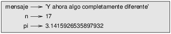
Figure 2.1: Diagrama de estado.
2.2 Nombres de variable
Los programadores generalmente escogen nombres para sus variables que sean significativos: documentan para qué se utiliza la variable.
Los nombres de variable pueden ser tan largos como quieras. Pueden contener tanto letras como números, pero no pueden comenzar con un número. Es legal utilizar letras mayúsculas, pero es convencional utilizar solo minúsculas para los nombres de variables.
El guión bajo, _, puede aparecer en un nombre.
A menudo se utiliza en nombres con varias palabras, tales como
tu_nombre o velocidad_de_golondrina_sin_carga.
Si le das un nombre ilegal a una variable, obtendrás un error de sintaxis:
>>> 76trombones = 'gran desfile'
SyntaxError: invalid syntax
>>> mas@ = 1000000
SyntaxError: invalid syntax
>>> class = 'Cimología teórica avanzada'
SyntaxError: invalid syntax
76trombones es ilegal porque comienza con un número. mas@ es ilegal porque contiene un carácter ilegal, @. Sin embargo, ¿qué tiene de malo class?
Resulta que class es una de las palabras clave de Python. El intérprete utiliza las palabras clave para reconocer la estructura del programa y no se pueden utilizar como nombres de variable.
Python 3 tiene estas palabras clave:
False class finally is return None continue for lambda try True def from nonlocal while and del global not with as elif if or yield assert else import pass break except in raise
No tienes que memorizar esta lista. En la mayoría de los entornos de desarrollo, las palabras clave se muestran con un color diferente; si intentas utilizar una como nombre de variable, lo sabrás.
2.3 Expresiones y sentencias
Una expresión es una combinación de valores, variables y operadores. Un valor por sí mismo es considerado una expresión, y por consigiuente lo es una variable, así que las siguientes son todas expresiones legales:
>>> 42
42
>>> n
17
>>> n + 25
42
Cuando escribes una expresión en el prompt, el intérprete la evalúa, lo cual significa que encuentra el valor de la expresión. En este ejemplo, n tiene el valor 17 y n + 25 tiene el valor 42.
Una sentencia es una unidad de código que tiene un efecto, como crear una variable o mostrar un valor.
>>> n = 17 >>> print(n)
La primera línea es una sentencia de asignación que le da un valor a n. La segunda línea es una sentencia print que muestra el valor de n.
Cuando escribes una sentencia, el intérprete la ejecuta, lo cual significa que hace lo que dice la sentencia. En general, las sentencias no tienen valores.
2.4 Modo Script
Hasta ahora hemos ejecutado Python en modo interactivo, lo cual significa que interactúas directamente con el intérprete. El modo interactivo es una buena manera de comenzar, pero si estás trabajando con más que unas pocas líneas de código, puede ser algo torpe.
La alternativa es guardar código en un archivo llamado script y entonces utilizar el intérprete en modo script para ejecutar el script. Por convención, los scripts de Python tienen nombres que terminan con .py.
Si sabes cómo crear y ejecutar un script en tu computador, estás listo para seguir. De lo contrario, recomiendo de nuevo utilizar PythonAnywhere. He publicado instrucciones para utilizarlo en modo script en http://tinyurl.com/thinkpython2e.
Debido a que Python proporciona ambos modos, puedes probar pedazos de código en modo interactivo antes de ponerlos en un script. Sin embargo, hay diferencias entre el modo interactivo y el modo script que pueden confundir.
Por ejemplo, si utilizas Python como una calculadora, puedes escribir
>>> millas = 26.2
>>> millas * 1.61
42.182
La primera línea asigna un valor a millas, pero no tiene un efecto visible. La segunda línea es una expresión, por lo cual el intérprete la evalúa y muestra el resultado. Resulta que una maratón es de unos 42 kilómetros.
Sin embargo, si escribes el mismo código dentro de un script y lo ejecutas, no obtienes ninguna salida. En modo script, una expresión por sí misma no tiene efecto visible. Python evalúa la expresión, pero no muestra el resultado. Para mostrar el resultado, necesitas una sentencia print como esta:
millas = 26.2 print(millas * 1.61)
Este comportamiento puede confundir al principio. Para comprobar tu comprensión, escribe las siguientes sentencias en el intérprete de Python y mira lo que hacen:
5 x = 5 x + 1
Ahora pon las mismas sentencias en un script y ejecútalo. ¿Cuál es la salida? Modifica el script transformando cada expresión en una sentencia print y luego ejecútalo de nuevo.
2.5 Orden de operaciones
Cuando una expresión contiene más de un operador, el orden de evaluación depende del orden de operaciones. Para operadores matemáticos, Python sigue la convención matemática. El acrónimo PEMDAS es una manera útil de recordar las reglas:
- Los Paréntesis tienen la mayor prioridad y se pueden utilizar para forzar una expresión a evaluar en el orden que tú quieras. Dado que las expresiones en paréntesis se evalúan primero, 2 * (3-1) es 4, y (1+1)**(5-2) es 8. También puedes utilizar paréntesis para hacer una expresión más fácil de leer, como en (minuto * 100) / 60, incluso si no cambia el resultado.
- Los Exponentes de potencias tienen la siguiente proridad, así que 1 + 2**3 es 9, no 27, y 2 * 3**2 es 18, no 36.
- La Multiplicación y la División tienen mayor prioridad que la Adición (suma) y la Sustracción (resta). Así que 2*3-1 es 5, no 4, y 6+4/2 es 8, no 5.
- Los operadores con la misma prioridad se evalúan de izquierda a derecha (excepto la potenciación). Así que en la expresión grados / 2 * pi, la división ocurre primero y el resultado se multiplica por pi. Para dividir por 2 π, puedes utilizar paréntesis o escribir grados / 2 / pi.
Yo no me esfuerzo mucho en recordar la prioridad de los operadores. Si no puedo saber mirando la expresión, utilizo paréntesis para hacerlo obvio.
2.6 Operaciones con cadenas
En general, no puedes realizar operaciones matemáticas con cadenas, incluso si las cadenas parecen números, así que las siguientes expresiones son ilegales:
'comida'-'china' 'huevos'/'fácil' 'la tercera'*'la vencida'
Sin embargo, hay dos excepciones: + y *.
El operador + realiza una concatenación, lo cual significa que une las cadenas enlazándolas de extremo a extremo. Por ejemplo:
>>> primero = 'curruca'
>>> segundo = 'garganta'
>>> primero + segundo
currucagarganta
El operador * también funciona en cadenas: hace repetición.
Por ejemplo, 'Spam'*3 es 'SpamSpamSpam'. Si uno de los
valores es una cadena, el otro tiene que ser un entero.
Este uso de + y * tiene sentido por
analogía con la suma y la multiplicación. Tal como 4*3 es
equivalente a 4+4+4, esperamos que 'Spam'*3 sea lo mismo que
'Spam'+'Spam'+'Spam', y lo es. Por otro lado, hay una
manera significativa en la que la concatenación y la repetición son
diferentes de la suma y multiplicación de enteros.
¿Puedes pensar en una propiedad que tiene la suma
que la concatenación no tiene?
2.7 Comentarios
A medida que los programas se hacen más grandes y complicados, se vuelven más difíciles de leer. Los lenguajes formales son densos y a menudo es difícil mirar un pedazo de código y descifrar lo que hace, o por qué lo hace.
Por esta razón, es una buena idea añadir notas a tus programas para explicar
en lenguaje natural lo que hace el programa. Estas notas se llaman
comentarios, y comienzan con el símbolo #:
# calcular el porcentaje de la hora que ha transcurrido porcentaje = (minuto * 100) / 60
En este caso, el comentario aparece en una línea por sí sola. Puedes también poner comentarios al final de una línea:
porcentaje = (minuto * 100) / 60 # porcentaje de una hora
Todo desde el # hasta el final de la línea es ignorado: no tiene efecto en la ejecución del programa.
Los comentarios son más útiles cuando documentan características del código que no son obvias. Es razonable suponer que el lector puede descifrar qué hace el código; es más útil explicar por qué.
Este comentario es redundante con el código e inútil:
v = 5 # asigna 5 a v
Este comentario contiene información útil que no está en el código:
v = 5 # velocidad en metros/segundos.
Los buenos nombres de variable pueden reducir la necesidad de comentarios, pero los nombres largos pueden hacer que las expresiones complejas sean difíciles de leer, así que hay una compensación.
2.8 Depuración
En un programa pueden ocurrir tres tipos de errores: errores de sintaxis, errores de tiempo de ejecución y errores semánticos. Es útil distinguir entre ellos para rastrearlos de manera más rápida.
- Error de sintaxis:
- La “sintaxis” se refiere a la estructura de un programa
y las reglas sobre esa estructura. Por ejemplo, los paréntesis tienen
que venir en pares que coincidan, por lo que (1 + 2) es legal, pero 8)
es un error de sintaxis.
Si hay un error de sintaxis en cualquier lugar de tu programa, Python muestra un mensaje de error y se detiene, y no podrás ejecutar el programa. Durante las primeras semanas de tu carrera de programación, podrías pasar mucho tiempo rastreando errores de sintaxis. A medida que ganes experiencia, cometerás menos errores y los encontrarás más rápido.
- Error de tiempo de ejecución:
- El segundo tipo de error es el error de tiempo de ejecución,
llamado así porque el error no aparece hasta después de que el programa ha
comenzado a ejecutarse. Estos errores también se llaman excepciones
porque usualmente indican que algo excepcional (y malo)
ha ocurrido.
Los errores de tiempo de ejecución son poco comunes en programas simples que verás en los primeros capítulos, así que puede pasar un tiempo antes de que encuentres uno.
- Error semántico:
- El tercer tipo de error es “semántico”, lo cual
significa que se relaciona con el significado. Si hay un error semántico en tu
programa, se ejecutará sin generar mensajes de error, pero
no hará lo correcto. Hará otra cosa. Específicamente,
hará lo que le dijiste que hiciera.
Identificar errores semánticos puede ser complicado porque requiere que trabajes hacia atrás mirando la salida del programa e intentando averiguar lo que hace.
2.9 Glosario
- variable:
- Un nombre que se refiere a un valor.
- asignación:
- Una sentencia que asigna un valor a una variable.
- diagrama de estado:
- Una representación gráfica de un conjunto de variables y los valores a los cuales se refieren.
- palabra clave:
- Una palabra reservada que se utiliza como parte de la sintaxis de un programa; no puedes utilizar palabras claves tales como if, def y while como nombres de variables.
- operando:
- Uno de los valores en los cuales opera un operador.
- expresión:
- Una combinación de variables, operadores y valores que representa un resultado único.
- evaluar:
- Simplificar una expresión realizando las operaciones para obtener un valor único.
- sentencia:
- Una sección de código que representa un comando o acción. Hasta aquí, las sentencias que hemos visto son asignaciones y sentencias print.
- ejecutar:
- Llevar a efecto una sentencia y hacer lo que dice.
- modo interactivo:
- Una manera de utilizar el intérprete de Python escribiendo código en el prompt.
- modo script:
- Una manera de utilizar el intérprete de Python para leer código de un script y ejecutarlo.
- script:
- Un programa almacenado en un archivo.
- orden de operaciones:
- Reglas que gobiernan el orden en el cual se evalúan las expresiones que involucran múltiples operadores y operandos.
- concatenar:
- Unir dos operandos de extremo a extremo.
- comentario:
- Información en un programa que está destinada a otros programadores (o cualquiera que lea el código fuente) y no tiene efecto en la ejecución del programa.
- error de sintaxis:
- Un error en un programa que hace imposible reconocer la estructura sintáctica (y por lo tanto imposible de interpretar).
- excepción:
- Un error que es detectado mientras el programa se ejecuta.
- semántica:
- El significado de un programa.
- error semántico:
- Un error en un programa que supone hacer algo distinto a lo que el programador pretendía.
2.10 Ejercicios
Repitiendo mi consejo del capítulo anterior, cuando aprendas una nueva característica, deberías intentar probarla en modo interactivo y cometer errores a propósito para ver qué sale mal.
- Hemos visto que n = 42 es legal. ¿Qué pasa con 42 = n?
- ¿Qué ocurre con x = y = 1?
- En algunos lenguajes cada sentencia termina con un punto y coma, ;. ¿Qué ocurre si pones un punto y coma al final de una sentencia de Python?
- ¿Qué ocurre si pones un punto al final de una sentencia?
- En notación matemática puedes multiplicar x e y así: x y. ¿Qué ocurre si intentas eso en Python?
Practica utilizando el intérprete de Python como una calculadora:
- El volumen de una esfera con radio r es 4/3 π r3. ¿Cuál es el volumen de una esfera con radio 5?
- Supongamos que el precio original de un libro es $24.95, pero las librerías obtienen un 40% de descuento. El envío cuesta $3 para la primera copia y 75 centavos por cada copia adicional. ¿Cuál es el costo al por mayor para 60 copias?
- Si dejo mi casa a las 6:52 a.m. y corro 1 milla a un ritmo fácil (8 minutos y 15 segundos por milla), luego 3 millas a tempo (7 minutos y 12 segundos por milla) y 1 milla a ritmo fácil de nuevo, ¿a qué hora llego a casa para el desayuno?
Chapter 3 Funciones
En el contexto de la programación, una función es una secuencia de sentencias que realiza una computación y posee un nombre. Cuando defines una función, especificas el nombre y la secuencia de sentencias. Después, puedes “llamar” a la función por su nombre.
3.1 Llamadas a funciones
Ya hemos visto un ejemplo de una llamada a función:
>>> type(42)
<class 'int'>
El nombre de la función es type. La expresión en paréntesis se llama argumento de la función. El resultado, para esta función, es el tipo del argumento.
Es común decir que una función “toma” un argumento y “devuelve” un resultado. El resultado también se llama valor de retorno (en inglés, return value).
Python proporciona funciones que convierten valores de un tipo a otro. La función int toma cualquier valor y lo convierte en un entero, si puede, o de lo contrario reclama:
>>> int('32')
32
>>> int('Hola')
ValueError: invalid literal for int(): Hola
int puede convertir valores de coma flotante en enteros, pero no redondea; corta la parte de fracción:
>>> int(3.99999)
3
>>> int(-2.3)
-2
float convierte enteros y cadenas en números coma flotante:
>>> float(32)
32.0
>>> float('3.14159')
3.14159
Por último, str convierte su argumento en una cadena:
>>> str(32)
'32'
>>> str(3.14159)
'3.14159'
3.2 Funciones matemáticas
Python tiene un módulo matemático que proporciona la mayor parte de las funciones matemáticas conocidas. Un módulo es un archivo que contiene una colección de funciones relacionadas entre sí.
Antes de que podamos utilizar las funciones de un módulo, tenemos que importarlo con una sentencia import:
>>> import math
Esta sentencia crea un objeto de módulo llamado math. Si muestras el objeto de módulo en pantalla, obtienes información sobre este:
>>> math
<module 'math' (built-in)>
El objeto de módulo contiene las funciones y variables definidas en el módulo. Para tener acceso a una de las funciones, tienes que especificar el nombre del módulo y el nombre de la función, separados por un punto. Este formato se llama notación de punto.
>>> relacion = potencia_senal / potencia_ruido >>> decibeles = 10 * math.log10(relacion) >>> radianes = 0.7 >>> altura = math.sin(radianes)
El primer ejemplo utiliza math.log10 para calcular
una relación señal/ruido en decibeles (suponiendo que potencia_senal y
potencia_ruido están definidas). El módulo math también proporciona a log,
que calcula logaritmos en base e.
El segundo ejemplo encuentra el seno de radianes. El nombre de la variable radianes es un indicio de que sin y las otras funciones trigonométricas (cos, tan, etc.) toman argumentos en radianes. Para convertir de grados a radianes, divide por 180 y multiplica por π:
>>> grados = 45
>>> radianes = grados / 180.0 * math.pi
>>> math.sin(radianes)
0.707106781187
La expresión math.pi obtiene la variable pi del módulo math. Su valor es una aproximación en coma flotante de π, con precisión de alrededor de 15 digitos.
Si sabes trigonometría, puedes verificar los resultados anteriores comparándolos con la raíz cuadrada de dos, dividida por dos:
>>> math.sqrt(2) / 2.0
0.707106781187
3.3 Composición
Hasta aquí, hemos visto los elementos de un programa —variables, expresiones y sentencias— de forma aislada, sin hablar sobre cómo combinarlos.
Una de las características más útiles de los lenguajes de programación es su posibilidad de tomar pequeños bloques de construcción y componerlos. Por ejemplo, el argumento de una función puede ser cualquier tipo de expresión, incluyendo operadores aritméticos:
x = math.sin(grados / 360.0 * 2 * math.pi)
También llamadas a funciones:
x = math.exp(math.log(x+1))
Casi en cualquier lugar que puedes poner un valor, puedes poner una expresión arbitraria, con una excepción: el lado izquierdo de una sentencia de asignación tiene que ser un nombre de variable. Cualquier otra expresión en el lado izquierdo es un error de sintaxis (veremos excepciones a esta regla más tarde).
>>> minutos = horas * 60 # correcto
>>> horas * 60 = minutos # ¡incorrecto!
SyntaxError: can't assign to operator
3.4 Agregar nuevas funciones
Hasta aquí, solo hemos estado utilizando las funciones que vienen con Python, pero también es posible agregar nuevas funciones. Una definición de función especifica el nombre de una nueva función y la secuencia de sentencias que se ejecutan cuando la función es llamada.
Aquí hay un ejemplo:
def imprimir_letra():
print("I'm a lumberjack, and I'm okay.")
print("I sleep all night and I work all day.")
def es una palabra clave que indica que esta es una definición
de función. El nombre de la función es imprimir_letra. Las
reglas para los nombres de funciones son las mismas que para los nombres de variables: las letras,
los números y el guión bajo son legales, pero el primer carácter
no puede ser un número. No puedes utilizar una palabra clave como nombre de una función,
y deberías evitar tener una variable y una función con el mismo
nombre.
Los paréntesis vacíos después del nombre indican que esta función no toma ningún argumento.
La primera línea de la definición de función se llama encabezado (en inglés, header); el resto se llama cuerpo (en inglés, body). El encabezado debe terminar con el signo de dos puntos y el cuerpo debe tener sangría. Por convención, la sangría siempre se hace con cuatro espacios. El cuerpo puede contener cualquier número de sentencias.
Las cadenas en las sentencias print están encerradas en comillas dobles. Las comillas simples y las comillas dobles hacen lo mismo; la mayoría de la gente utiliza comillas simples excepto en casos como este donde una comilla simple (que también es un apóstrofe) aparece en la cadena.
Todas las comillas (simples y dobles) deben ser “comillas rectas”, usualmente ubicadas cerca de Enter en el teclado. Las “comillas tipográficas”, como las de esta oración, no son legales en Python.
Si escribes una definición de función en modo interactivo, el intérprete imprime puntos (...) que te hacen saber que la definición no está completa:
>>> def imprimir_letra():
... print("I'm a lumberjack, and I'm okay.")
... print("I sleep all night and I work all day.")
...
Para terminar una función, tienes que insertar una línea vacía.
Al definir una función, se crea un objeto de función que tiene
tipo function:
>>> print(imprimir_letra)
<function imprimir_letra at 0xb7e99e9c>
>>> type(imprimir_letra)
<class 'function'>
La sintaxis para llamar a la nueva función es la misma que para las funciones incorporadas:
>>> imprimir_letra()
I'm a lumberjack, and I'm okay.
I sleep all night and I work all day.
Una vez que hayas definido una función, puedes utilizarla dentro de otra
función. Por ejemplo, para repetir el estribillo anterior, podríamos escribir
una función llamada repetir_letra:
def repetir_letra():
imprimir_letra()
imprimir_letra()
Y luego llamar a repetir_letra:
>>> repetir_letra()
I'm a lumberjack, and I'm okay.
I sleep all night and I work all day.
I'm a lumberjack, and I'm okay.
I sleep all night and I work all day.
Pero así no es como sigue la canción realmente.
3.5 Definiciones y usos
Reuniendo los fragmentos de código de la sección anterior, el programa completo se ve así:
def imprimir_letra():
print("I'm a lumberjack, and I'm okay.")
print("I sleep all night and I work all day.")
def repetir_letra():
imprimir_letra()
imprimir_letra()
repetir_letra()
Este programa contiene dos definiciones de función: imprimir_letra y
repetir_letra. Las definiciones de funciones se ejecutan al igual que otras
sentencias, pero el efecto es crear objetos de función. Las sentencias
dentro de la función no se ejecutan hasta que la función es llamada, y
la definición de función no genera salida.
Como podrías esperar, tienes que crear la función antes de que puedas ejecutarla. En otras palabras, la definición de función tiene que efectuarse antes de que la función sea llamada.
Como ejercicio, mueve la última línea de este programa hasta el principio, así la llamada a la función aparece antes que las definiciones. Ejecuta el programa y mira qué mensaje de error obtienes.
Ahora regresa la llamada de función al final
y mueve la definición de imprimir_letra a después de la definición de
repetir_letra. ¿Qué ocurre cuando ejecutas este programa?
3.6 Flujo de ejecución
Para asegurarte de que una función está definida antes de su primer uso, tienes que conocer el orden en que se ejecutan las sentencias, lo cual se llama flujo de ejecución.
La ejecución siempre comienza con la primera sentencia del programa. Las sentencias se ejecutan una a la vez, en orden desde arriba hacia abajo.
Las definiciones de función no alteran el flujo de ejecución del programa, pero recuerda que las sentencias dentro de la función no se ejecutan hasta que la función es llamada.
Una llamada a función es como un desvío en el flujo de ejecución. En lugar de ir a la siguiente sentencia, el flujo salta al cuerpo de la función, ejecuta las sentencias que están allí y luego regresa para retomar donde lo había dejado.
Eso suena bastante simple, hasta que recuerdas que una función puede llamar a otra. Mientras está en el medio de una función, el programa quizás tenga que ejecutar las sentencias en otra función. Luego, mientras se ejecuta esa nueva función, ¡el programa quizás tenga que ejecutar otra función más!
Afortunadamente, Python es bueno haciendo seguimiento de dónde está, así que cada vez que se completa una función, el programa retoma donde lo había dejado en la función que la llamó. Cuando llega al final del programa, termina.
En resumen, cuando lees un programa, no siempre quieres leer desde arriba hacia abajo. A veces tiene más sentido si sigues el flujo de ejecución.
3.7 Parámetros y argumentos
Algunas de las funciones que hemos visto requieren argumentos. Por ejemplo, cuando llamas a math.sin pasas un número como argumento. Algunas funciones toman más de un argumento; math.pow toma dos: la base y el exponente.
Dentro de la función, los argumentos son asignados a variables llamadas parámetros. Aquí hay una definición para una función que toma un argumento:
def impr_2veces(bruce):
print(bruce)
print(bruce)
Esta función asigna el argumento a un parámetro con nombre bruce. Cuando la función es llamada, esta imprime el valor del parámetro (sea lo que sea) dos veces.
Esta función puede utilizarse con cualquier valor que se pueda imprimir.
>>> impr_2veces('Spam')
Spam
Spam
>>> impr_2veces(42)
42
42
>>> impr_2veces(math.pi)
3.14159265359
3.14159265359
Las mismas reglas de composición que se aplican a las funciones incorporadas también
se aplican a las funciones definidas por el programador, así que podemos utilizar cualquier tipo de expresión
como un argumento para impr_2veces:
>>> impr_2veces('Spam '*4)
Spam Spam Spam Spam
Spam Spam Spam Spam
>>> impr_2veces(math.cos(math.pi))
-1.0
-1.0
El argumento es evaluado antes de que se llame a la función, por lo que
en los ejemplos las expresiones 'Spam '*4 y
math.cos(math.pi) son evaluadas una sola vez.
También puedes utilizar una variable como un argumento:
>>> michael = 'Eric, the half a bee.' >>> impr_2veces(michael) Eric, the half a bee. Eric, the half a bee.
El nombre de la variable que pasamos como argumento (michael) no tiene
nada que ver con el nombre del parámetro (bruce). No
importa cómo se le llame al valor en su casa (en la sentencia llamadora);
aquí en impr_2veces, a todos les llamamos bruce.
3.8 Las variables y los parámetros son locales
Cuando creas una variable dentro de una función, esta es local, lo cual significa que existe solamente dentro de la función. Por ejemplo:
def cat_2veces(parte1, parte2):
cat = parte1 + parte2
impr_2veces(cat)
Esta función toma dos argumentos, los concatena e imprime el resultado dos veces. Aquí hay un ejemplo que la utiliza:
>>> linea1 = 'Bing tiddle '
>>> linea2 = 'tiddle bang.'
>>> cat_2veces(linea1, linea2)
Bing tiddle tiddle bang.
Bing tiddle tiddle bang.
Cuando cat_2veces termina, la variable cat
se destruye. Si intentamos imprimirla, obtenemos una excepción:
>>> print(cat)
NameError: name 'cat' is not defined
Los parámetros también son locales.
Por ejemplo, afuera de impr_2veces, no hay
tal cosa como bruce.
3.9 Diagramas de pila
Para hacer un seguimiento de qué variables se pueden utilizar en qué lugar, a veces es útil dibujar un diagrama de pila (en inglés, stack diagram). Al igual que los diagramas de estado, los diagramas de pila muestran el valor de cada variable, pero también muestran la función a la cual pertenece cada variable.
Cada función se representa por un marco (en inglés, frame). Un marco es un recuadro que tiene el nombre de una función al lado y los parámetros y variables de la función adentro. El diagrama de pila para el ejemplo anterior se muestra en la Figura 3.1.
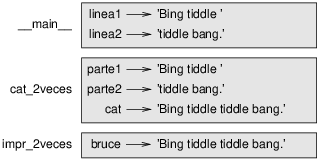
Figure 3.1: Diagrama de pila.
Los marcos se organizan en una pila que indica cuál función
llama a cuál, y así sucesivamente. En este ejemplo, impr_2veces
fue llamado por cat_2veces, y cat_2veces fue llamado por
__main__, el cual es un nombre especial para el marco más alto. Cuando
creas una variable afuera de todas las funciones, pertenece a
__main__.
Cada parámetro se refiere al mismo valor que su argumento correspondiente. Así que, parte1 tiene el mismo valor que linea1, parte2 tiene el mismo valor que linea2 y bruce tiene el mismo valor que cat.
Si ocurre un error durante una llamada a función, Python imprime el
nombre de la función, el nombre de la función que la llamó
y el nombre de la función que llamó a esa, todo el
camino de vuelta a __main__.
Por ejemplo, si intentas acceder a cat desde adentro de
impr_2veces, obtienes un NameError:
Traceback (innermost last):
File "test.py", line 13, in __main__
cat_2veces(linea1, linea2)
File "test.py", line 5, in cat_2veces
impr_2veces(cat)
File "test.py", line 9, in impr_2veces
print(cat)
NameError: name 'cat' is not defined
Esta lista de funciones se llama rastreo (en inglés, traceback). Te dice en qué archivo de programa ocurrió el error, y en qué línea, y qué funciones se estaban ejecutando en ese momento. Además, te muestra la línea de código que causó el error.
El orden de las funciones en el rastreo es el mismo que el orden de los marcos en el diagrama de pila. La función que se está ejecutando actualmente está al final.
3.10 Funciones productivas y funciones nulas
Algunas de las funciones que hemos utilizado, tales como las funciones matemáticas, devuelven
resultados; por falta de un mejor nombre, las llamo funciones
productivas. Otras funciones, como impr_2veces, realizan una
acción pero no devuelven un valor. Son llamadas funciones
nulas (en inglés, void functions).
Cuando llamas a una función productiva, casi siempre quieres hacer algo con el resultado; por ejemplo, podrías asignarlo a una variable o utilizarlo como parte de una expresión:
x = math.cos(radianes) dorado = (math.sqrt(5) + 1) / 2
Cuando llamas a una función en modo interactivo, Python muestra el resultado:
>>> math.sqrt(5)
2.2360679774997898
Pero en un script, si llamas a una función productiva por sí sola, ¡el valor de retorno se pierde para siempre!
math.sqrt(5)
Este script calcula la raíz cuadrada de 5, pero ya que no almacena ni muestra el resultado, no es muy útil.
Las funciones nulas podrían mostrar algo en la pantalla o tener algún otro efecto, pero no tienen un valor de retorno. Si asignas el resultado a una variable, obtienes un valor especial llamado None.
>>> resultado = impr_2veces('Bing')
Bing
Bing
>>> print(resultado)
None
El valor None no es lo mismo que la cadena 'None'.
Es un valor especial que tiene su propio tipo:
>>> type(None)
<class 'NoneType'>
Las funciones que hemos escrito hasta ahora son todas nulas. Comenzaremos a escribir funciones productivas en unos capítulos más adelante.
3.11 ¿Por qué funciones?
Puede que no esté claro por qué vale la pena el problema de dividir un programa en funciones. Hay muchas razones:
- Crear una nueva función te da la oportunidad de ponerle nombre a un grupo de sentencias, lo cual hace que tu programa sea más fácil de leer y depurar.
- Las funciones pueden hacer que un programa sea más pequeño al eliminar código repetitivo. Después, si quieres hacer un cambio, solo tienes que hacerlo en un lugar.
- Dividir un programa largo en funciones te permite depurar las partes una a la vez y luego reunirlas en un todo funcional.
- Las funciones bien diseñadas son a menudo útiles para muchos programas. Una vez que escribes y depuras una, la puedes reutilizar.
3.12 Depuración
Una de las habilidades más importantes que adquirirás es la depuración. Aunque puede ser frustrante, la depuración es una de las partes más intelectualmente ricas, desafiantes e interesantes de la programación.
En algunas formas la depuración es como un trabajo de detective. Te enfrentas a pistas y tienes que inferir los procesos y eventos que te guían a los resultados que ves.
La depuración es también como una ciencia experimental. Una vez que tienes una idea sobre qué va mal, modificas tu programa e intentas de nuevo. Si tu hipótesis era correcta, puedes predecir el resultado de la modificación y das un paso más cerca hacia un programa que funcione. Si tu hipótesis era incorrecta, tienes que inventar una nueva. Como señaló Sherlock Holmes, “Una vez descartado lo imposible, lo que queda, por improbable que parezca, debe ser la verdad.” (A. Conan Doyle, El signo de los cuatro)
Para algunas personas, programar y depurar son lo mismo. Es decir, programar es el proceso de depurar gradualmente un programa hasta que haga lo que tú quieres. La idea es que deberías comenzar con un programa que funcione y hacer pequeñas modificaciones, depurándolas a medida que avanzas.
Por ejemplo, Linux es un sistema operativo que contiene millones de líneas de código, pero comenzó como un programa simple que Linus Torvalds utilizaba para explorar el chip Intel 80386. Según Larry Greenfield, “Uno de los proyectos anteriores de Linus era un programa que cambiaría entre imprimir AAAA y BBBB. Esto evolucionó más tarde a Linux.” (The Linux Users’ Guide Beta Version 1).
3.13 Glosario
- función:
- Una secuencia de sentencias que tiene nombre y realiza alguna operación útil. Las funciones pueden o no tomar argumentos y pueden o no producir un resultado.
- definición de función:
- Una sentencia que crea una nueva función, especificando su nombre, parámetros y las sentencias que contiene.
- objeto de función:
- Un valor creado por una definición de función. El nombre de la función es una variable que se refiere a un objeto de función.
- encabezado:
- La primera línea de una definición de función.
- cuerpo:
- La secuencia de sentencias dentro de una definición de función.
- parámetro:
- Un nombre utilizado dentro de una función para referirse al valor pasado como argumento.
- llamada a función:
- Una sentencia que ejecuta una función. Consiste en el nombre de la función seguido de una lista de argumentos en paréntesis.
- argumento:
- Un valor proporcionado a la función cuando la función es llamada. Este valor es asignado al parámetro correspondiente en la función.
- variable local:
- Una variable definida dentro de una función. Una variable local solo puede utilizarse dentro de su función.
- valor de retorno:
- El resultado de una función. Si una llamada a función se utiliza como expresión, el valor de retorno es el valor de la expresión.
- función productiva:
- Una función que devuelve un valor.
- función nula:
- Una función que siempre devuelve None.
- None:
- Un valor especial devuelto por funciones nulas.
- módulo:
- Un archivo que contiene una colección de funciones relacionadas entre sí y otras definiciones.
- sentencia import:
- Una sentencia que lee un archivo de módulo y crea un objeto de módulo.
- objeto de módulo:
- Un valor creado por una sentencia import que proporciona acceso a los valores definidos en el módulo.
- notación de punto:
- La sintaxis para llamar a una función de otro módulo especificando el nombre del módulo, seguido de un punto y el nombre de la función.
- composición:
- Usar una expresión como parte de una expresión más grande, o una sentencia como parte de una sentencia más grande.
- flujo de ejecución:
- El orden en que las sentencias se ejecutan.
- diagrama de pila:
- Una representación de una pila de funciones, sus variables y los valores a los cuales se refieren.
- marco:
- Un recuadro en un diagrama de pila que representa una llamada a función. Contiene las variables locales y los parámetros de la función.
- rastreo:
- Una lista de las funciones que se están ejecutando, impresas cuando ocurre una excepción.
3.14 Ejercicios
Escribe una función con nombre justificar_derecha que tome una cadena
con nombre s como parámetro e imprima la cadena con suficientes
espacios al inicio de tal manera que la última letra de la cadena esté en la columna 70
de la pantalla.
>>> justificar_derecha('monty')
monty
Pista: utiliza la repetición de cadenas y la concatenación. Además,
Python proporciona una función incorporada llamada len que
devuelve la longitud de una cadena, por lo que el valor de len('monty') es 5.
Un objeto de función es un valor que puedes asignar a una variable o
pasarlo como argumento. Por ejemplo, hacer_2veces es una función
que toma un objeto de función como argumento y lo llama dos veces:
def hacer_2veces(f):
f()
f()
Aquí hay un ejemplo que utiliza hacer_2veces para llamar a una función
con nombre imprimir_spam dos veces.
def imprimir_spam():
print('spam')
hacer_2veces(imprimir_spam)
- Escribe este ejemplo en un script y pruébalo.
- Modifica
hacer_2vecespara que tome dos argumentos, un objeto de función y un valor, y llame a la función dos veces, pasando al valor como argumento. - Copia la definición de
impr_2veces, presentada previamente en este capítulo, a tu script. - Usa la versión modificada de
hacer_2vecespara llamar aimpr_2vecesdos veces, pasando a'spam'como argumento. - Define una nueva función llamada
hacer_4vecesque tome un objeto de función y un valor y llame a la función cuatro veces, pasando al valor como argumento. Debería haber solo dos sentencias en el cuerpo de esta función, no cuatro.
Solution: http://thinkpython.com/code/do_four.py.
Nota: Este ejercicio debería hacerse utilizando solo las sentencias y otras características que hemos aprendido hasta ahora.
- Escribe una función que dibuje una cuadrícula como la siguiente:
+ - - - - + - - - - + | | | | | | | | | | | | + - - - - + - - - - + | | | | | | | | | | | | + - - - - + - - - - +
Pista: para imprimir más de un valor en una línea, puedes imprimir una secuencia de valores separada por comas:print('+', '-')Por defecto, print avanza a la siguiente línea, pero puedes anular ese comportamiento y poner un espacio al final, como esto:
print('+', end=' ') print('-')La salida de estas sentencias es
'+ -'en la misma línea. La salida desde la siguiente sentencia print debería comenzar en la siguiente línea. - Escribe una función que dibuje una cuadrícula similar con cuatro filas y cuatro columnas.
Solución: http://thinkpython.com/code/grid.py. Crédito: este ejercicio está basado en un ejercicio de Oualline, Practical C Programming, Third Edition, O’Reilly Media, 1997.
Chapter 4 Estudio de caso: diseño de interfaz
Este capítulo presenta un estudio de caso que demuestra un proceso para diseñar funciones que interactúen entre sí.
Se presenta el módulo turtle, el cual te permite crear imágenes utilizando gráficas tortuga. El módulo turtle está incluido en la mayoría de las instalaciones de Python, pero si estás ejecutando Python utilizando PythonAnywhere, no podrás ejecutar los ejemplos de tortuga (al menos no podías cuando escribí esto).
Si ya has instalado Python en tu computador, deberías poder ejecutar los ejemplos. Si no, ahora es un buen momento para instalarlo. He publicado instrucciones en http://tinyurl.com/thinkpython2e.
Los códigos de ejemplo de este capítulo están disponibles en http://thinkpython.com/code/polygon.py.
4.1 El módulo turtle
Para verificar si tienes el módulo turtle, abre el intérprete de Python y escribe
>>> import turtle >>> bob = turtle.Turtle()
Cuando ejecutes este código, debería crearse una nueva ventana con una flecha pequeña que representa la tortuga. Cierra la ventana.
Crea un archivo con nombre mipoligono.py y escribe en él las siguientes líneas de código:
import turtle bob = turtle.Turtle() print(bob) turtle.mainloop()
El módulo turtle (con ’t’ minúscula) proporciona una función llamada Turtle (con ’T’ mayúscula) que crea un objeto Turtle, el cual asignamos a una variable con nombre bob. Al imprimir bob se muestra algo como:
<turtle.Turtle object at 0xb7bfbf4c>
Esto significa que bob se refiere a un objeto con tipo Turtle como se define en el módulo turtle.
mainloop le dice a la ventana que espere a que el usuario
haga algo, aunque en este caso no hay mucho que pueda hacer
el usuario excepto cerrar la ventana.
Una vez que creas una tortuga, puedes llamar a un método para moverla dentro de la ventana. Un método es similar a una función, pero utiliza una sintaxis un poco diferente. Por ejemplo, para mover la tortuga hacia adelante:
bob.fd(100)
El método, fd (forward), está asociado con el objeto tortuga que llamamos bob. Llamar a un método es como hacer una solicitud: le estás pidiendo a bob que se mueva hacia adelante.
El argumento de fd es una distancia en pixeles, por lo que el tamaño real depende de tu pantalla.
Otros métodos que puedes llamar en un objeto Turtle son bk (backward) para retroceder, lt (left turn) para girar a la izquierda y rt (right turn) para girar a la derecha. El argumento para lt y rt es un ángulo en grados.
Además, cada Turtle sostiene una pluma, que está arriba o abajo; si la pluma está abajo, la tortuga deja un rastro cuando se mueve. Los métodos pu y pd representan “pen up” y “pen down”.
Para dibujar un ángulo recto, agrega estas líneas al programa
(después de crear a bob y antes de llamar a mainloop):
bob.fd(100) bob.lt(90) bob.fd(100)
Cuando ejecutes este programa, deberías ver a bob moverse al este y luego al norte, dejando dos segmentos de línea atrás.
Ahora modifica el programa para dibujar un cuadrado. ¡No continues hasta que lo hayas hecho funcionar!
4.2 Repetición simple
Es probable que hayas escrito algo así:
bob.fd(100) bob.lt(90) bob.fd(100) bob.lt(90) bob.fd(100) bob.lt(90) bob.fd(100)
Podemos hacer lo mismo de manera más concisa con una sentencia for. Agrega este ejemplo a mipoligono.py y ejecútalo de nuevo:
for i in range(4):
print('¡Hola!')
Deberías ver algo como esto:
¡Hola! ¡Hola! ¡Hola! ¡Hola!
Este es el uso más simple de una sentencia for; después veremos más. Pero eso debería ser suficiente para dejarte reescribir tu programa que dibuja cruadrados. No continues hasta que lo hagas.
Aquí hay una sentencia for que dibuja un cuadrado:
for i in range(4):
bob.fd(100)
bob.lt(90)
La sintaxis de una sentencia for es similar a una definición de función. Tiene un encabezado que termina con el signo dos puntos y un cuerpo con sangrías. El cuerpo puede contener cualquier número de sentencias.
Una sentencia for también es llamada bucle porque el flujo de ejecución pasa por el cuerpo y luego vuelve hacia arriba. Es este caso, pasa por el cuerpo cuatro veces.
Esta versión es en realidad un poco diferente del código que dibuja cuadrados propuesto anteriormente porque hace otro giro después de dibujar el último lado del cuadrado. El giro extra toma más tiempo, pero simplifica el código si hacemos lo mismo en cada paso por el bucle. Esta versión también tiene el efecto de regresar a la tortuga a su posición inicial, apuntando a la dirección inicial.
4.3 Ejercicios
Lo siguiente es una serie de ejercicios que utilizan el módulo turtle. Pretenden ser divertidos, pero también tienen un punto. Mientras trabajes en ellos, piensa cuál es el punto.
Las siguientes secciones tienen soluciones a los ejercicios, así que no las mires hasta que hayas terminado (o al menos intentado).
- Escribe una función llamada cuadrado que tome un parámetro
con nombre t, que es una tortuga. Debería utilizar la tortuga para dibujar
un cuadrado.
Escribe una llamada a función que pase a bob como argumento de cuadrado, y luego ejecuta el programa de nuevo.
- Agrega otro parámetro, con nombre longitud, a cuadrado. Modifica el cuerpo para que la longitud de los lados sea longitud, y luego modifica la llamada a función para poner un segundo argumento. Ejecuta el programa de nuevo. Prueba tu programa con un rango de valores para longitud.
- Haz una copia de cuadrado y cambia el nombre a poligono. Agrega otro parámetro con nombre n y modifica el cuerpo para que dibuje un polígono regular con n lados. Pista: los ángulos exteriores de un polígono regular con n lados son de 360/n grados.
- Escribe una función llamada circulo que tome una tortuga,
t, y radio, r, como parámetros y dibuje un círculo
aproximado llamando a poligono con una longitud y
número de lados apropiado. Prueba tu función con un rango de valores
de r.
Pista: averigua cuál es el perímetro del círculo y asegúrate de que se cumpla que longitud * n = perimetro.
- Haz una versión más general de circulo llamada arco que tome un parámetro adicional, angulo, que determine qué fracción de un círculo dibujar. angulo está en grados, así que cuando angulo=360, arco debería dibujar un círculo completo.
4.4 Encapsulamiento
El primer ejercicio te pide poner tu código que dibuja cuadrados dentro de una definición de función y luego llamar a la función, pasando a la tortuga como parámetro. Esta es la solución:
def cuadrado(t):
for i in range(4):
t.fd(100)
t.lt(90)
cuadrado(bob)
Las sentencias de más adentro, fd y lt, tienen doble sangría para mostrar que están dentro del bucle for, el cual está dentro de la definición de función. La siguiente línea, cuadrado(bob), está alineada con el margen izquierdo, lo cual indica el término tanto del bucle for como de la definición de función.
Dentro de la función, t se refiere a la misma tortuga bob, por lo que t.lt(90) tiene el mismo efecto que bob.lt(90). En ese caso, ¿por qué no llamar al parámetro bob? La idea es que t puede ser cualquier tortuga, no solo bob, así que podrías crear una segunda tortuga y pasarla como argumento a cuadrado:
alice = turtle.Turtle() cuadrado(alice)
El acto de envolver un pedazo de código en una función se llama encapsulamiento. Uno de los beneficios del encapsulamiento es que adjunta un nombre al código, lo cual sirve como una especie de documentación. Otra ventaja es que si reutilizas el código, ¡es más conciso llamar a una función dos veces que copiar y pegar el cuerpo!
4.5 Generalización
El siguiente paso es agregar un parámetro longitud a cuadrado. Aquí hay una solución:
def cuadrado(t, longitud):
for i in range(4):
t.fd(longitud)
t.lt(90)
cuadrado(bob, 100)
El acto de agregar un parámetro a una función se llama generalización porque hace que la función sea más general: en la versión anterior, el cuadrado tiene siempre el mismo tamaño; en esta versión, puede ser de cualquier tamaño.
El siguiente paso es también una generalización. En lugar de dibujar cuadrados, poligono dibuja polígonos regulares con cualquier número de lados. Aquí hay una solución:
def poligono(t, n, longitud):
angulo = 360 / n
for i in range(n):
t.fd(longitud)
t.lt(angulo)
poligono(bob, 7, 70)
Este ejemplo dibuja un polígono de 7 lados de longitud 70.
Si estás usando Python 2, el valor de angulo podría ser incorrecto debido a una división entera. Una solución simple es calcular angulo = 360.0 / n. Dado que el numerador es un número de coma flotante, el resultado es de coma flotante.
Cuando una función tiene más que unos pocos argumentos numéricos, es fácil olvidar qué son, o en qué orden deberían estar. En ese caso, a menudo es una buena idea incluir los nombres de los parámetros en la lista de argumentos:
poligono(bob, n=7, longitud=70)
Estos se llaman argumentos de palabra clave porque incluyen a los nombres de parámetro tratándolos como “palabras clave” (no confundir con las palabras clave de Python como while y def).
Esta sintaxis hace que el programa sea más legible. Es también un recordatorio sobre cómo funcionan los argumentos y los parámetros: cuando llamas a una función, los argumentos son asignados a los parámetros.
4.6 Diseño de interfaz
El siguiente paso es escribir circulo, el cual toma un radio, r, como parámetro. Aquí hay una solución simple que utiliza a poligono para dibujar un polígono de 50 lados:
import math
def circulo(t, r):
perimetro = 2 * math.pi * r
n = 50
longitud = perimetro / n
poligono(t, n, longitud)
La primera línea calcula el perímetro de un círculo con radio r utilizando la fórmula 2 π r. Dado que utilizamos math.pi, tenemos que importar math. Por convención, las sentencias import generalmente están al comienzo del script.
n es el número de segmentos de línea en tu aproximación de un círculo, por lo que longitud es la longitud de cada segmento. Así, poligono dibuja un polígono de 50 lados que aproxima un círculo con radio r.
Una limitación de esta solución es que n es una constante, lo cual significa que para círculos muy grandes, los segmentos de línea son muy largos, y para círculos pequeños, ocupamos mucho tiempo dibujando segmentos muy pequeños. Una solución sería generalizar la función para que tome a n como parámetro. Esto le daría al usuario (quien llame a circulo) más control, pero la interfaz sería menos limpia.
La interfaz de una función es un resumen de cómo esta se utiliza: ¿cuáles son los parámetros? ¿Qué hace la función? ¿Y cuál es el valor de retorno? Una interfaz es “limpia” si permite a la sentencia llamadora hacer lo que quiere sin lidiar con detalles innecesarios.
En este ejemplo, r forma parte de la interfaz porque especifica el círculo a dibujar. n es menos apropiado porque pertenece a los detalles de cómo debería dibujarse el círculo.
En lugar de desordenar la interfaz, es mejor escoger un valor apropiado de n que dependa del perímetro:
def circulo(t, r):
perimetro = 2 * math.pi * r
n = int(perimetro / 3) + 3
longitud = perimetro / n
poligono(t, n, longitud)
Ahora, el número de segmentos es un entero cercano a perimetro/3, por lo que la longitud de cada segmento es aproximadamente 3, lo cual es suficientemente pequeño para que el círculo se vea bien, pero lo suficientemente grande para ser eficiente, y aceptable para cualquier tamaño de círculo.
Sumar 3 a n garantiza que el polígono tenga al menos 3 lados.
4.7 Refactorización
Cuando escribí circulo, fui capaz de reutilizar poligono porque un polígono de muchos lados es una buena aproximación de un círculo. Pero arco no es tan cooperativo: no podemos utilizar poligono o circulo para dibujar un arco.
Una alternativa es comenzar con una copia de poligono y transformarla en arco. El resultado podría verse así:
def arco(t, r, angulo):
longitud_arco = 2 * math.pi * r * angulo / 360
n = int(longitud_arco / 3) + 1
longitud_paso = longitud_arco / n
angulo_paso = angulo / n
for i in range(n):
t.fd(longitud_paso)
t.lt(angulo_paso)
La segunda mitad de esta función se parece a poligono, pero no podemos reutilizar poligono sin cambiar la interfaz. Podríamos generalizar poligono para que tome un ángulo como tercer argumento, ¡pero entonces poligono ya no sería un nombre apropiado! En cambio, llamemos polilinea a la función más general:
def polilinea(t, n, longitud, angulo):
for i in range(n):
t.fd(longitud)
t.lt(angulo)
Ahora podemos reescribir poligono y arco para que utilice a polilinea:
def poligono(t, n, longitud):
angulo = 360.0 / n
polilinea(t, n, longitud, angulo)
def arco(t, r, angulo):
longitud_arco = 2 * math.pi * r * angulo / 360
n = int(longitud_arco / 3) + 1
longitud_paso = longitud_arco / n
angulo_paso = float(angulo) / n
polilinea(t, n, longitud_paso, angulo_paso)
Finalmente, podemos reescribir circulo para que utilice a arco:
def circulo(t, r):
arco(t, r, 360)
Este proceso —reorganizar un programa para mejorar las interfaces y facilitar la reutilización de código— se llama refactorización. En este caso, notamos que había código similar en arco y poligono, así que “lo factorizamos” en polilinea.
Si hubiéramos planificado con anticipación, podríamos haber escrito polilinea primero y haber evitado la refactorización, pero a menudo no sabes lo suficiente al comienzo de un proyecto como para diseñar todas las interfaces. Una vez que comienzas a escribir código, entiendes mejor el problema. A veces la refactorización es una señal de que has aprendido algo.
4.8 Un plan de desarrollo
Un plan de desarrollo es un proceso para escribir programas. El proceso que utilizamos en este estudio de caso es “encapsulamiento y generalización”. Los pasos de este proceso son:
- Comenzar escribiendo un programa pequeño sin definiciones de función.
- Una vez que el programa funciona, identifica una parte coherente, encapsula la parte en una función y dale un nombre.
- Generaliza la función agregando parámetros apropiados.
- Repite los pasos 1–3 hasta que tengas un conjunto de funciones eficaces. Copia y pega código que funcione para evitar repetir (y volver a depurar).
- Busca oportunidades para mejorar el programa refactorizando. Por ejemplo, si tienes código similar en muchos lugares, considera factorizarlo dentro de una función general apropiada.
Este proceso tiene algunos inconvenientes —más tarde veremos alternativas— pero puede ser útil si no sabes de antemano cómo dividir el programa en funciones. Este enfoque te permite diseñar a medida que avanzas.
4.9 docstring
Un docstring es una cadena al comienzo de una función que explica la interfaz (“doc” es la abreviatura de “documentation”). Aquí hay un ejemplo:
def polilinea(t, n, longitud, angulo):
"""Dibuja n segmentos de línea con la longitud dada
y el ángulo (en grados) entre ellos. t es una tortuga.
"""
for i in range(n):
t.fd(longitud)
t.lt(angulo)
Por convención, todos los docstrings son cadenas entre triple comillas, también conocidas como cadenas multilínea porque las triple comillas permiten expandir la cadena a más de una línea.
Es breve, pero contiene la información esencial que alguien necesitaría para utilizar esta función. Explica de manera concisa lo que hace la función (sin entrar en detalles sobre cómo lo hace). Explica qué efecto tiene cada parámetro en el comportamiento de la función y de qué tipo debería ser cada parámetro (si no es obvio).
Escribir este tipo de documentación es una parte importante del diseño de la interfaz. Una interfaz bien diseñada debería ser simple de explicar; si tienes dificultades al explicar una de tus funciones, quizás la interfaz podría mejorar.
4.10 Depuración
Una interfaz es como un contrato entre una función y la sentencia llamadora. La llamadora acepta proporcionar ciertos argumentos y la función acepta hacer cierto trabajo.
Por ejemplo, polilinea requiere cuatro argumentos: t tiene que ser Turtle; n tiene que ser un entero; longitud debería ser un número positivo; y angulo tiene que ser un número, que se entiende que está en grados.
Estos requisitos se llaman precondiciones porque se supone que son verdaderos antes de que la función comience a ejecutarse. De forma opuesta, las condiciones al final de la función son postcondiciones. Las postcondiciones incluyen el efecto previsto de la función (como al dibujar segmentos de línea) y cualquier efecto secundario (como mover la tortuga o hacer otros cambios).
Las precondiciones son responsabilidad de la llamadora. Si la llamadora viola una precondición (¡debidamente documentada!) y la función no funciona de forma correcta, el error está en la llamadora, no en la función.
Si las precondiciones se satisfacen y las postcondiciones no, el error está en la función. Si tus pre y post condiciones están claras, pueden ayudar con la depuración.
4.11 Glosario
- método:
- Una función que se asocia a un objeto y se llama utilizando notación de punto.
- bucle:
- Una parte de un programa que puede ejecutarse de forma repetida.
- encapsulamiento:
- El proceso de transformar una secuencia de sentencias en una definición de función.
- generalización:
- El proceso de reemplazar algo innecesariamente específico (como un número) con algo apropiadamente general (como una variable o parámetro).
- argumento de palabra clave:
- Un argumento que incluye el nombre del parámetro tratándolo como “palabra clave”.
- interfaz:
- Una descripción de cómo utilizar una función, incluyendo el nombre y descripciones de los argumentos y el valor de retorno.
- refactorización:
- El proceso de modificar un programa que funciona para mejorar las interfaces de funciones y otras cualidades del código.
- plan de desarrollo:
- Un proceso para escribir programas.
- docstring:
- Una cadena que aparece en la parte superior de una definición de función para documentar la interfaz de la función.
- precondición:
- Un requisito que debería satisfacer la sentencia llamadora antes de que la función comience.
- postcondición:
- Un requisito que debería satisfacer la función antes de que termine.
4.12 Ejercicios
Descarga el código de este capítulo en http://thinkpython.com/code/polygon.py.
- Dibuja un diagrama de pila que muestre el estado del programa al ejecutar circulo(bob, radio). Puedes hacer la aritmética a mano o agregar sentencias print al código.
- La versión de arco en la Sección 4.7 no es muy precisa debido a que la aproximación lineal del círculo está siempre afuera del verdadero círculo. Como resultado, la tortuga termina a unos pocos pixeles de distancia del destino correcto. Mi solución muestra una manera de reducir el efecto de este error. Lee el código y ve si tiene sentido para ti. Si dibujas un diagrama, podrías ver cómo trabaja.
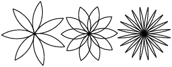
Figure 4.1: Flores tortuga.
Escribe un conjunto de funciones apropiadamente generales que puedan dibujar flores como en la Figura 4.1.
Solución: http://thinkpython.com/code/flower.py, también requiere http://thinkpython.com/code/polygon.py.
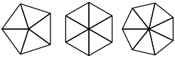
Figure 4.2: Pasteles tortuga.
Escribe un conjunto de funciones apropiadamente generales que puedan dibujar formas como en la Figura 4.2.
Solución: http://thinkpython.com/code/pie.py.
Las letras del alfabeto se pueden construir desde un número moderado de elementos básicos, como líneas verticales y horizontales y unas pocas curvas. Diseña un alfabeto que pueda dibujarse con un número mínimo de elementos básicos y luego escribe funciones que dibujen las letras.
Deberías escribir una función para cada letra, con nombres
dibujar_a, dibujar_b, etc., y poner tus funciones
en un archivo con nombre letras.py. Puedes descargar una
“máquina de escribir tortuga” desde http://thinkpython.com/code/typewriter.py
para ayudarte a probar tu código.
Puedes obtener una solución en http://thinkpython.com/code/letters.py; también requiere http://thinkpython.com/code/polygon.py.
Lee sobre espirales en http://en.wikipedia.org/wiki/Spiral; luego escribe un programa que dibuje una espiral arquimediana (o uno de los otros tipos). Solución: http://thinkpython.com/code/spiral.py.
Chapter 5 Condicionales y recursividad
El tema principal de este capítulo es la sentencia if, la cual ejecuta código diferente dependiendo del estado del programa. Pero primero quiero presentar dos operadores nuevos: división entera y módulo.
5.1 División entera y módulo
El operador división entera, //, divide
dos números y redondea a un entero hacia abajo. Por ejemplo, supongamos que la
duración de una película es 105 minutos. Quizás quieres saber
cuánto dura en horas. La división convencional
devuelve un número de coma flotante:
>>> minutos = 105
>>> minutos / 60
1.75
Sin embargo, normalmente no escribimos las horas con decimales. La división entera devuelve el número entero de horas, redondeando:
>>> minutos = 105
>>> horas = minutos // 60
>>> horas
1
Para obtener el resto, podrías restar una hora en minutos:
>>> resto = minutos - horas * 60
>>> resto
45
Una alternativa es usar el operador de módulo, %, que
divide dos números y devuelve el resto.
>>> resto = minutos % 60
>>> resto
45
El operador de módulo es más útil de lo que parece. Por ejemplo, puedes verificar si un número es divisible por otro: si x%y es cero, entonces x es divisible por y.
Además, puedes extraer el dígito de más a la derecha o más dígitos de un número. Por ejemplo, x%10 entrega el dígito de más a la derecha de x (en base 10). De manera similar, x%100 entrega los dos últimos dígitos.
Si estás usando Python 2, la división funciona diferente. El
operador división, /, realiza una división entera si ambos
operandos son enteros, y la división de coma flotante si cualquiera de
los dos operandos es un float.
5.2 Expresión booleana
Una expresión booleana es una expresión que es verdadera o falsa. Los siguientes ejemplos usan el operador ==, el cual compara dos operandos y produce True si son iguales y False si no lo son:
>>> 5 == 5
True
>>> 5 == 6
False
True y False son valores especiales que pertenecen al tipo bool; no son cadenas:
>>> type(True)
<class 'bool'>
>>> type(False)
<class 'bool'>
El operador == es uno de los operadores relacionales; los otros son:
x != y # x no es igual a y
x > y # x es mayor que y
x < y # x es menor que y
x >= y # x es mayor o igual que y
x <= y # x es menor o igual que y
Aunque estas operaciones probablemente sean comunes para ti, los símbolos de Python son diferentes a los símbolos matemáticos. Un error común es utilizar el signo igual simple (=) en lugar de un signo igual doble (==). Recuerda que = es un operador de asignación y == es un operador relacional. No hay tal cosa como =< o =>.
5.3 Operadores lógicos
Existen tres operadores lógicos: and, or y not. La semántica (significado) de estos operadores es similar a su significado en inglés. Por ejemplo, x > 0 and x < 10 es verdadera solo si x es mayor que 0 y menor que 10.
n%2 == 0 or n%3 == 0 es verdadera si cualquiera o ambas condiciones son verdaderas, es decir, si el número es divisible por 2 o 3.
Finalmente, el operador not niega una expresión booleana, así que not (x > y) es verdadera si x > y es falsa, es decir, si x es menor o igual que y.
Estrictamente hablando, los operandos de los operadores lógicos deberían ser expresiones booleanas, pero Python no es muy estricto. Cualquier número distinto de cero es interpretado como True:
>>> 42 and True
True
Esta flexibilidad puede ser útil, pero hay algunas sutilezas que podrían ser confusas. Quizás quieras evitar esto (a menos que sepas lo que estás haciendo).
5.4 Ejecución condicional
Para escribir programas útiles, casi siempre necesitamos la capacidad de verificar las condiciones y cambiar el comportamiento del programa según corresponda. Las sentencias condicionales nos dan esta capacidad. La forma más simple es la sentencia if:
if x > 0:
print('x es positivo')
La expresión booleana después de if se llama condición. Si es verdadera, se ejecutan las sentencias con sangría. Si no, no pasa nada.
Las sentencias if tienen la misma estructura que las definiciones de función: un encabezado seguido de un cuerpo con sangrías. Las sentencias como esta se llaman sentencias compuestas.
No hay límite en el número de sentencias que pueden aparecer en el cuerpo, pero tiene que haber al menos una. A veces, es útil tener un cuerpo sin sentencias (generalmente para reservar lugar a código que no has escrito todavía). En ese caso, puedes usar la sentencia pass, la cual no hace nada.
if x < 0:
pass # PENDIENTE: ¡falta manejar los valores negativos!
5.5 Ejecución alternativa
Una segunda forma de la sentencia if es la “ejecución alternativa”, en la cual hay dos posibilidades y la condición determina cuál se ejecuta. La sintaxis se ve así:
if x % 2 == 0:
print('x es par')
else:
print('x es impar')
Si el resto de dividir x por 2 es 0, entonces sabemos que x es par y el programa muestra un mensaje correspondiente. Si la condición es falsa, se ejecuta el segundo conjunto de sentencias. Dado que la condición debe ser verdadera o falsa, se ejecutará exactamente una de las alternativas. Las alternativas se llaman ramas, porque son ramas en el flujo de ejecución.
5.6 Condicionales encadenados
A veces hay más de dos posibilidades y necesitamos más de dos ramas. Una manera de expresar una computación como esa es un condicional encadenado:
if x < y:
print('x es menor que y')
elif x > y:
print('x es mayor que y')
else:
print('x e y son iguales')
elif es una abreviación de “else if”. De nuevo, se ejecutará exactamente una rama. No hay límite en el número de sentencias elif. Si hay una cláusula else, tiene que estar al final, pero no necesariamente tiene que haber una.
if opcion == 'a':
dibujar_a()
elif opcion == 'b':
dibujar_b()
elif opcion == 'c':
dibujar_c()
Cada condición es verificada en orden. Si la primera es falsa, se verifica la siguiente, y así sucesivamente. Si una de ellas es verdadera, se ejecuta la rama correspondiente y la sentencia termina. Incluso si más de una condición es verdadera, solo se ejecuta la primera rama verdadera.
5.7 Condicionales anidados
Un condicional puede también estar anidado dentro de otro. Podríamos haber escrito el ejemplo de la sección anterior de esta forma:
if x == y:
print('x e y son iguales')
else:
if x < y:
print('x es menor que y')
else:
print('x es mayor que y')
El condicional de más afuera contiene dos ramas. La primera rama contiene una sentencia simple. La segunda rama contiene otra sentencia if, la cual tiene dos ramas propias. Aquellas dos ramas son sentencias simples, aunque también podrían haber sido sentencias condicionales.
A pesar de que la sangría de las sentencias hacen evidente la estructura, los condicionales anidados se vuelven difíciles de leer rápidamente. Es una buena idea evitarlos cuando puedas.
Los operadores lógicos a menudo proporcionan una manera de simplificar las sentencias condicionales anidadas. Por ejemplo, podemos reescribir el siguiente código utilizando un único condicional:
if 0 < x:
if x < 10:
print('x es un número positivo de un dígito.')
La sentencia print solo se ejecuta si pasamos por los dos condicionales, así que podemos obtener el mismo efecto con el operador and:
if 0 < x and x < 10:
print('x es un número positivo de un dígito.')
Para este tipo de condición, Python proporciona una opción más concisa:
if 0 < x < 10:
print('x es un número positivo de un dígito.')
5.8 Recursividad
Es legal para una función llamar a otra función; es legal también para una función llamarse a sí misma. Puede que no sea obvia la razón por la cual eso es una buena idea, pero resulta ser una de las cosas más mágicas que puede hacer un programa. Por ejemplo, mira la siguiente función:
def cuenta_reg(n):
if n <= 0:
print('¡Despegue!')
else:
print(n)
cuenta_reg(n-1)
Si n es 0 o negativo, muestra la palabra, “¡Despegue!” De lo contrario, muestra a n y luego llama a la función con nombre cuenta_reg —a sí misma— pasando a n-1 como argumento.
¿Qué ocurre si llamamos a esta función así?
>>> cuenta_reg(3)
La ejecución de cuenta_reg comienza con n=3, y dado que n es mayor que 0, muestra el valor 3 y se llama a sí misma...
La ejecución de cuenta_reg comienza con n=2, y dado que n es mayor que 0, muestra el valor 2 y se llama a sí misma...La ejecución de cuenta_reg comienza con n=1, y dado que n es mayor que 0, muestra el valor 1 y se llama a sí misma...La ejecución de cuenta_reg comienza con n=0, y dado que n no es mayor que 0, muestra la palabra “¡Despegue!” y luego vuelve.La cuenta_reg que obtuvo n=1 vuelve.
La cuenta_reg que obtuvo n=2 vuelve.
La cuenta_reg que obtuvo n=3 vuelve.
Y luego estás de regreso en __main__. Por lo tanto, la
salida completa se ve así:
3 2 1 ¡Despegue!
Una función que se llama a sí misma es recursiva; el proceso de ejecutarla se llama recursividad.
Como ejemplo adicional, podemos escribir una función que imprima una cadena n veces.
def imprimir_n(s, n):
if n <= 0:
return
print(s)
imprimir_n(s, n-1)
Si n <= 0, la sentencia return hace que se salga de la función. El flujo de ejecución vuelve inmediatamente a la sentencia llamadora y las líneas restantes de la función no se ejecutan.
El resto de la función es similar a cuenta_reg: muestra a s y luego se llama a sí misma para mostrar a s otras n−1 veces. Entonces, el número de líneas de salida es 1 + (n - 1), lo cual suma n.
Para ejemplos simples como este, probablemente es más fácil utilizar un bucle for. Sin embargo, más adelante veremos ejemplos que son difíciles de escribir con un bucle for y fáciles de escribir con recursividad, así que es bueno comenzar pronto.
5.9 Diagramas de pila para funciones recursivas
En la Sección 3.9, utilizamos un diagrama de pila para representar el estado de un programa durante una llamada a función. El mismo tipo de diagrama puede ayudar a interpretar una función recursiva.
Cada vez que una función es llamada, Python crea un marco que contiene las variables locales y los parámetros de la función. Para una función recursiva, podría haber más de un marco en la pila al mismo tiempo.
La Figura 5.1 muestra un diagrama de pila para cuenta_reg llamada con n = 3.
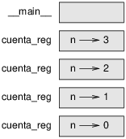
Figure 5.1: Diagrama de pila.
Como siempre, la parte de arriba de la pila es el marco para __main__.
Está vacío porque no creamos variables en
__main__ ni le pasamos argumentos.
Los cuatro marcos de cuenta_reg tienen valores diferentes para el parámetro n. La parte de abajo de la pila, donde n=0, se llama caso base. No hace una llamada recursiva, así que no hay más marcos.
Como ejercicio, dibuja un diagrama de pila para imprimir_n llamada con
s = 'Hola' y n=2.
Luego, escribe una función llamada hacer_n que tome un objeto de
función y un número, n, como argumentos, y que llame
a dicha función n veces.
5.10 Recursividad infinita
Si una recursividad nunca llega a un caso base, sigue haciendo llamadas recursivas por siempre y el programa nunca termina. Esto se conoce como recursividad infinita y en general no es una buena idea. Aquí hay un programa mínimo con una recursividad infinita:
def recursivo():
recursivo()
En la mayoría de los entornos de programación, un programa con recursividad infinita no se ejecuta realmente por siempre. Python entrega un mensaje de error cuando la recursividad alcanza la profundidad máxima:
File "<stdin>", line 2, in recursivo
File "<stdin>", line 2, in recursivo
File "<stdin>", line 2, in recursivo
.
.
.
File "<stdin>", line 2, in recursivo
RuntimeError: Maximum recursion depth exceeded
Este rastreo es un poco más grande del que vimos en el capítulo anterior. Cuando el error ocurre, ¡hay 1000 marcos de recursivo en la pila!
Si encuentras una recursividad infinita por accidente, revisa tu función para confirmar que hay un caso base que no hace una llamada recursiva. Y si hay un caso base, verifica si tienes garantizado alcanzarlo.
5.11 Entrada de teclado
Los programas que hemos escrito hasta ahora no admiten entradas del usuario. Simplemente hacen siempre lo mismo.
Python proporciona una función incorporada llamada input que
detiene el programa y
espera a que el usuario escriba algo. Cuando el usuario presiona
Return o Enter, el programa continúa e input
devuelve como cadena lo que escribió el usuario. En Python 2, la misma
función se llama raw_input.
>>> texto = input()
¿Qué estás esperando?
>>> texto
'¿Qué estás esperando?'
Antes de obtener la entrada del usuario, es una buena idea imprimir
un mensaje que le diga al usuario qué escribir. input puede tomar un
mensaje como argumento:
>>> nombre = input('¿Cuál...es tu nombre?\n')
¿Cuál...es tu nombre?
¡Arturo, Rey de los Britones!
>>> nombre
'¡Arturo, Rey de los Britones!'
La secuencia \n al final del mensaje representa una
nueva línea, la cual es un carácter especial que provoca un salto de línea.
Esa es la razón por la cual la entrada del usuario aparece debajo del mensaje.
Si esperas que el usuario escriba un entero, puedes intentar convertir el valor de retorno a int:
>>> mensaje = '¿Cuál...es la velocidad media de una golondrina sin carga?\n'
>>> velocidad = input(mensaje)
¿Cuál...es la velocidad media de una golondrina sin carga?
42
>>> int(velocidad)
42
Pero si el usuario escribe algo distinto a una cadena de dígitos, obtienes un error:
>>> velocidad = input(mensaje)
¿Cuál...es la velocidad media de una golondrina sin carga?
¿De qué especie, de la africana o de la europea?
>>> int(velocidad)
ValueError: invalid literal for int() with base 10
Más adelante veremos cómo tratar este tipo de error.
5.12 Depuración
Cuando ocurre un error de sintaxis o de tiempo de ejecución, el mensaje de error contiene mucha información, pero esto puede ser abrumador. Las partes más útiles suelen ser:
- Qué tipo de error fue y
- Dónde ocurrió.
Los errores de sintaxis son generalmente fáciles de encontrar, pero hay algunas trampas. Los errores de espacio en blanco pueden ser complicados porque los espacios y las sangrías son invisibles y estamos acostumbrados a ignorarlos.
>>> x = 5
>>> y = 6
File "<stdin>", line 1
y = 6
^
IndentationError: unexpected indent
En este ejemplo, el problema es que la segunda línea está desajustada por un espacio. Pero el mensaje de error señala a y, lo cual es engañoso. En general, los mensajes de error indican dónde fue descubierto el problema, pero el error real podría estar antes en el código, a veces en una línea anterior. Lo mismo ocurre con los errores de tiempo de ejecución.
Supongamos que estás intentando calcular una relación señal/ruido en decibeles. La fórmula es RSRdb = 10 log10 (Pseñal / Pruido). En Python, podrías escribir algo así:
import math potencia_senal = 9 potencia_ruido = 10 relacion = potencia_senal // potencia_ruido decibeles = 10 * math.log10(relacion) print(decibeles)
Cuando ejecutas este programa, obtienes una excepción:
Traceback (most recent call last):
File "snr.py", line 5, in ?
decibeles = 10 * math.log10(relacion)
ValueError: math domain error
El mensaje de error indica la línea 5, pero no hay nada malo con esa línea. Para encontrar el error real, podría ser útil imprimir el valor de relacion, que resulta ser 0. El problema está en la línea 4, que utiliza división entera en lugar de división de coma flotante.
Deberías tomarte el tiempo de leer cuidadosamente los mensajes de error, pero no supongas que todo lo que dice es correcto.
5.13 Glosario
- división entera:
- Un operador, denotado por //, que divide dos números y redondea a un entero hacia abajo (en sentido hacia el infinito negativo).
- operador de módulo:
- Un operador, denotado con un signo de porcentaje (%), que trabaja con enteros y devuelve el resto de dividir un número por otro.
- expresión booleana:
- Una expresión cuyo valor es True o False.
- operador relacional:
- Uno de los operadores que comprara sus operandos: ==, !=, >, <, >= y <=.
- operador lógico:
- Uno de los operadores que combina expresiones booleanas: and, or y not.
- sentencia condicional:
- Una sentencia que controla el flujo de ejecución dependiendo de una condición.
- condición:
- La expresión booleana en una sentencia condicional que determina cuál rama se ejecuta.
- sentencia compuesta:
- Una sentencia que consiste en un encabezado y un cuerpo. El encabezado termina con un signo de dos puntos (:). El cuerpo tiene sangrías relativas al encabezado.
- rama:
- Una de las secuencias de sentencias alternativas en una sentencia condicional.
- condicional encadenado:
- Una sentencia condicional con una serie de ramas alternativas.
- condicional anidado:
- Una sentencia condicional que aparece en una de las ramas de otra sentencia condicional.
- sentencia return:
- Una sentencia que provoca que una función termine inmediatamente y vuelva a la sentencia llamadora.
- recursividad:
- El proceso de llamar a la función que ya se está ejecutando.
- caso base:
- Una rama condicional de una función recursiva que no hace una llamada recursiva.
- recursividad infinita:
- Una recursividad que no tiene un caso base, o nunca lo alcanza. Eventualmente, una recursividad infinita provoca un error de tiempo de ejecución.
5.14 Ejercicios
El módulo time proporciona una función, con el mismo nombre time, que devuelve el tiempo transcurrido desde la Hora Media de Greenwich (GMT) en “la época” (epoch), que es un momento arbitrario usado como punto de referencia. En sistemas UNIX, la época es el 1 de enero de 1970.
>>> import time
>>> time.time()
1437746094.5735958
Escribe un script que lea el tiempo actual y lo convierta a una hora del día en horas, minutos y segundos, además del número de días desde la época.
El Último Teorema de Fermat dice que no hay enteros positivos a, b y c tales que
| an + bn = cn |
para cualquier valor de n mayor que 2.
- Escribe una función con nombre
comprobar_fermatque tome cuatro parámetros —a, b, c y n— y compruebe si se cumple el teorema de Fermat. Si n es mayor que 2 y
el programa debería imprimir “¡Oh, no, Fermat se equivocó!”. De lo contrario, el programa debería imprimir “No, eso no funciona.”an + bn = cn - Escribe una función que permita al usuario ingresar valores
para a, b, c y n, los convierta a
enteros y utilice la función
comprobar_fermatpara comprobar si violan el teorema de Fermat.
Si te dan tres palos, podrías ser capaz o no de formar un triángulo. Por ejemplo, si uno de los palos mide 12 pulgadas y los otros dos miden una pulgada, no serás capaz de hacer que los palos cortos se encuentren en el medio. Para tres longitudes cualesquiera, hay una prueba simple para ver si es posible formar un triángulo:
Si cualquiera de las tres longitudes es mayor que la suma de las otras dos, entonces no puedes formar un triángulo. De lo contrario, sí puedes. (Si la suma de dos longitudes es igual a la tercera, forman lo que llaman un triángulo “degenerado”.)
- Escribe una función con nombre
es_trianguloque tome tres enteros como argumentos e imprima “Sí” o “No”, dependiendo de si puedes o no formar un triángulo con palos cuyas longitudes sean los enteros dados. - Escribe una función que permita al usuario ingresar tres longitudes de
palos, los convierta a enteros y utilice la función
es_triangulopara comprobar si los palos con las longitudes dadas pueden formar un triángulo.
def recursivo(n, s):
if n == 0:
print(s)
else:
recursivo(n-1, n+s)
recursivo(3, 0)
- ¿Qué ocurriría si llamas a esta función así: recursivo(-1, 0)?
- Escribe un docstring que explique todo lo que alguien necesitaría saber para utilizar esta función (y nada más).
Los siguientes ejercicios utilizan el módulo turtle, descrito en el Capítulo 4:
Lee la siguiente función y mira si puedes averiguar lo que hace (mira los ejemplos en el Capítulo 4). Luego ejecútala y mira si la entendiste bien.
def dibujar(t, longitud, n):
if n == 0:
return
angulo = 50
t.fd(longitud*n)
t.lt(angulo)
dibujar(t, longitud, n-1)
t.rt(2*angulo)
dibujar(t, longitud, n-1)
t.lt(angulo)
t.bk(longitud*n)
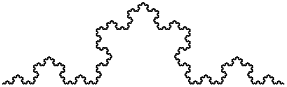
Figure 5.2: Una curva de Koch.
La curva de Koch es un fractal que se ve más o menos como en la Figura 5.2. Para dibujar una curva de Koch con longitud x, todo lo que tienes que hacer es
- Dibujar una curva de Koch con longitud x/3.
- Girar 60 grados a la izquierda.
- Dibujar una curva de Koch con longitud x/3.
- Girar 120 grados a la derecha.
- Dibujar una curva de Koch con longitud x/3.
- Girar 60 grados a la izquierda.
- Dibujar una curva de Koch con longitud x/3.
La excepción es si x es menor que 3: en ese caso, puedes simplemente dibujar una línea recta con longitud x.
- Escribe una función llamada koch que tome una tortuga y una longitud como parámetros y que use a la tortuga para dibujar una curva de Koch con la longitud dada.
- Escribe una función llamada copo_de_nieve que dibuje tres
curvas de Koch que hagan el contorno de un copo de nieve.
Solución: http://thinkpython.com/code/koch.py.
- La curva de Koch se puede generalizar en muchas formas. Mira http://en.wikipedia.org/wiki/Koch_snowflake para ejemplos e implementa tu favorito.
Chapter 6 Funciones productivas
Muchas de las funciones de Python que hemos utilizado, tales como las funciones matemáticas, producen valores de retorno. Sin embargo, las funciones que hemos escrito son todas nulas: tienen un efecto, como imprimir un valor o mover una tortuga, pero no tienen un valor de retorno. En este capítulo aprenderás a escribir funciones productivas.
6.1 Valores de retorno
Al llamar a una función se genera un valor de retorno, que usualmente asignamos a una variable o utilizamos como parte de una expresión.
e = math.exp(1.0) altura = radio * math.sin(radianes)
Las funciones que hemos escrito hasta ahora son todas nulas. Dicho en términos vagos, no tienen valor de retorno; de manera más precisa, su valor de retorno es None.
En este capítulo, vamos a escribir (finalmente) funciones productivas. El primer ejemplo es area, que devuelve el área de un círculo con un radio dado:
def area(radio):
a = math.pi * radio**2
return a
Hemos visto la sentencia return antes, pero en una función productiva la sentencia return incluye una expresión. Esta sentencia significa: “Sal inmediatamente de esta función y utiliza la siguiente expresión como valor de retorno.” La expresión puede ser arbitrariamente complicada, por lo que podríamos haber escrito esta función de manera más concisa:
def area(radio):
return math.pi * radio**2
Por otra parte, las variables temporales como a pueden hacer más fácil la depuración.
A veces es útil tener múltiples sentencias return, una en cada rama de un condicional:
def valor_absoluto(x):
if x < 0:
return -x
else:
return x
Dado que estas sentencias return están en un condicional alternativo, solo se ejecuta una.
Tan pronto como se ejecute una sentencia return, la función termina sin ejecutar ninguna de las sentencias posteriores. El código que aparece después de una sentencia return, o cualquier otro lugar que el flujo de ejecución nunca puede alcanzar, se llama código muerto.
En una función productiva, es una buena idea asegurarse de que cada camino posible a través del programa llegue a una sentencia return. Por ejemplo:
def valor_absoluto(x):
if x < 0:
return -x
if x > 0:
return x
Esta función es incorrecta porque si x es 0, ninguna condición es verdadera, y la función termina sin llegar a una sentencia return. Si el flujo de ejecución llega al final de una función, el valor de retorno es None, lo cual no es el valor absoluto de 0.
>>> print(valor_absoluto(0))
None
Por cierto, Python proporciona una función incorporada llamada abs que calcula valores absolutos.
Como ejercicio, escribe una función comparar que tome dos valores, x e y, y devuelva 1 si x > y, devuelva 0 si x == y o devuelva -1 si x < y.
6.2 Desarrollo incremental
A medida que vayas escribiendo funciones más grandes, podrías encontrarte pasando más tiempo depurando.
Para lidiar con programas cada vez más complejos, tal vez quieras intentar un proceso llamado desarrollo incremental. El objetivo del desarrollo incremental es evitar largas sesiones de depuración agregando y probando solo un pedazo de código a la vez.
Como ejemplo, supongamos que quieres encontrar la distancia entre dos puntos, dados por las coordenadas (x1, y1) y (x2, y2). Por el teorema de Pitágoras, la distancia es:
| distancia = | √ |
|
El primer paso es considerar cómo debería ser una función de distancia en Python. En otras palabras, ¿cuáles son las entradas (parámetros) y cuál es la salida (valor de retorno)?
En este caso, las entradas son dos puntos, que puedes representar utilizando cuatro números. El valor de retorno es la distancia representada por un valor de coma flotante.
Inmediatamente puedes escribir un esbozo de la función:
def distancia(x1, y1, x2, y2):
return 0.0
Obviamente, esta versión no calcula distancias: siempre devuelve cero. Pero es sintácticamente correcta, y funciona, lo cual significa que puedes probarla antes de que la hagas más complicada.
Para probar la nueva función, llámala con argumentos de prueba:
>>> distancia(1, 2, 4, 6)
0.0
Escojo estos valores para que la distancia horizontal sea 3 y la distancia vertical sea 4; de esa forma, el resultado es 5, la hipotenusa de un triángulo rectángulo 3-4-5. Al probar una función, es útil saber la respuesta correcta.
En este punto hemos confirmado que la función es sintácticamente correcta y podemos comenzar agregando código al cuerpo. Un siguiente paso razonable es encontrar las diferencias x2 − x1 e y2 − y1. La siguiente versión almacena esos valores en variables temporales y las imprime.
def distancia(x1, y1, x2, y2):
dx = x2 - x1
dy = y2 - y1
print('dx es', dx)
print('dy es', dy)
return 0.0
Si la función está bien, debería mostrar dx es 3 y
dy es 4. Si es así, sabemos que la función obtiene los argumentos
correctos y realiza el primer cálculo de manera correcta. Si no,
solo hay que revisar unas pocas líneas.
Luego calculamos la suma de los cuadrados de dx y dy:
def distance(x1, y1, x2, y2):
dx = x2 - x1
dy = y2 - y1
dcuadrado = dx**2 + dy**2
print('dcuadrado es: ', dcuadrado)
return 0.0
De nuevo, tendrías que ejecutar el programa en este punto y verificar la salida (que debería ser 25). Finalmente, puedes usar math.sqrt para calcular y devolver el resultado:
def distancia(x1, y1, x2, y2):
dx = x2 - x1
dy = y2 - y1
dcuadrado = dx**2 + dy**2
resultado = math.sqrt(dcuadrado)
return resultado
Si eso funciona de manera correcta, estás listo. De lo contrario, tal vez quieras imprimir el valor de resultado antes de la sentencia return.
La versión final de la función no muestra nada cuando se ejecuta: solo devuelve un valor. Las sentencias print que escribimos son útiles para depurar, pero una vez que la función esté bien, deberías borrarlas. Un código como ese se llama andamiaje (en inglés, scaffolding) porque es útil para construir el programa pero no es parte del producto final.
Cuando empieces, deberías agregar solo una o dos líneas de código a la vez. A medida que ganes experiencia, podrías encontrarte escribiendo y depurando partes más grandes. De cualquier manera, el desarrollo incremental puede ahorrarte mucho tiempo de depuración.
Los aspectos clave del proceso son:
- Comienza con un programa que funcione y haz pequeños cambios incrementales. En cualquier punto, si hay un error, deberías tener una buena idea de dónde está.
- Utiliza variables que guarden valores intermedios de tal manera que puedas mostrarlos y verificarlos.
- Una vez que el programa funciona, tal vez quieras borrar algo del andamiaje o consolidar varias sentencias en una expresión compuesta, pero solo si no hace al programa difícil de leer.
Como ejercicio, utiliza desarrollo incremental para escribir una función llamada hipotenusa que devuelva el largo de la hipotenusa de un triángulo rectánculo, dadas las longitudes de los otros dos lados como argumentos. Guarda cada etapa del proceso de desarrollo a medida que avances.
6.3 Composición
Como ya deberías esperar, puedes llamar a una función desde dentro de otra. Como ejemplo, escribiremos una función que tome dos puntos, el centro de un círculo y un punto de su perímetro, y calcule el área del círculo.
Supongamos que el punto central se almacena en las variables xc e yc, y el punto del perímetro está en xp e yp. El primer paso es encontrar el radio del círculo, que es la distiancia entre los dos puntos. Acabamos de escribir una función, distancia, que hace eso:
radio = distancia(xc, yc, xp, yp)
El siguiente paso es encontrar el área de un círculo con ese radio; también escribimos eso:
resultado = area(radio)
Encapsulando estos pasos en una función, obtenemos:
def area_circulo(xc, yc, xp, yp):
radio = distancia(xc, yc, xp, yp)
resultado = area(radio)
return resultado
Las variables temporales radio y resultado son útiles para el desarrollo y la depuración, pero una vez que el programa funciona, podemos hacerlo más conciso componiendo las llamadas a funciones:
def area_circulo(xc, yc, xp, yp):
return area(distancia(xc, yc, xp, yp))
6.4 Funciones booleanas
Las funciones pueden devolver booleanos, lo cual es a menudo conveniente para ocultar pruebas complicadas dentro de las funciones. Por ejemplo:
def es_divisible(x, y):
if x % y == 0:
return True
else:
return False
Es común darle a las funciones booleanas nombres que suenen como preguntas
sí/no; es_divisible devuelve True o False
para indicar si x es divisible por y.
Aquí hay un ejemplo:
>>> es_divisible(6, 4)
False
>>> es_divisible(6, 3)
True
El resultado del operador == es un booleano, así que podemos escribir la función de manera más concisa devolviéndolo directamente:
def es_divisible(x, y):
return x % y == 0
Las funciones booleanas se utilizan a menudo en las sentencias condicionales:
if es_divisible(x, y):
print('x es divisible por y')
Puede ser tentador escribir algo como:
if es_divisible(x, y) == True:
print('x es divisible por y')
Pero la comparación extra es innecesaria.
Como ejercicio, escribe una función esta_entre(x, y, z) que
devuelva True si x ≤ y ≤ z o False si no.
6.5 Más recursividad
Hemos cubierto solo un pequeño subconjunto de Python, pero tal vez te interese saber que este subconjunto es un lenguaje de programación completo, lo cual significa que cualquier cosa que pueda ser calculada se puede expresar en este lenguaje. Cualquier programa alguna vez escrito puede ser reescrito utilizando solo las características del lenguaje que has aprendido hasta ahora (en realidad, necesitarías unos pocos comandos para controlar dispositivos como el mouse, discos, etc., pero eso es todo).
Probar ese aserto es un ejercicio no trivial realizado por primera vez por Alan Turing, uno de los primeros informáticos (algunos discuten que fue un matemático, pero muchos de los primeros informáticos comenzaron como matemáticos). En consecuencia, se conoce como Tesis de Turing. Para un tratamiento más completo (y preciso) de la Tesis de Turing, recomiendo el libro de Michael Sipser Introduction to the Theory of Computation.
Para darte una idea de lo que puedes hacer con las herramientas que has aprendido hasta ahora, evaluaremos algunas funciones matemáticas definidas de manera recursiva. Una definición recursiva es similar a una definición circular, en el sentido de que la definición contiene una referencia a lo que se está definiendo. Una definición verdaderamente circular no es muy útil:
Si vieras esa definición en el diccionario, quizás te moleste. Por otra parte, si buscaras la definición de la función factorial, denotada con el símbolo !, podrías obtener algo así:
|
Esta definición dice que el factorial de 0 es 1 y el factorial de cualquier otro valor, n, es n multiplicado por el factorial de n−1.
Así que 3! es 3 por 2!, lo cual es 2 por 1!, lo cual es 1 por 0!. Poniéndolo todo junto, 3! es igual a 3 por 2 por 1 por 1, lo cual es 6.
Si puedes escribir una definición recursiva de algo, puedes escribir un programa en Python para evaluarla. El primer paso es decidir cuáles deberían ser los parámetros. En este caso, debería estar claro que factorial toma un entero:
def factorial(n):
Si el argumento es 0, todo lo que tenemos que hacer es devolver 1:
def factorial(n):
if n == 0:
return 1
De lo contrario, y esta es la parte interesante, tenemos que hacer una llamada recursiva para encontrar el factorial de n−1 y luego multiplicarlo por n:
def factorial(n):
if n == 0:
return 1
else:
recur = factorial(n-1)
resultado = n * recur
return resultado
El flujo de ejecución para este programa es similar al flujo de cuenta_reg de la Sección 5.8. Si llamamos a factorial con el valor 3:
Dado que 3 no es 0, tomamos la segunda rama y calculamos el factorial de n-1...
Dado que 2 no es 0, tomamos la segunda rama y calculamos el factorial de n-1...Dado que 1 no es 0, tomamos la segunda rama y calculamos el factorial de n-1...Dado que 0 es igual a 0, tomamos la primera rama y devolvemos 1 sin hacer más llamadas recursivas.El valor de retorno, 1, se multiplica por n, que es 1, y se devuelve el resultado.
El valor de retorno, 1, se multiplica por n, que es 2, y se devuelve el resultado.
El valor de retorno (2) se multiplica por n, que es 3, y el resultado, 6, se convierte en el valor de retorno de la llamada a función que comenzó todo el proceso.
La Figura 6.1 muestra cómo se ve el diagrama de pila para esta sucesión de llamadas a función.
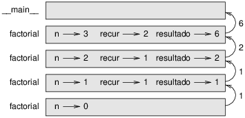
Figure 6.1: Diagrama de pila.
Los valores de retorno se muestran volviendo hacia arriba en la pila. En cada marco, el valor de retorno es el valor de resultado, que es el producto de n y recur.
En el último marco, las variables locales recur y resultado no existen, porque la rama que las crea no se ejecuta.
6.6 Salto de fe
Seguir el flujo de ejecución es una manera de leer programas, pero puede volverse abrumador rápidamente. Una alternativa es lo que yo llamo “salto de fe”. Cuando llegas a una llamada a función, en lugar de seguir el flujo de ejecución, supones que la función es correcta y que devuelve el resultado correcto.
De hecho, ya estás practicando este salto de fe cuando utilizas funciones incorporadas. Cuando llamas a math.cos o math.exp, no examinas los cuerpos de esas funciones. Sólo supones que funcionan porque las personas que escribieron las funciones incorporadas eran buenos programadores.
Lo mismo es verdad cuando llamas a una de tus propias funciones. Por
ejemplo, en la Sección 6.4, escribimos una función llamada
es_divisible que determina si un número es divisible por
otro. Una vez que nos hemos convencido de que esta función es
correcta —examinando el código y probándolo— podemos utilizar la función
sin mirar el cuerpo otra vez.
Lo mismo es verdad para las funciones recursivas. Cuando llegues a la llamada recursiva, en lugar de seguir el flujo de ejecución, deberías suponer que la llamada recursiva funciona (devuelve el resultado correcto) y luego preguntarte: “suponiendo que puedo encontrar el factorial de n−1, ¿puedo calcular el factorial de n?” Está claro que puedes, multiplicando por n.
Desde luego, es un poco extraño suponer que la función hace lo correcto cuando no has terminado de escribirla, ¡pero es por eso que se llama salto de fe!
6.7 Un ejemplo más
Después de factorial, el ejemplo más común de una función matemática definida de manera recursiva es fibonacci, que tiene la siguiente definición (ver http://en.wikipedia.org/wiki/Fibonacci_number):
|
Traducido a Python, se ve así:
def fibonacci(n):
if n == 0:
return 0
elif n == 1:
return 1
else:
return fibonacci(n-1) + fibonacci(n-2)
Si intentas seguir el flujo de ejecución aquí, incluso para valores de n bastante pequeños, tu cabeza estalla. Sin embargo, de acuerdo al salto de fe, si supones que las dos llamadas recursivas funcionan correctamente, entonces está claro que obtienes el resultado correcto al sumarlas.
6.8 Verificar tipos
¿Qué ocurre si llamamos a factorial y le entregamos 1.5 como argumento?
>>> factorial(1.5)
RuntimeError: Maximum recursion depth exceeded
Se ve como una recursividad infinita. ¿Cómo puede ser? La función tiene un caso base: cuando n == 0. Pero si n no es un entero, podemos perder el caso base y seguir con la recursividad sin parar.
En la primera llamada recursiva, el valor de n es 0.5. En la siguiente, es -0.5. Desde allí, se hace menor (más negativo), pero nunca será 0.
Tenemos dos opciones. Podemos intentar generalizar la función factorial para que funcione con números de coma flotante o podemos hacer que factorial verifique el tipo de sus argumentos. La primera opción se llama la función gamma y está un poco más allá del alcance de este libro. Entonces iremos por la segunda.
Podemos utilizar la función incorporada isinstance para verificar el tipo del argumento. Mientras estemos en ello, podemos también asegurarnos de que el argumento sea positivo:
def factorial(n):
if not isinstance(n, int):
print('El factorial solo está definido para enteros.')
return None
elif n < 0:
print('El factorial no está definido para enteros negativos.')
return None
elif n == 0:
return 1
else:
return n * factorial(n-1)
El primer caso base se encarga de los no enteros; el segundo se encarga de los enteros negativos. En ambos casos, el programa imprime un mensaje de error y devuelve None para indicar que algo anduvo mal:
>>> print(factorial('fred'))
El factorial solo está definido para enteros.
None
>>> print(factorial(-2))
El factorial no está definido para enteros negativos.
None
Si pasamos ambas verificaciones, sabemos que n es un entero no negativo, por lo que podemos probar que la recursividad termina.
Este programa demuestra un patrón a veces llamado guardián. Los primeros dos condicionales actúan como guardianes, protegiendo el código que sigue de valores que podrían provocar un error. Los guardianes hacen posible probar la exactitud del código.
En la Sección 11.4 veremos una alternativa más flexible que imprime un mensaje de error: plantear una excepción.
6.9 Depuración
Separar un programa grande en funciones pequeñas crea puntos de control naturales para la depuración. Si una función no está funcionando, hay tres posibilidades a considerar:
- Hay algo mal en los argumentos que obtiene la función: se viola una precondición.
- Hay algo mal en la función: se viola una postcondición.
- Hay algo mal en el valor de retorno o la manera en que se utiliza.
Para descartar la primera posibilidad, puedes agregar una sentencia print al comienzo de la función y mostrar los valores de los parámetros (y quizás sus tipos). O bien puedes escribir código que verifique las precondiciones de manera explícita.
Si los parámetros se ven bien, agrega una sentencia print antes de cada sentencia return y muestra el valor de retorno. Si es posible, verifica el resultado a mano. Considera llamar a la función con valores que faciliten la verificación del resultado (como en la Sección 6.2).
Si la función parece funcionar, mira la llamada a función para asegurarte de que el valor de retorno se esté utilizando correctamente (¡o si al menos se está utilizando!).
Agregar sentencias print al comienzo y al final de una función puede ayudar a hacer más visible el flujo de ejecución. Por ejemplo, aquí hay una versión de factorial con sentencias print:
def factorial(n):
espacio = ' ' * (4 * n)
print(espacio, 'factorial', n)
if n == 0:
print(espacio, 'devolviendo 1')
return 1
else:
recursivo = factorial(n-1)
resultado = n * recursivo
print(espacio, 'devolviendo', resultado)
return resultado
espacio es una cadena de caracteres de espacio que controla la sangría de la salida. Este es el resultado de factorial(4) :
factorial 4
factorial 3
factorial 2
factorial 1
factorial 0
devolviendo 1
devolviendo 1
devolviendo 2
devolviendo 6
devolviendo 24
Si estás confundido acerca del flujo de ejecución, este tipo de salidas puede ser útil. Desarrollar andamiaje eficaz toma algo de tiempo, pero un poco de andamiaje puede ahorrar mucha depuración.
6.10 Glosario
- variable temporal:
- Una variable utilizada para almacenar un valor intermedio en una computación compleja.
- código muerto:
- Parte de un programa que nunca se ejecuta, a menudo debido a que aparece después de una sentencia return.
- desarrollo incremental:
- Un plan de desarrollo de programa destinado a evitar la depuración agregando y probando solo un pedazo de código a la vez.
- andamiaje:
- Código que se utiliza durante el desarrollo de un programa pero no es parte de la versión final.
- guardián:
- Un patrón de programación que utiliza una sentencia condicional para verificar y encargarse de circunstancias que podrían provocar un error.
6.11 Ejercicios
Dibuja un diagrama de pila para el siguiente programa. ¿Qué imprime el programa?
def b(z):
prod = a(z, z)
print(z, prod)
return prod
def a(x, y):
x = x + 1
return x * y
def c(x, y, z):
total = x + y + z
cuadrado = b(total)**2
return cuadrado
x = 1
y = x + 1
print(c(x, y+3, x+y))
La función de Ackermann, A(m, n), se define:
|
Ver http://en.wikipedia.org/wiki/Ackermann_function. Escribe una función con nombre ack que evalúe la función de Ackermann. Utiliza tu función para evaluar ack(3, 4), que debería ser 125. ¿Qué ocurre para valores más grandes de m y n? Solución: http://thinkpython.com/code/ackermann.py.
Un palíndromo es una palabra que se deletrea igual hacia atrás y hacia adelante, como “noon” y “redivider”. De manera recursiva, una palabra es un palíndromo si la primera y la última letra son la misma y el medio es un palíndromo.
Las siguientes son funciones que toman una cadena como argumento y devuelven las letras primera, última y del medio:
def primera(palabra):
return palabra[0]
def ultima(palabra):
return palabra[-1]
def medio(palabra):
return palabra[1:-1]
Veremos cómo funcionan en el Capítulo 8.
- Escribe estas funciones en un archivo con nombre palindromo.py
y pruébalas. ¿Qué ocurre si llamas a medio con
una cadena de dos letras? ¿De una letra? ¿Qué pasa con la cadena
vacía, la cual se escribe
''y no contiene letras? - Escribe una función llamada
es_palindromoque tome una cadena como argumento y devuelva True si es un palíndromo y False si no. Recuerda que puedes utilizar la función incorporada len para verificar la longitud de una cadena.
Un número, a, es potencia de b si es divisible por b
y además a/b es potencia de b. Escribe una función llamada
es_potencia que tome parámetros a y b
y devuelva True si a es potencia de b.
Nota: tendrás que pensar en el caso base.
El máximo común divisor (MCD) de a y b es el número más grande que divide a ambos sin obtener resto.
Una manera de encontrar el MCD de dos números está basada en la observación de que si r es el resto de dividir a por b, entonces mcd(a, b) = mcd(b, r). Como caso base, podemos utilizar mcd(a, 0) = a.
Escribe una función llamada
mcd que tome parámetros a y b
y devuelva su máximo común divisor.
Crédito: Este ejercicio está basado en un ejemplo de Structure and Interpretation of Computer Programs de Abelson y Sussman.
Chapter 7 Iteración
Este capítulo trata sobre la iteración, que es la capacidad de ejecutar un bloque de sentencias de forma repetida. Vimos un tipo de iteración, utilizando recursividad, en la Sección 5.8. Vimos otro tipo, utilizando un bucle for, en la Sección 4.2. Es este capítulo veremos otro tipo, utilizando una sentencia while. Pero primero quiero contar un poco más sobre la asignación de variables.
7.1 Reasignación
Como habrás descubierto, es legal hacer más de una asignación a la misma variable. Una nueva asignación hace que una variable existente se refiera a un nuevo valor (y deje de referirse al valor antiguo).
>>> x = 5
>>> x
5
>>> x = 7
>>> x
7
La primera vez que mostramos x, su valor es 5; la segunda vez, su valor es 7.
La Figura 7.1 muestra cómo se ve una reasignación en un diagrama de estado.
En este punto quiero abordar un origen común de confusión. Debido a que Python utiliza el signo igual (=) para la asignación, es tentador interpretar una sentencia del tipo a = b como una proposición matemática de igualdad, es decir, la afirmación de que a y b son iguales. Sin embargo, esta interpretación es incorrecta.
Primero, la igualdad es una relación simétrica y la asignación no lo es. Por ejemplo, en matemáticas, si a=7 entonces 7=a. Pero en Python, la sentencia a = 7 es legal y 7 = a no lo es.
Además, en matemáticas, una proposición de igualdad es verdadera o falsa todo el tiempo. Si a=b ahora, entonces a siempre será igual a b. En Python, una sentencia de asignación puede igualar dos variables, pero no tienen que permanecer iguales:
>>> a = 5
>>> b = a # a y b son iguales ahora
>>> a = 3 # a y b ya no son iguales
>>> b
5
La tercera línea cambia el valor de a pero no cambia el valor de b, por lo que ya no son iguales.
La reasignación de variables es a menudo útil, pero deberías utilizarla con precaución. Si los valores de las variables cambian frecuentemente, puede hacer que el código sea difícil de leer y depurar.
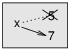
Figure 7.1: Diagrama de estado.
7.2 Actualizar variables
Un tipo común de reasignación es la actualización, donde el nuevo valor de la variable depende del antiguo.
>>> x = x + 1
Esto significa “obten el valor actual de x, suma uno, y luego actualiza a x con el nuevo valor.”
Si intentas actualizar una variable que no existe, obtienes un error, debido a que Python evalúa el lado derecho antes de asignar un valor a x:
>>> x = x + 1
NameError: name 'x' is not defined
Antes de que puedas actualizar una variable, la tienes que inicializar, generalmente con una asignación simple:
>>> x = 0 >>> x = x + 1
Actualizar una variable sumando 1 se llama incremento; restar 1 se llama decremento.
7.3 La sentencia while
Los computadores a menudo se utilizan para automatizar tareas repetitivas. Repetir tareas idénticas o similares sin cometer errores es algo que los computadores hacen bien y las personas hacen mal. En un programa de computador, la repetición también se llama iteración.
Ya hemos visto dos funciones, cuenta_reg e
imprimir_n, que iteran utilizando recursividad. Debido a que la iteración es tan
común, Python proporciona características del lenguaje que la hacen más fácil.
Una es la sentencia for que vimos en la Sección 4.2.
Volveremos a eso más adelante.
Otra es la sentencia while. Aquí hay una versión de cuenta_reg que utiliza una sentencia while:
def cuenta_reg(n):
while n > 0:
print(n)
n = n - 1
print('¡Despegue!')
Casi puedes leer la sentencia while como si fuera inglés. Significa, “Mientras n sea mayor que 0, muestra el valor de n y luego decrementa n. Cuando llegues a 0, muestra la palabra ¡Despegue!”
De manera más formal, aquí está el flujo de ejecución para una sentencia while:
- Determinar si la condición es verdadera o falsa.
- Si es falsa, salir de la sentencia while y continuar con la ejecución de la siguiente sentencia.
- Si la condición es verdadera, ejecutar el cuerpo y luego volver al paso 1.
Este tipo de flujo se llama bucle porque el tercer paso hace que vuelva hacia arriba.
El cuerpo del bucle debería cambiar el valor de una o más variables de modo que la condición se vuelva falsa eventualmente y el bucle termine. De lo contrario, el bucle se repetirá por siempre, lo cual se llama bucle infinito. Una fuente interminable de diversión para informáticos es la observación de que las instrucciones en un champú, “Enjabonar, enjuagar, repetir”, son un bucle infinito.
En el caso de cuenta_reg, podemos probar que el bucle termina: si n es cero o negativo, el bucle nunca se ejecuta. De lo contrario, n se hace más pequeño cada vez que se pasa por el bucle, por lo que eventualmente tenemos que llegar a 0.
Para otros bucles, no es tan fácil decirlo. Por ejemplo:
def sucesion(n):
while n != 1:
print(n)
if n % 2 == 0: # n es par
n = n / 2
else: # n es impar
n = n*3 + 1
La condición para este bucle es n != 1, así que el bucle continuará hasta que n sea 1, lo cual hace que la condición sea falsa.
En cada paso por el bucle, el programa muestra el valor de n y luego verifica si es par o impar. Si es par, n se divide por 2. Si es impar, el valor de n se reemplaza por n*3 + 1. Por ejemplo, si el argumento pasado a sucesion es 3, los valores resultantes de n son 3, 10, 5, 16, 8, 4, 2, 1.
Dado que n a veces aumenta y a veces disminuye, no hay demostración obvia de que n alcanzará el 1 alguna vez, o de que el programa termina. Para algunos valores particulares de n, podemos probar que termina. Por ejemplo, si el valor inicial es una potencia de dos, n será par cada vez que se pase por el bucle hasta que alcance el 1. El ejemplo anterior termina con tal sucesión, comenzando con 16.
La pregunta difícil es si podemos probar que este programa termina para todos los valores positivos de n. Hasta ahora, ¡nadie ha sido capaz de probarlo o refutarlo! (Ver http://en.wikipedia.org/wiki/Collatz_conjecture.)
Como ejercicio, reescribe la función print_n de la
Sección 5.8 utilizando iteración en lugar de recursividad.
7.4 break
A veces no sabes que es momento de terminar un bucle hasta que llegas a la mitad del cuerpo. En ese caso puedes utilizar la sentencia break para saltar hacia afuera del bucle.
Por ejemplo, supongamos que quieres tomar la entrada del usuario hasta que se escriba listo. Podrías escribir:
while True:
linea = input('> ')
if linea == 'listo':
break
print(linea)
print('¡Listo!')
La condición del bucle es True, lo cual siempre es verdadero, así que el bucle se ejecuta hasta que llega a la sentencia break.
En cada paso, solicita la entrada del usuario con un paréntesis angular. Si el usuario escribe listo, la sentencia break hace que se salga del bucle. De lo contrario, el programa repite lo que escriba el usuario y regresa a la parte superior del bucle. Aquí hay una ejecución de muestra:
> no listo no listo > listo ¡Listo!
Esta forma de escribir bucles while es común porque puedes verificar la condición en cualquier lugar del bucle (no solo en la parte superior) y puedes expresar la condición de detención de manera afirmativa (“detente cuando esto ocurra”) en lugar de negativa (“continúa hasta que eso no ocurra”).
7.5 Raíces cuadradas
Los bucles se utilizan a menudo en programas que calculan resultados numéricos iniciando con una respuesta aproximada y mejorándola iterativamente.
Por ejemplo, una manera de calcular raíces cuadradas es el método de Newton. Supongamos que quieres saber la raíz cuadrada de a. Si comienzas con casi cualquier estimación, x, puedes calcular una mejor estimación con la siguiente fórmula:
| y = |
|
Por ejemplo, si a es 4 y x es 3:
>>> a = 4
>>> x = 3
>>> y = (x + a/x) / 2
>>> y
2.16666666667
El resultado está más cerca de la respuesta correcta (√4 = 2). Si repetimos el proceso con una nueva estimación, se acerca aún más:
>>> x = y
>>> y = (x + a/x) / 2
>>> y
2.00641025641
Después de algunas actualizaciones más, la estimación es casi exacta:
>>> x = y
>>> y = (x + a/x) / 2
>>> y
2.00001024003
>>> x = y
>>> y = (x + a/x) / 2
>>> y
2.00000000003
En general, no sabemos de antemano cuántos pasos toma llegar a la respuesta correcta, pero sabemos cuándo la obtenemos porque la estimación deja de cambiar:
>>> x = y
>>> y = (x + a/x) / 2
>>> y
2.0
>>> x = y
>>> y = (x + a/x) / 2
>>> y
2.0
Cuando y == x, podemos parar. Aquí hay un bucle que comienza con una estimación inicial, x, y la mejora hasta que deja de cambiar:
while True:
print(x)
y = (x + a/x) / 2
if y == x:
break
x = y
Para la mayoría de los valores de a esto funciona bien, pero en general es peligroso probar la igualdad de números float. Los valores de coma flotante son solo aproximadamente correctos: la mayoría de los números racionales, como 1/3, y los números irracionales, como √2, no se pueden representar de manera exacta con un float.
En lugar de verificar si x e y son exactamente iguales, es más seguro utilizar la función abs para calcular el valor absoluto, o magnitud, de la diferencia entre estos:
if abs(y-x) < epsilon:
break
donde epsilon tiene un valor como 0.0000001 que
determina qué tan cerca es lo suficientemente cerca.
7.6 Algoritmos
El método de Newton es un ejemplo de algoritmo: es un proceso mecánico para resolver una categoría de problemas (en este caso, calcular raíces cuadradas).
Para entender qué es un algoritmo, quizás ayude comenzar con algo que no es un algoritmo. Cuando aprendiste a multiplicar números de un solo dígito, probablemente memorizaste la tabla de multiplicar. En realidad, memorizaste 100 soluciones específicas. Esa clase de conocimiento no es algorítmica.
Pero si eras “perezoso”, podrías haber aprendido algunos trucos. Por ejemplo, para encontrar el producto de n y 9, puedes escribir n−1 como el primer dígito y 10−n como el segundo dígito. Este truco es una solución general para multiplicar cualquier número de un solo dígito por 9. ¡Eso es un algoritmo!
Del mismo modo, las técnicas que aprendiste para la suma con reserva, resta con préstamo y división larga son todas algoritmos. Una de las características de los algoritmos es que no requieren ninguna inteligencia para realizarlos. Son procesos mecánicos donde cada paso sigue al último de acuerdo a un conjunto simple de reglas.
Ejecutar algoritmos es aburrido, pero diseñarlos es interesante, intelectualmente desafiante y una parte central de las ciencias de la computación.
Algunas de las cosas que las personas hacen de manera natural, sin dificultad o pensamiento consciente, son las más difíciles de expresar de manera algorítmica. Entender un lenguaje natural es un buen ejemplo. Todos lo hacemos, pero hasta ahora nadie ha sido capaz de explicar cómo lo hacemos, al menos no en la forma de un algoritmo.
7.7 Depuración
A medida que comiences a escribir programas más grandes, podrías encontrarte ocupando más tiempo en la depuración. Más código significa más posibilidades de cometer un error y más lugares para esconder errores de programación.
Una manera de acortar tu tiempo de depuración es la “depuración por bisección”. Por ejemplo, si hay 100 líneas en tu programa y las revisas una a la vez, tomaría 100 pasos.
En cambio, intenta separar el problema por la mitad. Mira la mitad del programa, o cerca de esta, para un valor intermedio que puedas verificar. Agrega una sentencia print (o algo más que tenga un efecto verificable) y ejecuta el programa.
Si la verificación en el punto medio es incorrecta, debe haber un problema en la primera mitad del programa. Si es correcta, el problema está en la segunda mitad.
Cada vez que hagas una verificación como esta, reduces a la mitad el número de líneas que tienes que buscar. Después de seis pasos (lo cual es menos que 100), estarías revisando una o dos líneas de código, al menos en teoría.
En la práctica, no siempre está claro cuál es “la mitad del programa” y no siempre es posible verificarla. No tiene sentido contar líneas y encontrar el punto medio exacto. En cambio, piensa en lugares del programa donde podría haber errores y lugares donde es fácil poner una verificación. Luego, escoge un sitio donde creas que las posibilidades de que el error esté antes o después de la verificación son casi las mismas.
7.8 Glosario
- reasignación:
- Asignar un nuevo valor a una variable que ya existe.
- actualización:
- Una asignación donde el nuevo valor de una variable depende del antiguo.
- inicialización:
- Una asignación que le da un valor inicial a una variable que será actualizada.
- incremento:
- Una actualización que aumenta el valor de una variable (generalmente en una unidad).
- decremento:
- Una actualización que disminuye el valor de una variable.
- iteración:
- Ejecución repetida de un conjunto de sentencias utilizando una llamada a función recursiva o un bucle.
- bucle infinito:
- Un bucle cuya condición para terminar nunca se satisface.
- algoritmo:
- Un proceso general para resolver una categoría de problemas.
7.9 Ejercicios
Copia el bucle de la Sección 7.5
y encapsúlalo en una función llamada
mi_sqrt que tome a a como parámetro, escoja un
valor razonable de x y devuelva una estimación de la raíz
cuadrada de a.
Para probarla, escribe una función con nombre probar_raiz_cuadrada
que imprima una tabla como esta:
a mi_sqrt(a) math.sqrt(a) diferencia - ---------- ------------ ---------- 1.0 1.0 1.0 0.0 2.0 1.41421356237 1.41421356237 2.22044604925e-16 3.0 1.73205080757 1.73205080757 0.0 4.0 2.0 2.0 0.0 5.0 2.2360679775 2.2360679775 0.0 6.0 2.44948974278 2.44948974278 0.0 7.0 2.64575131106 2.64575131106 0.0 8.0 2.82842712475 2.82842712475 4.4408920985e-16 9.0 3.0 3.0 0.0
La primera columna es un número, a; la segunda columna es la raíz
cuadrada de a calculada con mi_sqrt; la tercera columna es la
raíz cuadrada calculada por math.sqrt; la cuarta columna es el
valor absoluto de la diferencia entre las dos estimaciones.
La función incorporada eval toma una cadena y la evalúa utilizando el intérprete de Python. Por ejemplo:
>>> eval('1 + 2 * 3')
7
>>> import math
>>> eval('math.sqrt(5)')
2.2360679774997898
>>> eval('type(math.pi)')
<class 'float'>
Escribe una función llamada bucle_eval que, de manera iterativa,
solicite la entrada del usuario, tome la entrada resultante y la evalúe
utilizando eval, e imprima el resultado.
Debería continuar hasta que el usuario ingrese 'listo' y luego
devuelva el valor de la última expresión que evaluó.
El matemático Srinivasa Ramanujan encontró una serie infinita que se puede utilizar para generar una aproximación numérica de 1 / π:
| = |
|
|
|
Escribe una función llamada estimacion_pi que utilice esta fórmula
para calcular y devolver una estimación de π. Debería utilizar un bucle while
para calcular términos de la sumatoria hasta que el último término sea
más pequeño que 1e-15 (que es la notación de Python para 10−15).
Puedes verificar el resultado comparándolo con math.pi.
Solución: http://thinkpython.com/code/pi.py.
Chapter 8 Cadenas
Las cadenas no son como los enteros, los números de coma flotante y los booleanos. Una cadena es una secuencia, lo cual significa que es una colección ordenada de valores. En este capítulo verás cómo acceder a los caracteres que forman una cadena y aprenderás sobre algunos de los métodos que proporcionan las cadenas.
8.1 Una cadena es una secuencia
Una cadena es una secuencia de caracteres. Puedes acceder a los caracteres uno a la vez con el operador de corchetes:
>>> fruta = 'banana' >>> letra = fruta[1]
La segunda sentencia selecciona el carácter número 1 de fruta y lo asigna a letra.
La expresión en los corchetes se llama índice. El índice indica cuál carácter en la secuencia quieres (de ahí el nombre).
Sin embargo, lo que obtienes podría no ser lo que esperas:
>>> letra
'a'
Para la mayoría de las personas, la primera letra de 'banana' es b, no
a. Pero para los informáticos, el índice es un desplazamiento desde el
comienzo de la cadena, y el desplazamiento de la primera letra es cero.
>>> letra = fruta[0]
>>> letra
'b'
Entonces b es la 0-ésima letra (“cero-ésima”) de 'banana',
a es la 1-ésima letra (“uno-ésima”) y n es la 2-ésima letra
(“dos-ésima”).
Como índice, puedes utilizar una expresión que contenga variables y operadores:
>>> i = 1
>>> fruta[i]
'a'
>>> fruta[i+1]
'n'
Pero el valor del índice tiene que ser un entero. De lo contrario, obtienes:
>>> letra = fruta[1.5]
TypeError: string indices must be integers
8.2 len
len es una función incorporada que devuelve el número de caracteres en una cadena:
>>> fruta = 'banana'
>>> len(fruta)
6
Para obtener la última letra de una cadena, quizás te tientes a intentar algo así:
>>> longitud = len(fruta)
>>> ultima = fruta[longitud]
IndexError: string index out of range
El motivo del IndexError es que no hay letra en ’banana’ con el índice 6. Dado que comenzamos a contar desde cero, las seis letras se enumeran del 0 al 5. Para obtener el último carácter, tienes que restar 1 a longitud:
>>> ultima = fruta[longitud-1]
>>> ultima
'a'
O bien puedes utilizar índices negativos, que cuentan hacia atrás desde el final de la cadena. La expresión fruta[-1] entrega la última letra, fruta[-2] entrega la penúltima, y así sucesivamente.
8.3 Recorrido con un bucle for
Muchas computaciones implican procesar una cadena trabajando un carácter a la vez. Generalmente parten al comienzo, seleccionan cada carácter en turno, le hacen algo, y continúan hasta el final. Este patrón de procesamiento se llama recorrido. Una manera de escribir un recorrido es con un bucle while:
indice = 0
while indice < len(fruta):
letra = fruta[indice]
print(letra)
indice = indice + 1
Este bucle recorre la cadena y muestra cada letra en una línea. La condición del bucle es indice < len(fruta), entonces cuando indice es igual a la longitud de la cadena, la condición es falsa y el cuerpo del bucle no se ejecuta. El último carácter accedido es el que tiene índice len(fruta)-1, que es el último carácter en la cadena.
Como ejercicio, escribe una función que tome una cadena como argumento y muestre las letras hacia atrás, una por línea.
Otra manera de escribir un recorrido es con un bucle for:
for letra in fruta:
print(letra)
En cada paso por el bucle, el siguiente carácter en la cadena se asigna a la variable letra. El bucle continúa hasta que no queden caracteres.
El siguiente ejemplo muestra cómo utilizar la concatenación (suma de cadenas) y un bucle for para generar una serie abecedaria (es decir, en orden alfabético). En el libro de Robert McCloskey Abran paso a los patitos, los nombres de los patitos son Jack, Kack, Lack, Mack, Nack, Ouack, Pack, and Quack. Este bucle muestra dichos nombres en orden:
prefijos = 'JKLMNOPQ'
sufijo = 'ack'
for letra in prefijos:
print(letra + sufijo)
La salida es:
Jack Kack Lack Mack Nack Oack Pack Qack
Desde luego, eso no es del todo correcto porque “Ouack” y “Quack” están mal escritos. Como ejercicio, modifica el programa para arreglar este error.
8.4 Trozos de cadena
Un segmento de una cadena se llama trozo (en inglés, slice). Seleccionar un trozo es similar a seleccionar un carácter:
>>> s = 'Monty Python'
>>> s[0:5]
'Monty'
>>> s[6:12]
'Python'
El operador [n:m] devuelve la parte de la cadena desde el “n-ésimo” carácter al “m-ésimo” carácter, incluyendo el primero pero excluyendo el último. Este comportamiento es contraintuitivo, pero tal vez ayude imaginar los índices apuntando entre los caracteres, como en la Figura 8.1.
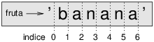
Figure 8.1: Índices de trozo.
Si omites el primer índice (antes del signo de dos puntos), el trozo comienza al principio de la cadena. Si omites el segundo índice, el trozo llega hasta el final de la cadena:
>>> fruta = 'banana'
>>> fruta[:3]
'ban'
>>> fruta[3:]
'ana'
Si el primer índice es mayor o igual al segundo, el resultado es una cadena vacía, representada por dos comillas:
>>> fruta = 'banana'
>>> fruta[3:3]
''
Una cadena vacía no contiene caracteres y tiene longitud 0, pero aparte de eso, es lo mismo que cualquier otra cadena.
Continuando con este ejemplo, ¿qué crees que significa fruta[:]? Pruébalo y mira.
8.5 Las cadenas son inmutables
Es tentador utilizar el operador [] en el lado izquierdo de una asignación, con la intención de cambiar un carácter en una cadena. Por ejemplo:
>>> saludo = 'Hola, mundo'
>>> saludo[0] = 'J'
TypeError: 'str' object does not support item assignment
El “objeto” en este caso es la cadena y el “ítem” es el carácter que intentaste asignar. Por ahora, un objeto es lo mismo que un valor, pero refinaremos esa definición más adelante (Sección 10.10).
La razón del error es que las cadenas son inmutables, lo cual significa que no puedes cambiar una cadena que ya existe. Lo mejor que puedes hacer es crear una nueva cadena que sea una variación de la original:
>>> saludo = 'Hola, mundo'
>>> nuevo_saludo = 'J' + saludo[1:]
>>> nuevo_saludo
'Jola, mundo'
Este ejemplo concatena una nueva primera letra con un trozo de saludo. No tiene efecto en la cadena original.
8.6 Buscar
¿Qué hace la siguiente función?
def encontrar(palabra, letra):
indice = 0
while indice < len(palabra):
if palabra[indice] == letra:
return indice
indice = indice + 1
return -1
En un sentido, encontrar es la inversa del operador []. En lugar de tomar un índice y extraer el carácter correspondiente, toma un carácter y encuentra el índice donde aparece ese carácter. Si el carácter no se encuentra, la función devuelve -1.
Este es el primer ejemplo que hemos visto de una sentencia return dentro de un bucle. Si palabra[indice] == letra, la función se sale del bucle y devuelve inmediatamente.
Si el carácter no aparece en la cadena, el programa termina el bucle de manera normal y devuelve -1.
Este patrón de computación —recorrer una secuencia y devolver cuando encontramos lo que buscamos— se llama búsqueda.
Como ejercicio, modifica encontrar para que tenga un tercer parámetro: el índice en palabra donde debería comenzar la búsqueda.
8.7 Bucles y conteo
El siguiente programa cuenta el número de veces que aparece la letra a en una cadena:
palabra = 'banana'
contar = 0
for letra in palabra:
if letra == 'a':
contar = contar + 1
print(contar)
Este programa demuestra otro patrón de computación llamado contador. La variable contar se inicializa en 0 y luego se incrementa cada vez que se encuentra una a. Cuando el bucle termina, contar contiene el resultado: el número total de letras a.
Como ejercicio, encapsula este código en una función con nombre contar y generalízalo para que acepte la cadena y la letra como argumentos.
Luego reescribe la función de modo que, en lugar de recorrer la cadena, utilice la versión de tres parámetros de encontrar de la sección anterior.
8.8 Métodos de cadena
Las cadenas proporcionan métodos que realizan una variedad de operaciones útiles. Un método es similar a una función —toma argumentos y devuelve un valor— pero la sintaxis es diferente. Por ejemplo, el método upper toma una cadena y devuelve una nueva cadena con todas las letras mayúsculas.
En lugar de la sintaxis de función upper(palabra), utiliza la sintaxis de método palabra.upper().
>>> palabra = 'banana'
>>> nueva_palabra = palabra.upper()
>>> nueva_palabra
'BANANA'
Esta forma de notación de punto especifica el nombre del método, upper, y el nombre de la cadena a la cual se le aplica el método, palabra. Los paréntesis vacíos indican que este método no toma argumentos.
Una llamada a un método se llama invocación; en este caso, diríamos que estamos invocando a upper en palabra.
Resulta que hay un método de cadena con nombre find que es notablemente similar a la función encontrar que escribimos:
>>> palabra = 'banana'
>>> indice = palabra.find('a')
>>> indice
1
En este ejemplo, invocamos a find en palabra y pasamos la letra que buscamos como parámetro.
En realidad, el método find es más general que nuestra función; puede encontrar subcadenas, no solo caracteres:
>>> palabra.find('na')
2
Por defecto, find comienza al principio de la cadena, pero puede tomar un segundo argumento, el índice donde debería comenzar:
>>> palabra.find('na', 3)
4
Este es un ejemplo de argumento opcional; find puede tomar también un tercer argumento, el índice donde debería detenerse:
>>> nombre = 'bob'
>>> nombre.find('b', 1, 2)
-1
Esta búsqueda falla porque b no aparece en el rango de índices desde 1 hasta 2, sin incluir el 2. Buscar hasta el segundo índice, sin incluirlo, hace a find consistente con el operador de trozo.
8.9 El operador in
La palabra in es un operador booleano que toma dos cadenas y devuelve True si la primera aparece como una subcadena en la segunda:
>>> 'a' in 'banana'
True
>>> 'semilla' in 'banana'
False
Por ejemplo, la siguiente función imprime todas las letras de palabra1 que también aparecen en palabra2:
def en_ambas(palabra1, palabra2):
for letra in palabra1:
if letra in palabra2:
print(letra)
Con nombres de variables bien escogidos, Python a veces se lee como el inglés. Podrías leer este bucle, “para (cada) letra en (la primera) palabra, si (la) letra (aparece) en (la segunda) palabra, imprimir (la) letra.”
Esto es lo que obtienes si comparas uvas y tunas:
>>> en_ambas('uvas', 'tunas')
u
a
s
8.10 Comparación de cadenas
Los operadores relacionales funcionan en las cadenas. Para ver si dos cadenas son iguales:
if palabra == 'banana':
print('Todo bien, bananas.')
Otras operaciones relacionales son útiles para poner palabras en orden alfabético:
if palabra < 'banana':
print('Tu palabra, ' + palabra + ', viene antes de banana.')
elif palabra > 'banana':
print('Tu palabra, ' + palabra + ', viene después de banana.')
else:
print('Todo bien, bananas.')
Python no maneja letras mayúsculas y minúsculas de la misma manera en que lo hacen las personas. Todas las letras mayúsculas vienen antes de todas las letras minúsculas, entonces:
Tu palabra, Piña, viene antes de banana.
Una manera común de abordar este problema es convertir las cadenas a un formato estándar, por ejemplo todas minúsculas, antes de realizar la comparación. Ten eso en mente en caso de que tengas que defenderte de un hombre armado con una Piña.
8.11 Depuración
Cuando utilizas índices para recorrer los valores en una secuencia, es difícil obtener el comienzo y final de un recorrido de manera correcta. Aquí hay una función que se supone que compara dos palabras y devuelve True si una de las palabras es el inverso de la otra, pero contiene dos errores:
def es_inverso(palabra1, palabra2):
if len(palabra1) != len(palabra2):
return False
i = 0
j = len(palabra2)
while j > 0:
if palabra1[i] != palabra2[j]:
return False
i = i+1
j = j-1
return True
La primera sentencia if verifica si las palabras tienen la misma longitud. Si no, podemos devolver False inmediatamente. De lo contrario, para el resto de la función, podemos suponer que las palabras tienen la misma longitud. Este es un ejemplo del patrón guardián de la Sección 6.8.
i y j son índices: i recorre a palabra1 hacia adelante mientras j recorre a palabra2 hacia atrás. Si encontramos dos letras que no coinciden, podemos devolver False inmediatamente. Si terminamos todo el bucle y todas las letras coinciden, devolvemos True.
Si probamos esta función con las palabras “pots” y “stop”, esperamos el valor de retorno True, pero obtenemos un IndexError:
>>> es_inverso('pots', 'stop')
...
File "inverso.py", line 15, in es_inverso
if palabra1[i] != palabra2[j]:
IndexError: string index out of range
Para depurar este tipo de error, mi primer movimiento es imprimir los valores de los índices inmediatamente antes de la línea donde aparece el error.
while j > 0:
print(i, j) # imprimir aquí
if palabra1[i] != palabra2[j]:
return False
i = i+1
j = j-1
Ahora cuando ejecuto el programa de nuevo, obtengo más información:
>>> es_inverso('pots', 'stop')
0 4
...
IndexError: string index out of range
En el primer paso por el bucle, el valor de j es 4,
lo cual está fuera de rango para la cadena 'pots'.
El índice del último carácter es 3, por lo que el
valor inicial para j debería ser len(palabra2)-1.
Si arreglo este error y ejecuto el programa de nuevo, obtengo:
>>> es_inverso('pots', 'stop')
0 3
1 2
2 1
True
Esta vez obtenemos la respuesta correcta, pero se ve como si el bucle solo se ejecutara
tres veces, lo cual es sospechoso. Para obtener una mejor idea de lo que está
ocurriendo, es útil dibujar un diagrama de estado. Durante la primera
iteración, el marco para es_inverso se muestra en la
Figura 8.2.
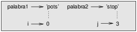
Figure 8.2: Diagrama de estado.
Me tomé la licencia de organizar las variables en el marco y agregar líneas punteadas para mostrar que los valores de i y j indican caracteres en palabra1 y palabra2.
Comenzando con este diagrama, ejecuta el programa en papel, cambiando los valores de i y j durante cada iteración. Encuentra y arregla el segundo error en esta función.
8.12 Glosario
- objeto:
- Algo a lo cual una variable puede referirse. Por ahora, puedes utilizar “objeto” y “valor” indistintamente.
- secuencia:
- Una colección ordenada de valores donde cada valor se identifica por un índice entero.
- ítem:
- Uno de los valores en una secuencia.
- índice:
- Un valor entero utilizado para seleccionar un ítem en una secuencia, tal como un carácter en una cadena. En Python, los índices parten desde 0.
- trozo (slice):
- Una parte de una cadena especificada por un rango de índices.
- cadena vacía:
- Una cadena sin caracteres y con longitud 0, representada por dos comillas.
- inmutable:
- La propiedad de una secuencia cuyos ítems no pueden cambiarse.
- recorrer:
- Iterar a través de los ítems en una secuencia, realizando una operación similar en cada uno de estos.
- búsqueda:
- Un patrón de un recorrido que se detiene cuando encuentra lo que busca.
- contador:
- Una variable utilizada para contar algo, generalmente inicializada en cero y luego incrementada.
- invocación:
- Una sentencia que llama a un método.
- argumento opcional:
- Un argumento de función o de método que no es obligatorio.
8.13 Ejercicios
Lee la documentación de los métodos de cadena en http://docs.python.org/3/library/stdtypes.html#string-methods. Tal vez quieras experimentar con algunos para asegurarte de que entiendes cómo funcionan. strip y replace son particularmente útiles.
La documentación utiliza una sintaxis que podría confundir.
Por ejemplo, en find(sub[, start[, end]]), los corchetes
indican argumentos opcionales. Entonces sub es obligatorio, pero
start es opcional, y si incluyes start,
entonces end es opcional.
Hay un método de cadena llamado count que es similar
a la función de la Sección 8.7. Lee la documentación
de este método
y escribe una invocación que cuente el número de letras a
en 'banana'.
Un trozo de cadena puede tomar un tercer índice que especifique el “tamaño de paso”, es decir, el número de espacios entre caracteres sucesivos. Un tamaño de paso de 2 significa cada dos caracteres, 3 significa cada tres, etc.
>>> fruta = 'banana'
>>> fruta[0:5:2]
'bnn'
Un tamaño de paso de -1 pasa a través de la palabra hacia atrás, por lo que
el trozo [::-1] genera una cadena invertida.
Utiliza esta notación para escribir una versión de una línea de es_palindromo
del Ejercicio 3.
Las siguientes funciones tienen la intención de verificar si una cadena contiene al menos una letra minúscula, pero algunas son incorrectas. Para cada función, describe qué hace realmente la función (suponiendo que el parámetro es una cadena).
def contiene_minuscula1(s):
for c in s:
if c.islower():
return True
else:
return False
def contiene_minuscula2(s):
for c in s:
if 'c'.islower():
return 'True'
else:
return 'False'
def contiene_minuscula3(s):
for c in s:
flag = c.islower()
return flag
def contiene_minuscula4(s):
flag = False
for c in s:
flag = flag or c.islower()
return flag
def contiene_minuscula5(s):
for c in s:
if not c.islower():
return False
return True
Un cifrado César es una forma débil de encriptación que implica la “rotación” de cada letra en un número fijo de lugares. Rotar una letra significa desplazarla a través del alfabeto, volviendo al comienzo si es necesario, por lo que ’A’ rotada en 3 es ’D’ y ’Z’ rotada en 1 es ’A’.
Para rotar una palabra, rota cada letra en la misma cantidad. Por ejemplo, “cheer” rotada en 7 es “jolly” y “melon” rotada en -10 es “cubed”. En la película 2001: Odisea del espacio, el computador de la nave se llama HAL, que es IBM rotada en -1.
Escribe una función llamada rotar_palabra
que tome una cadena y un entero como parámetros y devuelva
una cadena nueva que contenga las letras de la cadena original
rotadas en la cantidad entregada.
Tal vez quieras utilizar la función incorporada ord, que convierte un carácter en un código numérico, y chr, que convierte códigos numéricos en caracteres. Las letras del alfabeto están codificadas en orden alfabético, así por ejemplo:
>>> ord('c') - ord('a')
2
Debido a que 'c' es la dos-ésima letra del alfabeto. Pero ten
cuidado: los códigos numéricos para las letras mayúsculas son diferentes.
Los chistes potencialmente ofensivos en internet a veces están codificados en ROT13, que es un cifrado César con rotación 13. Si no te ofendes fácilmente, encuentra y decodifica algunos. Solución: http://thinkpython.com/code/rotate.py.
Chapter 9 Estudio de caso: juego de palabras
Este capítulo presenta el segundo estudio de caso, el cual involucra resolver puzles de palabras buscando palabras que tengan ciertas propiedades. Por ejemplo, encontraremos los palíndromos más largos en inglés y buscaremos palabras cuyas letras aparezcan en orden alfabético. Además, presentaré otro plan de desarrollo de programa: reducción a un problema previamente resuelto.
9.1 Leer listas de palabras
Para los ejercicios de este capítulo necesitamos una lista de palabras en inglés. Hay muchas listas de palabras disponibles en la web, pero la más adecuada para nuestro propósito es una de las listas de palabras recopiladas y contribuidas al dominio público por Grady Ward como parte del proyecto léxico Moby (ver http://wikipedia.org/wiki/Moby_Project). Es una lista de 113,809 palabras de crucigrama oficiales, es decir, palabras que se consideran válidas en crucigramas y otros juegos de palabras. En la colección Moby, el nombre del archivo es 113809of.fic; puedes descargar una copia, con el nombre más simple words.txt, en http://thinkpython.com/code/words.txt.
Este archivo está en texto plano, así que puedes abrirlo con un editor de texto, pero también puedes leerlo desde Python. La función incorporada open toma el nombre del archivo como parámetro y devuelve un objeto de archivo que puedes utilizar para leer dicho archivo.
>>> fin = open('words.txt')
fin es un nombre común para un objeto de archivo utilizado para la entrada (file input). El objeto de archivo proporciona varios métodos para la lectura, incluyendo readline, que lee caracteres desde un archivo hasta que llega a una nueva línea y devuelve el resultado como una cadena:
>>> fin.readline()
'aa\n'
La primera palabra de esta particular lista es “aa”, que es un tipo de
lava. La secuencia \n representa el carácter nueva línea que
separa esta palabra de la siguiente.
El objeto de archivo hace un seguimiento del lugar del archivo en donde este se encuentra en un instante determinado, así que si llamas a readline de nuevo, obtienes la palabra siguiente:
>>> fin.readline()
'aah\n'
La palabra siguiente es “aah”, que es una palabra perfectamente legítima, así que deja de mirarme así. O bien, si es el carácter nueva línea lo que te molesta, podemos deshacernos de este con el método de cadena strip:
>>> linea = fin.readline()
>>> palabra = linea.strip()
>>> palabra
'aahed'
Puedes también utilizar un objeto de archivo como parte de un bucle for. Este programa lee words.txt e imprime cada palabra, una por línea:
fin = open('words.txt')
for linea in fin:
palabra = linea.strip()
print(palabra)
9.2 Ejercicios
Hay soluciones a estos ejercicios en la siguiente sección. Deberías al menos intentar cada uno antes de leer las soluciones.
En 1939, Ernest Vincent Wright publicó una novela de 50.000 palabras llamada Gadsby, la cual no contiene la letra “e”. Dado que la “e” es la letra más común en el idioma inglés, no es una tarea fácil.
Sin duda, solo imaginar una oración sin utilizar dicho símbolo tan común implica una actividad difícil. Si tardas mucho al principio, hazlo con cuidado y trabaja horas para adquirir la habilidad poco a poco.
Basta, ya no sigo más.
Escribe una función llamada no_tiene_e que devuelva True si
la palabra dada no incluye la letra “e”.
Escribe un programa que lea words.txt e imprima solo las palabras que no tienen “e”. Calcula el porcentaje de palabras en la lista que no tienen “e”.
Escribe una función con nombre excluye que tome una palabra y una cadena de letras prohibidas y devuelva True si la palabra no utiliza ninguna de las letras prohibidas.
Escribe un programa que solicite al usuario ingresar una cadena de letras prohibidas y luego imprima el número de palabras que no contienen ninguna de estas. ¿Puedes encontrar una combinación de 5 letras prohibidas que excluya al menor número de palabras?
Escribe una función con nombre usa_solo que tome una palabra y una
cadena de letras y devuelva True si la palabra contiene
solo letras de la lista. ¿Puedes crear una oración en inglés utilizando solo las
letras acefhlo? ¿Una distinta a “Hoe alfalfa”?
Escribe una función con nombre usa_todas que tome una palabra y una
cadena de letras requeridas y devuelva True si la palabra
utiliza todas las letras requeridas al menos una vez. ¿Cuántas palabras
que utilizan todas las vocales aeiou existen? ¿Qué pasa con aeiouy?
Escribe una función llamada es_abecedario que devuelva
True si las letras en una palabra aparecen en orden alfabético
(las letras dobles están permitidas).
¿Cuántas palabras abecedarias existen?
9.3 Búsqueda
Todos los ejercicios de la sección anterior tienen algo en común: pueden ser resueltos con el patrón de búsqueda que vimos en la Sección 8.6. El ejemplo más simple es:
def no_tiene_e(palabra):
for letra in palabra:
if letra == 'e':
return False
return True
El bucle for recorre los caracteres en palabra. Si encontramos la letra “e”, podemos devolver False inmediatamente; de lo contrario, tenemos que ir a la siguiente letra. Si terminamos el bucle de manera normal, significa que no encontramos una “e”, por lo cual devolvemos True.
Podrías haber escrito esta función de manera más concisa utilizando el operador in, pero comencé con esta versión porque demuestra la lógica del patrón de búsqueda.
excluye es una versión más general de no_tiene_e pero
tiene la misma estructura:
def excluye(palabra, prohibidas):
for letra in palabra:
if letra in prohibidas:
return False
return True
Podemos devolver False apenas encontremos una letra prohibida; si llegamos al final del bucle, devolvemos True.
usa_solo es similar, excepto que el sentido de la condición
es inverso:
def usa_solo(palabra, disponibles):
for letra in palabra:
if letra not in disponibles:
return False
return True
En lugar de una lista de letras prohibidas, tenemos una lista de letras disponibles. Si encontramos una letra en palabra que no está en disponibles, podemos devolver False.
usa_todas es similar, excepto que invertimos el rol
de la palabra y la cadena de letras:
def usa_todas(palabra, requeridas):
for letra in requeridas:
if letra not in palabra:
return False
return True
En lugar de recorrer las letras en palabra, el bucle recorre las letras requeridas. Si alguna de las letras requeridas no aparece en la palabra, podemos devolver False.
Si realmente estuvieras pensando como un informático,
habrías reconocido que usa_todas era una instancia de un
problema previamente resuelto, y habrías escrito:
def usa_todas(palabra, requeridas):
return usa_solo(requeridas, palabra)
Este es un ejemplo de un plan de desarrollo de programa llamado reducción a un problema previamente resuelto, lo cual significa que reconoces el problema en el que estás trabajando como una instancia de un problema resuelto y aplicas una solución existente.
9.4 Bucles con índices
Escribí las funciones de la sección anterior con bucles for porque solo necesitaba los caracteres en las cadenas; no tenía que hacer nada con los índices.
Para es_abecedario tenemos que comparar letras adyacentes,
lo cual es un poco difícil con un bucle for:
def es_abecedario(palabra):
anterior = palabra[0]
for c in palabra:
if c < anterior:
return False
anterior = c
return True
Una alternativa es usar recursividad:
def es_abecedario(palabra):
if len(palabra) <= 1:
return True
if palabra[0] > palabra[1]:
return False
return es_abecedario(palabra[1:])
Otra opción es usar un bucle while:
def es_abecedario(palabra):
i = 0
while i < len(palabra)-1:
if palabra[i+1] < palabra[i]:
return False
i = i+1
return True
Este bucle comienza con i=0 y termina cuando i=len(palabra)-1. En cada paso por el bucle, compara al i-ésimo carácter (que puedes pensarlo como el carácter actual) con el i+1-ésimo carácter (que puedes pensarlo como el siguiente).
Si el siguiente carácter es menor (alfabéticamente anterior) que el actual, entonces hemos descubierto que se rompe la tendencia abecedaria y devolvemos False.
Si llegamos al final del bucle sin encontrar una falla, entonces la
palabra pasa la prueba. Para convencerte de que el bucle termina
de manera correcta, considera un ejemplo como 'flossy'. La
longitud de la palabra es 6, por lo cual
la última vez que el bucle se ejecuta es cuando i es 4, que es el
índice del penúltimo carácter. En la última iteración,
compara el penúltimo carácter con el último, que es
lo que queremos.
Aquí hay una versión de es_palindromo (ver
Ejercicio 3) que utiliza dos índices: uno comienza al
principio y aumenta, el otro comienza al final y disminuye.
def es_palindromo(palabra):
i = 0
j = len(palabra)-1
while i<j:
if palabra[i] != palabra[j]:
return False
i = i+1
j = j-1
return True
O bien podríamos reducir a un problema previamente resuelto y escribir
def es_palindromo(palabra):
return es_inverso(palabra, palabra)
utilizando es_inverso de la Sección 8.11.
9.5 Depuración
Probar programas es difícil. Las funciones de este capítulo son relativamente fáciles de probar porque puedes verificar los resultados a mano. Aun así, escoger un conjunto de palabras que pruebe todos los errores posibles está en algún lugar entre difícil e imposible.
Tomando a no_tiene_e como ejemplo, hay dos casos obvios
para verificar: las palabras que tienen una ‘e’ deberían devolver False y
las palabras que no la tienen deberían devolver True. No deberías
tener problemas para proponer una palabra de cada caso.
Dentro de cada caso, hay algunos subcasos menos obvios. Entre las palabras que tienen una “e”, deberías probar palabras con una “e” al principio, al final y en algún lugar del medio. Deberías probar palabras largas, palabras cortas y palabras muy cortas, como la cadena vacía. La cadena vacía es un ejemplo de un caso especial, que es uno de los casos no obvios donde los errores a menudo acechan.
Además de los casos de prueba que generes, puedes también probar tu programa con una lista de palabras como words.txt. Escudriñando la salida, podrías ser capaz de captar los errores, pero ten cuidado: podrías captar un tipo de error (palabras que no deberían estar incluidas, pero lo están) y otro no (palabras que deberían estar incluidas, pero no lo están).
En general, las pruebas pueden ayudarte a encontrar errores, pero no es fácil generar un buen conjunto de casos de prueba, e incluso si lo haces, no puedes asegurarte de que tu programa está correcto. De acuerdo al legendario informático:
Se pueden probar programas para mostrar la presencia de errores, ¡pero nunca para mostrar su ausencia!— Edsger W. Dijkstra
9.6 Glosario
- objeto de archivo:
- Un valor que representa un archivo abierto.
- reducción a un problema previamente resuelto:
- Una manera de resolver un problema expresándolo como una instancia de un problema previamente resuelto.
- caso especial:
- Un caso de prueba que es atípico o no obvio (y menos probable de abordar correctamente).
9.7 Ejercicios
Esta pregunta está basada en un Puzzler que fue transmitido en el programa de radio Car Talk (http://www.cartalk.com/content/puzzlers):
Dame una palabra con tres letras dobles consecutivas. Te daré un par de palabras que casi califican, pero no. Por ejemplo, la palabra committee, c-o-m-m-i-t-t-e-e. Estaría excelente, si no fuera por la ‘i’ que se cuela allí. O Mississippi: M-i-s-s-i-s-s-i-p-p-i. Si pudieras sacar esas ‘i’ funcionaría. Pero hay una palabra que tiene tres pares de letras consecutivos y, por lo que sé, puede ser la única palabra. Por supuesto que probablemente hay 500 más pero solo puedo pensar en una. ¿Cuál es la palabra?
Escribe un programa que la encuentre. Solución: http://thinkpython.com/code/cartalk1.py.
“Estaba conduciendo en la carretera el otro día y me fijé en mi odómetro. Al igual que la mayoría de los odómetros, muestra seis dígitos, solo en millas enteras. Entonces, si mi automóvil tenía 300.000 millas, por ejemplo, veía 3-0-0-0-0-0.“Ahora, lo que vi ese día fue muy interesante. Me di cuenta de que los últimos 4 dígitos eran palíndromo, es decir, se leían igual hacia adelante y hacia atrás. Por ejemplo, 5-4-4-5 es un palíndromo, por lo que mi odómetro podría haber leído 3-1-5-4-4-5.
“Una milla más adelante, los últimos 5 números eran palíndromo. Por ejemplo, podría haber leído 3-6-5-4-5-6. Una milla después de eso, los 4 números que están al medio de los 6 eran palíndromo. ¿Y estás listo para esto? Una milla más adelante, ¡los 6 eran palíndromo!
“La pregunta es, ¿qué había en mi odómetro cuando miré por primera vez?”
Escribe un programa en Python que pruebe todos los números de seis dígitos e imprima aquellos números que satisfagan estos requisitos. Solución: http://thinkpython.com/code/cartalk2.py.
“Recientemente tuve una visita con mi mamá y me di cuenta de que los dos dígitos que componen mi edad cuando se invierten resulta en su edad. Por ejemplo, si ella tiene 73, yo tengo 37. Nos preguntamos cuán a menudo ha ocurrido esto a través de los años pero nos desviamos a otros temas y nunca dimos con una respuesta.“Cuando llegué a casa descubrí que los dígitos de nuestras edades han sido reversibles seis veces hasta ahora. También descubrí que, si tenemos suerte, ocurriría de nuevo en unos años, y si realmente tenemos suerte ocurriría una vez más después de eso. En otras palabras, habría ocurrido 8 veces en total. Entonces la pregunta es, ¿qué edad tengo ahora?”
Escribe un programa en Python que busque soluciones a este Puzzler. Pista: podrías encontrar útil el método de cadena zfill.
Solución: http://thinkpython.com/code/cartalk3.py.
Chapter 10 Listas
Este capítulo presenta uno de los tipos incorporados más útiles de Python: las listas. Además, aprenderás más sobre objetos y lo que puede ocurrir cuando tienes más de un nombre para el mismo objeto.
10.1 Una lista es una secuencia
Al igual que una cadena, una lista es una secuencia de valores. En una cadena, los valores son caracteres; en una lista, pueden ser de cualquier tipo. Los valores en una lista se llaman elementos o a veces ítems.
Hay varias maneras de crear una lista nueva; la más simple es
encerrar los elementos en corchetes ([ y ]):
[10, 20, 30, 40] ['crunchy frog', 'ram bladder', 'lark vomit']
El primer ejemplo es una lista de cuatro enteros. El segundo es una lista de tres cadenas. Los elementos de una lista no tienen que ser del mismo tipo. La siguiente lista contiene una cadena, un número de coma flotante, un entero y (¡atención!) otra lista:
['spam', 2.0, 5, [10, 20]]
Una lista dentro de otra lista está anidada.
Una lista que no contiene elementos se
llama lista vacía; puedes crear una con corchetes
vacíos, [].
Como podrías esperar, puedes asignar valores de lista a variables:
>>> quesos = ['Cheddar', 'Edam', 'Gouda']
>>> numeros = [42, 123]
>>> vacio = []
>>> print(quesos, numeros, vacio)
['Cheddar', 'Edam', 'Gouda'] [42, 123] []
10.2 Las listas son mutables
La sintaxis para acceder a los elementos de una lista es la misma que para acceder a los caracteres de una cadena: el operador de corchetes. La expresión dentro de los corchetes especifica el índice. Recuerda que los índices comienzan en 0:
>>> quesos[0]
'Cheddar'
A diferencia de las cadenas, las listas son mutables. Cuando el operador de corchetes aparece en el lado izquierdo de una asignación, este identifica el elemento de la lista que será asignado.
>>> numeros = [42, 123]
>>> numeros[1] = 5
>>> numeros
[42, 5]
El uno-ésimo elemento de numeros, que solía ser 123, ahora es 5.
La Figura 10.1 muestra el diagrama de estado para quesos, numeros y vacio.
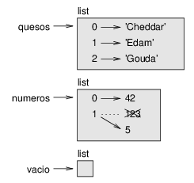
Figure 10.1: Diagrama de estado.
Las listas se representan por cajas con la palabra “list” por fuera y los elementos de la lista por dentro. quesos se refiere a una lista con tres elementos con índices 0, 1 y 2. numeros contiene dos elementos; el diagrama muestra que el valor del segundo elemento ha sido reasignado de 123 a 5. vacio se refiere a una lista sin elementos.
Los índices de las listas funcionan de la misma manera que los índices de las cadenas:
- Cualquier expresión entera se puede utilizar como índice.
- Si intentas leer o escribir un elemento que no existe, obtienes un IndexError.
- Si un índice tiene un valor negativo, se cuenta hacia atrás desde el final de la lista.
El operador in también funciona en las listas.
>>> quesos = ['Cheddar', 'Edam', 'Gouda']
>>> 'Edam' in quesos
True
>>> 'Brie' in quesos
False
10.3 Recorrer una lista
La manera más común de recorrer los elementos de una lista es con un ciclo for. La sintaxis es la misma que para las cadenas:
for queso in quesos:
print(queso)
Esto funciona bien si solo necesitas leer los elementos de la lista. Pero si quieres escribir o actualizar los elementos, necesitas los índices. Una manera común de hacer eso es combinar las funciones incorporadas range y len:
for i in range(len(numeros)):
numeros[i] = numeros[i] * 2
Este bucle recorre la lista y actualiza cada elemento. len devuelve el número de elementos en la lista. range devuelve una lista de índices de 0 a n−1, donde n es el largo de la lista. En cada paso por el bucle, i obtiene el índice del siguiente elemento. La sentencia de asignación en el cuerpo usa i para leer el valor antiguo del elemento y asignar el nuevo valor.
Un bucle for a través de una lista vacía nunca ejecuta el cuerpo:
for x in []:
print('Esto nunca ocurre.')
A pesar de que una lista puede contener otra lista, la lista anidada aún cuenta como un solo elemento. La longitud de esta lista es cuatro:
['spam', 1, ['Brie', 'Roquefort', 'Pol le Veq'], [1, 2, 3]]
10.4 Operaciones de lista
El operador + concatena listas:
>>> a = [1, 2, 3]
>>> b = [4, 5, 6]
>>> c = a + b
>>> c
[1, 2, 3, 4, 5, 6]
El operador * repite una lista un número dado de veces:
>>> [0] * 4
[0, 0, 0, 0]
>>> [1, 2, 3] * 3
[1, 2, 3, 1, 2, 3, 1, 2, 3]
El primer ejemplo repite [0] cuatro veces. El segundo ejemplo repite la lista [1, 2, 3] tres veces.
10.5 Trozos de lista
El operador de trozo también funciona en las listas:
>>> t = ['a', 'b', 'c', 'd', 'e', 'f']
>>> t[1:3]
['b', 'c']
>>> t[:4]
['a', 'b', 'c', 'd']
>>> t[3:]
['d', 'e', 'f']
Si omites el primer índice, el trozo comienza al principio. Si omites el segundo, el trozo llega al final. Entonces, si omites ambos, el trozo es una copia de la lista completa.
>>> t[:]
['a', 'b', 'c', 'd', 'e', 'f']
Dado que las listas son mutables, a menudo es útil crear una copia antes de realizar operaciones que modifiquen listas.
Un operador de trozo en el lado izquierdo de una asignación puede actualizar múltiples elementos:
>>> t = ['a', 'b', 'c', 'd', 'e', 'f']
>>> t[1:3] = ['x', 'y']
>>> t
['a', 'x', 'y', 'd', 'e', 'f']
10.6 Métodos de lista
Python proporciona métodos que operan en listas. Por ejemplo, append agrega un nuevo elemento al final de la lista:
>>> t = ['a', 'b', 'c']
>>> t.append('d')
>>> t
['a', 'b', 'c', 'd']
extend toma una lista como argumento y anexa todos los elementos:
>>> t1 = ['a', 'b', 'c']
>>> t2 = ['d', 'e']
>>> t1.extend(t2)
>>> t1
['a', 'b', 'c', 'd', 'e']
Este ejemplo deja a t2 sin modificar.
sort ordena los ejementos de la lista de menor a mayor:
>>> t = ['d', 'c', 'e', 'b', 'a']
>>> t.sort()
>>> t
['a', 'b', 'c', 'd', 'e']
La mayoría de los métodos de lista son nulos: modifican la lista y devuelven None. Si por casualidad escribes t = t.sort(), te decepcionará el resultado.
10.7 Mapa, filtro y reducción
Para sumar todos los números de una lista, puedes utilizar un bucle como este:
def sumar_todos(t):
total = 0
for x in t:
total += x
return total
total se inicializa en 0. En cada paso por el bucle, x obtiene un elemento de la lista. El operador += proporciona una manera corta de actualizar una variable. Esta sentencia de asignación aumentada,
total += x
es equivalente a
total = total + x
A medida que el bucle se ejecuta, total acumula la suma de los elementos; una variable que se utiliza de esta manera a veces se llama acumulador.
Sumar los elementos de una lista es una operación tan común que Python la facilita como función incorporada, sum:
>>> t = [1, 2, 3]
>>> sum(t)
6
Una operación como esta que combina una secuencia de elementos en un solo valor a veces se llama reducción.
A veces quieres recorrer una lista mientras construyes otra. Por ejemplo, la siguiente función toma una lista de cadenas y devuelve una nueva lista que contiene cadenas que comienzan con mayúscula:
def todas_con_mayuscula(t):
res = []
for s in t:
res.append(s.capitalize())
return res
res se inicializa con una lista vacía; en cada paso por el bucle, anexamos el elemento siguiente. Entonces res es otro tipo de acumulador.
Una operación como todas_con_mayuscula a veces es llamada
mapa porque “mapea” una función (en este caso el método
capitalize) sobre cada uno de los elementos en una secuencia.
Otra operación común es seleccionar algunos de los elementos de una lista y devolver una sublista. Por ejemplo, la siguiente función toma una lista de cadenas y devuelve una lista que contiene solo las cadenas escritas con mayúsculas:
def solo_mayusculas(t):
res = []
for s in t:
if s.isupper():
res.append(s)
return res
isupper es un método de cadena que devuelve True si la cadena solo contiene letras mayúsculas.
Una operación como solo_mayusculas se llama filtro porque
selecciona algunos de los elementos y filtra los otros.
La mayoría de las operaciones de lista se pueden expresar como una combinación de mapa, filtro y reducción.
10.8 Eliminar elementos
Hay varias maneras de eliminar elementos de una lista. Si conoces el índice del elemento que quieres, puedes utilizar pop:
>>> t = ['a', 'b', 'c']
>>> x = t.pop(1)
>>> t
['a', 'c']
>>> x
'b'
pop modifica la lista y devuelve el elemento que se eliminó. Si no entregas un índice, elimina y devuelve el último elemento.
Si no necesitas el valor eliminado, puedes utilizar el operador del:
>>> t = ['a', 'b', 'c']
>>> del t[1]
>>> t
['a', 'c']
Si conoces el elemento que quieres eliminar (pero no el índice), puedes utilizar remove:
>>> t = ['a', 'b', 'c']
>>> t.remove('b')
>>> t
['a', 'c']
El valor de retorno de remove es None.
Para eliminar más de un elemento, puedes utilizar del con índices de trozo:
>>> t = ['a', 'b', 'c', 'd', 'e', 'f']
>>> del t[1:5]
>>> t
['a', 'f']
Como siempre, el trozo selecciona todos los elementos hasta el segundo índice pero sin incluirlo.
10.9 Listas y cadenas
Una cadena es una secuencia de caracteres y una lista es una secuencia de valores, pero una lista de caracteres no es lo mismo que una cadena. Para convertir una cadena en una lista de caracteres, puedes utilizar list:
>>> s = 'spam'
>>> t = list(s)
>>> t
['s', 'p', 'a', 'm']
Dado que list es el nombre de una función incorporada, deberías evitar utilizarlo como nombre de variable. Yo además evito l porque se parece mucho a 1. Entonces por eso uso t.
La función list separa la cadena en letras individuales. Si quieres separar una cadena en palabras, puedes utilizar el método split:
>>> s = 'pining for the fjords'
>>> t = s.split()
>>> t
['pining', 'for', 'the', 'fjords']
Un argumento opcional llamado delimitador especifica qué caracteres usar como separador de palabras. El siguiente ejemplo usa un guión como delimitador:
>>> s = 'spam-spam-spam'
>>> delimitador = '-'
>>> t = s.split(delimitador)
>>> t
['spam', 'spam', 'spam']
join es el inverso de split. Toma una lista de cadenas y concatena los elementos. join es un método de cadena, por lo que tienes que invocarlo en el delimitador y pasarle la lista como parámetro:
>>> t = ['pining', 'for', 'the', 'fjords']
>>> delimitador = ' '
>>> s = delimitador.join(t)
>>> s
'pining for the fjords'
En este caso el delimitador es un carácter de espacio, por lo que
join pone un espacio entre las palabras. Para concatenar
cadenas sin espacios, puedes usar la cadena vacía,
'', como delimitador.
10.10 Objetos y valores
Si ejecutamos estas sentencias de asignación:
a = 'banana' b = 'banana'
sabemos que a y b se refieren a una cadena, pero no sabemos si se refieren a la misma cadena. Hay dos estados posibles, mostrados en la Figura 10.2.
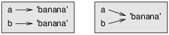
Figure 10.2: Diagrama de estado.
En el primer caso, a y b se refieren a dos objetos diferentes que tienen el mismo valor. En el segundo caso, se refieren al mismo objeto.
Para verificar si dos variables se refieren al mismo objeto, puedes usar el operador is.
>>> a = 'banana'
>>> b = 'banana'
>>> a is b
True
En este ejemplo, Python solo crea un objeto de cadena y tanto a como b se refieren a este. Pero cuando creas dos listas, obtienes dos objetos:
>>> a = [1, 2, 3]
>>> b = [1, 2, 3]
>>> a is b
False
Entonces el diagrama de estado se ve como la Figura 10.3.
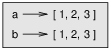
Figure 10.3: Diagrama de estado.
En este caso diríamos que las dos listas son equivalentes, porque tienen los mismos elementos, pero no idénticos, porque no son el mismo objeto. Si dos objetos son idénticos, son también equivalentes, pero si son equivalentes, no necesariamente son idénticos.
Hasta ahora, hemos estado utilizando “objeto” y “valor” indistintamente, pero es más preciso decir que un objeto tiene un valor. Si evalúas [1, 2, 3], obtienes un objeto de lista cuyo valor es una secuencia de enteros. Si otra lista tiene los mismos elementos, decimos que tiene el mismo valor, pero no es el mismo objeto.
10.11 Alias
Si a se refiere a un objeto y asignas b = a, entonces ambas variables se refieren al mismo objeto:
>>> a = [1, 2, 3]
>>> b = a
>>> b is a
True
El diagrama de estado se ve como la Figura 10.4.
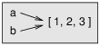
Figure 10.4: Diagrama de estado.
La asociación de una variable con un objeto se llama referencia. En este ejemplo, hay dos referencias al mismo objeto.
Un objeto con más de una referencia tiene más de un nombre, por lo que decimos que el objeto tiene un alias.
Si el objeto con alias es mutable, los cambios realizados con un alias afectan al otro:
>>> b[0] = 42
>>> a
[42, 2, 3]
Aunque este comportamiento puede ser útil, es propenso a errores. En general, es más seguro evitar los alias cuando trabajes con objetos mutables.
Para los objetos inmutables como las cadenas, los alias no son tan problemáticos. En este ejemplo:
a = 'banana' b = 'banana'
casi nunca hace una diferencia si a y b se refieren a la misma cadena o no.
10.12 Argumentos de lista
Cuando pasas una lista a una función, la función obtiene una referencia a
la lista. Si la función modifica la lista, la sentencia llamadora ve
el cambio. Por ejemplo, sin_cabeza quita el primer elemento
de una lista:
def sin_cabeza(t):
del t[0]
Se utiliza de la siguiente manera:
>>> letras = ['a', 'b', 'c']
>>> sin_cabeza(letras)
>>> letras
['b', 'c']
El parámetro t y la variable letras son alias para el mismo objeto. El diagrama de pila se ve como la Figura 10.5.
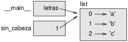
Figure 10.5: Diagrama de pila.
Dado que la lista es compartida por dos marcos, la dibujé entre estos.
Es importante distinguir entre operaciones que modifican listas y operaciones que crean nuevas listas. Por ejemplo, el método append modifica una lista, pero el operador + crea una nueva lista.
Aquí hay un ejemplo que utiliza append:
>>> t1 = [1, 2]
>>> t2 = t1.append(3)
>>> t1
[1, 2, 3]
>>> t2
None
El valor de retorno de append es None.
Aquí hay un ejemplo que utiliza el operador +:
>>> t3 = t1 + [4]
>>> t1
[1, 2, 3]
>>> t3
[1, 2, 3, 4]
El resultado del operador es una lista nueva y la lista original no ha cambiado.
Esta diferencia es importante cuando escribes funciones que se supone que modifican listas. Por ejemplo, esta función no elimina la cabeza de una lista:
def sin_cabeza_mal(t):
t = t[1:] # ¡INCORRECTO!
El operador de trozo crea una nueva lista y la asignación hace que t se refiera a esta, pero eso no afecta a la llamadora.
>>> t4 = [1, 2, 3]
>>> sin_cabeza_mal(t4)
>>> t4
[1, 2, 3]
Al principio de sin_cabeza_mal, t y t4
se refieren a la misma lista. Al final, t se refiere a una nueva lista,
pero t4 aún se refiere a la original, la lista sin modificar.
Una alternativa es escribir una función que cree y devuelva una nueva lista. Por ejemplo, cola devuelve todos los elementos de una lista excepto el primero:
def cola(t):
return t[1:]
Esta función deja a la lista original sin modificar. Se utiliza de la siguiente manera:
>>> letra = ['a', 'b', 'c']
>>> resto = cola(letras)
>>> resto
['b', 'c']
10.13 Depuración
El uso descuidado de las listas (y otros objetos mutables) puede llevar a largas horas de depuración. Aquí hay algunas trampas comunes y maneras de evitarlas:
- La mayoría de los métodos de lista modifican el argumento y
devuelven None. Esto es lo opuesto a los métodos de cadena,
que devuelven una nueva cadena y dejan sola a la original.
Si te acostumbraste a escribir código de cadena como este:
palabra = palabra.strip()
Es tentador escribir código de lista como este:
t = t.sort() # ¡INCORRECTO!
Dado que sort devuelve None, es probable que la siguiente operación que realices con t falle.
Antes de utilizar métodos y operadores de lista, deberías leer la documentación cuidadosamente y luego probarlos en modo interactivo.
- Escoge una forma y quédate con esa.
Parte del problema con las listas es que hay muchas maneras de hacer las cosas. Por ejemplo, para eliminar un elemento de una lista, puedes utilizar pop, remove, del, o incluso una asignación de trozo.
Para agregar un elemento, puedes utilizar el método append o el operador +. Suponiendo que t es una lista y x es un elemento de lista, estas líneas son correctas:
t.append(x) t = t + [x] t += [x]
Y estas son incorrectas:
t.append([x]) # ¡INCORRECTO! t = t.append(x) # ¡INCORRECTO! t + [x] # ¡INCORRECTO! t = t + x # ¡INCORRECTO!
Prueba cada uno de estos ejemplos en modo interactivo para asegurarte de que entiendes lo que haces. Nota que solo el último provoca un error de tiempo de ejecución; los otros tres son legales, pero hacen lo incorrecto.
- Crea copias para evitar los alias.
Si quieres utilizar un método como sort que modifique el argumento, pero necesitas mantener la lista original también, puedes crear una copia.
>>> t = [3, 1, 2] >>> t2 = t[:] >>> t2.sort() >>> t [3, 1, 2] >>> t2 [1, 2, 3]En este ejemplo podrías utilizar también la función incorporada sorted, que devuelve una nueva lista ordenada y deja sola a la original.
>>> t2 = sorted(t) >>> t [3, 1, 2] >>> t2 [1, 2, 3]
10.14 Glosario
- lista:
- Una secuencia de valores.
- elemento:
- Uno de los valores en una lista (u otra secuencia), también llamados ítems.
- lista anidada:
- Una lista que es un elemento de otra lista.
- acumulador:
- Una variable utilizada en un bucle para sumar o acumular un resultado.
- asignación aumentada:
- Una sentencia que actualiza el valor
de una variable utilizando un operador como
+=. - reducción:
- Un patrón de procesamiento que recorre una secuencia y acumula los elementos en un solo resultado.
- mapa:
- Un patrón de procesamiento que recorre una secuencia y realiza una operación en cada elemento.
- filtro:
- Un patrón de procesamiento que recorre una lista y selecciona los elementos que satisfacen algún criterio.
- objeto:
- Algo a lo cual una variable puede referirse. Un objeto tiene un tipo y un valor.
- equivalente:
- Que tiene el mismo valor.
- idéntico:
- Que es el mismo objeto (lo cual implica equivalencia).
- referencia:
- La asociación entre una variable y su valor.
- alias:
- Una circunstancia donde dos o más variables se refieren al mismo objeto.
- delimitador:
- Un carácter o cadena utilizado para indicar dónde debería separarse una cadena.
10.15 Ejercicios
Puedes descargar las soluciones a estos ejercicios en http://thinkpython.com/code/list_exercises.py.
Escribe una función llamada suma_anidada que tome una lista de listas
de enteros y sume los elementos de todas las listas anidadas.
Por ejemplo:
>>> t = [[1, 2], [3], [4, 5, 6]]
>>> suma_anidada(t)
21
Escribe una función llamada cumsum que tome una lista de números y devuelva la suma acumulativa, es decir, una lista nueva donde el i-ésimo elemento es la suma de los primeros i+1 elementos de la lista original. Por ejemplo:
>>> t = [1, 2, 3]
>>> cumsum(t)
[1, 3, 6]
Escribe una función llamada medio que tome una lista y
devuelva una nueva lista que contenga todos los elementos excepto el primero
y el último. Por ejemplo:
>>> t = [1, 2, 3, 4]
>>> medio(t)
[2, 3]
Escribe una función llamada acortar que tome una lista, la modifique
eliminando el primer y último elemento, y devuelva None.
Por ejemplo:
>>> t = [1, 2, 3, 4]
>>> acortar(t)
>>> t
[2, 3]
esta_ordenada que tome una lista como
parámetro y devuelva True si la lista está ordenada de manera
ascendente y False si no. Por ejemplo:
>>> esta_ordenada([1, 2, 2])
True
>>> esta_ordenada(['b', 'a'])
False
Dos palabras son anagramas si puedes reordenar las letras de una
para escribir la otra. Escribe una función llamada es_anagrama
que tome dos cadenas y devuelva True si son anagramas.
Escribe una función llamada tiene_duplicados que tome
una lista y devuelva True si hay algún elemento que
aparece más de una vez. No debería modificar la lista
original.
Este ejercicio está relacionado con la denominada “Paradoja del cumpleaños”, de la cual puedes leer en http://en.wikipedia.org/wiki/Birthday_paradox.
Si hay 23 estudiantes en tu clase, ¿cuáles son las posibilidades de que dos de ellos estén de cumpleaños el mismo día? Puedes estimar esta probabilidad generando muestras al azar de 23 cumpleaños y verificar coincidencias. Pista: puedes generar cumpleaños aleatorios con la función randint del módulo random.
Puedes descargar mi solución en http://thinkpython.com/code/birthday.py.
Escribe una función que lea el archivo words.txt y construya una lista con un elemento por palabra. Escribe dos versiones de esta función, una utilizando el método append y la otra utilizando la notación t = t + [x]. ¿Cuál toma más tiempo en ejecutar? ¿Por qué?
Solución: http://thinkpython.com/code/wordlist.py.
Para verificar si una palabra está en la lista de palabras, podrías utilizar el operador in, pero sería lento porque busca en orden a través de las palabras.
Debido a que las palabras están en orden alfabético, podemos acelerar las cosas con una búsqueda de bisección (también conocida como búsqueda binaria), que es similar a lo que haces cuando buscas una palabra en el diccionario (el libro, no la estructura de datos). Comienzas en el medio y verificas si la palabra que buscas viene antes de la palabra en el medio de la lista. Si es así, buscas en la primera mitad de la lista de la misma manera. De lo contrario, buscas la segunda mitad.
De cualquier manera, cortas por la mitad el espacio de búsqueda que queda. Si la lista de palabras tiene 113,809 palabras, tomará alrededor de 17 pasos para encontrar la palabra o concluir que no está.
Escribe una función llamada in_bisect que tome una lista ordenada
y un valor objetivo, y devuelva True si la palabra está
en la lista y False si no está.
¡O bien podrías leer la documentación del módulo bisect y utilizarlo! Solución: http://thinkpython.com/code/inlist.py.
Dos palabras son un “par inverso” si cada una es el inverso de la otra. Escribe un programa que encuentre todos los pares inversos en la lista de palabras. Solución: http://thinkpython.com/code/reverse_pair.py.
Dos palabras se “entrelazan” si tomando letras alternas de cada una se forma una nueva palabra. Por ejemplo, “shoe” y “cold” se entrelazan para formar “schooled”. Solución: http://thinkpython.com/code/interlock.py. Crédito: Este ejercicio está inspirado en un ejemplo de http://puzzlers.org.
- Escribe un programa que encuentre todos los pares de palabras que se entrelazan. Pista: ¡no revises todos los pares!
- ¿Puedes encontrar alguna palabra que sea un triple entrelazado? Es decir, una palabra que si se lee cada tres letras, comenzando con la primera, la segunda o la tercera letra, se forma una nueva palabra.
Chapter 11 Diccionarios
Este capítulo presenta otro tipo incorporado llamado diccionario. Los diccionarios son una de las mejores características de Python: son los bloques de construcción de muchos algoritmos eficientes y elegantes.
11.1 Un diccionario es un mapeo
Un diccionario es como una lista, pero más general. En una lista, los índices tienen que ser enteros; en un diccionario pueden ser (casi) de cualquier tipo.
Un diccionario contiene una colección de índices, que se llaman claves, y una colección de valores. Cada clave está asociada a un valor único. La asociación de una clave y un valor se llama par clave-valor, o a veces ítem.
En lenguaje matemático, un diccionario representa un mapeo de las claves a los valores, por tanto puedes decir también que cada clave “mapea a” un valor. Como ejemplo, construiremos un diccionario que mapea de palabras en inglés a palabras en español, así las claves y los valores son todas cadenas.
La función dict crea un nuevo diccionario sin ítems. Como dict es el nombre de una función incorporada, deberías evitar utilizarla como nombre de variable.
>>> ing_esp = dict()
>>> ing_esp
{}
Las llaves, {}, representan un diccionario vacío.
Para agregar ítems al diccionario, puedes utilizar corchetes:
>>> ing_esp['one'] = 'uno'
Esta línea crea un ítem que mapea de la clave
'one' al valor 'uno'. Si imprimimos el
diccionario de nuevo, vemos un par clave-valor con un signo de dos puntos
entre la clave y el valor:
>>> ing_esp
{'one': 'uno'}
Este formato de salida es también un formato de entrada. Por ejemplo, puedes crear un nuevo diccionario con tres ítems:
>>> ing_esp = {'one': 'uno', 'two': 'dos', 'three': 'tres'}
Pero si imprimes ing_esp, quizás te sorprendas:
>>> ing_esp
{'one': 'uno', 'three': 'tres', 'two': 'dos'}
El orden de los pares clave-valor podría no ser el mismo. Si escribiste el mismo ejemplo en tu computador, podrías obtener un resultado diferente. En general, el orden de los ítems en un diccionario es impredecible.
Sin embargo, eso no es un problema porque los elementos de un diccionario nunca se indexan con índices enteros. En cambio, utilizas las claves para buscar los valores correspondientes:
>>> ing_esp['two']
'dos'
La clave 'two' siempre mapea al valor 'dos', entonces el orden
de los ítems no importa.
Si la clave no está en el diccionario, obtienes una excepción:
>>> ing_esp['four']
KeyError: 'four'
La función len funciona con diccionarios: devuelve el número de pares clave-valor.
>>> len(ing_esp)
3
El operador in también funciona con diccionarios: te dice si algo aparece como una clave en el diccionario (aparecer como un valor no basta).
>>> 'one' in ing_esp
True
>>> 'uno' in ing_esp
False
Para ver si algo aparece como un valor en un diccionario, puedes utilizar el método values, el cual devuelve una colección de valores, y entonces utilizar el operador in:
>>> valores = ing_esp.values()
>>> 'uno' in valores
True
El operador in utiliza diferentes algoritmos para las listas y los diccionarios. Para las listas, busca los elementos de la lista en orden, como en la Sección 8.6. A medida que la lista se vuelve más larga, el tiempo de búsqueda se hace más largo en proporción directa.
Los diccionarios de Python utilizan una estructura de datos llamada tabla hash que tiene una propiedad notable: el operador in toma casi la misma cantidad de tiempo sin importar cuántos ítems hay en el diccionario. Explico cómo eso es posible en la Sección B.4, pero la explicación podría no tener sentido hasta que hayas leído algunos capítulos más.
11.2 El diccionario como colección de contadores
Supongamos que te dan una cadena y quieres contar cuántas veces aparece cada letra. Hay varias maneras en que podrías hacerlo:
- Podrías crear 26 variables, una para cada letra del alfabeto. Luego podrías recorrer la cadena y, para cada carácter, incrementar el contador correspondiente, probablemente utilizando un condicional encadenado.
- Podrías crear una lista de 26 elementos. Luego podrías convertir cada carácter a un número (usando la función incorporada ord), utilizar el número como un índice dentro de la lista e incrementar el contador apropiado.
- Podrías crear un diccionario con caracteres como claves y contadores como los valores correspondientes. La primera vez que veas un carácter, añadirías un ítem al diccionario. Después de eso incrementarías el valor de un ítem existente.
Cada una de estas opciones realiza la misma computación, pero cada una de ellas implementa esa computación de una manera diferente.
Una implementación es una manera de realizar una computación; algunas implementaciones son mejores que otras. Por ejemplo, una ventaja de la implementación con diccionario es que no tenemos que saber de antemano qué letras aparecen en la cadena y solo tenemos que hacer espacio para las letras que sí aparecen.
Así es como se vería el código:
def histograma(s):
d = dict()
for c in s:
if c not in d:
d[c] = 1
else:
d[c] += 1
return d
El nombre de la función es histograma, que es un término estadístico para una colección de contadores (o frecuencias).
La primera línea de la función crea un diccionario vacío. El bucle for recorre la cadena. En cada paso por el bucle, si el carácter c no está en el diccionario, creamos un nuevo ítem con clave c y valor inicial 1 (dado que hemos visto esta letra una vez). Si c ya está en el diccionario, incrementamos d[c].
Funciona así:
>>> h = histograma('brontosaurus')
>>> h
{'a': 1, 'b': 1, 'o': 2, 'n': 1, 's': 2, 'r': 2, 'u': 2, 't': 1}
El histograma indica que las letras 'a' y 'b'
aparecen una vez; 'o' aparece dos veces, y así sucesivamente.
Los diccionarios tienen un método llamado get que toma una clave y un valor por defecto. Si la clave aparece en el diccionario, get devuelve el valor correspondiente; de lo contrario, devuelve el valor por defecto. Por ejemplo:
>>> h = histograma('a')
>>> h
{'a': 1}
>>> h.get('a', 0)
1
>>> h.get('c', 0)
0
Como ejercicio, usa get para escribir histograma de manera más concisa. Deberías ser capaz de eliminar la sentencia if.
11.3 Bucles y diccionarios
Si utilizas un diccionario en una sentencia for, este recorre
las claves del diccionario. Por ejemplo, imprimir_hist
imprime cada clave y el valor correspondiente:
def imprimir_hist(h):
for c in h:
print(c, h[c])
La salida se ve así:
>>> h = histograma('parrot')
>>> imprimir_hist(h)
a 1
p 1
r 2
t 1
o 1
Nuevamente, las claves no estan en un orden particular. Para recorrer las claves en orden, puedes utilizar la función incorporada sorted:
>>> for clave in sorted(h):
... print(clave, h[clave])
a 1
o 1
p 1
r 2
t 1
11.4 Consulta inversa
Dado un diccionario d y una clave k, es fácil encontrar el valor correspondiente v = d[k]. Esta operación se llama consulta (en inglés, lookup).
¿Y qué pasa si tienes v y quieres encontrar k? Tienes dos problemas: primero, podría haber más de una clave que mapee al valor v. Dependiendo de la aplicación, quizás puedas elegir una o tengas que hacer una lista que las contenga a todas. Segundo, no hay una sintaxis sencilla para hacer una consulta inversa: tienes que buscar.
Aquí hay una función que toma un valor y devuelve la primera clave que mapea a ese valor:
def consulta_inversa(d, v):
for k in d:
if d[k] == v:
return k
raise LookupError()
Esta función es otro ejemplo de patrón de búsqueda pero que utiliza una característica que no hemos visto antes, raise. La sentencia raise causa una excepción; en este caso causa un LookupError, que es una excepción incorporada que se utiliza para indicar que falló una operación de consulta.
Si se llega al final del bucle, significa que v no aparece en el diccionario como valor, por lo que plantea una excepción.
Aquí hay un ejemplo de una consulta inversa eficaz:
>>> h = histograma('parrot')
>>> clave = consulta_inversa(h, 2)
>>> clave
'r'
Y una ineficaz:
>>> clave = consulta_inversa(h, 3)
Traceback (most recent call last):
File "<stdin>", line 1, in <module>
File "<stdin>", line 5, in consulta_inversa
LookupError
El efecto de cuando levantas una excepción mediante raise es el mismo que cuando Python levanta una: imprime un rastreo y un mensaje de error.
Cuando levantes una excepción, puedes proporcionar un mensaje de error detallado como argumento opcional. Por ejemplo:
>>> raise LookupError('el valor no aparece en el diccionario')
Traceback (most recent call last):
File "<stdin>", line 1, in ?
LookupError: el valor no aparece en el diccionario
Una consulta inversa es mucho más lenta que una consulta directa; si tienes que hacerlo a menudo, o si el diccionario se vuelve grande, el rendimiento de tu progama se verá afectado.
11.5 Diccionarios y listas
Las listas pueden aparecer como valores en un diccionario. Por ejemplo, si te dan un diccionario que mapea de letras a frecuencias, quizás quieras invertirlo, es decir, crear un diccionario que mapee de frecuencias a letras. Dado que podría haber muchas letras con la misma frecuencia, cada valor en el diccionario invertido debería ser una lista de letras.
Aquí hay una función que invierte un diccionario:
def invertir_dict(d):
inverso = dict()
for clave in d:
valor = d[clave]
if valor not in inverso:
inverso[valor] = [clave]
else:
inverso[valor].append(clave)
return inverso
En cada paso por el bucle, clave obtiene una clave de d y valor obtiene el valor correspondiente. Si valor no está en inverso, lo cual significa que no lo hemos visto antes, entonces creamos un nuevo ítem y lo inicializamos con un singleton (una lista que contiene un único elemento). De lo contrario, hemos visto este valor antes, por lo cual anexamos a la lista la clave correspondiente.
Aquí hay un ejemplo:
>>> hist = histograma('parrot')
>>> hist
{'a': 1, 'p': 1, 'r': 2, 't': 1, 'o': 1}
>>> inv = invertir_dict(hist)
>>> inv
{1: ['a', 'p', 't', 'o'], 2: ['r']}
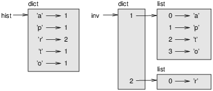
Figure 11.1: Diagrama de estado.
La Figura 11.1 es un diagrama de estado que muestra a hist e inv. Un diccionario se representa como una caja con el tipo dict arriba suyo y el par clave-valor adentro. Si los valores son enteros, números de coma flotante o cadenas, los dibujo adentro de la caja, pero usualmente dibujo las listas afuera de la caja, solo para mantener simple al diagrama.
Las listas pueden ser valores en un diccionario, tal como muestra este ejemplo simple, pero no pueden ser claves. Esto es lo que ocurre si lo intentas:
>>> t = [1, 2, 3]
>>> d = dict()
>>> d[t] = 'ups'
Traceback (most recent call last):
File "<stdin>", line 1, in ?
TypeError: list objects are unhashable
Anteriormente mencioné que un diccionario se implementa utilizando una tabla hash y eso significa que las claves tienen que ser hashables.
Un hash es una función que toma un valor (de cualquier tipo) y devuelve un entero. Los diccionarios utilizan estos enteros, llamados valores hash, para almacenar y consultar pares clave-valor.
Este sistema funciona bien si las claves son inmutables. Pero si las claves son mutables, como las listas, ocurren cosas malas. Por ejemplo, cuando creas un par clave-valor, Python hashea la clave y la almacena en la ubicación correspondiente. Si modificas la clave y luego la hasheas de nuevo, iría a una ubicación diferente. En ese caso podrías tener dos entradas para la misma clave, o quizás no seas capaz de encontrar una clave. De cualquier manera, el diccionario no funcionaría de manera correcta.
Por eso es que las claves tienen que ser hashables y, por la misma razón, los tipos mutables como las listas no lo son. La manera más simple de evitar esta limitación es utilizar tuplas, las cuales veremos en el capítulo siguiente.
Dado que los diccionarios son mutables, estos no pueden utilizarse como claves, pero pueden utilizarse como valores.
11.6 Memos
Si jugaste con la función fibonacci de la Sección 6.7, quizás has notado que mientras más grande es el argumento que entregues, más tarda la función en ejecutarse. Además, el tiempo de ejecución aumenta rápidamente.
Para entender el por qué, considera la Figura 11.2, que muestra el gráfico de llamadas para fibonacci con n=4.
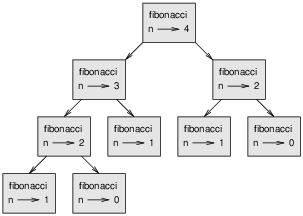
Figure 11.2: Gráfico de llamadas.
Un gráfico de llamadas muestra un conjunto de marcos de funciones, con líneas que conectan cada marco a los marcos de las funciones que están siendo llamadas. En la parte de arriba del gráfico, fibonacci con n=4 llama a fibonacci con n=3 y n=2. A su vez, fibonacci con n=3 llama a fibonacci con n=2 y n=1. Y así sucesivamente.
Cuenta cuántas veces se llama a fibonacci(0) y fibonacci(1). Esta es una solución ineficiente para el probema y se pone peor a medida que el argumento se hace más grande.
Una solución es hacer un seguimiento de los valores que ya han sido calculados almacenándolos en un diccionario. Un valor previamente calculado que se almacena para un uso posterior se llama memo. Aquí hay una versión “memoizada” de fibonacci:
conocidos = {0:0, 1:1}
def fibonacci(n):
if n in conocidos:
return conocidos[n]
resultado = fibonacci(n-1) + fibonacci(n-2)
conocidos[n] = resultado
return resultado
conocidos es un diccionario que hace un seguimiento de los números de Fibonacci que ya conocemos. Comienza con dos ítems: 0 mapea a 0 y 1 mapea a 1.
Cada vez que se llama a fibonacci, revisa a conocidos. Si el resultado ya está ahí, puede devolverlo inmediatamente. De lo contrario, tiene que calcular el nuevo valor, agregarlo al diccionario y devolverlo.
Si ejecutas esta versión de fibonacci y la comparas con la original, encontrarás que esta es mucho más rápida.
11.7 Variables globales
En los ejemplos anteriores, conocidos se crea fuera de la función,
por lo que pertenece al marco especial llamado __main__.
Las variables en __main__ a veces se llaman globales
porque se puede acceder a ellos desde cualquier función. A diferencia de las variables
locales, que desaparecen cuando su función termina, las variables globales
persisten de una llamada a función a la siguiente.
Es común utilizar variables globales para las banderas (en inglés, flags), es decir, variables booleanas que indican si una condición es verdadera. Por ejemplo, algunos programas utilizan una bandera llamada verbose para controlar el nivel de detalle en la salida:
verbose = True
def ejemplo1():
if verbose:
print('Ejecutando ejemplo1')
Si intentas reasignar una variable global, quizás te sorprendas. El siguiente ejemplo se supone que hace seguimiento de si la función ha sido llamada:
fue_llamada = False
def ejemplo2():
fue_llamada = True # INCORRECTO
Pero si lo ejecutas verás que el valor de fue_llamada
no cambia. El problema es que ejemplo2 crea una nueva variable local
con nombre fue_llamada. La variable local se va cuando
la función termina y no tiene efecto en la variable global.
Para reasignar una variable global dentro de una función, tienes que declarar la variable global antes de utilizarla:
fue_llamada = False
def ejemplo2():
global fue_llamada
fue_llamada = True
La sentencia global le dice al intérprete
algo como “En esta función, cuando digo fue_llamada,
me refiero a la variable global; no crees una local.”
Aquí hay un ejemplo que intenta actualizar una variable global:
contar = 0
def ejemplo3():
contar = contar + 1 # INCORRECTO
UnboundLocalError: local variable 'contar' referenced before assignment
Python supone que contar es local, y bajo ese supuesto lo estás leyendo antes de escribirlo. La solución, nuevamente, es declarar contar como global.
def ejemplo3():
global contar
contar += 1
Si una variable global se refiere a un valor mutable, puedes modificar el valor sin declarar la variable:
conocidos = {0:0, 1:1}
def ejemplo4():
conocidos[2] = 1
Entonces puedes agregar, eliminar y reemplazar elementos de una lista global o diccionario global, pero si quieres reasignar la variable, tienes que declararla:
def ejemplo5():
global conocidos
conocidos = dict()
Las variables globales pueden ser útiles, pero si tienes muchas, y las modificas frecuentemente, pueden hacer que los programas sean difíciles de depurar.
11.8 Depuración
A medida que trabajes con conjuntos de datos más grandes, depurar imprimiendo y verificando la salida a mano puede volverse algo difícil de manejar. Aquí hay algunas sugerencias para depurar conjuntos grandes de datos.
- Reduce la escala:
- Si es posible, reduce el tamaño del
conjunto de datos. Por ejemplo, si el programa lee un archivo de texto, comienza
solo con las primeras 10 líneas, o con el ejemplo más pequeño que puedas encontrar.
Puedes editar aquellos archivos o (mejor) modificar el
programa de manera que este lea solo las primeras n líneas.
Si hay un error, puedes reducir n al valor más pequeño que muestre el error y luego incrementarlo gradualmente mientras encuentras y corriges los errores.
- Revisa resúmenes y tipos:
- En lugar de imprimir y verificar el conjunto
de datos completo, considera imprimir resúmenes de los datos: por ejemplo,
el número de ítems en el diccionario o el total de una lista de números.
Una causa común de errores de tiempo de ejecución es un valor que no es del tipo correcto. Para depurar esta clase de errores, a menudo es suficiente imprimir el tipo del valor.
- Escribe verificaciones automáticas:
- A veces puedes escribir código para verificar
errores de manera automática. Por ejemplo, si estás calculando el
promedio de una lista de números, podrías verificar que el resultado no
sea mayor que el elemento más grande de la lista ni menor que
el más pequeño. A esto se le llama “prueba de cordura” (en inglés, sanity check)
porque detecta resultados que son “locos”.
Otro tipo de prueba compara los resultados de dos computaciones diferentes para ver si son consistentes. A esto se le llama “prueba de consistencia”.
- Dale formato a la salida:
- Dar formato a la salida de la depuración puede hacer más fácil detectar un error. Vimos un ejemplo en la Sección 6.9. Otra herramienta que quizás encuentres útil es el módulo pprint, el cual proporciona una función pprint que muestra tipos incorporados en un formato más legible por humanos (pprint significa “pretty print”).
Nuevamente, el tiempo que pasas construyendo andamiaje puede reducir el tiempo que pasas depurando.
11.9 Glosario
- mapeo:
- Una relación en la cual cada elemento de un conjunto corresponde a un elemento de otro conjunto.
- diccionario:
- Un mapeo de las claves a sus valores correspondienes.
- par clave-valor:
- La representación del mapeo de una clave a un valor.
- ítem:
- En un diccionario, otro nombre para un par clave-valor.
- clave:
- Un objeto que aparece en un diccionario como la primera parte de un par clave-valor.
- valor:
- Un objeto que aparece en un diccionario como la segunda parte de un par clave-valor. Esto es más específico que nuestro uso anterior de la palabra “valor”.
- implementación:
- Una manera de realizar una computación.
- tabla hash:
- El algoritmo utilizado para implementar los diccionarios de Python.
- función hash:
- Una función utilizada por una tabla hash para calcular la ubicación de una clave.
- hashable:
- Un tipo que tiene una función hash. Los tipos inmutables como los enteros, números de coma flotante y cadenas son hashables; los tipos mutables como las listas y diccionarios no lo son.
- consulta:
- Una operación de diccionario que toma una clave y encuentra el valor correspondiente.
- consulta inversa:
- Una operación de diccionario que toma un valor y encuentra una o más claves que mapean a este.
- sentencia raise:
- Una sentencia que (deliberadamente) levanta una excepción.
- singleton:
- Una lista (u otra secuencia) con un solo elemento.
- gráfico de llamadas:
- Un diagrama que muestra cada marco creado durante la ejecución de un programa, con una flecha desde cada llamador hacia cada llamado.
- memo:
- Un valor calculado que se almacena para evitar una futura computación innecesaria.
- variable global:
- Una variable definida fuera de la función. Las variables globales pueden ser accesibles desde cualquier función.
- sentencia global:
- Una sentencia que declara global a un nombre de variable.
- bandera:
- Una variable booleana que se utiliza para indicar si una condición es verdadera.
- declaración:
- Una sentencia como global que le dice al intérprete algo sobre una variable.
11.10 Ejercicios
Escribe una función que lea las palabras en words.txt y las almacene como claves en un diccionario. No importa cuáles sean los valores. Luego puedes utilizar el operador in como una manera rápida de verificar si una cadena está en el diccionario.
Si hiciste el Ejercicio 10, puedes comparar la velocidad de esta implementación con el operador in de lista y la búsqueda de bisección.
Lee la documentación del método de diccionario setdefault
y utilízalo para escribir una versión más concisa de invertir_dict.
Solución: http://thinkpython.com/code/invert_dict.py.
Si hiciste el Ejercicio 7, ya tienes
una función con nombre tiene_duplicados que toma una lista
como parámetro y devuelve True si hay algún objeto
que aparece más de una vez en la lista.
Utiliza un diccionario para escribir una versión más rápida y simple de
tiene_duplicados.
Solución: http://thinkpython.com/code/has_duplicates.py.
Dos palabras son “pares rotativos” si puedes rotar una de ellas
y obtener la otra (ver rotar_palabra en el Ejercicio 5).
Escribe un programa que lea una lista de palabras y encuentre todos los pares rotativos. Solución: http://thinkpython.com/code/rotate_pairs.py.
Aquí hay otro Puzzler de Car Talk (http://www.cartalk.com/content/puzzlers):
Este fue enviado por un compañero llamado Dan O’Leary. Se encontró hace poco con una palabra monosílaba de cinco letras común, que tiene la siguiente propiedad única. Cuando quitas la primera letra, las demás letras forman un homófono de la palabra original, es decir, una palabra que suena exactamente igual. Reemplaza la primera letra, es decir, ponla de nuevo y quita la segunda letra y el resultado es otro homófono de la palabra original. Y la pregunta es, ¿cuál es la palabra?Ahora voy a darte un ejemplo que no funciona. Veamos la palabra de cinco letras, ‘wrack.’ W-R-A-C-K, ya sabes, como ‘wrack with pain.’ Si quito la primera letra, me quedo con una palabra de cuatro letras, ’R-A-C-K.’ Como en ‘Holy cow, did you see the rack on that buck! It must have been a nine-pointer!’ Es un homófono perfecto. Si vuelves a poner la ‘w’ y quitas la ‘r’ en su lugar, te quedas con la palabra ‘wack’ que es una palabra real, que simplemente no es un homófono de las otras dos palabras.
Pero hay, de todas maneras, al menos una palabra de la cual Dan y nosotros sabemos, que entregará dos homófonos, si quitas cualquiera de las primeras dos letras para hacer dos nuevas palabras de cuatro letras. La pregunta es, ¿cuál es la palabra?
Puedes utilizar el diccionario del Ejercicio 1 para verificar si una cadena está en la lista de palabras.
Para verificar si dos palabras son homófonas, puedes utilizar el
Diccionario de Pronunciación de la CMU. Lo puedes descargar en
http://www.speech.cs.cmu.edu/cgi-bin/cmudict o en
http://thinkpython.com/code/c06d y también puedes descargar
http://thinkpython.com/code/pronounce.py, que proporciona una función
con nombre read_dictionary que lee el diccionario de pronunciación y
devuelve un diccionario de Python que mapea de cada palabra a una cadena que
describe su pronunciación primaria.
Escribe un programa que haga una lista de todas las palabras que resuelven el Puzzler. Solución: http://thinkpython.com/code/homophone.py.
Chapter 12 Tuplas
Este capítulo presenta otro tipo incorporado más, la tupla, y luego muestra la manera en que las listas, los diccionarios y las tuplas trabajan juntos. Además, presento una característica útil para listas de argumentos de longitud variable: los operadores de reunión y dispersión.
12.1 Las tuplas son inmutables
Una tupla es una secuencia de valores. Los valores pueden ser de cualquier tipo y están indexados por enteros, por lo que en ese sentido las tuplas se parecen mucho a las listas. La diferencia importante es que las tuplas son inmutables.
Sintácticamente, una tupla es una lista de valores separados por comas:
>>> t = 'a', 'b', 'c', 'd', 'e'
Aunque no es necesario, es común encerrar las tuplas en paréntesis:
>>> t = ('a', 'b', 'c', 'd', 'e')
Para crear una tupla con un solo elemento, tienes que incluir una coma final:
>>> t1 = 'a',
>>> type(t1)
<class 'tuple'>
Un valor en paréntesis no es una tupla:
>>> t2 = ('a')
>>> type(t2)
<class 'str'>
Otra manera de crear una tupla es la función incorporada tuple. Sin argumentos, esta crea una tupla vacía:
>>> t = tuple()
>>> t
()
Si el argumento es una secuencia (cadena, lista o tupla), el resultado es una tupla con los elementos de la secuencia:
>>> t = tuple('lupins')
>>> t
('l', 'u', 'p', 'i', 'n', 's')
Dado que tuple es el nombre de una función incorporada, deberías evitar usarlo como nombre de una variable.
La mayoría de los operadores de lista funcionan también en tuplas. El operador de corchetes indexa un elemento:
>>> t = ('a', 'b', 'c', 'd', 'e')
>>> t[0]
'a'
Y el operador de trozo selecciona un rango de elementos.
>>> t[1:3]
('b', 'c')
Sin embargo, si intentas modificar uno de los elementos de la tupla, obtienes un error:
>>> t[0] = 'A'
TypeError: object doesn't support item assignment
Dado que las tuplas son inmutables, no puedes modificar sus elementos. Pero puedes reemplazar una tupla con otra:
>>> t = ('A',) + t[1:]
>>> t
('A', 'b', 'c', 'd', 'e')
Esta sentencia crea una nueva tupla y luego hace que t se refiera a esta.
Los operadores relacionales funcionan con las tuplas y otras secuencias; Python comienza comparando el primer elemento de cada secuencia. Si son iguales, avanza a los siguientes elementos, y así sucesivamente, hasta que encuentre elementos que sean diferentes. Los elementos posteriores no se consideran (incluso si son realmente grandes).
>>> (0, 1, 2) < (0, 3, 4)
True
>>> (0, 1, 2000000) < (0, 3, 4)
True
12.2 Asignación de tupla
A menudo es útil intercambiar los valores de dos variables. Con asignaciones convencionales, tienes que utilizar una variable temporal. Por ejemplo, para intercambiar a y b:
>>> temp = a >>> a = b >>> b = temp
Esta solución es incómoda; la asignación de tupla es más elegante:
>>> a, b = b, a
El lado izquierdo es una tupla de variables; el lado derecho es una tupla de expresiones. Cada valor es asignado a su respectiva variable. Todas las expresiones en el lado derecho son evaluadas antes que cualquiera de las asignaciones.
La cantidad de variables en el lado izquierdo y la cantidad de valores del lado derecho tienen que ser la misma:
>>> a, b = 1, 2, 3
ValueError: too many values to unpack
De manera más general, el lado derecho puede ser cualquier tipo de secuencia (cadena, lista o tupla). Por ejemplo, para separar una dirección de email en nombre de usuario y dominio, podrías intentar:
>>> direccion = 'monty@python.org'
>>> nombre_usuario, dominio = direccion.split('@')
El valor de retorno de split es una lista con dos elementos: el primer elemento se asigna a nombre_usuario, el segundo a dominio.
>>> nombre_usuario
'monty'
>>> dominio
'python.org'
12.3 Tuplas como valores de retorno
Estrictamente hablando, una función puede devolver solo un valor de retorno, pero si el valor es una tupla, el efecto es el mismo que devolver múltiples valores. Por ejemplo, si quieres dividir dos enteros y calcular el cociente y el resto, es ineficiente calcular x//y y luego x%y. Es mejor calcular ambos al mismo tiempo.
La función incorporada divmod toma dos argumentos y devuelve una tupla de dos valores: el cociente y el resto. Puedes almacenar el resultado como una tupla:
>>> t = divmod(7, 3)
>>> t
(2, 1)
O bien, utilizar asignación de tupla para almacenar los elementos por separado:
>>> cociente, resto = divmod(7, 3)
>>> cociente
2
>>> resto
1
Aquí hay un ejemplo de una función que devuelve una tupla:
def min_max(t):
return min(t), max(t)
max y min son funciones incorporadas que encuentran
los elementos más grande y más pequeño en una secuencia. min_max
calcula ambos y devuelve una tupla de dos valores.
12.4 Tuplas de argumentos de longitud variable
Las funciones pueden tomar una cantidad variable de argumentos. Un nombre de parámetro que comienza con * hace una reunión de argumentos en una tupla. Por ejemplo, printall toma cualquier cantidad de argumentos y los imprime:
def printall(*args):
print(args)
El parámetro de reunión puede tener cualquier nombre que quieras, pero args es convencional. Aquí se muestra cómo opera la función:
>>> printall(1, 2.0, '3')
(1, 2.0, '3')
El complemento de la reunión es la dispersión. Si tienes una secuencia de valores y quieres pasarlo a una función como multiples argumentos, puedes utilizar el operador *. Por ejemplo, divmod toma exactamente dos argumentos; no funciona con una tupla:
>>> t = (7, 3)
>>> divmod(t)
TypeError: divmod expected 2 arguments, got 1
Sin embargo, si dispersas la tupla, funciona:
>>> divmod(*t)
(2, 1)
Muchas de las funciones incorporadas utilizan tuplas de argumentos de longitud variable. Por ejemplo, max y min pueden tomar cualquier cantidad de argumentos:
>>> max(1, 2, 3)
3
>>> sum(1, 2, 3)
TypeError: sum expected at most 2 arguments, got 3
Como ejercicio, escribe una función llamada sumar_todos que tome cualquier cantidad
de argumentos y devuelva su suma.
12.5 Listas y tuplas
zip es una función incorporada que toma dos o más secuencias y las intercala. El nombre de la función se refiere a una cremallera (zipper), ya que esta intercala dos filas de dientes.
Este ejemplo le hace zip a una cadena y una lista:
>>> s = 'abc'
>>> t = [0, 1, 2]
>>> zip(s, t)
<zip object at 0x7f7d0a9e7c48>
El resultado es un objeto zip que sabe cómo iterar a través de los pares. El uso más común de zip es en un bucle for:
>>> for par in zip(s, t):
... print(par)
...
('a', 0)
('b', 1)
('c', 2)
Un objeto zip es una especie de iterador, que es cualquier objeto que itera a través de una secuencia. Los iteradores son similares a las listas de alguna manera, pero a diferencia de las listas, no puedes utilizar un índice para seleccionar un elemento de un iterador.
Si quieres utilizar operadores de lista y métodos, puedes utilizar un objeto zip para crear una lista:
>>> list(zip(s, t))
[('a', 0), ('b', 1), ('c', 2)]
El resultado es una lista de tuplas; en este ejemplo, cada tupla contiene un carácter de la cadena y el elemento correspondiente de la lista.
Si las secuencias no tienen la misma longitud, el resultado tiene la longitud de la secuencia más corta.
>>> list(zip('Anne', 'Elk'))
[('A', 'E'), ('n', 'l'), ('n', 'k')]
Puedes utilizar asignación de tupla en un bucle for para recorrer una lista de tuplas:
t = [('a', 0), ('b', 1), ('c', 2)]
for letra, numero in t:
print(numero, letra)
En cada paso por el bucle, Python selecciona la siguiente tupla en la lista y asigna los elementos a letra y numero. La salida de este bucle es:
0 a 1 b 2 c
Si combinas zip, for y asignación de tupla, obtienes una
manera útil para recorrer dos (o más) secuencias al mismo
tiempo. Por ejemplo, tiene_coincidencia toma dos secuencias, t1 y
t2, y devuelve True si hay un índice i
tal que t1[i] == t2[i]:
def tiene_coincidencia(t1, t2):
for x, y in zip(t1, t2):
if x == y:
return True
return False
Si necesitas recorrer los elementos de una secuencia y sus índices, puedes utilizar la función incorporada enumerate:
for indice, elemento in enumerate('abc'):
print(indice, elemento)
El resultado de enumerate es un objeto enumerate, que itera una secuencia de pares; cada par contiene un índice (comenzando desde 0) y un elemento de la secuencia dada. En este ejemplo, la salida es
0 a 1 b 2 c
12.6 Diccionarios y tuplas
Los diccionarios tienen un método llamado items que devuelve una secuencia de tuplas, donde cada tupla es un par clave-valor.
>>> d = {'a':0, 'b':1, 'c':2}
>>> t = d.items()
>>> t
dict_items([('c', 2), ('a', 0), ('b', 1)])
El resultado es un objeto dict_items, que es un iterador que
itera los pares clave-valor. Puedes utilizarlo en un bucle for
así:
>>> for clave, valor in d.items():
... print(clave, valor)
...
c 2
a 0
b 1
Tal como esperarías de un diccionario, los ítems no están en un orden particular.
En sentido contrario, puedes utilizar una lista de tuplas para inicializar un nuevo diccionario:
>>> t = [('a', 0), ('c', 2), ('b', 1)]
>>> d = dict(t)
>>> d
{'a': 0, 'c': 2, 'b': 1}
Combinando dict con zip se produce una manera concisa de crear un diccionario:
>>> d = dict(zip('abc', range(3)))
>>> d
{'a': 0, 'c': 2, 'b': 1}
El método de diccionario update además toma una lista de tuplas y las agrega, como pares clave-valor, a un diccionario existente.
Es común utilizar tuplas como claves en diccionarios (principalmente porque no puedes utilizar listas). Por ejemplo, un directorio telefónico podría mapear de pares apellido-nombre a números telefónicos. Suponiendo que hemos definido apellido, nombre y numero, podríamos escribir:
directorio[apellido, nombre] = numero
La expresión en corchetes es una tupla. Podríamos utilizar asignación de tupla para recorrer este diccionario.
for apellido, nombre in directorio:
print(nombre, apellido, directorio[apellido,nombre])
Este bucle recorre las claves en directorio, que son tuplas. Asigna los elementos de cada tupla a apellido y nombre, luego imprime el nombre completo y el número telefónico correspondiente.
Hay dos maneras de representar tuplas en un diagrama de estado. La versión
más detallada muestra los índices y elementos tal como aparecen en
una lista. Por ejemplo, la tupla ('Cleese', 'John') se mostraría
como en la Figura 12.1.
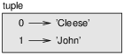
Figure 12.1: Diagrama de estado.
Pero en un diagrama más grande quizás quieras omitir los detalles. Por ejemplo, un diagrama del directorio telefónico podría mostrarse como en la Figura 12.2.
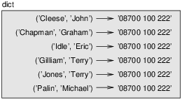
Figure 12.2: Diagrama de estado.
Aquí, las tuplas se muestran utilizando la notación de la sintáxis de Python. El número de teléfono del diagrama es la línea de reclamos de la BBC, así que por favor no llames.
12.7 Secuencias de secuencias
Me he enfocado en listas de tuplas, pero casi todos los ejemplos de este capítulo funcionan también con listas de listas, tuplas de tuplas y tuplas de listas. Para evitar enumerar las posibles combinaciones, a veces es más fácil hablar de secuencias de secuencias.
En muchos contextos, los diferentes tipos de secuencias (cadenas, listas y tuplas) se pueden utilizar indistintamente. Entonces, ¿cómo deberías escoger uno por sobre los otros?
Para comenzar con lo obvio, las cadenas son más limitadas que las otras secuencias porque los elementos tienen que ser caracteres. Además, son inmutables. Si necesitas la posibilidad de cambiar los caracteres en una cadena (en contraposición a crear una nueva cadena), quizás quieras utilizar una lista de caracteres en su lugar.
Las listas son más comunes que las tuplas, principalmente porque son mutables. Sin embargo, hay algunos casos donde podrías preferir tuplas:
- En algunos contextos, como una sentencia return, es sintácticamente más simple crear una tupla que una lista.
- Si quieres utilizar una secuencia como clave de diccionario, tienes que utilizar un tipo inmutable como una tupla o una cadena.
- Si pasas una secuencia como argumento a una función, utilizar tuplas reduce las posibilidades de comportamiento inesperado debido a los alias.
Dado que las tuplas son inmutables, no proporcionan métodos como sort y reverse, que modifican listas existentes. Sin embargo, Python proporciona la función incorporada sorted, que toma cualquier secuencia y devuelve una lista nueva con los mismos elementos en orden, y reversed, que toma una secuencia y devuelve un iterador que recorre la lista en orden invertido.
12.8 Depuración
Las listas, diccionarios y tuplas son ejemplos de estructuras de datos; en este capítulo comenzamos a ver estructuras de datos combinadas, como listas de tuplas, o diccionarios que contienen tuplas como claves y listas como valores. Las estructuras de datos combinadas son útiles, pero son propensas a lo que yo llamo errores de forma, es decir, errores causados cuando una estructura de datos tiene el tipo, tamaño o estructura incorrecta. Por ejemplo, si estás esperando una lista que contiene un entero y yo te doy un simple y viejo entero (no en una lista), no funcionará.
Para ayudar a depurar esta clase de errores, he escrito un módulo llamado structshape que proporciona una función, también llamada structshape, que toma cualquier tipo de estructura de datos como argumento y devuelve una cadena que resume su forma. Puedes descargarlo en http://thinkpython.com/code/structshape.py
Aquí hay un resultado para una lista simple:
>>> from structshape import structshape
>>> t = [1, 2, 3]
>>> structshape(t)
'list of 3 int'
Un programa más elegante podría escribir “list of 3 ints”, pero fue más fácil no lidiar con los plurales. Aquí hay una lista de listas:
>>> t2 = [[1,2], [3,4], [5,6]]
>>> structshape(t2)
'list of 3 list of 2 int'
Si los elementos de la lista no son del mismo tipo, structshape los agrupa, en orden, por tipo:
>>> t3 = [1, 2, 3, 4.0, '5', '6', [7], [8], 9]
>>> structshape(t3)
'list of (3 int, float, 2 str, 2 list of int, int)'
Aquí hay una lista de tuplas:
>>> s = 'abc'
>>> lt = list(zip(t, s))
>>> structshape(lt)
'list of 3 tuple of (int, str)'
Y aquí hay un diccionario con 3 ítems que mapean enteros a cadenas.
>>> d = dict(lt)
>>> structshape(d)
'dict of 3 int->str'
Si tienes problemas al hacer seguimiento de tus estructuras de datos, structshape puede ayudar.
12.9 Glosario
- tupla:
- Una secuencia inmutable de elementos.
- asignación de tupla:
- Una asignación con una secuencia en el lado derecho y una tupla de variables en el lado izquierdo. El lado derecho es evaluado y luego sus elementos son asignados a las variables en el lado izquierdo.
- reunión:
- Una operación que junta múltiples argumentos en una tupla.
- dispersión:
- Una operación que hace que una secuencia se comporte como múltiples argumentos.
- objeto zip:
- El resultado de llamar a la función incorporada zip; un objeto que itera a través de una secuencia de tuplas.
- iterador:
- Un objeto que itera a través de una secuencia, pero que no proporciona operadores ni métodos de lista.
- estructura de datos:
- Una colección de valores relacionados, a menudo organizada en listas, diccionarios, tuplas, etc.
- error de forma:
- Un error causado debido a que un valor tiene la forma incorrecta, es decir, el tipo o tamaño incorrecto.
12.10 Ejercicios
Escribe una función llamada mas_frecuente que tome una cadena e
imprima las letras en orden de frecuencia descendente. Encuentra ejemplos
de texto en varios idiomas diferentes y ve cómo varía la frecuencia de letras
entre los idiomas. Compara tus resultados con las tablas en
http://en.wikipedia.org/wiki/Letter_frequencies. Solución:
http://thinkpython.com/code/most_frequent.py.
¡Más anagramas!
- Escribe un programa
que lea una lista de palabras desde un archivo (ver Sección 9.1) e
imprima todos los conjuntos de palabras que son anagramas.
Aquí hay un ejemplo de cómo se vería la salida:
['deltas', 'desalt', 'lasted', 'salted', 'slated', 'staled'] ['retainers', 'ternaries'] ['generating', 'greatening'] ['resmelts', 'smelters', 'termless']
Pista: quizás quieras construir un diccionario que mapee de una colección de letras a una lista de palabras que se puedan escribir con esas letras. La pregunta es, ¿cómo puedes representar la colección de letras de manera que se pueda utilizar como clave?
- Modifica el programa anterior para que imprima la lista de anagramas más grande primero, seguido de la segunda más grande, y así sucesivamente.
- En Scrabble, un “bingo” es cuando juegas todas las siete fichas de
tu atril, junto con una letra en el tablero, para formar una palabra de ocho
letras. ¿Qué colección de 8 letras forma la mayor cantidad de bingos posible?
Solución: http://thinkpython.com/code/anagram_sets.py.
Dos palabras forman un “par de metátesis” si puedes transformar una en la otra intercambiando dos letras; por ejemplo, “converse” y “conserve”. Escribe un programa que encuentre todos los pares de metátesis en el diccionario. Pista: no pruebes todos los pares de palabras ni pruebes todos los posibles intercambios. Solución: http://thinkpython.com/code/metathesis.py. Crédito: Este ejercicio está inspirado por un ejemplo de http://puzzlers.org.
Aquí hay otro Puzzler de Car Talk (http://www.cartalk.com/content/puzzlers):
¿Cuál es la palabra en inglés más larga que, a medida que eliminas sus letras una a la vez, sigue siendo una palabra en inglés válida?A ver, las letras se pueden eliminar desde cualquier extremo, o del medio, pero no puedes reorganizar ninguna de las letras. Cada vez que retiras una letra, terminas con otra palabra en inglés. Si haces eso, eventualmente vas a terminar con una letra y esa también va a ser una palabra en inglés, una que se encuentra en el diccionario. Quiero saber: ¿cuál es la palabra más larga y cuantas letras tiene?
Voy a darte un pequeño ejemplo modesto: Sprite. ¿De acuerdo? Inicias con sprite, quitas una letra, una del interior de la palabra, te llevas la r, y nos quedamos con la palabra spite, luego quitamos la e del final, nos quedamos con spit, quitamos la s, nos quedamos con pit, it, y por último I.
Escribe un programa que encuentre todas las palabras que se pueden reducir de esta manera, y luego encuentra la más larga.
Este ejercicio es uno de los más desafiantes, así que aquí hay algunas sugerencias:
- Quizás quieras escribir una función que tome una palabra y obtenga una lista de todas las palabras que se pueden formar eliminando una letra. Estas son las “hijas” de la palabra.
- De manera recursiva, una palabra es reducible si cualquiera de sus hijas es reducible. Como caso base, puedes considerar la cadena vacía reducible.
- La lista de palabras que proporciono, words.txt, no contiene palabras de una sola letra. Entonces quizás quieras agregar “I”, “a” y la cadena vacía.
- Para mejorar el desempeño de tu programa, quizás quieras memoizar las palabras que se sabe que son reducibles.
Solución: http://thinkpython.com/code/reducible.py.
Chapter 13 Estudio de caso: selección de estructura de datos
En este punto has aprendido sobre las estructuras de datos esenciales de Python, y has visto algunos de los algoritmos que los utilizan. Si te gustaría saber más sobre algoritmos, este podría ser un buen momento para leer el Apéndice B. Sin embargo, no tienes que leerlo antes de continuar; puedes leerlo cuando te interese.
Este capítulo presenta un estudio de caso con ejercicios que te hacen pensar sobre la elección de estructuras de datos y practicar su uso.
13.1 Análisis de frecuencia de palabras
Como siempre, deberías al menos intentar los ejercicios antes de que leas mis soluciones.
Escribe un programa que lea un archivo, separe cada línea en palabras, quite los espacios en blanco y la puntuación de las palabras, y las convierta en minúsculas.
Pista: El módulo string proporciona una cadena con nombre whitespace, que contiene los caracteres de espacio, tabulación, nueva línea, etc., y punctuation que contiene los caracteres de puntuación. Veamos si podemos hacer que Python diga groserías:
>>> import string
>>> string.punctuation
'!"#$%&\'()*+,-./:;<=>?@[\\]^_`{|}~'
Además, podrías considerar el uso de los métodos de cadena strip, replace y translate.
Ve a Project Gutenberg (http://gutenberg.org) y descarga tu libro sin derechos de autor favorito en formato de texto plano.
Modifica tu programa del ejercicio anterior para que lea el libro que descargaste, se salte la información del encabezado al principio del archivo y procese el resto de las palabras como antes.
Luego, modifica el programa para que cuente la cantidad total de palabras en el libro y el número de veces que se utiliza cada palabra.
Imprime el número de palabras diferentes utilizadas en el libro. Compara libros diferentes de autores diferentes, escritos en épocas diferentes. ¿Qué autor utiliza el vocabulario más extenso?
Modifica el programa del ejercicio anterior para que imprima las 20 palabras utilizadas con mayor frecuencia en el libro.
Modifica el programa anterior para que lea una lista de palabras (ver Sección 9.1) y luego imprima todas las palabras del libro que no están en la lista de palabras. ¿Cuántas de ellas son errores tipográficos? ¿Cuántas de ellas son palabras comunes que deberían estar en la lista de palabras y cuántas de ellas son realmente oscuras?
13.2 Números aleatorios
Dadas las mismas entradas, la mayoría de los programas de computador generan las mismas salidas cada vez, por lo que se dice que son deterministas. El determinismo es usualmente algo bueno, ya que esperamos que los mismos cálculos produzcan el mismo resultado. Para algunas aplicaciones, sin embargo, queremos que el computador sea impredecible. Los juegos son un ejemplo obvio, pero hay más.
Hacer un programa verdaderamente no determinista resulta difícil, pero hay maneras de hacer que al menos parezca no determinista. Una de ellas es utilizar algoritmos que generen números pseudoaleatorios. Los números pseudoaleatorios no son verdaderamente aleatorios porque se generan por una computación determinista, pero solo mirando a dichos números es casi imposible distinguirlos de los aleatorios.
El módulo random proporciona funciones que generan números pseudoaleatorios (que simplemente llamaré “aleatorios” desde aquí en adelante).
La función random devuelve un número de coma flotante aleatorio entre 0.0 y 1.0 (incluyendo 0.0 pero no 1.0). Cada vez que llamas a random, obtienes el siguiente número de una larga serie. Para ver una muestra, ejecuta este bucle:
import random
for i in range(10):
x = random.random()
print(x)
La función randint toma los parámetros low y high y devuelve un entero entre low y high (incluyendo a ambos).
>>> random.randint(5, 10)
5
>>> random.randint(5, 10)
9
Para escoger un elemento de una secuencia de manera aleatoria, puedes usar choice:
>>> t = [1, 2, 3]
>>> random.choice(t)
2
>>> random.choice(t)
3
El módulo random también proporciona funciones para generar valores aleatorios a partir de distribuciones continuas, incluyendo la gaussiana, exponencial, gamma y algunas más.
Escribe una función con nombre escoger_de_hist que tome
un histograma como se definió en la Sección 11.2 y devuelva un
valor aleatorio del histograma, esogido con probabilidad
proporcional a la frecuencia. Por ejemplo, para este histograma:
>>> t = ['a', 'a', 'b']
>>> hist = histograma(t)
>>> hist
{'a': 2, 'b': 1}
Tu función debería devolver 'a' con probabilidad 2/3 y 'b'
con probabilidad 1/3.
13.3 Histograma de palabras
Deberías intentar los ejemplos anteriores antes de continuar. Puedes descargar mi solución en http://thinkpython.com/code/analyze_book1.py. Además, necesitarás http://thinkpython.com/code/emma.txt.
Aquí hay un programa que lee un archivo y construye un histograma de las palabras en el archivo:
import string
def procesar_archivo(nombre_archivo):
hist = dict()
fp = open(nombre_archivo)
for linea in fp:
procesar_linea(linea, hist)
return hist
def procesar_linea(linea, hist):
linea = linea.replace('-', ' ')
for palabra in linea.split():
palabra = palabra.strip(string.punctuation + string.whitespace)
palabra = palabra.lower()
hist[palabra] = hist.get(palabra, 0) + 1
hist = procesar_archivo('emma.txt')
Este programa lee a emma.txt, que contiene el texto de Emma de Jane Austen.
procesar_archivo recorre las líneas del archivo,
pasándolas una a la vez a procesar_linea. El histograma
hist se utiliza como acumulador.
procesar_linea utiliza el método de cadena replace para reemplazar
los guiones con espacios antes de utilizar split para separar la línea en una
lista de cadenas. Recorre la lista de palabras y utiliza strip
y lower para eliminar la puntuación y convertir a minúsculas. (Es
una abreviatura decir que las cadenas se “convierten”; recuerda que
las cadenas son inmutables, por lo que los métodos como strip y lower
devuelven cadenas nuevas.)
Finalmente, procesar_linea actualiza el histograma creando un nuevo
ítem o incrementando uno existente.
Para contar el número total de palabras en el archivo, podemos sumar las frecuencias del histograma:
def total_palabras(hist):
return sum(hist.values())
El número de palabras diferentes es solo el número de ítems en el diccionario:
def palabras_diferentes(hist):
return len(hist)
Aquí hay algo de código para imprimir los resultados:
print('Número total de palabras:', total_palabras(hist))
print('Número de palabras diferentes:', palabras_diferentes(hist))
Y los resultados:
Número total de palabras: 161080 Número de palabras diferentes: 7214
13.4 Palabras más comunes
Para encontrar las palabras más comunes, podemos crear una lista de tuplas, donde cada tupla contenga una palabra y su frecuencia, y ordenarla.
La siguiente función toma un histograma y devuelve una lista de tuplas frecuencia-palabra:
def mas_comunes(hist):
t = []
for clave, valor in hist.items():
t.append((valor, clave))
t.sort(reverse=True)
return t
En cada tupla, la frecuencia aparece primero, por lo que la lista resultante está ordenada por frecuencia. Aquí hay un bucle que imprime las diez palabras más comunes:
t = mas_comunes(hist)
print('Las palabras más comunes son:')
for frec, palabra in t[:10]:
print(palabra, frec, sep='\t')
Utilizo el argumento de palabra clave sep para decirle a print que utilice un carácter de tabulación como “separador”, en lugar de un espacio, así la segunda columna está alineada. Estos son los resultados de Emma:
Las palabras más comunes son: to 5242 the 5205 and 4897 of 4295 i 3191 a 3130 it 2529 her 2483 was 2400 she 2364
Este código se puede simplificar utilizando el parámetro key de la función sort. Si sientes curiosidad, puedes leer sobre este en https://wiki.python.org/moin/HowTo/Sorting.
13.5 Parámetros opcionales
Hemos visto funciones y métodos que toman argumentos opcionales. Es posible, además, escribir funciones definidas por el programador con argumentos opcionales. Por ejemplo, aquí hay una función que imprime las palabras más comunes de un histograma:
def imprime_mas_comunes(hist, num=10):
t = mas_comunes(hist)
print('Las palabras más comunes son:')
for frec, palabra in t[:num]:
print(palabra, frec, sep='\t')
El primer parámetro es obligatorio, el segundo es opcional. El valor por defecto de num es 10.
Si solo entregas un argumento:
imprimir_mas_comunes(hist)
num obtiene el valor por defecto. Si entregas dos argumentos:
imprimir_mas_comunes(hist, 20)
num obtiene el valor del argumento en su lugar. En otras palabras, el argumento opcional anula al valor por defecto.
Si una función tiene parámetros tanto obligatorios como opcionales, todos los parámetros obligatorios tienen que ir primero, seguido por los opcionales.
13.6 Diferencia de diccionarios
Encontrar las palabras del libro que no están en la lista de palabras de words.txt es un problema que podrías reconocer como diferencia de conjuntos, es decir, queremos encontrar todas las palabras de un conjunto (las palabras en el libro) que no están en el otro (las palabras en la lista).
diferencia toma dos diccionarios, d1 y d2, y devuelve un nuevo diccionario que contiene todas las claves de d1 que no están en d2. Dado que en realidad no nos importan los valores, los ponemos todos como None.
def diferencia(d1, d2):
res = dict()
for clave in d1:
if clave not in d2:
res[clave] = None
return res
Para encontrar las palabras en el libro que no están en words.txt,
podemos utlizar procesar_archivo para construir un histograma para
words.txt, y luego obtener la diferencia:
palabras = procesar_archivo('words.txt')
dif = diferencia(hist, palabras)
print("Palabras en el libro que no están en la lista de palabras:")
for palabra in dif:
print(palabra, end=' ')
Aquí hay algunos de los resultados para Emma:
Palabras en el libro que no están en la lista de palabras: rencontre jane's blanche woodhouses disingenuousness friend's venice apartment ...
Algunas de esas palabras son nombres y posesivos. Otras, como “rencontre”, ya no son de uso común. Sin embargo, ¡algunas son palabras comunes que realmente deberían estar en la lista!
Python proporciona una estructura de datos llamada set que provee muchas operaciones de conjunto comunes. Puedes leer sobre estas en la Sección 19.5, o leer la documentación en http://docs.python.org/3/library/stdtypes.html#types-set.
Escribe un programa que utilice la diferencia de conjuntos para encontrar palabras en el libro que no están en la lista. Solución: http://thinkpython.com/code/analyze_book2.py.
13.7 Palabras aleatorias
Para escoger una palabra de forma aleatoria del histograma, el algoritmo más simple es construir una lista con múltiples copias de cada palabra, según la frecuencia observada, y luego escoger de la lista:
def palabra_aleatoria(h):
t = []
for palabra, frec in h.items():
t.extend([palabra] * frec)
return random.choice(t)
La expresión [palabra] * frec crea una lista con frec copias de la cadena palabra. El método extend es similar a append, excepto que el argumento es una secuencia.
Este algoritmo funciona, pero no es muy eficiente: cada vez que escoges una palabra aleatoria, reconstruye la lista, que es tan grande como el libro original. Una mejora obvia es construir la lista una vez y luego hacer múltiples selecciones, pero la lista es grande aún.
Una alternativa es:
- Utilizar keys para obtener una lista de las palabras del libro.
- Construir una lista que contenga la suma acumulativa de las frecuencias de las palabras (ver Ejercicio 2). El último ítem en esta lista es el número total de palabras en el libro: n.
- Escoger un número de 1 a n. Utilizar búsqueda de bisección (ver Ejercicio 10) para encontrar el índice donde el número aleatorio sería insertado en la suma acumulativa.
- Utilizar el índice para encontrar la palabra correspondiente en la lista de palabras.
Escribe un programa que utilice este algoritmo para escoger una palabra aleatoria del libro. Solución: http://thinkpython.com/code/analyze_book3.py.
13.8 Análisis de Markov
Si escoges palabras del libro de manera aleatoria, puedes obtener una idea del vocabulario, pero probablemente no obtendrás una oración:
this the small regard harriet which knightley's it most things
Una serie de palabras aleatorias rara vez tiene sentido porque no hay relación entre palabras sucesivas. Por ejemplo, en una oración real esperarías que un artículo como “the” esté seguida por un adjetivo o un sustantivo, y probablemente no por un verbo o un adverbio.
Una manera de medir estas relaciones es el análisis de Markov, que caracteriza, para una secuencia de palabras dada, la probabilidad de las palabras que podrían venir después. Por ejemplo, la canción Eric, the Half a Bee comienza:
Half a bee, philosophically,
Must, ipso facto, half not be.
But half the bee has got to be
Vis a vis, its entity. D’you see?
But can a bee be said to be
Or not to be an entire bee
When half the bee is not a bee
Due to some ancient injury?
En este texto, la frase “half the” está siempre seguida por la palabra “bee”, pero la frase “the bee” podría estar seguida por “has” o “is”.
El resultado del análisis de Markov es un mapeo de cada prefijo (como “half the” y “the bee”) a todos los posibles sufijos (como “has” e “is”).
Dado este mapeo, puedes generar un texto aleatorio comenzando con cualquier prefijo y escogiendo de manera aleatoria en los posibles sufijos. Después, puedes combinar el final del prefijo y el nuevo sufijo para formar el nuevo prefijo, y repetir.
Por ejemplo, si comienzas con el prefijo “Half a”, entonces la siguiente palabra tiene que ser “bee”, porque el prefijo solo aparece una vez en el texto. El siguiente prefijo es “a bee”, por lo que el siguiente sufijo podría ser “philosophically”, “be” o “due”.
En este ejemplo, la longitud del prefijo es siempre dos, pero puedes hacer análisis de Markov con cualquier longitud de prefijo.
Análisis de Markov:
- Escribe un programa que lea un texto desde un archivo y realice análisis de Markov. El resultado podría ser un diccionario que mapee de prefijos a una colección de posibles sufijos. La colección podría ser una lista, tupla o diccionario; depende de ti hacer una elección apropiada. Puedes probar tu programa con un prefijo de largo dos, pero podrías escribir el programa de una manera en que resulte fácil intentar otras longitudes.
- Agrega una función al programa anterior que genere texto aleatorio
basado en el análisis de Markov. Aquí hay un ejemplo de Emma
con prefijo de largo 2:
He was very clever, be it sweetness or be angry, ashamed or only amused, at such a stroke. She had never thought of Hannah till you were never meant for me?" "I cannot make speeches, Emma:" he soon cut it all himself.
Para este ejemplo, dejé la puntuación unida a las palabras. El resultado es casi sintácticamente correcto, pero no del todo. Semánticamente, casi tiene sentido, pero no del todo.
¿Qué ocurre si aumentas la longitud del prefijo? ¿Tiene más sentido el texto aleatorio?
- Una vez que tu programa funcione, quizás quieras probar una mezcla: si combinas texto de dos o más libros, el texto aleatorio que generes mezclará el vocabulario y las frases de las fuentes de maneras interesantes.
Crédito: Este estudio de caso está basado en un ejemplo de Kernighan and Pike, The Practice of Programming, Addison-Wesley, 1999.
Deberías intentar este ejercicio antes de continuar; luego puedes descargar mi solución en http://thinkpython.com/code/markov.py. Además, necesitarás http://thinkpython.com/code/emma.txt.
13.9 Estructuras de datos
Utilizar análisis de Markov para generar texto aleatorio es divertido, pero también hay un punto en este ejercicio: la selección de la estructura de datos. En tu solución al ejercicio anterior, tuviste que escoger:
- Cómo representar los prefijos.
- Cómo representar la colección de posibles sufijos.
- Cómo representar el mapeo de cada prefijo a la colección de posibles sufijos.
El último es fácil: un diccionario es la elección obvia para mapear de claves a valores correspondientes.
Para los prefijos, las opciones más obvias son cadenas, lista de cadenas o tupla de cadenas.
Para los sufijos, una opción es una lista, otra es un histograma (diccionario).
¿Cómo deberías escoger? El primer paso es pensar en las operaciones que necesitarás implementar para cada esturcura de datos. Para prefijos, necesitamos poder eliminar palabras del principio y agregar al final. Por ejemplo, si el prefijo actual es “Half a”, y la siguiente palabra es “bee”, necesitas poder formar el siguiente prefijo, “a bee”.
Tu primera elección podría ser una lista, dado que es fácil agregar y eliminar elementos, pero también necesitamos poder utilizar los prefijos y claves en un diccionario, así que eso descarta las listas. Con las tuplas, no puedes anexar o eliminar, pero puedes utilizar el operador suma para formar una nueva tupla:
def cambiar(prefijo, palabra):
return prefijo[1:] + (palabra,)
cambiar toma una tupla de palabras, prefijo, y una cadena, palabra, y forma una nueva tupla que tiene todas las palabras en prefijo excepto la primera, y palabra agregada al final.
Para la colección de sufijos, las operaciones que necesitamos realizar incluyen agregar un nuevo sufijo (o aumentar la frecuencia de uno existente) y escoger un sufijo aleatorio.
Agregar un nuevo sufijo es igual de fácil con lista o histograma en cuanto a implementación. Escoger un elemento aleatorio de una lista es fácil; escoger del histograma es más díficil de hacer de manera eficiente (ver Ejercicio 7).
Hasta ahora hemos estado hablando principalmente sobre la facilidad de la implementación, pero hay otros factores a considerar al escoger estructuras de datos. Uno es el tiempo de ejecución. A veces hay una razón teórica para esperar que una estructura de datos sea más rápida que otra; por ejemplo, mencioné que el operador in es más rápido para diccionarios que para listas, al menos cuando el número de elementos es grande.
Sin embargo, a menudo no sabes de antemano cuál implementación será más rápida. Una opción es implementar ambas y ver cuál es mejor. Este enfoque se llama evaluación comparativa (en inglés, benchmarking). Una alternativa práctica es escoger la estructura de datos que sea la más fácil de implementar, y luego ver si es lo suficientemente rápida para la aplicación en cuestión. Si es así, no hay necesidad de seguir. Si no, hay herramientas, como el módulo profile, que puede identificar los lugares en un programa que toman la mayor parte del tiempo.
El otro factor a considerar es el espacio de almacenamiento. Por ejemplo, utilizar un histograma para la colección de sufijos podría ocupar menos espacio porque solo tienes que almacenar cada palabra una vez, sin importar cuántas veces aparezca en el texto. En algunos casos, ahorrar espacio puede también hacer que tu programa se ejecute más rápido, y en el caso extremo, tu programa podría no ejecutarse en absoluto si te quedas sin memoria. Sin embargo, para muchas aplicaciones el espacio es una consideración secundaria después del tiempo de ejecución.
Una útlima reflexión: en esta discusión, he insinuado que deberíamos utilizar una estructura de datos tanto para el análisis como para la generación. Pero dado que estas son fases separadas, sería posible también utilizar una estructura para el análisis y luego convertirla a otra estructura para la generación. Esto sería una ganancia neta si el tiempo ahorrado durante la generación excediera al tiempo ocupado en la conversión.
13.10 Depuración
Cuando estés depurando un programa, y especialmente si estás trabajando en un error de programación difícil, hay cinco cosas para probar:
- Lectura:
- Examina tu código, léelo de nuevo a ti mismo y verifica que dice lo que querías decir.
- Ejecución:
- Experimenta haciendo cambios y ejecutando versiones diferentes. A menudo, si muestras en pantalla lo correcto en el lugar correcto del programa, el problema se vuelve obvio, pero a veces tienes que construir andamiaje.
- Rumiación:
- ¡Tómate un tiempo para pensar! ¿Qué tipo de error es: de sintaxis, de tiempo de ejecución o semántico? ¿Qué información puedes obtener a partir de los mensajes de error o de la salida del programa? ¿Qué tipo de error podría causar el problema que estás viendo? ¿Qué cambiaste últimamente, antes de que el problema apareciera?
- Patito de goma:
- Si le explicas el problema a alguien más, a veces encuentras la respuesta antes de terminar la pregunta. A menudo no necesitas a la otra persona; podrías simplemente hablarle a un patito de goma. Y ese es el origen de la conocida estrategia llamada método de depuración del patito de goma (en inglés, rubber duck debugging). No estoy inventando; ver https://en.wikipedia.org/wiki/Rubber_duck_debugging.
- Retroceso:
- En algún punto, lo mejor que se puede hacer es retroceder, deshacer los cambios recientes, hasta que regreses a un programa que funcione y que entiendas. Luego puedes comenzar a reconstruir.
Los programadores principiantes a veces se atascan en una de estas actividades y olvidan las otras. Cada actividad viene con su propio modo de fallo.
Por ejemplo, leer tu código podría ayudar si el problema es un error tipográfico, pero no si el problema es un malentendido conceptual. Si no entiendes lo que tu programa hace, puedes leerlo 100 veces y nunca ver el error, porque el error está en tu cabeza.
Ejecutar experimentos puede ayudar, especialmente si ejecutas pruebas pequeñas y simples. Pero si ejecutas experimentos sin pensar ni leer tu código, podrías caer en un patrón que yo llamo “programación de camino aleatorio”, que es el proceso de hacer cambios aleatorios hasta que el programa haga lo correcto. No hace falta decir que la programación de camino aleatorio puede tomar mucho tiempo.
Tienes que tomarte el tiempo de pensar. La depuración es como una ciencia experimental: deberías tener al menos una hipótesis acerca de cuál es el problema. Si hay dos o más posibilidades, intenta pensar en una prueba que eliminaría una de ellas.
Sin embargo, incluso las mejores técnicas de depuración fallarán si hay muchos errores, o si el código que intentas arreglar es muy grande y complicado. A veces la mejor opción es retroceder, simplificando el programa hasta que obtengas algo que funcione y que entiendas.
Los programadores principiantes son a menudo reacios a retroceder porque no pueden soportar eliminar una línea de códiigo (incluso si es incorrecta). Si te hace sentir mejor, copia tu programa en otro archivo antes de comenzar a recortarlo. Luego puedes volver a copiar los pedazos uno a la vez.
Encontrar un error de programación difícil requiere lectura, ejecución, rumiación y a veces retroceso. Si te atascas en una de estas actividades, intenta las otras.
13.11 Glosario
- determinista:
- Dicho de un programa que hace lo mismo cada vez que se ejecuta, dadas las mismas entradas.
- pseudoaleatorio:
- Dicho de una secuencia de números que aparenta ser aleatorio, pero se genera por un programa determinista.
- valor por defecto:
- El valor dado a un parámetro opcional si no se le entrega un argumento.
- anular:
- Reemplazar un valor por defecto con un argumento.
- evaluación comparativa:
- El proceso de escoger entre estructuras de datos implementando alternativas y probándolas en una muestra de posibles entradas.
- método de depuración del patito de goma:
- Depurar explicando tu problema a un objeto inanimado tal como un patito de goma. Articular el problema puede ayudarte a resolverlo, incluso si el patito de goma no sabe Python.
13.12 Ejercicios
El “rango” de una palabra es su posición en una lista de palabras ordenadas por frecuencia: la palabra más común tiene rango 1, la segunda más común tiene rango 2, etc.
La ley de Zipf describe una relación entre los rangos y frecuencias de palabras en lenguajes naturales (http://en.wikipedia.org/wiki/Zipf's_law). Específicamente, predice que la frecuencia, f, de cada palabra con rango r es:
| f = c r−s |
donde s y c son parámetros que dependen del lenguaje y el texto. Si tomas el logaritmo de ambos lados de esta ecuación, obtienes:
| logf = logc − s logr |
Entonces, si graficas log f versus log r, deberías obtener una línea recta con pendiente −s e intercepto log c.
Escribe un programa que lea un texto de un archivo, cuente las frecuencias de palabras e imprima una línea para cada palabra, en orden de frecuencia descendiente, con log f y log r. Utiliza el progmara de gráficos de tu elección para graficar los resultados y verificar si forman una línea recta. ¿Puedes estimar el valor de s?
Solución: http://thinkpython.com/code/zipf.py. Para ejecutar mi solución, necesitas el módulo de gráficos matplotlib. Si instalaste Anaconda, ya tienes matplotlib; de lo contrario, quizás tengas que instalarlo.
Chapter 14 Archivos
Este capítulo presenta la idea de programas “persistentes” que mantienen los datos en almacenamiento permanente y muestra cómo utilizar diferentes tipos de almacenamiento permanente, tales como archivos y bases de datos.
14.1 Persistencia
La mayoría de los programas que hemos visto hasta ahora son transitorios en el sentido de que se ejecutan por un tiempo corto y producen alguna salida, pero cuando terminan sus datos desaparecen. Si ejecutas el programa de nuevo, comienza con una pizarra en blanco.
Otros programas son persistentes: se ejecutan por un tiempo largo (o todo el tiempo), mantienen al menos algunos de sus datos en almacenamiento permanente (un disco duro, por ejemplo) y, si se apagan y reinician, continúan donde estaban.
Ejemplos de programas persistentes son los sistemas operativos, que se se ejecutan casi siempre que un computador está encendido, y los servidores web, que se ejecutan todo el tiempo, esperando solicitudes para entrar en la red.
Una de las maneras más simples que tienen los programas para mantener sus datos es leyendo y escribiendo archivos de texto. Ya hemos visto programas que leen archivos de texto; en este capítulo veremos programas que los escriban.
Una alternativa es almacenar el estado del programa en una base de datos. En este capítulo presentaré una base de datos simple y un módulo, pickle, que facilita el almacenamiento de datos del programa.
14.2 Leer y escribir
Un archivo de texto es una secuencia de caracteres almacenados en un medio permanente como un disco duro, memoria flash o CD-ROM. Vimos cómo abrir y leer un archivo en la Sección 9.1.
Para escribir un archivo, tienes que abrirlo con el modo 'w' como segundo
parámetro:
>>> fout = open('output.txt', 'w')
Si el archivo existe, abrirlo en modo escritura elimina los datos antiguos y comienza de nuevo, ¡así que ten cuidado! Si el archivo no existe, se crea uno nuevo.
open devuelve un objeto de archivo que proporciona métodos para trabajar con el archivo. El método write pone datos en el archivo.
>>> linea1 = "He aquí el junco,\n"
>>> fout.write(linea1)
18
El valor de retorno es la cantidad de caracteres que se escribieron. El objeto de archivo hace un seguimiento del lugar en donde está, por lo cual si llamas a write de nuevo, agrega los nuevos datos al final del archivo.
>>> linea2 = "emblema de nuestra tierra.\n"
>>> fout.write(linea2)
27
Cuando hayas terminado de escribir, deberías cerrar el archivo.
>>> fout.close()
Si no cierras el archivo, se cierra cuando el programa termina.
14.3 Operador de formato
El argumento de write tiene que ser una cadena, por lo cual si queremos poner valores en un archivo, tenemos que convertirlos a cadenas. La manera más fácil de hacer eso es con str:
>>> x = 52 >>> fout.write(str(x))
Una alternativa es utilizar el operador de formato: %. Cuando se aplica a enteros, % es el operador de módulo. Pero cuando el primer operando es una cadena, % es el operador de formato.
El primer operando es la cadena de formato, que contiene una o más secuencias de formato, las cuales especifican la manera en que se da formato al segundo operando. El resultado es una cadena.
Por ejemplo, la secuencia de formato '%d' significa que
el segundo operando debería formatearse como un entero
decimal:
>>> camellos = 42
>>> '%d' % camellos
'42'
El resultado es la cadena '42', que no debe confundirse
con el valor entero 42.
Una secuencia de formato puede aparecer en cualquier lugar de la cadena, así que puedes incrustar un valor en una oración:
>>> 'He visto %d camellos.' % camellos
'He visto 42 camellos.'
Si hay más de una secuencia de formato en la cadena, el segundo argumento tiene que ser una tupla. Cada secuencia de formato es emparejada con un elemento de la tupla, en orden.
El siguiente ejemplo utiliza '%d' para dar formato a un entero,
'%g' para dar formato a un número de coma flotante y
'%s' para dar formato a una cadena:
>>> 'En %d años he visto %g %s.' % (3, 0.1, 'camellos')
'En 3 años he visto 0.1 camellos.'
El número de elementos en la tupla tiene que coincidir con el número de secuencias de formato en la cadena. Además, los tipos de los elementos tienen que coincidir con las secuencias de formato:
>>> '%d %d %d' % (1, 2)
TypeError: not enough arguments for format string
>>> '%d' % 'dólares'
TypeError: %d format: a number is required, not str
En el primer ejemplo, no hay suficientes elementos; en el segundo, el elemento tiene tipo incorrecto.
Para más información sobre el operador de formato, ver https://docs.python.org/3/library/stdtypes.html#printf-style-string-formatting. Una alternativa más poderosa es el método de cadena format, del cual puedes leer en https://docs.python.org/3/library/stdtypes.html#str.format.
14.4 Nombres de archivo y rutas
Los archivos se organizan en directorios (también llamados “carpetas”). Cada programa que se ejecuta tiene un “directorio actual”, que es el directorio por defecto para la mayor parte de las operaciones. Por ejemplo, cuando abres un archivo para lectura, Python lo busca en el directorio actual.
El módulo os proporciona funciones para trabajar con archivos y directorios (“os” significa “operating system”). os.getcwd devuelve el nombre del directorio actual:
>>> import os
>>> cwd = os.getcwd()
>>> cwd
'/home/dinsdale'
cwd significa “current working directory”. El resultado en este ejemplo es /home/dinsdale, que es el directorio principal de un usuario con nombre dinsdale.
Una cadena como '/home/dinsdale' que identifica un archivo o un
directorio se llama ruta (en inglés, path).
Un nombre de archivo simple, como memo.txt, también se considera una ruta, pero es una ruta relativa porque se relaciona con el directorio actual. Si el directorio actual es /home/dinsdale, el nombre de archivo memo.txt haría referencia a /home/dinsdale/memo.txt.
Una ruta que comienza con / no depende del directorio actual: se llama ruta absoluta. Para encontrar la ruta absoluta de un archivo, puedes utilizar os.path.abspath:
>>> os.path.abspath('memo.txt')
'/home/dinsdale/memo.txt'
os.path proporciona otras funciones para trabajar con nombres de archivo y rutas. Por ejemplo, os.path.exists verifica si un archivo o directorio existe:
>>> os.path.exists('memo.txt')
True
Si existe, os.path.isdir verifica si es un directorio:
>>> os.path.isdir('memo.txt')
False
>>> os.path.isdir('/home/dinsdale')
True
Del mismo modo, os.path.isfile verifica si es un archivo.
os.listdir devuelve una lista de los archivos (y otros directorios) en el directorio dado:
>>> os.listdir(cwd)
['music', 'photos', 'memo.txt']
Para demostrar estas funciones, el siguiente ejemplo “recorre” un directorio, imprime los nombres de todos los archivos y se llama a sí mismo de manera recursiva en todos los directorios.
def walk(nombre_dir):
for nombre in os.listdir(nombre_dir):
ruta = os.path.join(nombre_dir, nombre)
if os.path.isfile(ruta):
print(ruta)
else:
walk(ruta)
os.path.join toma un directorio y un archivo y los une en una ruta completa.
El módulo os proporciona una función llamada walk que es similar a esta pero más versátil. Como ejercicio, lee la documentación y utiliza esta función para imprimir los nombres de los archivos en un directorio dado y sus subdirectorios. Puedes descargar mi solución en http://thinkpython.com/code/walk.py.
14.5 Capturar excepciones
Muchas cosas pueden salir mal cuando intentas leer y escribir archivos. Si intentas abrir un archivo que no existe, obtienes un FileNotFoundError:
>>> fin = open('archivo_malo')
FileNotFoundError: [Errno 2] No such file or directory: 'archivo_malo'
Si no tienes permisos de acceso a un archivo:
>>> fout = open('/etc/passwd', 'w')
PermissionError: [Errno 13] Permission denied: '/etc/passwd'
Y si intentas abrir un directorio para lectura, obtienes
>>> fin = open('/home')
IsADirectoryError: [Errno 21] Is a directory: '/home'
Para evitar estos errores, podrías utilizar funciones como os.path.exists y os.path.isfile, pero tomaría mucho tiempo y código verificar todas las posibilidades (si “Errno 21” indica algo, hay al menos 21 cosas que pueden salir mal).
Es mejor continuar y avanzar —y lidiar con los problemas, si ocurren— que es exactamente lo que hace la sentencia try. La sintaxis es similar a una sentencia if...else:
try:
fin = open('archivo_malo')
except:
print('Algo salió mal.')
Python comienza ejecutando la cláusula try. Si todo sale bien, se salta la cláusula except y continúa. Si ocurre una excepción, salta hacia afuera de la cláusula try y ejecuta la cláusula except.
Manejar una excepción con una sentencia try se llama capturar una excepción. En este ejemplo, la cláusula except imprime un mensaje de error que no es de mucha ayuda. En general, capturar una excepción te da una oportunidad de arreglar el problema, o intentar de nuevo, o al menos terminar el programa de manera elegante.
14.6 Bases de datos
Una base de datos es un archivo que está organizado para almacenar datos. Muchas bases de datos están organizadas como un diccionario en el sentido de que mapean de claves a valores. La diferencia más grande entre una base de datos y un diccionario es que la base de datos está en un disco (u otro almacenamiento permanente), por lo cual persiste después de que el programa termina.
El módulo dbm proporciona una interfaz para crear y actualizar archivos de base de datos. Como ejemplo, crearé una base de datos que contiene títulos para archivos de imagen.
Abrir una base de datos es similar a abrir otros archivos:
>>> import dbm
>>> db = dbm.open('títulos', 'c')
El modo 'c' significa que la base de datos debería ser creada si
no existe ya. El resultado es un objeto de base de datos
que puede ser utilizado (para la mayoría de las operaciones) como un diccionario.
Cuando creas un nuevo ítem, dbm actualiza el archivo de base de datos.
>>> db['cleese.png'] = 'Foto de John Cleese.'
Cuando accedes a uno de los ítems, dbm lee el archivo:
>>> db['cleese.png']
b'Foto de John Cleese.'
El resultado es un objeto de bytes, que es la razón por la cual comienza con b. Un objeto de bytes es similar a una cadena en muchos sentidos. A medida que llegas más lejos en Python, la diferencia se vuelve importante, pero por ahora podemos ignorarla.
Si haces otra asignación a una clave existente, dbm reemplaza el valor antiguo:
>>> db['cleese.png'] = 'Foto de John Cleese haciendo un tonto paseo.'
>>> db['cleese.png']
b'Foto de John Cleese haciendo un tonto paseo.'
Algunos métodos de diccionario, como keys e items, no funcionan con objetos de base de datos. Pero la iteración con un bucle for funciona:
for clave in db.keys():
print(clave, db[clave])
Al igual que los otros archivos, deberías cerrar la base de datos cuando termines:
>>> db.close()
14.7 Uso de pickle
Una limitación de dbm es que las claves y valores tienen que ser cadenas o bytes. Si intentas utilizar cualquier otro tipo, obtienes un error.
El módulo pickle puede ayudar. Este módulo traduce casi cualquier tipo de objeto en una cadena adecuada para almacenar en una base de datos y también traduce cadenas para que vuelvan a ser objetos.
pickle.dumps toma un objeto como parámetro y devuelve una representación de cadena (dumps es una abreviatura de “dump string”):
>>> import pickle
>>> t = [1, 2, 3]
>>> pickle.dumps(t)
b'\x80\x03]q\x00(K\x01K\x02K\x03e.'
El formato no es obvio para lectores humanos: está hecho para que pickle lo encuentre fácil de interpretar. pickle.loads (“load string”) reconstituye el objeto:
>>> t1 = [1, 2, 3]
>>> s = pickle.dumps(t1)
>>> t2 = pickle.loads(s)
>>> t2
[1, 2, 3]
Aunque el nuevo objeto tiene el mismo valor que el antiguo, no es (en general) el mismo objeto:
>>> t1 == t2
True
>>> t1 is t2
False
En otras palabras, “picklear” y luego “despicklear” tiene el mismo efecto que copiar el objeto.
Puedes utilizar pickle para almacenar objetos que no sean cadena en una base de datos. De hecho, esta combinación es tan común que ha sido encapsulada en un módulo llamado shelve.
14.8 Tuberías
La mayoría de los sistemas operativos proporcionan una interfaz de línea de comandos, también conocida como shell. Las shells generalmente proporcionan comandos para navegar en el sistema de archivos e iniciar aplicaciones. Por ejemplo, en Unix puedes cambiar directorios con cd, mostrar los contenidos de un directorio con ls e iniciar un navegador web escribiendo (por ejemplo) firefox.
Cualquier programa que puedes iniciar desde la shell puede también iniciarse desde Python utilizando un objeto de tubería (en inglés, pipe object), que representa un programa en ejecución.
Por ejemplo, el comando Unix ls -l normalmente muestra los contenidos del directorio actual en formato largo. Puedes ejecutar ls con os.popen1:
>>> cmd = 'ls -l' >>> fp = os.popen(cmd)
El argumento es una cadena que contiene un comando de shell. El valor de retorno es un objeto que se comporta como un archivo abierto. Puedes leer la salida del proceso ls una línea a la vez con readline u obtener todo de una vez con read:
>>> res = fp.read()
Cuando termines, cierras la tubería como un archivo:
>>> stat = fp.close()
>>> print(stat)
None
El valor de retorno es el estado final del proceso ls; None significa que termina de manera normal (sin errores).
Por ejemplo, la mayoría de los sistemas Unix proporcionan un comando llamado md5sum que lee los contenidos de un archivo y calcula una “suma de verificación”. Puedes leer sobre MD5 en http://en.wikipedia.org/wiki/Md5. Este comando proporciona una manera eficiente de verificar que dos archivos tengan los mismos contenidos. La probabilidad de que diferentes contenidos entreguen la misma suma de verificación es muy pequeña (es decir, improbable que ocurra antes de que el universo colapse).
Puedes utilizar una tubería para ejecutar md5sum desde Python y obtener el resultado:
>>> nombre_archivo = 'book.tex'
>>> cmd = 'md5sum ' + nombre_archivo
>>> fp = os.popen(cmd)
>>> res = fp.read()
>>> stat = fp.close()
>>> print(res)
1e0033f0ed0656636de0d75144ba32e0 book.tex
>>> print(stat)
None
14.9 Escribir módulos
Cualquier archivo que contiene código Python puede importarse como módulo. Por ejemplo, supongamos que tienes un archivo con nombre wc.py con el siguiente código:
def contar_lineas(nombre_archivo):
contar = 0
for linea in open(nombre_archivo):
contar += 1
return contar
print(contar_lineas('wc.py'))
Si ejecutas este programa, se lee a sí mismo e imprime el número de líneas en el archivo, el cual es 7. Puedes también importarlo así:
>>> import wc
7
Ahora tienes un objeto de módulo wc:
>>> wc
<module 'wc' from 'wc.py'>
El objeto de módulo proporciona contar_lineas:
>>> wc.contar_lineas('wc.py')
7
Entonces así es como escribes módulos en Python.
El único problema con este ejemplo es que, cuando importas el módulo, ejecuta el código de prueba de la parte final. Normalmente, cuando importas un módulo, este define nuevas funciones pero no las ejecuta.
Los programas que serán importados como módulos a menudo utilizan la siguiente forma:
if __name__ == '__main__':
print(contar_lineas('wc.py'))
__name__ es una variable incorporada que se establece cuando
se inicia el programa. Si el programa se está ejecutando como un script,
__name__ tiene el valor '__main__'; en ese
caso, el código de prueba se ejecuta. De lo contrario,
si el módulo se está importando, se salta el código de prueba.
Como ejercicio, escribe este ejemplo en un archivo con nombre wc.py y ejecútalo
como un script. Luego ejecuta el intérprete de Python y
haz import wc. ¿Cuál es el valor de __name__
cuando el módulo se está importando?
Advertencia: si importas un módulo que ya ha sido importado, Python no hace nada. No vuelve a leer el archivo, incluso si ha cambiado.
Si quieres volver a cargar un módulo, puedes utilizar la función incorporada reload, pero puede ser complicada, por lo cual lo más seguro es reiniciar el intérprete y luego importar el módulo de nuevo.
14.10 Depuración
Cuando lees y escribes archivos, podrías tener problemas con el espacio en blanco. Estos errores pueden ser difíciles de depurar porque los espacios, sangrías y nuevas líneas son normalmente invisibles:
>>> s = '1 2\t 3\n 4'
>>> print(s)
1 2 3
4
La función incorporada repr puede ayudar. Toma cualquier objeto como argumento y devuelve una representación de cadena del objeto. Para las cadenas, representa los caracteres de espacio en blanco con secuencias de barras invertidas:
>>> print(repr(s))
'1 2\t 3\n 4'
Esto puede ser útil para depurar.
Otro problema que podrías encontrar es que sistemas diferentes
utilizan caracteres diferentes para indicar el fin de una línea. Algunos
sistemas utilizan una nueva línea, representada por \n. Otros utilizan
un carácter “return”, representado por \r. Algunos utilizan ambos.
Si mueves archivos entre sistemas diferentes, estas inconsistencias
pueden causar problemas.
Para la mayoría de los sistemas, hay aplicaciones para convertir de un formato a otro. Puedes encontrarlas (y leer más sobre este tema) en http://en.wikipedia.org/wiki/Newline. O, por supuesto, puedes escribir una por tu cuenta.
14.11 Glosario
- persistente:
- Dicho de un programa que se ejecuta indefinidamente y mantiene al menos alguno de sus datos en almacenamiento permanente.
- operador de formato:
- Un operador, %, que toma una cadena de formato y una tupla y genera una cadena que incluye los elementos de la tupla con el formato especificado por la cadena de formato.
- cadena de formato:
- Una cadena, utilizada con el operador de formato, que contiene secuencias de formato.
- secuencia de formato:
- Una secuencia de caracteres en una cadena de formato, como %d, que especifica cómo debería ser el formato de un valor.
- archivo de texto:
- Una secuencia de caracteres guardada en almacenamiento permanente, como en un disco duro.
- directorio:
- Una colección de archivos que tiene un nombre, también llamado carpeta.
- ruta:
- Una cadena que identifica un archivo.
- ruta relativa:
- Una ruta que comienza desde el directorio actual.
- ruta absoluta:
- Una ruta que comienza desde el directorio más alto en el sistema de archivos.
- capturar
- : Evitar que una excepción termine un programa, utilizando las sentencias try y except.
- base de datos:
- Un archivo cuyo contenido está organizado como un diccionario con claves y sus correspondientes valores.
- objeto de bytes:
- Un objeto similar a una cadena.
- shell:
- Un programa que permite a los usuarios escribir comandos y luego ejecutarlos iniciando otros programas.
- objeto de tubería:
- Un objeto que representa un programa en ejecución, permitiendo a un programa de Python ejecutar comandos y leer los resultados.
14.12 Ejercicios
Escribe una función llamada sed que tome como argumentos una cadena de patrón, una cadena de reemplazo y dos nombres de archivo; debería leer el primer archivo y escribir los contenidos en el segundo archivo (creándolo si es necesario). Si la cadena de patrón aparece en algún lugar en el archivo, debería reemplazarse con la cadena de reemplazo.
Si ocurre un error mientras se abren, leen, escriben o cierran los archivos, tu programa debería capturar la excepción, imprimir un mensaje de error y salir. Solución: http://thinkpython.com/code/sed.py.
Si descargas mi solución al Ejercicio 2 de
http://thinkpython.com/code/anagram_sets.py, verás que crea
un diccionario que mapea de una cadena ordenada de letras a la lista de
palabras que se pueden formar con esas letras. Por ejemplo,
'opst' mapea a la lista
['opts', 'post', 'pots', 'spot', 'stop', 'tops'].
Escribe un módulo que importe anagram_sets y proporcione
dos nuevas funciones: store_anagrams debería almacenar el
diccionario de anagrama en un “estante” (ver módulo shelve); read_anagrams debería
buscar una palabra y devolver una lista de sus anagramas.
Solución: http://thinkpython.com/code/anagram_db.py.
En una gran coleccioń de archivos MP3, puede haber más de una copia de la misma canción, almacenados en directorios diferentes o con nombres de archivo diferentes. El objetivo de este ejercicio es buscar duplicados.
- Escribe un programa que busque un directorio y todos sus subdirectorios, de manera recursiva, y devuelva una lista de rutas completas para todos los archivos con un sufijo dado (como .mp3). Pista: os.path proporciona varias funciones útiles para manipular nombres de archivo y de rutas.
- Para reconocer duplicados, puedes utilizar md5sum para calcular una “suma de verificación” de cada archivo. Si dos archivos tienen la misma suma de verificación, probablemente tienen los mismos contenidos.
- Para una doble verificación, puedes utilizar el comando Unix diff.
- 1
- popen ahora está obsoleto, lo cual significa que se supone que debemos dejar de utilizarla y comenzar a utilizar el módulo subprocess. Pero para casos simples, encuentro a subprocess más complicado que necesario. Entonces voy a seguir utilizando popen hasta que lo quiten.
Chapter 15 Clases y objetos
En este punto sabes cómo utilizar funciones para organizar código y tipos incorporados para organizar datos. El siguiente paso es aprender “programación orientada a objetos”, que utiliza tipos definidos por el programador para organizar tanto código como datos. La programación orientada a objetos es un gran tema; tomará un par de capítulos para llegar allí.
Los ejemplos de código de este capítulo están disponibles en http://thinkpython.com/code/Point1.py; las soluciones a los ejercicios están disponibles en http://thinkpython.com/code/Point1_soln.py.
15.1 Tipos definidos por el programador
Hemos utilizado muchos tipos incorporados de Python; ahora vamos a definir un tipo nuevo. Como ejemplo, crearemos un tipo llamado Punto que representa un punto en el espacio bidimensional.
En notación matemática, los puntos son a menudo escritos en paréntesis con una coma que separa las coordenadas. Por ejemplo, (0,0) representa el origen, y (x,y) representa el punto que está x unidades hacia la derecha e y unidades hacia arriba, a partir del origen.
Hay muchas maneras en las cuales podríamos representar puntos en Python:
- Podríamos almacenar las coordenadas de manera separada en dos variables, x e y.
- Podríamos almacenar las coordenadas como elementos en una lista o tupla.
- Podríamos crear un tipo nuevo para representar puntos como objetos.
Crear un tipo nuevo es más complicado que las otras opciones, pero tiene ventajas que pronto serán aparentes.
Un tipo definido por el programador también se llama clase. Una definición de clase se ve así:
class Punto:
"""Representa un punto en un espacio 2-D."""
El encabezado indica que la clase nueva se llama Punto. El cuerpo es un docstring que explica para qué es la clase. Puedes definir variables y métodos dentro de una definición de clase, pero volveremos a eso más adelante.
Definir una clase con nombre Punto crea un objeto de clase.
>>> Punto
<class '__main__.Punto'>
Dado que Punto se define en el nivel más alto, su “nombre
completo” es __main__.Punto.
El objeto de clase es como una fábrica para crear objetos. Para crear un Punto, llamas a Punto como si fuera una función.
>>> vacio = Punto()
>>> vacio
<__main__.Punto object at 0xb7e9d3ac>
El valor de retorno es una referencia a un objeto Punto, que asignamos a vacio.
El acto de crear un objeto nuevo se llama instanciación, y el objeto es una instancia de la clase.
Cuando imprimes una instancia, Python te dice a qué clase pertenece y dónde se almacena en la memoria (el prefijo 0x significa que el siguiente número es un hexadecimal).
Cada objeto es una instancia de alguna clase, por tanto “objeto” e “instancia” son intercambiables. Sin embargo, en este capítulo utilizo “instancia” para indicar que estoy hablando de un tipo definido por el programador.
15.2 Atributos
Puedes asignar valores a una instancia utilizando notación de punto:
>>> vacio.x = 3.0 >>> vacio.y = 4.0
Esta sintaxis es similar a la sintaxis para seleccionar una variable de un módulo, tal como math.pi o string.whitespace. En este caso, sin embargo, estamos asignando valores a elementos que tienen nombre y pertenecen a un objeto. Estos elementos se llaman atributos.
La Figura 15.1 es un diagrama de estado que muestra el resultado de estas asignaciones. Un diagrama de estado que muestra un objeto con sus atributos se llama diagrama de objeto.
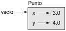
Figure 15.1: Diagrama de objeto.
La variable vacio se refiere a un objeto Punto, que contiene dos atributos. Cada atributo se refiere a un número de coma flotante.
Puedes leer el valor de un atributo utilizando la misma sintaxis:
>>> vacio.y
4.0
>>> x = vacio.x
>>> x
3.0
La expresión vacio.x significa “Ve al objeto al cual vacio se refiere y obten el valor de x.” En este ejemplo, asignamos ese valor a una variable con nombre x. No hay conflicto entre la variable x y el atributo x.
Puedes utilizar la notación de punto como parte de una expresión. Por ejemplo:
>>> '(%g, %g)' % (vacio.x, vacio.y)
'(3.0, 4.0)'
>>> distancia = math.sqrt(vacio.x**2 + vacio.y**2)
>>> distancia
5.0
Puedes pasar una instancia como argumento en la manera usual. Por ejemplo:
def imprimir_punto(p):
print('(%g, %g)' % (p.x, p.y))
imprimir_punto toma un punto como argumento y lo muestra en
notación matemática. Para invocarla, puedes pasar a vacio como
argumento:
>>> imprimir_punto(vacio)
(3.0, 4.0)
Dentro de la función, p es un alias para vacio, por tanto si la función modifica a p, vacio cambia.
Como ejercicio, escribe una función llamada distancia_entre_puntos
que tome dos Puntos como argumentos y devuelva la distancia entre
ellos.
15.3 Rectángulos
A veces es obvio cuáles deberían ser los atributos de un objeto, pero otras veces tienes que tomar decisiones. Por ejemplo, imagina que estás diseñando una clase para representar rectángulos. ¿Qué atributos utilizarías para especificar la ubicación y tamaño de un rectángulo? Puedes ignorar el ángulo; para mantener las cosas simples, supongamos que el rectángulo es vertical u horizontal.
Hay al menos dos posibilidades:
- Podrías especificar una esquina del rectángulo (o el centro), la anchura y la altura.
- Podrías especificar dos esquinas opuestas.
En este punto es difícil decir si una alternativa es mejor que la otra, así que implementaremos la primera, solo como ejemplo.
Esta es la definición de la clase:
class Rectangulo:
"""Representa un rectángulo.
atributos: anchura, altura, esquina.
"""
El docstring contiene una lista de los atributos: anchura y altura son números; esquina es un objeto Punto que especifica la esquina inferior izquierda.
Para representar un rectángulo, tienes que instanciar un objeto Rectángulo y asignar valores a los atributos:
caja = Rectangulo() caja.anchura = 100.0 caja.altura = 200.0 caja.esquina = Punto() caja.esquina.x = 0.0 caja.esquina.y = 0.0
La expresión caja.esquina.x significa “Ve al objeto al cual caja se refiere y seleccionea el atributo con nombre esquina; luego ve a ese objeto y selecciona el atributo con nombre x.”
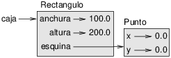
Figure 15.2: Diagrama de objeto.
La Figura 15.2 muestra el estado de este objeto. Un objeto que es un atributo de otro objeto está incrustado.
15.4 Instancias como valores de retorno
Las funciones pueden devolver instancias. Por ejemplo, encontrar_centro
toma un Rectangulo como argumento y devuelve un Punto
que contiene las coordenadas del centro del Rectangulo:
def encontrar_centro(rect):
p = Punto()
p.x = rect.esquina.x + rect.anchura/2
p.y = rect.esquina.y + rect.altura/2
return p
Aquí hay un ejemplo que pasa a caja como argumento y asigna el Punto resultante a centro:
>>> centro = entontrar_centro(caja)
>>> imprimir_punto(centro)
(50, 100)
15.5 Los objetos son mutables
Puedes cambiar el estado de un objeto haciendo una asignación a uno de sus atributos. Por ejemplo, para cambiar el tamaño de un rectángulo sin cambiar su posición, puedes modificar los valores de anchura y altura:
caja.anchura = caja.anchura + 50 caja.altura = caja.altura + 100
Puedes también escribir funciones que modifiquen objetos. Por ejemplo,
crecer_rectangulo toma un objeto Rectángulo y dos números,
d_anchura y d_altura, y suma los números a la
anchura y altura del rectángulo:
def crecer_rectangulo(rect, d_anchura, d_altura):
rect.anchura += d_anchura
rect.altura += d_altura
Aquí hay un ejemplo que demuestra el efecto:
>>> caja.anchura, caja.altura
(150.0, 300.0)
>>> crecer_rectangulo(caja, 50, 100)
>>> caja.anchura, caja.altura
(200.0, 400.0)
Dentro de la función, rect es un alias para caja, por tanto cuando la función modifica a rect, caja cambia.
Como ejercicio, escribe una función con nombre mover_rectangulo que tome
un Rectángulo y dos números con nombre dx y dy. Debería
cambiar la ubicación del rectángulo sumando dx
a la coordenada x de esquina y sumando dy
a la coordenada y de esquina.
15.6 Copiar
Los alias pueden hacer que un programa sea difícil de leer porque los cambios en un lugar podrían tener efectos inesperados en otro lugar. Es difícil hacer un seguimiento de todas las variables que podrían referirse a un objeto dado.
Copiar un objeto es a menudo una alternativa a los alias. El módulo copy contiene una función llamada copy que puede duplicar cualquier objeto:
>>> p1 = Punto() >>> p1.x = 3.0 >>> p1.y = 4.0 >>> import copy >>> p2 = copy.copy(p1)
p1 y p2 contienen los mismos datos, pero no son el mismo Punto.
>>> imprimir_punto(p1)
(3, 4)
>>> imprimir_punto(p2)
(3, 4)
>>> p1 is p2
False
>>> p1 == p2
False
El operador is indica que p1 y p2 no son el mismo objeto, que es lo que esperábamos. Sin embargo, tal vez hayas esperado que == entregue True porque estos puntos contienen los mismos datos. En ese caso, te decepcionará aprender que, para instancias, el comportamiento por defecto del operador == es el mismo que el operador is: verifica identidad de objeto, no equivalencia de objeto. Eso ocurre debido a que para tipos definidos por el programador, Python no sabe qué debería considerarse equivalente. Al menos, no todavía.
Si usas copy.copy para duplicar un Rectángulo, encontrarás que copia el objeto Rectángulo pero no el Punto incrustado.
>>> caja2 = copy.copy(caja)
>>> caja2 is caja
False
>>> caja2.esquina is caja.esquina
True
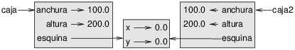
Figure 15.3: Diagrama de objeto.
La Figura 15.3 muestra cómo se ve el diagrama de objeto. Esta operación se llama copia superficial porque copia al objeto y cualquier referencia que contenga, pero no los objetos incrustados.
Para la mayoría de las aplicaciones, esto no es lo que quieres. En este ejemplo,
invocar a crecer_rectangulo en uno de los Rectángulos no
afectaría al otro, ¡pero invocar a mover_rectangulo en cualquiera
afectaría a ambos! Este comportamiento es confuso y propenso a errores.
Afortunadamente, el módulo copy proporciona un método con nombre deepcopy que copia no solo el objeto sino también los objetos a los cuales este se refiere, y los objetos a los cuales estos se refieren, y así sucesivamente. No te sorprenderá saber que esta operación se llama copia profunda.
>>> caja3 = copy.deepcopy(caja)
>>> caja3 is caja
False
>>> caja3.esquina is caja.esquina
False
caja3 y caja son objetos completamente separados.
Como ejercicio, escribe una versión de mover_rectangulo que cree y
devuelva un Rectángulo nuevo en lugar de modificar el antiguo.
15.7 Depuración
Cuando comienzas a trabajar con objetos, es probable que encuentres algunas excepciones nuevas. Si intentas acceder a un atributo que no existe, obtienes un AttributeError:
>>> p = Punto()
>>> p.x = 3
>>> p.y = 4
>>> p.z
AttributeError: Point instance has no attribute 'z'
Si no sabes bien de qué tipo es un objeto, puedes consultar:
>>> type(p)
<class '__main__.Punto'>
Puedes también utilizar isinstance para verificar si un objeto es una instancia de una clase:
>>> isinstance(p, Punto)
True
Si no sabes bien si un objeto tiene un atributo en particular, puedes utilizar la función incorporada hasattr:
>>> hasattr(p, 'x')
True
>>> hasattr(p, 'z')
False
El primer argumento puede ser cualquier objeto; el segundo argumento es una cadena que contiene el nombre del atributo.
Puedes también utilizar una sentencia try para ver si el objeto tiene los atributos que necesitas:
try:
x = p.x
except AttributeError:
x = 0
Este enfoque puede hacer más fácil escribir funciones que trabajen con tipos diferentes; se verá más sobre este tema en la Sección 17.9.
15.8 Glosario
- clase:
- Un tipo definido por el programador. Una definición de clase crea un nuevo objeto de clase.
- objeto de clase:
- Un objeto que contiene información acerca del tipo definido por el programador. El objeto de clase se puede utilizar para crear instancias del tipo.
- instancia:
- Un objeto que pertenece a una clase.
- instanciar:
- Crear un nuevo objeto.
- atributo:
- Uno de los valores con nombre que están asociados a un objeto.
- objeto incrustado:
- Un objeto que se almacena como atributo de otro objeto.
- copia superficial:
- Copiar los contenidos de un objeto, incluyendo cualquier referencia a los objetos incrustados; implementada por la función copy del módulo copy.
- copia profunda:
- Copiar los contenidos de un objeto así como cualquier objeto incrustado, y cualquier objeto incrustado en estos, y así sucesivamente; implementado por la función deepcopy del módulo copy.
- diagrama de objeto:
- Un diagrama que muestra objetos, sus atributos y los valores de los atributos.
15.9 Ejercicios
Escribe una definición de una clase con nombre Circulo cuyos atributos sean centro y radio, donde centro es un objeto Punto y radio es un número.
Instancia un objeto Círculo que represente un círculo con su centro en (150, 100) y radio 75.
Escribe una función con nombre punto_en_circulo que tome un Círculo y
un Punto, y devuelva True si el Punto está dentro o en el borde del
círculo.
Escribe una función con nombre rect_en_circulo que tome un Círculo y un
Rectángulo y devuelva True si el Rectángulo está completamente dentro o en el borde
del círculo.
Escribe una función con nombre rect_circ_traslapan que tome un Círculo
y un Rectángulo y devuelva True si alguna de las esquinas del Rectángulo cae
dentro del círculo. O como versión más desafiante, que devuelva True si
cualquier parte del Rectángulo cae dentro del círculo.
Solución: http://thinkpython.com/code/Circle.py.
Escribe una función llamada dibujar_rectangulo que tome un objeto Turtle
y un Rectángulo y utilice al Turtle para dibujar el Rectángulo. Ver
Capítulo 4 para ejemplos que utilizan objetos Turtle.
Escribe una función llamada dibujar_circulo que tome un Turtle y
un Círculo y dibuje el Círculo.
Solución: http://thinkpython.com/code/draw.py.
Chapter 16 Clases y funciones
Ahora que sabemos cómo crear tipos nuevos, el siguiente paso es escribir funciones que tomen objetos definidos por el programador como parámetros y los devuelvan como resultados. En este capítulo presento también el “estilo de programación funcional” y dos nuevos planes de desarrollo de programas.
Los ejemplos de código de este capítulo están disponibles en http://thinkpython.com/code/Time1.py. Las soluciones a los ejercicios están en http://thinkpython.com/code/Time1_soln.py.
16.1 Tiempo
Como otro ejemplo de tipo definido por el programador, definiremos una clase llamada Tiempo que registre la hora del día. La definición de la clase se ve así:
class Tiempo:
"""Representa la hora del día.
atributos: hora, minuto, segundo
"""
Podemos crear un nuevo objeto Tiempo y asignar atributos para horas, minutos y segundos:
tiempo = Tiempo() tiempo.hora = 11 tiempo.minuto = 59 tiempo.segundo = 30
El diagrama de estado para el objeto Tiempo se ve como en la Figura 16.1.
Como ejercicio, escribe una función llamada imprimir_tiempo que tome un
objeto Tiempo y lo imrpima en la forma hora:minuto:segundo.
Pista: la secuencia de formato '%.2d' imprime un entero utilizando
al menos dos dígitos, incluyendo un cero a la izquierda si es necesario.
Escribe una función booleana llamada esta_despues que
tome dos objetos Tiempo, t1 y t2, y
devuelva True si t1 va cronológicamente después de t2 y
False en caso contrario. Desafío: no utilices una sentencia if.
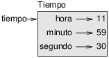
Figure 16.1: Diagrama de objeto.
16.2 Funciones puras
En las siguientes secciones, escribiremos dos funciones que suman valores de tiempo. Estas demuestran dos tipos de funciones: funciones puras y modificadores. Demuestran también un plan de desarrollo que yo llamo prototipo y parche, que es una manera de abordar un problema complejo comenzando con un prototipo simple y lidiando con las complicaciones de manera incremental.
Aquí hay un prototipo simple de sumar_tiempo:
def sumar_tiempo(t1, t2):
suma = Tiempo()
suma.hora = t1.hora + t2.hora
suma.minuto = t1.minuto + t2.minuto
suma.segundo = t1.segundo + t2.segundo
return suma
La función crea un nuevo objeto Tiempo, inicializa sus atributos y devuelve una referencia al nuevo objeto. Esto se llama una función pura porque no modifica ninguno de los objetos que se le pasan como argumentos y no tiene un efecto, como mostrar un valor u obtener entrada del usuario, además de devolver un valor.
Para probar esta función, crearé dos objetos Tiempo: comienzo contiene el tiempo de inicio de una película, como Monty Python and the Holy Grail, y duracion contiene el tiempo de duración de la película, que es una hora 35 minutos.
sumar_tiempo averigua cuándo terminará la película.
>>> comienzo = Tiempo()
>>> comienzo.hora = 9
>>> comienzo.minuto = 45
>>> comienzo.segundo = 0
>>> duracion = Tiempo()
>>> duracion.hora = 1
>>> duracion.minuto = 35
>>> duracion.segundo = 0
>>> termino = sumar_tiempo(comienzo, duracion)
>>> imprimir_tiempo(termino)
10:80:00
El resultado, 10:80:00, tal vez no sea lo que esperas. El problema es que esta función no lidia con los casos donde el número de segundos o minutos suma más de sesenta. Cuando eso ocurre, tenemos que “acarrear” los segundos extra a la columna de minutos o los minutos extra a la columna de horas.
Aquí hay una versión mejorada:
def sumar_tiempo(t1, t2):
suma = Tiempo()
suma.hora = t1.hora + t2.hora
suma.minuto = t1.minuto + t2.minuto
suma.segundo = t1.segundo + t2.segundo
if suma.segundo >= 60:
suma.segundo -= 60
suma.minuto += 1
if suma.minuto >= 60:
suma.minuto -= 60
suma.hora += 1
return suma
Aunque esta función es correcta, está comenzando a ponerse grande. Después veremos una alternativa más corta.
16.3 Modificadores
A veces es útil para una función modificar los objetos que obtiene como parámetros. En ese caso, los cambios son visibles para la llamadora. Las funciones que trabajan de esta manera se llaman modificadores.
aumentar, que agrega un número dado de segundos al objeto Tiempo, se puede escribir de manera natural como modificador. Aquí hay un borrador:
def aumentar(tiempo, segundos):
tiempo.segundo += segundos
if tiempo.segundo >= 60:
tiempo.segundo -= 60
tiempo.minuto += 1
if tiempo.minuto >= 60:
tiempo.minuto -= 60
tiempo.hora += 1
La primera línea realiza la operación básica; el resto se ocupa de los casos especiales que vimos antes.
¿Esta función es correcta? ¿Qué ocurre si segundos es mucho más grande que sesenta?
En ese caso, no es suficiente acarrear una vez; tenemos que seguir haciéndolo hasta que tiempo.segundo sea menor que sesenta. Una solución es reemplazar las sentencias if con sentencias while. Eso haría que la función sea correcta, pero no muy eficiente. Como ejercicio, escribe una versión correcta de aumentar que no contenga ningún ciclo.
Cualquier cosa que se pueda hacer con modificadores también se puede hacer con funciones puras. De hecho, algunos lenguajes de programación solo permiten funciones puras. Existe evidencia de que los programas que utilizan funciones puras son más rápidos de desarrollar y menos propensos a errores que los programas que utilizan modificadores. Sin embargo, los modificadores son convenientes en ocasiones, y los programas funcionales tienden a ser menos eficientes.
En general, recomiendo que escribas funciones puras siempre que sea razonable y recurras a los modificadores solo si hay una ventaja convincente. Este enfoque podría ser llamado estilo de programación funcional.
Como ejercicio, escribe una versión “pura” de aumentar que cree y devuelva un nuevo objeto Tiempo en lugar de modificar el parámetro.
16.4 Prototipos versus planificación
El plan de desarrollo que estoy demostrando se llama “prototipo y parche”. Para cada función, escribí un prototipo que realiza los cálculos básicos y luego lo probé, parchando errores en el camino.
Este enfoque puede ser efectivo, especialmente si todavía no tienes un entendimiento profundo del problema. Sin embargo, las correcciones incrementales pueden generar código innecesariamente complicado —dado que lidia con muchos casos especiales— y no confiable —dado que es difícil saber si has encontrado todos los errores.
Una alternativa es el desarrollo diseñado, en el cual la visión de alto nivel del problema puede hacer mucho más fácil la programación. En este caso, la visión es que un objeto Tiempo es en realidad un número de tres dígitos en base 60 (ver http://en.wikipedia.org/wiki/Sexagesimal). El atributo segundo es la “columna de unidades”, el atributo minuto es la “columna de sesentenas” y el atributo hora es la “columna de centenas de treinta y seis”.
Cuando escribimos sumar_tiempo y aumentar, efectivamente estábamos
haciendo suma en base 60, motivo por el cual tuvimos que acarrear de una
columna a la siguiente.
Esta observación sugiere otro enfoque al problema completo: podemos convertir objetos Tiempo a enteros y tomar ventaja del hecho de que el computador sabe cómo hacer aritmética con enteros.
Aquí hay una función que convierte Tiempos a enteros:
def tiempo_a_int(tiempo):
minutos = tiempo.hora * 60 + tiempo.minuto
segundos = minutos * 60 + tiempo.segundo
return segundos
Y aquí hay una función que convierte un entero a Tiempo (recuerda que divmod divide el primer argumento por el segundo y devuelve el cociente y el resto como una tupla).
def int_a_tiempo(segundos):
tiempo = Tiempo()
minutos, tiempo.segundo = divmod(segundos, 60)
tiempo.hora, tiempo.minuto = divmod(minutos, 60)
return tiempo
Quizás tengas que pensar un poco, y ejecutar algunas pruebas, para convencerte
de que estas funciones son correctas. Una manera de probarlas es
verificar que tiempo_a_int(int_a_tiempo(x)) == x para muchos valores de
x. Este es un ejemplo de prueba de consistencia.
Una vez que te convenzas de que son correctas, puedes utilizarlas para
reescribir sumar_tiempo:
def sumar_tiempo(t1, t2):
segundos = tiempo_a_int(t1) + tiempo_a_int(t2)
return int_a_tiempo(segundos)
Esta versión es más corta que la original, y más fácil de verificar. Como
ejercicio, reescribe aumentar utilizando tiempo_a_int e
int_a_tiempo.
En algunas formas, convertir de base 60 a base 10 y viceversa es más difícil que solo tratar con tiempos. La conversión de base es más abstracta; nuestra intuición para lidiar con valores de tiempo es mejor.
Sin embargo, si tenemos la visión para tratar tiempos como números en base 60 y nos
dedicamos a escribir las funciones de conversión (tiempo_a_int
e int_a_tiempo), obtenemos un programa más corto, más fácil de
leer y depurar, y más confiable.
Es más fácil también añadir características más adelante. Por ejemplo, imagina restar dos Tiempos para encontrar la duración entre ellos. El enfoque ingenuo sería implementar resta con préstamo. Utilizando funciones de conversión sería más fácil y con más probabilidades de ser correcto.
Irónicamente, a veces hacer que un programa sea más difícil (o más general) lo hace más fácil (porque hay menos casos especiales y menos oportunidades de error).
16.5 Depuración
Un objeto Tiempo está bien formado si los valores de minuto y segundo están entre 0 y 60 (incluyendo a 0 pero no a 60) y si hora es positivo. hora y minuto deberían ser valores enteros, pero podríamos permitir que segundo tenga una parte de fracción.
Requisitos como estos se llaman invariantes porque deberían ser siempre verdaderos. Visto de manera diferente, si no son verdaderos es porque algo salió mal.
Escribir código para verificar invariantes puede ayudar a detectar errores
y encontrar sus causas. Por ejemplo, quizás tengas una función
como tiempo_valido que tome un objeto Tiempo y devuelva
False si viola un invariante:
def tiempo_valido(tiempo):
if tiempo.hora < 0 or tiempo.minuto < 0 or tiempo.segundo < 0:
return False
if tiempo.minuto >= 60 or tiempo.segundo >= 60:
return False
return True
Al principio de cada función podrías verificar los argumentos para asegurarte de que son válidos:
def sumar_tiempo(t1, t2):
if not tiempo_valido(t1) or not tiempo_valido(t2):
raise ValueError('objeto Tiempo no válido en sumar_tiempo')
segundos = tiempo_a_int(t1) + tiempo_a_int(t2)
return int_a_tiempo(segundos)
O bien podrías utilizar una sentencia assert, que verifica un invariante dado y levanta una excepción si este falla:
def sumar_tiempo(t1, t2):
assert tiempo_valido(t1) and tiempo_valido(t2)
segundos = tiempo_a_int(t1) + tiempo_a_int(t2)
return int_a_tiempo(segundos)
Las sentencias assert son útiles porque distinguen código que funciona en condiciones normales de código que verifica errores.
16.6 Glosario
- prototipo y parche:
- Un plan de desarrollo que involucra escribir un borrador de un programa, probarlo y corregir errores a medida que se encuentran.
- desarrollo diseñado:
- Un plan de desarrollo que involucra una visión de alto nivel del problema y más planificación que el desarrollo incremental o el desarrollo de prototipo.
- función pura:
- Una función que no modifica ninguno de los objetos que recibe como argumentos. La mayoría de las funciones puras son productivas.
- modificador:
- Una función que cambia uno o más de los objetos que recibe como argumentos. La mayoría de los modificadores son funciones nulas, es decir, devuelven None.
- estilo de programación funcional:
- Un estilo de diseño de programa en el cual la mayoría de las funciones son puras.
- invariante:
- Una condición que debería ser siempre verdadera durante la ejecución de un programa.
- sentencia assert:
- Una sentencia que verifica una condición y levanta una excepción si esta falla.
16.7 Ejercicios
Los ejemplos de código de este capítulo están disponibles en http://thinkpython.com/code/Time1.py; las soluciones a los ejercicios están disponibles en http://thinkpython.com/code/Time1_soln.py.
Escribe una función llamada mul_tiempo que tome un objeto Tiempo
y un número y devuelva un nuevo objeto Tiempo que contenga
el producto del Tiempo original y el número.
Luego, utiliza mul_tiempo para escribir una función que tome un objeto
Tiempo que represente el tiempo de término en una carrera, y un número
que represente la distancia, y devuelva un objeto Tiempo que represente
el ritmo de carrera promedio (tiempo por cada milla).
El módulo datetime proporciona objetos time que son similares a los objetos Tiempo de este capítulo, pero proporcionan un abundante conjunto de métodos y operadores. Lee la documentación en http://docs.python.org/3/library/datetime.html.
- Utiliza el módulo datetime para escribir un programa que obtenga la fecha actual e imprima el día de la semana.
- Escribe un programa que tome un día de nacimiento como entrada e imprima la edad del usuario y el número de días, horas y segundos que faltan para el siguiente cumpleaños.
- Para dos personas nacidas en días diferentes, hay un día en que una tiene el doble de edad que la otra. Ese es su Día Doble. Escribe un programa que tome dos días de nacimiento y calcule su Día Doble.
- Para ponerlo un poco más desafiante, escribe una versión más general que calcule el día en que una persona es n veces mayor que la otra.
Solución: http://thinkpython.com/code/double.py
Chapter 17 Clases y métodos
Aunque estamos utilizando algunas de las características orientadas a objetos de Python, los programas de los últimos dos capítulos no están realmente orientados a objetos debido a que no representan las relaciones entre los tipos definidos por el programador y las funciones que operan en estos. El siguiente paso es transformar esas funciones en métodos que hagan explícitas las relaciones.
Los ejemplos de código de este capítulo están disponibles en http://thinkpython.com/code/Time2.py, y las soluciones a los ejercicios están en http://thinkpython.com/code/Point2_soln.py.
17.1 Características orientadas a objetos
Python es un lenguaje de programación orientado a objetos, lo cual significa que proporciona características que admiten programación orientada a objetos, que tiene las siguientes características que la definen:
- Los programas incluyen definiciones de clases y métodos.
- La mayoría de los cálculos están expresados en términos de operaciones sobre obtetos.
- Los objetos a menudo representan cosas del mundo real, y los métodos a menudo corresponden a las maneras en las cuales interactúan las cosas del mundo real.
Por ejemplo, la clase Tiempo definida en el Capítulo 16 corresponde a la manera en que las personas registran la hora del día, y las funciones que definimos corresponden a los tipos de cosas que las personas hacen con las horas del día. De manera similar, las clases Punto y Rectángulo en el Capítulo 15 corresponden a los conceptos matemáticos de punto y rectángulo.
Hasta aquí, no hemos tomado ventaja de las características que Python proporciona para admitir programación orientada a objetos. Estas características no son estrictamente necesarias: la mayoría de estas proporciona una sintaxis alternativa para cosas que ya hemos hecho. Sin embargo, en muchos casos, la alternativa es más concisa y comunica la estructura del programa de manera más precisa.
Por ejemplo, en Time1.py no hay conexión obvia entre la definición de clase y las definiciones de funciones que siguen. Con algo de revisión, es evidente que cada función toma al menos un objeto Tiempo como argumento.
Esta observación es la motivación para los métodos; un método es una función que está asociada a una clase en particular. Hemos visto métodos para cadenas, listas, diccionarios y tuplas. En este capítulo, definiremos métodos para tipos definidos por el programador.
Los métodos son semánticamente lo mismo que las funciones, pero hay dos diferencias sintácticas:
- Los métodos se definen dentro de una definición de clase para hacer explícita la relación entre la clase y el método.
- La sintaxis para invocar a un método es diferente a la sintaxis para llamar a una función.
En las siguientes secciones, tomaremos las funciones de los dos capítulos anteriores y los transformaremos en métodos. Esta transformación es puramente mecánica: puedes hacerla siguiendo una secuencia de pasos. Si te acostumbras a convertir de una forma a la otra, podrás escoger la mejor forma para lo que sea que estés haciendo.
17.2 Imprimir objetos
En el Capítulo 16, definimos una clase con nombre
Tiempo y en la Sección 16.1, escribiste
una función con nombre imprimir_tiempo:
class Tiempo:
"""Representa la hora del día."""
def imprimir_tiempo(tiempo):
print('%.2d:%.2d:%.2d' % (tiempo.hora, tiempo.minuto, tiempo.segundo))
Para llamar a esta función, tienes que pasar el objeto Tiempo como argumento:
>>> comienzo = Tiempo()
>>> comienzo.hora = 9
>>> comienzo.minuto = 45
>>> comienzo.segundo = 00
>>> imprimir_tiempo(comienzo)
09:45:00
Para convertir imprimir_tiempo a método, todo lo que tenemos que hacer es
mover la definición de función al interior de la definición de clase. Nota
el cambio en la sangría.
class Tiempo:
def imprimir_tiempo(tiempo):
print('%.2d:%.2d:%.2d' % (tiempo.hora, tiempo.minuto, tiempo.segundo))
Ahora hay dos maneras de llamar a imprimir_tiempo. La primera manera
(y menos común) es utilizar sintaxis de función:
>>> Tiempo.imprimir_tiempo(comienzo)
09:45:00
En este uso de notación de punto, Tiempo es el nombre de la clase
e imprimir_tiempo es el nombre del método. comienzo se
pasa como parámetro.
La segunda manera (y más concisa) es utilizar la sintaxis de método:
>>> comienzo.imprimir_tiempo()
09:45:00
En este uso de notación de punto, imprimir_tiempo es el nombre del
método (nuevamente) y comienzo es el objeto en el cual se invoca
al método, el cual se llama sujeto. Tal como el
sujeto de una oración es de lo que trata la oración, el sujeto
de una invocación a método es de lo que trata el método.
Dentro del método, el sujeto se asigna al primer parámetro, por tanto en este caso comienzo se asigna a tiempo.
Por convención, el primer parámetro de un método se
llama self, por lo cual sería más común escribir
imprimir_tiempo así:
class Tiempo:
def imprimir_tiempo(self):
print('%.2d:%.2d:%.2d' % (self.hora, self.minuto, self.segundo))
La razón para esta convención es una metáfora implícita:
- La sintaxis para una llamada a función,
imprimir_tiempo(comienzo), sugiere que la función es el agente activo. Dice algo como, “¡Oyeimprimir_tiempo! Aquí hay un objeto para que imprimas.” - En la programación orientada a objetos, los objetos son los agentes
activos. Una invocación a método como
comienzo.imprimir_tiempo()dice “¡Oye comienzo! Por favor imprímete.”
Este cambio de perspectiva quizás sea más cortés, pero su utilidad no es obvia. En los ejemplos que hemos visto hasta ahora, podría no serlo. Sin embargo, a veces cambiar de funciones a objetos de manera responsable hace posible escribir funciones (o métodos) más versátiles, y hace más fácil mantener y reutilizar código.
Como ejercicio, reescribe tiempo_a_int (de la
Sección 16.4) como método. Quizás te tientes a
reescribir int_a_tiempo como método también, pero eso realmente
no tiene sentido porque no habría objeto donde
invocarlo.
17.3 Otro ejemplo
Aquí hay una versión de aumentar (de la Sección 16.3) reescrita como método:
# dentro de class Tiempo:
def aumentar(self, segundos):
segundos += self.tiempo_a_int()
return int_a_tiempo(segundos)
Esta versión supone que tiempo_a_int está escrito
como método. Además, notar que
esta es una función pura, no un modificador.
Así es como invocarías a aumentar:
>>> comienzo.imprimir_tiempo()
09:45:00
>>> termino = comienzo.aumentar(1337)
>>> termino.imprimir_tiempo()
10:07:17
El sujeto, comienzo, se asigna al primer parámetro, self. El argumento, 1337, se asigna al segundo parámetro, segundos.
Este mecanismo puede ser confuso, especialmente si cometes un error. Por ejemplo, si invocas a aumentar con dos argumentos, obtienes:
>>> termino = comienzo.aumentar(1337, 460)
TypeError: aumentar() takes 2 positional arguments but 3 were given
El mensaje de error es confuso al inicio, debido a que hay solo dos argumentos en paréntesis. Sin embargo, el sujeto también se considera como argumento, por lo cual todos juntos son tres.
Por cierto, un argumento posicional es un argumento que no tiene un nombre de parámetro, es decir, no es un argumento de palabra clave. En esta llamada a función:
dibujar(loro, jaula, muerto=True)
loro y jaula son posicionales, y muerto es un argumento de palabra clave.
17.4 Un ejemplo más complicado
Reescribir esta_despues (de la Sección 16.1) es un poco
más complicado porque toma dos objetos Tiempo como parámetros. En
este caso, lo convencional es ponerle el nombre self al primer parámetro
y other al segundo parámetro:
# dentro de class Tiempo:
def esta_despues(self, other):
return self.tiempo_a_int() > other.tiempo_a_int()
Para utilizar este método, tienes que invocarlo en un objeto y pasar el otro como argumento:
>>> termino.esta_despues(comienzo)
True
Lo bonito de esta sintaxis es que se lee casi textual: “¿término está después de comienzo?”
17.5 El método init
El método init (abreviatura de “initialization”) es
un método especial que se invoca cuando se instancia un objeto.
Su nombre completo es __init__ (dos caracteres de guión bajo,
seguido de init, y luego dos guiones bajos más). Un
método init para la clase Tiempo se vería así:
# dentro de class Tiempo:
def __init__(self, hora=0, minuto=0, segundo=0):
self.hora = hora
self.minuto = minuto
self.segundo = segundo
Es común que los parámetros de __init__
tengan los mismos nombres que los atributos. La sentencia
self.hora = hora
almacena el valor del parámetro hora como un atributo de self.
Los parámetros son opcionales, por lo cual si llamas a Tiempo sin argumentos, obtienes los valores por defecto.
>>> tiempo = Tiempo()
>>> tiempo.imprimir_tiempo()
00:00:00
Si entregas un argumento, anula a hora:
>>> tiempo = Tiempo(9)
>>> tiempo.imprimir_tiempo()
09:00:00
Si entregas dos argumentos, anulan a hora y minuto.
>>> tiempo = Tiempo(9, 45)
>>> tiempo.imprimir_tiempo()
09:45:00
Y si entregas tres argumentos, anulan a los tres valores por defecto.
Como ejercicio, escribe un método init para la clase Punto que tome a x e y como argumentos opcionales y los asigne a los atributos correspondientes.
17.6 El método __str__
__str__ es un método especial, al igual que __init__,
que se supone que devuelve una representación de un objeto en forma de cadena.
Por ejemplo, aquí hay un método str para los objetos Tiempo:
# dentro de class Tiempo:
def __str__(self):
return '%.2d:%.2d:%.2d' % (self.hora, self.minuto, self.segundo)
Cuando utilizas print en un objeto, Python invoca al método str:
>>> tiempo = Tiempo(9, 45)
>>> print(tiempo)
09:45:00
Cuando escribo una clase nueva, casi siempre comienzo escribiendo a
__init__, que hace más fácil instanciar objetos, y
__str__, que es útil para depurar.
Como ejercicio, escribe un método str para la clase Punto. Crea un objeto Punto e imprímelo.
17.7 Sobrecarga de operador
Definiendo otros métodos especiales, puedes especificar el comportamiento
de operadores en tipos definidos por el programador. Por ejemplo, si defines
un método con nombre __add__ para la clase Tiempo, puedes utilizar el
operador + en objetos Tiempo.
Así es como podría verse la definición:
# dentro de class Tiempo:
def __add__(self, other):
segundos = self.tiempo_a_int() + other.tiempo_a_int()
return int_a_tiempo(segundos)
Y así es como podrías utilizarlo:
>>> comienzo = Tiempo(9, 45)
>>> duracion = Tiempo(1, 35)
>>> print(comienzo + duracion)
11:20:00
Cuando aplicas el operador + a objetos Tiempo, Python invoca a
__add__. Cuando imprimes el resultado, Python invoca a
__str__. ¡Entonces están ocurriendo muchas cosas entre bastidores!
Cambiar el comportamiento de un operador para que funcione con
tipos definidos por el programador se llama sobrecarga de operador. Para cada
operador en Python hay un método especial, como
__add__, que le corresponde. Para más detalles, ver
http://docs.python.org/3/reference/datamodel.html#specialnames.
Como ejercicio, escribe un método add para la clase Punto.
17.8 Despacho basado en tipo
En la sección anterior sumamos dos objetos Tiempo, pero quizás
quieras también sumar un entero a un objeto Tiempo. Lo
siguiente es una versión de __add__
que verifica el tipo de other e invoca a
sumar_tiempo o aumentar:
# dentro de class Tiempo:
def __add__(self, other):
if isinstance(other, Tiempo):
return self.sumar_tiempo(other)
else:
return self.aumentar(other)
def sumar_tiempo(self, other):
segundos = self.tiempo_a_int() + other.tiempo_a_int()
return int_a_tiempo(segundos)
def aumentar(self, segundos):
segundos += self.tiempo_a_int()
return int_a_tiempo(segundos)
La función incorporada isinstance toma un valor y un objeto de clase, y devuelve True si el valor es una instancia de la clase.
Si other es un objeto Tiempo, __add__ invoca a
sumar_tiempo. En caso contrario, supone que el parámetro
es un número e invoca a aumentar. Esta operación se
llama despacho basado en tipo porque despacha el
cálculo a diferentes métodos basándose en el tipo de los
argumentos.
Aquí hay ejemplos que utilizan el operador + con tipos diferentes:
>>> comienzo = Tiempo(9, 45)
>>> duracion = Tiempo(1, 35)
>>> print(comienzo + duracion)
11:20:00
>>> print(comienzo + 1337)
10:07:17
Desafortunadamente, esta implementación de la suma no es conmutativa. Si el entero es el primer operando, obtienes
>>> print(1337 + comienzo)
TypeError: unsupported operand type(s) for +: 'int' and 'instance'
El problema es que, en lugar de pedirle al objeto Tiempo que sume un entero,
Python le está pidiendo a un entero que sume un objeto Tiempo, y no sabe
cómo hacerlo. Sin embargo, hay una solución ingeniosa para este problema: el
método especial __radd__, que significa “right-side add”.
Este método se invoca cuando un objeto Tiempo aparece en el lado derecho del
operador +. Esta es la definición:
# dentro de class Tiempo:
def __radd__(self, other):
return self.__add__(other)
Y así es como se utiliza:
>>> print(1337 + comienzo)
10:07:17
Como ejercicio, escribe un método add para Puntos que funcione tanto con un objeto Punto como con una tupla:
- Si el segundo operando es un Punto, el método debería devolver un Punto nuevo cuya coordenada x es la suma de las coordenadas x de los operandos, y lo mismo para las coordenadas y.
- Si el segundo operando es una tupla, el método debería sumar el primer elemento de la tupla a la coordenada x y el segundo elemento a la coordenada y, y devolver un Punto nuevo con el resultado.
17.9 Polimorfismo
El despacho basado en tipo es útil si es necesario, pero (afortunadamente) no siempre es necesario. A menudo puedes evitarlo escribiendo funciones que trabajen de manera correcta con argumentos de tipo diferente.
Muchas de las funciones que escribimos para cadenas también funcionan para otros tipos de secuencia. Por ejemplo, en la Sección 11.2 utilizamos histograma para contar el número de veces que aparece cada letra en una palabra.
def histograma(s):
d = dict()
for c in s:
if c not in d:
d[c] = 1
else:
d[c] = d[c] + 1
return d
Esta función también se puede utilizar con listas, tuplas e incluso diccionarios, siempre que los elementos de s sean hashables, por lo cual se pueden utilizar como claves en d.
>>> t = ['spam', 'egg', 'spam', 'spam', 'bacon', 'spam']
>>> histograma(t)
{'bacon': 1, 'egg': 1, 'spam': 4}
Las funciones que se pueden utilizar con varios tipos se llaman polimórficas. Los polimorfismos pueden facilitar la reutilización de código. Por ejemplo, la función incorporada sum, que suma los elementos de una secuencia, funciona siempre que los elementos de la secuencia admitan la suma.
Dado que los objetos Tiempo proporcionan un método add, funcionan con sum:
>>> t1 = Tiempo(7, 43)
>>> t2 = Tiempo(7, 41)
>>> t3 = Tiempo(7, 37)
>>> total = sum([t1, t2, t3])
>>> print(total)
23:01:00
En general, si todas las operaciones dentro de una función se pueden utilizar con un tipo dado, la función se puede utilizar con ese tipo.
Los mejores polimorfismos son los involuntarios, donde descubres que una función que ya escribiste se puede aplicar a un tipo para el cual nunca planeaste.
17.10 Depuración
Es legal añadir atributos a los objetos en cualquier punto de la ejecución de un programa, pero si tienes objetos con el mismo tipo que no tienen los mismos atributos, es fácil cometer errores. Se considera una buena idea inicializar todo lo de un atributo de un objeto en el método init.
Si no sabes bien si un objeto tiene un atributo en particular, puedes utilizar la función incorporada hasattr (ver Sección 15.7).
Otra manera de acceder a los atributos es la función incorporada vars, que toma un objeto y devuelve un diccionario que mapea de los nombres de atributos (como cadenas) a sus valores:
>>> p = Punto(3, 4)
>>> vars(p)
{'y': 4, 'x': 3}
Para fines de depuración, quizás encuentres útil tener esta función a mano:
def imprimir_atributos(obj):
for attr in vars(obj):
print(attr, getattr(obj, attr))
imprimir_atributos recorre el diccionario
e imprime cada nombre de atributo y su valor correspondiente.
La función incorporada getattr toma un objeto y un nombre de atributo (como cadena) y devuelve el valor del atributo.
17.11 Interfaz e implementación
Uno de los objetivos del diseño orientado a objetos es hacer que el software sea más mantenible, lo cual significa que puedes mantener el programa funcionando cuando otras partes del sistema cambian, y modificar el programa para cumplir con nuevos requisitos.
Un principio de diseño que ayuda a alcanzar ese objetivo es mantener las interfaces separadas de las implementaciones. Para objetos, eso significa que los métodos que proporciona una clase no deberían depender de la manera en que los atributos estén representados.
Por ejemplo, en este capítulo desarrollamos una clase que representa
una hora del día. Los métodos proporcionados por esta clase incluyen a
tiempo_a_int, esta_despues y sumar_tiempo.
Podríamos implementar esos métodos de muchas maneras. Los detalles de la implementación dependen de cómo representemos al tiempo. En este capítulo, los atributos de un objeto Tiempo son hora, minuto y segundo.
Como alternativa, podíamos reemplazar estos atributos con
un único entero que represente al número de segundos
desde la medianoche. Esta implementación haría que algunos métodos,
como esta_despues, sean más fáciles de escribir, pero haría que otros métodos sean
más difíciles.
Después de que implementes una clase nueva, quizás descubras una mejor implementación. Si otras partes del programa están utilizando tu clase, cambiar la interfaz podría consumir tiempo y ser propenso a errores.
Sin embargo, si diseñaste la interfaz con cuidado, puedes cambiar la implementación sin cambiar la interfaz, lo cual significa que otras partes del programa no tienen que cambiar.
17.12 Glosario
- lenguaje orientado a objetos:
- Un lenguaje que proporciona características, tales como métodos y tipos definidos por el programador, que facilitan la programación orientada a objetos.
- programación orientada a objetos:
- Un estilo de programación en el cual los datos y las operaciones que los manipulan se organizan en clases y métodos.
- método:
- Una función que se define dentro de una definición de clase y se invoca en instancias de esa clase.
- sujeto:
- El objeto en el cual se invoca a un método.
- argumento posicional:
- Un argumento que no incluye un nombre de parámetro, por tanto no es un argumento de palabra clave.
- sobrecarga de operador:
- Cambiar el comportamiento de un operador como + para que funcione con un tipo definido por el programador.
- despacho basado en tipo:
- Un patrón de programación que verifica el tipo de un operando e invoca a funciones diferentes para tipos diferentes.
- polimórfico:
- Dicho de una función que puede trabajar con más de un tipo.
17.13 Ejercicios
Descarga el código de este capítulo en
http://thinkpython.com/code/Time2.py. Cambia los atributos de
Time para que sea un único entero que represente los segundos desde
la media noche. Luego, modifica los métodos (y la función
int_to_time) para que funcionen con la nueva implementación. No
deberías tener que modificar el código de prueba en main. Cuando
termines, la salida debería ser la misma que antes. Solución:
http://thinkpython.com/code/Time2_soln.py.
Este ejercicio es un cuento con moraleja acerca de uno de los errores en Python más comunes y más difíciles de encontrar. Escribe una definición de una clase con nombre Kangaroo con los siguientes métodos:
- Un método
__init__que inicialice un atributo con nombrepouch_contents(contenido de la bolsa) a una lista vacía. - Un método con nombre
put_in_pouch(poner en la bolsa) que tome un objeto de cualquier tipo y lo añada apouch_contents. - Un método
__str__que devuelva una representación de cadena del objeto Kangaroo y los contenidos de la bolsa.
Prueba tu código creando dos objetos Kangaroo, asignándolos a variables con nombres kanga y roo, y luego añadiendo roo al contenido de la bolsa de kanga.
Descarga http://thinkpython.com/code/BadKangaroo.py. Contiene una solución al problema anterior con un gran y horrible error. Encuentra y corrije el error.
Si te estancas, puedes descargar http://thinkpython.com/code/GoodKangaroo.py, que explica el problema y demuestra una solución.
Chapter 18 Herencia
La característica de un lenguaje que se asocia con más frecuencia a la programación orientada a objetos es la herencia. La herencia es la posibilidad de definir una clase nueva que sea una versión modificada de una clase existente. En este capítulo demuestro la herencia utilizando clases que representan cartas de juego, barajas de cartas y manos de póker.
Si no juegas póker, puedes leer sobre este en http://en.wikipedia.org/wiki/Poker, pero no tienes que hacerlo; te diré lo que necesitas saber para los ejercicios.
Los ejemplos de código de este capítulo están disponibles en http://thinkpython.com/code/Card.py.
18.1 Objetos Carta
Hay cincuenta y dos cartas en una baraja, cada una perteneciente a uno de los cuatro palos y uno de los trece rangos. Los palos son Picas, Corazones, Diamantes y Tréboles (en orden descendiente en el bridge). Los rangos son As, 2, 3, 4, 5, 6, 7, 8, 9, 10, Jota, Reina y Rey. Dependiendo del juego que estés jugando, el valor de un As puede ser mayor al de un Rey o menor que 2.
Si queremos definir un objeto nuevo que represente una carta, los
atributos que debería tener son obvios: rango y
palo. Lo que no es obvio es qué tipo de atributos
deberían ser. Una posibilidad es utilizar cadenas que contengan palabras como
'Picas' para palos y 'Reina' para rangos. Un problema que
tiene esta implementación es que no sería fácil comparar cartas para
ver cuál tiene un rango o palo con más valor.
Una alternativa es utilizar enteros para codificar los rangos y palos. En este contexto, “codificar” significa que vamos a definir un mapeo entre números y palos, o entre números y rangos. Este tipo de codificación no está destinado a ser secreto (eso sería “cifrado”).
Por ejemplo, esta tabla muestra los palos y sus correspondientes códigos enteros:
| Picas | ↦ | 3 |
| Corazones | ↦ | 2 |
| Diamantes | ↦ | 1 |
| Tréboles | ↦ | 0 |
Este código facilita la comparación entre cartas: dado que los palos con mayor valor mapean a números mayores, podemos comparar palos comparando sus códigos.
El mapeo para los rangos es bastante obvio: cada uno de los rangos de número mapean al entero correspondiente, y para cartas de figura:
| Jota | ↦ | 11 |
| Reina | ↦ | 12 |
| Rey | ↦ | 13 |
Utilizo el símbolo ↦para que quede claro que estos mapeos no son parte del programa en Python. Son parte del diseño del programa, pero no aparecen explícitamente en el código.
La definición de clase para Carta se ve así:
class Carta:
"""Representa una carta de juego estándar."""
def __init__(self, palo=0, rango=2):
self.palo = palo
self.rango = rango
Como siempre, el método init toma un parámetro opcional para cada atributo. La carta por defecto es el 2 de Tréboles.
Para crear una Carta, llamas a Carta con el palo y el rango de la carta que quieres.
reina_de_diamantes = Carta(1, 12)
18.2 Atributos de clase
Para imprimir objetos Carta de una manera que las personas puedan leer fácilmente, necesitamos un mapeo de códigos enteros a los rangos y palos correspondientes. Una manera natural de hacer eso es con listas de cadenas. Podemos asignar estas listas a atributos de clase:
# dentro de class Carta:
nombres_de_palo = ['Tréboles', 'Diamantes', 'Corazones', 'Picas']
nombres_de_rango = [None, 'As', '2', '3', '4', '5', '6', '7',
'8', '9', '10', 'Jota', 'Reina', 'Rey']
def __str__(self):
return '%s de %s' % (Carta.nombres_de_rango[self.rango],
Carta.nombres_de_palo[self.palo])
Variables como nombres_de_palo y nombres_de_rango, que se
definen dentro de una clase pero fuera de cualquier método, se llaman
atributos de clase porque están asociados al objeto de clase
Carta.
Este término los distingue de variables como palo y rango, que se llaman atributos de instancia porque están asociados a una instancia particular.
Para ambos tipos de atributo, se accede utilizando notación de punto. Por
ejemplo, en __str__, self es un objeto Carta
y self.rango es su rango. De manera similar, Carta
es un objeto de clase y Carta.nombres_de_rango es una
lista de cadenas asociadas a la clase.
Cada carta tiene su propio palo y rango, pero hay
solo una copia de nombres_de_palo y nombres_de_rango.
Poniendo todos los elementos juntos, la expresión
Carta.nombres_de_rango[self.rango] significa “utiliza el atributo rango
del objeto self como índice dentro de la lista nombres_de_rango
de la clase Carta, y selecciona la cadena correspondiente.”
El primer elemento de nombres_de_rango es None porque no
hay carta con rango cero. Incluyendo a None como guardián de lugar,
obtenemos un mapeo con la genial propiedad de que el índice 2 mapea a la
cadena '2', y así sucesivamente. Para evitar este ajuste, podríamos haber
utilizado un diccionario en lugar de una lista.
Con los métodos que hemos visto hasta ahora, podemos crear e imprimir cartas:
>>> carta1 = Carta(2, 11)
>>> print(carta1)
Jota de Corazones
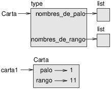
Figure 18.1: Diagrama de objeto.
La Figura 18.1 es un diagrama del objeto de clase Carta y
una instancia de Carta. Carta es un objeto de clase; su tipo es
type. carta1 es una instancia de Carta, por lo cual su tipo es
Carta. Para ahorrar espacio, no dibujé los contenidos de
nombres_de_palo y nombres_de_rango.
18.3 Comparar cartas
Para tipos incorporados, hay operadores relacionales
(<, >, ==, etc.)
que comparan
valores y determinan si uno es mayor, menor o igual al
otro. Para tipos definidos por el programador, podemos anular el comportamiento de
los operadores incorporados con un método cuyo nombre es
__lt__, que significa “menor que” (less than).
__lt__ toma dos parámetros, self y other,
y devuelve True si self es estrictamente menor que other.
El orden correcto para las cartas no es obvio. Por ejemplo, ¿cuál es mejor, el 3 de Tréboles o el 2 de Diamantes? Uno tiene un rango mayor, pero el otro tiene un palo con más valor. Para comparar cartas, tienes que decidir si el rango o el palo es más importante.
La respuesta podría depender del juego que estás jugando, pero para mantener las cosas simples, haremos la elección arbitraria de que el palo es más importante, así que todas las Picas superan a todos los Diamantes, y así sucesivamente.
Con eso decidido, podemos escribir __lt__:
# dentro de class Carta:
def __lt__(self, other):
# verifica los palos
if self.palo < other.palo: return True
if self.palo > other.palo: return False
# los palos son iguales... verifica los rangos
return self.rango < other.rango
Puedes escribir esto de manera más concisa utilizando comparación de tuplas:
# dentro de class Carta:
def __lt__(self, other):
t1 = self.palo, self.rango
t2 = other.palo, other.rango
return t1 < t2
Como ejercicio, escribe un método __lt__ para objetos Tiempo. Puedes
utilizar comparación de tuplas, pero quizás también consideres
comparar enteros.
18.4 Barajas
Ahora que tenemos Cartas, el siguiente paso es definir Barajas. Dado que una baraja está compuesta de cartas, es natural que cada Baraja contenga una lista de cartas como atributo.
Lo siguiente es una definición de clase para Baraja. El método init crea el atributo cartas y genera el conjunto estándar de cincuenta y dos cartas:
class Baraja:
def __init__(self):
self.cartas = []
for palo in range(4):
for rango in range(1, 14):
carta = Carta(palo, rango)
self.cartas.append(carta)
La manera más fácil de llenar la baraja es con un bucle anidado. El bucle externo enumera los palos de 0 a 3. El bucle interior enumera los rangos de 1 a 13. Cada iteración crea una Carta nueva con el palo y el rango actuales, y la anexa a self.cartas.
18.5 Imprimir la baraja
Aquí hay un método __str__ para Baraja:
# dentro de class Baraja:
def __str__(self):
res = []
for carta in self.cartas:
res.append(str(carta))
return '\n'.join(res)
Este método demuestra una manera eficiente de acumular una cadena
grande: construir una lista de cadenas y luego utilizar el método de cadena
join. La función incorporada str invoca el método
__str__ en cada carta y devuelve la representación
de cadena.
Dado que invocamos a join en un carácter de nueva línea, las cartas están separadas por caracteres de nueva línea. Así es como se ve el resultado:
>>> baraja = Baraja()
>>> print(baraja)
As de Tréboles
2 de Tréboles
3 de Tréboles
...
10 de Picas
Jota de Picas
Reina de Picas
Rey de Picas
Si bien el resultado aparece en 52 líneas, es una única cadena larga que contiene caracteres de nueva línea.
18.6 Agregar, quitar, barajar y ordenar
Para repartir cartas, nos gustaría un método que quite una carta de la baraja y la entregue como valor de retorno. El método de lista pop proporciona una manera conveniente de hacer eso:
# dentro de class Baraja:
def quitar_carta(self):
return self.cartas.pop()
Dado que pop quita la última carta en la lista, estamos repartiendo desde el fondo de la baraja.
Para agregar una carta, podemos utilizar el método de lista append:
# dentro de class Baraja:
def agregar_carta(self, carta):
self.cartas.append(carta)
Un método como este que utiliza otro método sin hacer mucho trabajo a veces se llama enchapado (en inglés, veneer). La metáfora viene de la carpintería, donde un enchapado es una capa delgada de madera de buena calidad pegada a la superficie de un pedazo de madera más barato, para mejorar la apariencia.
En este caso agregar_carta es un método “delgado” que expresa
una operación de lista en términos apropiados para barajas. Este
mejora la apariencia, o interfaz, de la
implementación.
Como otro ejemplo, podemos escribir un método de Baraja con nombre barajar utilizando la función shuffle del módulo random:
# dentro de class Baraja:
def barajar(self):
random.shuffle(self.cartas)
No olvides importar a random.
Como ejercicio, escribe un método de Baraja con nombre ordenar que utilice el
método de lista sort para ordenar las cartas en una Baraja. sort
utiliza el método __lt__ que definimos para determinar el orden.
18.7 Herencia
La herencia es la posibilidad de definir una clase nueva que sea una versión modificada de una clase existente. Como ejemplo, digamos que queremos una clase que represente una “mano”, es decir, las cartas sostenidas por un jugador. Una mano es similar a una baraja: ambas están compuestas de una colección de cartas, y ambas requieren operaciones como agregar y quitar cartas.
Una mano es también diferente de una baraja: hay operaciones para manos que no tienen sentido para una baraja. Por ejemplo, en el póker podríamos comparar dos manos para ver cuál gana. En el bridge, podríamos calcular el puntaje de una mano para hacer un canto.
Estas relaciones entre clases —similares, pero diferentes— dan lugar a la herencia. Para definir una clase nueva que herede de una clase existente, pones el nombre de la clase existente en paréntesis:
class Mano(Baraja):
"""Representa una mano de cartas de juego."""
Esta definición indica que Mano hereda de Baraja;
eso significa que podemos utilizar métodos como quitar_carta y agregar_carta
en Manos de igual manera que en Barajas.
Cuando una clase nueva hereda de una existente, la existente se llama padre y la clase nueva se llama hija.
En este ejemplo, Mano hereda a __init__ de Baraja,
pero en realidad no hace lo que queremos: en lugar de llenar la mano
con 52 cartas nuevas, el método init para Manos debería inicializar
cartas con una lista vacía.
Si proporcionamos un método init en la clase Mano, este anula el de la clase Baraja:
# dentro de class Mano:
def __init__(self, etiqueta=''):
self.cartas = []
self.etiqueta = etiqueta
Cuando creas una Mano, Python invoca este método init, no el de Baraja.
>>> mano = Mano('nueva mano')
>>> mano.cartas
[]
>>> mano.etiqueta
'nueva mano'
Los otros métodos se heredan de Baraja, así que podemos utilizar a
quitar_carta y agregar_carta para repartir una carta:
>>> baraja = Baraja()
>>> carta = baraja.quitar_carta()
>>> mano.agregar_carta(carta)
>>> print(mano)
Rey de Picas
Un siguiente paso natural es encapsular este código en un método
llamado mover_cartas:
# dentro de class Baraja:
def mover_cartas(self, mano, num):
for i in range(num):
mano.agregar_carta(self.quitar_carta())
mover_cartas toma dos argumentos, un objeto Mano y el número de
cartas a repartir. Modifica tanto a self como a mano, y
devuelve None.
En algunos juegos, las cartas se mueven de una mano a otra,
o de una mano de vuelta a la baraja. Puedes utilizar a mover_cartas
para cualquiera de estas operaciones: self puede ser una Baraja
o una Mano, y mano, a pesar del nombre, puede ser también una Baraja.
La herencia es una característica útil. Algunos programas que serían repetitivos sin la herencia se pueden reescribir de manera más elegante con esta. La herencia puede facilitar la reutilización de código, dado que puedes personalizar el comportamiento de las clases padres sin tener que modificarlas. En algunos casos, la estructura de la herencia refleja la estructura natural del problema, lo cual hace al diseño más fácil de entender.
Por otra parte, la herencia puede hacer a los programas difíciles de leer. Cuando se invoca a un método, a veces no está claro dónde encontrar su definición. El código relevante puede estar distribuido en varios módulos. Además, muchas de las cosas que se pueden hacer utilizando herencia se pueden hacer igual de bien o mejor sin esta.
18.8 Diagramas de clase
Hasta ahora hemos visto diagramas de pila, que muestran el estado de un programa, y diagramas de objeto, que muestran los atributos de un objeto y sus valores. Estos diagramas representan un instante en la ejecución de un programa, por tanto cambian a medida que el programa avanza.
Además, son altamente detallados; para algunos propósitos, muy detallados. Un diagrama de clase es una representación más abstracta de la estructura de un programa. En lugar de mostrar objetos individuales, muestra clases y las relaciones entre estas.
Hay varios tipos de relaciones entre clases:
- Los objetos en una clase podrían contener referencias a objetos en otra clase. Por ejemplo, cada Rectángulo contiene una referencia a un Punto, y cada Baraja contiene referencias a muchas Cartas. Este tipo de relaciones se llama HAS-A (tiene un), como en “un Rectángulo tiene un Punto.”
- Una clase podría heredar de otra. Esta relación se llama IS-A (es un), como en “una Mano es un tipo de Baraja.”
- Una clase podría depender de otra en el sentido de que objetos de una clase tomen objetos de la segunda clase como parámetros, o utilizar objetos de la segunda clase como parte de una computación. Este tipo de relación se llama dependencia.
Un diagrama de clase es una representación gráfica de estas relaciones. Por ejemplo, la Figura 18.2 muestra las relaciones entre Carta, Baraja y Mano.
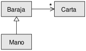
Figure 18.2: Diagrama de clase.
La flecha con una cabeza triangular hueca representa una relación IS-A; en este caso indica que Mano hereda de Baraja.
La fecha con una cabeza estándar representa una relación HAS-A; en este caso una Baraja tiene referencias a objetos Carta.
El asterisco (*) cerca de la cabeza de la flecha tiene una multiplicidad; esto indica cuántas Cartas tiene una Baraja. Una multiplicidad puede ser un número simple, como 52, un rango, como 5..7 o un asterisco, que indica que una Baraja puede tener cualquier número de Cartas.
No hay dependencias en este diagrama. Normalmente se mostrarían con una flecha punteada. O bien si hay muchas dependencias, a veces se omiten.
Un diagrama más detallado podría mostrar que una Baraja contiene en realidad una lista de Cartas, pero los tipos incorporados como list y dict generalmente no se incluyen en los diagramas de clase.
18.9 Depuración
La herencia puede dificultar la depuración porque cuando invocas a un método en un objeto, podría ser difícil averiguar qué método será invocado.
Supongamos que estás escribiendo una función que trabaja con objetos Mano. Te gustaría trabajar con todos los tipos de Mano, como ManoPóker, ManoBridge, etc. Si invocas a un método como barajar, quizás obtengas el que se definió en Baraja, pero si alguna de las subclases anula este método, obtendrás esa versión en su lugar. Este comportamiento es generalmente algo bueno, pero puede ser confuso.
Cada vez que tengas insegurdad acerca del flujo de ejecución a través de tu programa, la solución más simple es agregar sentencias print al principio de métodos relevantes. Si Baraja.barajar imprime un mensaje que diga algo como Ejecutando Baraja.barajar, entonces se sigue el flujo de ejecución a medida que el programa avanza.
Como alternativa, podrías utilizar esta función, que toma un objeto y un nombre de método (como cadena) y devuelve la clase que proporciona la definición del método:
def encontrar_clase_definitoria(obj, nombre_metodo):
for tipo in type(obj).mro():
if nombre_metodo in tipo.__dict__:
return tipo
Aquí hay un ejemplo:
>>> mano = Mano()
>>> encontrar_clase_definitoria(mano, 'barajar')
<class '__main__.Baraja'>
Entonces el método barajar para esta Mano es la que está en Baraja.
encontrar_clase_definitoria utiliza el método mro para obtener la lista de
objetos de clase (tipos) en los cuales serán buscados los métodos. “MRO”
significa “orden de resolución de método” (en inglés, method resolution order), que es la secuencia de
clases que Python busca para “resolver” un nombre de método.
Aquí hay una sugerencia de diseño: cuando anulas un método, la interfaz del nuevo método debería ser la misma que el antiguo. Debería tomar los mismos parámetros, devolver el mismo tipo y cumplir las mismas precondiciones y postcondiciones. Si sigues esta regla, encontrarás que cualquier función diseñada para trabajar con una instancia de una clase padre, como Baraja, funcionará también con instancias de clases hijas, como Mano y ManoPóker.
Si violas esta regla, que se llama “principio de sustitución de Liskov”, tu código colapsará como (lo siento) un castillo de cartas.
18.10 Encapsulamiento de datos
Los capítulos anteriores demuestran un plan de desarrollo que podríamos llamar “diseño orientado a objetos”. Identificamos objetos que necesitábamos —como Punto, Rectángulo y Tiempo— y clases definidas para representarlos. En cada caso, hay una correspondencia obvia entre el objeto y alguna entidad del mundo real (o al menos de un mundo matemático).
Sin embargo, a veces es menos obvio qué objetos necesitas y cómo deberían interactuar. En ese caso, necesitas un plan de desarrollo diferente. De la misma manera en que descubrimos interfaces de función encapsulando y generalizando, podemos descubrir interfaces de clase a través del encapsulamiento de datos.
El análisis de Markov, de la Sección 13.8, proporciona un buen ejemplo.
Si descargas mi código en http://thinkpython.com/code/markov.py,
verás que utiliza dos variables globales —suffix_map y
prefix— que se leen y escriben desde varias funciones.
suffix_map = {}
prefix = ()
Dado que estas variables son globales, solo podemos ejecutar un análisis a la vez. Si leemos dos textos, sus prefijos y sufijos se agregarían a la misma estructura de datos (lo que lo convierte en un interesante texto generado).
Para ejecutar múltiples análisis, y mantenerlos separados, podemos encapsular el estado de cada análisis en un objeto. Así es como se ve eso:
class Markov:
def __init__(self):
self.suffix_map = {}
self.prefix = ()
Luego, transforamos las funciones en métodos. Por ejemplo,
aquí está process_word:
def process_word(self, word, order=2):
if len(self.prefix) < order:
self.prefix += (word,)
return
try:
self.suffix_map[self.prefix].append(word)
except KeyError:
# si no hay entrada para este prefijo, crear una
self.suffix_map[self.prefix] = [word]
self.prefix = shift(self.prefix, word)
Transformar un programa como este —cambiar el diseño sin cambiar el comportamiento— es otro ejemplo de refactorización (ver Sección 4.7).
Este ejemplo sugiere un plan de desarrollo para diseñar objetos y métodos:
- Comienza escribiendo funciones que lean y escriban variables globales (cuando sea necesario).
- Una vez que hagas funcionar el programa, busca asociaciones entre variables globales y las funciones que las utilizan.
- Encapsula variables relacionadas como atributos de un objeto.
- Transforma las funciones asociadas en métodos de una clase nueva.
Como ejercicio, descarga mi código de Markov en http://thinkpython.com/code/markov.py, y sigue los pasos descritos anteriormente para encapsular las variables globales como atributos de una clase nueva llamada Markov. Solución: http://thinkpython.com/code/markov2.py.
18.11 Glosario
- codificar:
- Representar un conjunto de valores utilizando otro conjunto de valores, construyendo un mapeo entre ambos.
- atributo de clase:
- Un atributo asociado a un objeto de clase. Los atributos de clase se definen dentro de una definición de clase pero afuera de cualquier método.
- atributo de instancia:
- Un atributo asociado a una instancia de una clase.
- enchapado:
- Un método o función que proporciona una interfaz diferente a otra función sin hacer muchas computaciones.
- herencia:
- La posibilidad de definir una clase nueva que sea una versión modificada de una clase definida anteriormente.
- clase padre:
- La clase desde la cual una clase hija hereda.
- clase hija:
- Una clase nueva creada a través de herencia de una clase existente; también llamada “subclase”.
- relación IS-A:
- Una relación entre una clase hija y su clase padre.
- relación HAS-A:
- Una relación entre dos clases donde instancias de una clase contienen referencias a instancias de la otra.
- dependencia:
- Una relación entre dos clases donde instancias de una clase utilizan instancias de otra clase, pero no las almacenan como atributos.
- diagrama de clase:
- Un diagrama que muestra las clases en un programa y las relaciones entre estas.
- multiplicidad:
- Una notación en un diagrama de clase que muestra, para una relación HAS-A, cuántas referencias a instancias de otra clase hay.
- encapsulamiento de datos:
- Un plan de desarrollo de programa que involucra a un prototipo que utiliza variables globales y una versión final que convierte las variables globales en atributos de instancia.
18.12 Ejercicios
class PingPongPadre:
pass
class Ping(PingPongPadre):
def __init__(self, pong):
self.pong = pong
class Pong(PingPongPadre):
def __init__(self, pings=None):
if pings is None:
self.pings = []
else:
self.pings = pings
def agregar_ping(self, ping):
self.pings.append(ping)
pong = Pong()
ping = Ping(pong)
pong.agregar_ping(ping)
repartir_manos que
tome dos parámetros, el número de manos y el número de cartas por
cada mano. Debería crear el número apropiado de objetos Mano, repartir
el número apropiado de cartas por cada Mano y devolver una lista de Manos.
Lo siguiente son las posibles manos en el póker, en orden creciente de valor y decreciente de probabilidad:
- pareja:
- dos cartas con el mismo rango
- doble pareja:
- dos pares de cartas con el mismo rango
- trío:
- tres cartas con el mismo rango
- escalera:
- cinco cartas con rangos en secuencia (los ases pueden ser altos o bajos, por lo cual As-2-3-4-5 es una escalera y 10-Jota-Reina-Rey-As también lo es, pero Reina-Rey-As-2-3 no lo es.)
- color:
- cinco cartas con el mismo palo
- full:
- tres cartas con un rango, dos cartas con otro
- póker:
- cuatro cartas con el mismo rango
- escalera de color:
- cinco cartas en secuencia (como ya se definió) y con el mismo palo
El objetivo de estos ejercicios es estimar la probabilidad de extraer estas diferentes manos.
- Descarga los siguientes archivos en http://thinkpython.com/code:
- Card.py
- : Una versión completa de las clases Carta (Card), Baraja (Deck) y Mano (Hand) de este capítulo.
- PokerHand.py
- : Una implementación incompleta de una clase que representa una mano de póker, y algo de código que la prueba.
- Si ejecutas PokerHand.py, reparte siete manos de póker de 7 cartas y verifica si alguna de estas contiene una jugada “color”. Lee este código con cuidado antes de continuar.
- Agrega métodos a PokerHand.py con nombre
tiene_pareja,tiene_doblepareja, etc. que devuelva True o False según si la mano cumple o no los criterios relevantes. Tu código debería funcionar de manera correcta para “manos” que contengan cualquier número de cartas (aunque 5 y 7 son los tamaños más comunes). - Escribe un método con nombre clasificar que averigüe la clasificación de mayor valor para una mano y ponga el atributo etiqueta según corresponda. Por ejemplo, una mano de 7 cartas podría contener un “color” y una “pareja”; debería etiquetarse “color”.
- Cuando te convenzas de que tus métodos de clasificación funcionan, el siguiente paso es estimar las probabilidades de varias cartas. Escribe una función en PokerHand.py que baraje una baraja de cartas, la divida en manos, clasifique las manos y cuente el número de veces que aparecen varias clasificaciones.
- Imprime una tabla con las clasificaciones y sus probabilidades. Ejecuta tu programa con números más y más grandes de manos hasta que los valores de salida converjan a un grado de exactitud razonable. Compara tus resultado con los valores en http://en.wikipedia.org/wiki/Hand_rankings.
Solución: http://thinkpython.com/code/PokerHandSoln.py.
Chapter 19 Trucos extra
Uno de mis objetivos para este libro ha sido enseñarte la menor cantidad de Python posible. Cuando había dos maneras de hacer algo, escogí una y evité mencionar la otra. O a veces puse la segunda dentro de un ejercicio.
Ahora quiero volver a ver algunas de estas cosas buenas que dejé atrás. Python proporciona un número de características que no son realmente necesarias —puedes escribir buen código sin estas— pero con estas a veces puedes escribir código más conciso, legible o eficiente, y a veces las tres cosas a la vez.
19.1 Expresiones condicionales
Vimos las sentencias condicionales en la Sección 5.4. Las sentencias condicionales se utilizan a menudo para escoger uno de dos valores, por ejemplo:
if x > 0:
y = math.log(x)
else:
y = float('nan')
Esta sentencia verifica si x es positivo. Si lo es, calcula math.log. Si no, math.log levantaría un ValueError. Para evitar detener el programa, generamos un “NaN”, que es un valor de coma flotante especial que representa “Not a Number”.
Podemos escribir esta sentencia de manera más concisa utilizando una expresión condicional:
y = math.log(x) if x > 0 else float('nan')
Puedes leer esta línea casi como si estuviera en inglés: “y es log-x si x es mayor que 0; de lo contrario es NaN”.
Las funciones recursivas a veces se pueden reescribir utilizando expresiones condicionales. Por ejemplo, aquí hay una versión recursiva de factorial:
def factorial(n):
if n == 0:
return 1
else:
return n * factorial(n-1)
Podemos reescribirla así:
def factorial(n):
return 1 if n == 0 else n * factorial(n-1)
Otro uso de las expresiones condicionales es al manejar argumentos opcionales. Por ejemplo, aquí está el método init de GoodKangaroo (ver Ejercicio 2):
def __init__(self, name, contents=None):
self.name = name
if contents == None:
contents = []
self.pouch_contents = contents
Podemos reescribirla así:
def __init__(self, name, contents=None):
self.name = name
self.pouch_contents = [] if contents == None else contents
En general, puedes reemplazar una sentencia condicional con una expresión condicional si ambas ramas contienen expresiones simples que se devuelven o asignan a la misma variable.
19.2 Comprensiones de lista
En la Sección 10.7 vimos los patrones de mapa y filtro. Por ejemplo, esta función toma una lista de cadenas, mapea el método de cadena capitalize a los elementos y devuelve una nueva lista de cadenas:
def todas_con_mayuscula(t):
res = []
for s in t:
res.append(s.capitalize())
return res
Podemos escribir esto de manera más concisa utilizando una comprensión de lista:
def todas_con_mayuscula(t):
return [s.capitalize() for s in t]
Los operadores de corchetes indican que estamos construyendo una lista nueva. La expresión dentro de los corchetes especifica los elementos de la lista, y la cláusula for indica qué secuencia estamos recorriendo.
La sintaxis de una comprensión de lista es un poco incómoda porque la variable del bucle, s en este ejemplo, aparece en la expresión antes de llegar a la definición.
Las comprensiones de lista también se pueden utilizar para filtrar. Por ejemplo, esta función selecciona solo los elementos de t que están en mayúsculas y devuelve una lista nueva:
def solo_mayusculas(t):
res = []
for s in t:
if s.isupper():
res.append(s)
return res
Podemos reescribirla utilizando una comprensión de lista
def solo_mayusculas(t):
return [s for s in t if s.isupper()]
Las comprensiones de lista son concisas y fáciles de leer, al menos para expresiones simples. Y generalmente son más rápidas que el equivalente para bucles, a veces mucho más rápidas. Así que si sientes molestia conmigo por no mencionarlas antes, lo entiendo.
Sin embargo, en mi defensa, las comprensiones de lista son difíciles de depurar porque no puedes poner una sentencia print dentro del bucle. Sugiero que los utilices solo si el cálculo es lo suficientemente simple para que sea probable que lo hagas bien al primer intento. Y para principiantes eso significa nunca.
19.3 Expresiones generadoras
Las expresiones generadoras son similares a las comprensiones de lista, pero con paréntesis en lugar de corchetes:
>>> g = (x**2 for x in range(5))
>>> g
<generator object <genexpr> at 0x7f4c45a786c0>
El resultado es un objeto generador que sabe cómo iterar a través de una secuencia de valores. Sin embargo, a diferencia de una comprensión de lista, este no calcula todos los valores de una vez: espera hasta ser consultado. La función incorporada next obtiene el siguiente valor del generador:
>>> next(g)
0
>>> next(g)
1
Cuando llegas al final de la secuencia, next levanta una excepción StopIteration. Puedes también utilizar un bucle for para iterar a través de los valores:
>>> for val in g:
... print(val)
4
9
16
El objeto generador hace un seguimiento de dónde está en la secuencia, por lo cual el bucle for retoma donde next lo dejó. Una vez que el generador se acaba, continúa para levantar StopIteration:
>>> next(g)
StopIteration
Las expresiones generadoras son a menudo utilizadas con funciones como sum, max y min:
>>> sum(x**2 for x in range(5))
30
19.4 any y all
Python proporciona una función incorporada, any, que toma una secuencia de valores booleanos y devuelve True si alguno de los valores es True. Funciona en las listas:
>>> any([False, False, True])
True
Pero se utiliza a menudo con expresiones generadoras:
>>> any(letter == 't' for letter in 'monty')
True
Ese ejemplo no es muy útil porque hace lo mismo que el operador in. Sin embargo, podríamos utilizar any para reescribir alguna de las funciones de búsqueda que escribimos en la Sección 9.3. Por ejemplo, podríamos escribir excluye así:
def excluye(palabra, prohibidas):
return not any(letra in prohibidas for letra in palabra)
La función se lee casi como en inglés, “palabra excluye prohibidas si no hay alguna letra prohibida en palabra.”
Utilizar any con una expresión generadora es eficiente porque se detiene inmediatamente si encuentra un valor True, por lo cual no tiene que evaluar la secuencia completa.
Python proporciona otra función incorporada, all, que devuelve
True si cada elemento de la secuencia es True. Como
ejercicio, utiliza all para reescribir usa_todas de la
Sección 9.3.
19.5 Conjuntos (set)
En la Sección 13.6 utilizo diccionarios para encontrar las palabras que aparecen en un documento pero no en una lista de palabras. La función que escribí toma a d1, que contiene las palabras del documento como claves, y a d2, que contiene la lista de palabras. Este devuelve un diccionario que contiene las claves de d1 que no están en d2.
def diferencia(d1, d2):
res = dict()
for clave in d1:
if clave not in d2:
res[clave] = None
return res
En todos estos diccionarios, los valores son None porque nunca los utilizamos. Como resultado, desperdiciamos algo de espacio de almacenamiento.
Python proporciona otro tipo incorporado, llamado set (conjunto), que se comporta como una colección de claves de diccionario sin valores. Añadir elementos a un conjunto es rápido; en consecuencia, lo es la verificación de pertenencia. Además, los conjuntos proporcionan métodos y operadores para calcular operaciones de conjunto comunes.
Por ejemplo, la resta de conjuntos está disponible como método llamado difference o como operador, -. Entonces, podemos reescribir la función diferencia así:
def diferencia(d1, d2):
return set(d1) - set(d2)
El resultado es un conjunto en lugar de un diccionario, pero para operaciones como la iteración, el comportamiento es el mismo.
Algunos de los ejercicios de este libro se pueden hacer de manera concisa y
eficiente con conjuntos. Por ejemplo, aquí hay una solución a
tiene_duplicados, del
Ejercicio 7, que utiliza un diccionario:
def tiene_duplicados(t):
d = {}
for x in t:
if x in d:
return True
d[x] = True
return False
Cuando un elemento aparece por primera vez, se agrega al diccionario. Si el mismo elemento aparece otra vez, la función devuelve True.
Utilizando conjuntos, podemos escribir la misma función así:
def tiene_duplicados(t):
return len(set(t)) < len(t)
Un elemento puede aparecer en un conjunto una sola vez, por lo cual si un elemento en t aparece más de una vez, el conjunto será más pequeño que t. Si no hay duplicados, el conjunto será del mismo tamaño que t.
Podemos también utilizar conjuntos para hacer algunos de los ejercicios del
Capítulo 9. Por ejemplo, aquí hay una versión de
usa_solo con un bucle:
def usa_solo(palabra, disponibles):
for letra in palabra:
if letra not in disponibles:
return False
return True
usa_solo verifica si todas las letras en palabra están
en disponibles. Podemos reescribirla así:
def usa_solo(palabra, disponibles):
return set(palabra) <= set(disponibles)
El opereador <= verifica si un conjunto es subconjunto de otro,
incluyendo la posibilidad de que sean iguales, lo cual es verdadero si todas
las letras en palabra aparecen en disponibles.
Como ejercicio, reescribe excluye utilizando conjuntos.
19.6 Contadores (Counter)
Un contador (Counter) es como un conjunto, excepto que si un elemento aparece más de una vez, el contador hace un seguimiento de cuántas veces aparece. Si la idea matemática de multiconjunto se te hace familiar, un contador es una manera natural de representar un multiconjunto.
Counter está definido en un módulo estándar llamado collections, por lo cual tienes que importarlo. Puedes inicializar un contador con una cadena, lista, o cualquier otra cosa que soporte iteraciones:
>>> from collections import Counter
>>> contar = Counter('parrot')
>>> contar
Counter({'r': 2, 't': 1, 'o': 1, 'p': 1, 'a': 1})
Los contadores se comportan como diccionarios en muchas maneras: mapean de cada clave al número de veces que esta aparece. Al igual que en los diccionarios, las claves tienen que ser hashables.
A diferencia de los diccionarios, los contadores no elevan una excepción si accedes a un elemento que no aparece. En su lugar, devuelven 0:
>>> contar['d']
0
Podemos utilizar contadores para reescribir es_anagrama del
Ejercicio 6:
def es_anagrama(palabra1, palabra2):
return Counter(palabra1) == Counter(palabra2)
Si dos palabras son anagramas, contienen la misma cantidad de letras con la mismas cuentas, por tanto son equivalentes.
Los contadores proporcionan métodos y operadores para realizar operaciones como las de los conjuntos,
incluyendo la suma, resta, unión e intersección. Además,
proporcionan un método que a menudo es útil, most_common, que
devuelve una lista de pares valor-frecuencia, ordenados desde el más común al
menos común:
>>> contar = Counter('parrot')
>>> for valor, frecuencia in contar.most_common(3):
... print(valor, frecuencia)
r 2
p 1
a 1
19.7 defaultdict
El módulo collections también proporciona a defaultdict, que es como un diccionario excepto que si accedes a una clave que no existe, este puede generar un valor nuevo sobre la marcha.
Cuando creas un defaultdict, proporcionas una función que se utiliza para crear valores nuevos. Una función utilizada para crear objetos a veces es llamada una fábrica. Las funciones incorporadas que crean listas, conjuntos y otros tipos se pueden utilizar como fábricas:
>>> from collections import defaultdict >>> d = defaultdict(list)
Notar que el argumento es list, que es un objeto de clase, no list(), que es una lista nueva. La función que proporcionas no es llamada a menos que accedas a una clave que no existe.
>>> t = d['clave nueva']
>>> t
[]
La lista nueva, la cual llamamos t, también es añadida al diccionario. Por lo tanto, si modificamos t, el cambio aparece en d:
>>> t.append('valor nuevo')
>>> d
defaultdict(<class 'list'>, {'clave nueva': ['valor nuevo']})
Si estás creando un diccionario de listas, a menudo puedes escribir código más simple utilizando defaultdict. En mi solución al Ejercicio 2, que puedes obtener en http://thinkpython.com/code/anagram_sets.py, creo un diccioinario que mapea de una cadena de letras ordenada a la lista de palabras que se pueden escribir con esas letras. Por ejemplo, ’opst’ mapea a la lista [’opts’, ’post’, ’pots’, ’spot’, ’stop’, ’tops’].
Este es el código original:
def all_anagrams(filename):
d = {}
for line in open(filename):
word = line.strip().lower()
t = signature(word)
if t not in d:
d[t] = [word]
else:
d[t].append(word)
return d
Esto se puede simplificar utilizando setdefault, que tal vez utilizaste en el Ejercicio 2:
def all_anagrams(filename):
d = {}
for line in open(filename):
word = line.strip().lower()
t = signature(word)
d.setdefault(t, []).append(word)
return d
Esta solución tiene el inconveniente de que crea una nueva lista cada vez, independiente de si es necesaria. Para las listas, eso no es un gran problema, pero si la función fábrica es complicada, podría serlo.
Podemos evitar este problema y simplificar el código utilizando un defaultdict:
def all_anagrams(filename):
d = defaultdict(list)
for line in open(filename):
word = line.strip().lower()
t = signature(word)
d[t].append(word)
return d
Mi solución al Ejercicio 3, que puedes descargar en
http://thinkpython.com/code/PokerHandSoln.py,
utiliza setdefault en la función
has_straightflush. Esta solución tiene el inconveniente de
crear un objeto Hand en cada paso del bucle, cuando
es necesaria y cuando no. Como ejercicio, reescríbela utilizando
un defaultdict.
19.8 Tuplas con nombre (namedtuple)
Muchos objetos simples son básicamente colecciones de valores relacionados. Por ejemplo, el objeto Punto definido en el Capítulo 15 contiene dos números, x e y. Cuando defines una clase como esta, generalmente comienzas con un método init y un método str:
class Punto:
def __init__(self, x=0, y=0):
self.x = x
self.y = y
def __str__(self):
return '(%g, %g)' % (self.x, self.y)
Esto es mucho código para transmitir una cantidad pequeña de información. Python proporciona una manera más concisa de decir lo mismo:
from collections import namedtuple
Punto = namedtuple('Punto', ['x', 'y'])
El primer argumento es el nombre de la clase que quieres crear. El segundo es una lista de atributos que los objetos Punto debieran tener, en forma de cadenas. El valor de retorno de namedtuple es un objeto de clase:
>>> Punto
<class '__main__.Punto'>
Punto automáticamente proporciona métodos como __init__ y
__str__, así que no tienes que escribirlos.
Para crear un objeto Punto, utilizas la clase Punto como una función:
>>> p = Punto(1, 2)
>>> p
Punto(x=1, y=2)
El método init asigna argumentos a atributos utilizando nombres que proporcionas. El método str imprime una representación del objeto Punto y sus atributos.
Puedes acceder a los elementos de la tupla con nombre, escribiendo sus nombres:
>>> p.x, p.y (1, 2)
Sin embargo, puedes también tratar a una tupla con nombre como una tupla:
>>> p[0], p[1]
(1, 2)
>>> x, y = p
>>> x, y
(1, 2)
Las tuplas con nombre proporcionan una manera rápida de definir clases simples. El inconveniente es que las clases simples no siempre permanecen simples. Tal vez decidas más tarde que quieres agregar métodos a una tupla con nombre. En ese caso, podrías definir una clase nueva que tome herencia de la tupla con nombre:
class SuperPunto(Punto):
# agregar más métodos aquí
O bien podrías cambiar a una definición de clase convencional.
19.9 Reunir argumentos de palabra clave
En la Sección 12.4, vimos cómo escribir una función que reúne sus argumentos en una tupla:
def imprimir_todo(*args):
print(args)
Puedes llamar a esta función con cualquier número de argumentos posicionales (es decir, argumentos que no tienen palabra clave):
>>> imprimir_todo(1, 2.0, '3')
(1, 2.0, '3')
Sin embargo, el operador * no reúne a los argumentos de palabra clave:
>>> imprimir_todo(1, 2.0, tercero='3')
TypeError: imprimir_todo() got an unexpected keyword argument 'tercero'
Para reunir argumentos de palabra clave, puedes utilizar el operador **:
def imprimir_todo(*args, **kwargs):
print(args, kwargs)
Puedes llamar al parámetro de reunión de palabras clave como quieras, pero kwargs es una elección común (del inglés, keyword arguments). El resultado es un diccionario que mapea palabras clave a valores:
>>> imprimir_todo(1, 2.0, tercero='3')
(1, 2.0) {'tercero': '3'}
Si tienes un diccionario de palabras clave y valores, puedes utilizar el operador de dispersión ** para llamar a una función:
>>> d = dict(x=1, y=2)
>>> Punto(**d)
Punto(x=1, y=2)
Sin el operador de dispersión, la función trataría a d como un argumento posicional único, por lo cual asignaría d a x y reclamaría porque no hay nada para asignar a y:
>>> d = dict(x=1, y=2)
>>> Punto(d)
Traceback (most recent call last):
File "<stdin>", line 1, in <module>
TypeError: __new__() missing 1 required positional argument: 'y'
Cuando estás trabajando con funciones que tienen un número grande de parámetros, a menudo es útil crear y pasar diccionarios que especifiquen las opciones utilizadas de manera frecuente.
19.10 Glosario
- expresión condicional:
- Una expresión que tiene uno de dos valores, dependiendo de una condición.
- comprensión de lista:
- Una expresión con un bucle for en corchetes que produce una lista nueva.
- expresión generadora:
- Una expresión con un bucle for en paréntesis que produce un objeto generador.
- multiconjunto:
- Una entidad matemática que representa un mapeo entre los elementos de un conjunto y el número de veces que estos aparecen.
- fábrica:
- Una función, generalmente pasada como parámetro, utilizada para crear objetos.
19.11 Ejercicios
Lo siguiente es una función que calcula el coeficiente binomial de manera recursiva.
def coeficiente_binomial(n, k):
"""Calcula el coeficiente binomial "n sobre k".
n: número de ensayos
k: número de éxitos
devuelve: int
"""
if k == 0:
return 1
if n == 0:
return 0
res = coeficiente_binomial(n-1, k) + coeficiente_binomial(n-1, k-1)
return res
Reescribe el cuerpo de la función utilizando expresiones condicionales anidadas.
Nota: esta función no es muy eficiente porque termina calculando los mismos valores una y otra vez. Podrías hacerla más eficiente memoizando (ver Sección 11.6). Sin embargo, encontrarás que es más difícil memoizar si la escribes utilizando expresiones condicionales.
Appendix A Depuración
Cuando estés depurando, deberías distinguir entre los diferentes tipos de errores con el fin de rastrearlos de manera más rápida:
- Los errores de sintaxis son descubiertos por el intérprete cuando está traduciendo el código fuente a código byte. Indican que hay algo mal en la estructura del programa. Ejemplo: omitir el signo de dos puntos al final de una sentencia def genera el mensaje algo redundante SyntaxError: invalid syntax.
- Los errores de tiempo de ejecución son producidos por el intérprete si algo va mal mientras el programa se está ejecutando. La mayoría de los mensajes de error de tiempo de ejecución incluyen información acerca de dónde ocurrió el error y qué funciones se estaban ejecutando. Ejemplo: una recursividad infinita eventualmente causa el error de tiempo de ejecución “maximum recursion depth exceeded”.
- Los errores semánticos son problemas que tiene un programa que se ejecuta sin producir mensajes de error pero sin hacer lo correcto. Ejemplo: una expresión puede que no sea evaluada en el orden que esperas, entregando un resultado incorrecto.
El primer paso en la depuración es averiguar con qué tipo de error estás lidiando. Aunque las siguientes secciones están organizadas por tipo de error, algunas técnicas son aplicables en más de una situación.
A.1 Errores de sintaxis
Los errores de sintaxis son generalmente fáciles de arreglar una vez que averiguas cuáles son. Desafortunadamente, los mensajes de error a menudo no son útiles. Los mensajes más comunes son SyntaxError: invalid syntax y SyntaxError: invalid token, de los cuales ninguno es muy informativo.
Por otra parte, el mensaje sí te dice el lugar del programa donde ocurrió el problema. En realidad, te dice dónde Python notó un problema, que no necesariamente es donde está el error. A veces el error está antes de la ubicación del mensaje de error, a menudo en la línea precedente.
Si estás construyendo el programa de manera incremental, deberías tener una buena idea acerca de dónde está el error. Estará en la última línea que agregaste.
Si estás copiando código de un libro, comienza comparando tu código con el código del libro de manera muy cuidadosa. Revisa cada carácter. Al mismo tiempo, recuerda que el libro podría estar mal, por tanto si ves algo que parece un error de sintaxis, puede serlo.
Aquí hay algunas maneras de evitar los errores de sintaxis más comunes:
- Asegúrate de que no estás utilizando una palabra clave de Python para un nombre de variable.
- Verifica que tienes un signo de dos puntos al final del encabezado de cada sentencia compuesta, incluyendo las sentencias for, while, if y def.
- Asegúrate de que todas las cadenas en el código tengan comillas coincidentes. Asegúrate de que todas las comillas son “comillas rectas”, no “comillas tipográficas”.
- Si tienes cadenas multilínea con comillas triples (simples o dobles), asegúrate de que has terminado la cadena de manera apropiada. Una cadena sin terminar puede causar un error invalid token al final de tu programa, o puede tratar la siguiente parte del programa como una cadena hasta que llega a la siguiente cadena. En el segundo caso, ¡podría no producir ningún mensaje de error!
- Un operador de apertura no cerrado —
(,{o[— hace que Python continúe con la línea siguiente como parte de la sentencia actual. Generalmente, ocurre un error casi inmediatamente en la línea siguiente. - Revisa el clásico = en lugar de == dentro de un condicional.
- Revisa la sangría para asegurarte de que esté alineada como se supone que debe estar. Python puede manejar el espacio y la tabulación, pero si los mezclas puede causar problemas. La mejor manera de evitar este problema es utilizar un editor de texto que sepa sobre Python y genere sangría consistente.
- Si tienes caracteres no ASCII en el código (incluyendo cadenas y comentarios), podría causar un problema, aunque Python 3 generalmente maneja caracteres no ASCII. Ten cuidado si pegas texto de una página web u otra fuente.
Si nada funciona, pasa a la siguiente sección...
A.1.1 Sigo haciendo cambios y no hay diferencia.
Si el intérprete dice que hay un error y tú no lo ves, podría ser porque tú y el intérprete no están mirando el mismo código. Revisa tu entorno de programación para asegurarte de que el programa que estás editando es el que Python está intentando ejecutar.
Si no sabes bien, intenta poniendo un error de sintaxis obvio y deliberado al principio del programa. Ahora ejecútalo de nuevo. Si el intérprete no encuentra el nuevo error, no estás ejecutando el código nuevo.
Hay algunos posibles culpables:
- Editaste el archivo y olvidaste guardar los cambios antes de ejecutarlo de nuevo. Algunos entornos de programación hacen esto por ti, pero otros no.
- Cambiaste el nombre del archivo, pero todavía estás ejecutando el nombre antiguo.
- Algo en tu entorno de desarrollo está configurado de manera incorrecta.
- Si estás escribiendo un módulo y utilizando import, asegúrate de que no le das a tu módulo el mismo nombre que uno de los módulos estándar de Python.
- Si estás utilizando import para leer un módulo, recuerda que tienes que reiniciar el intérprete o utilizar reload para leer un archivo modificado. Si importas el módulo de nuevo, no hace nada.
Si te atascas y no puedes averiguar qué está pasando, una manera de abordarlo es comenzar de nuevo con un nuevo programa como “Hola, mundo” y asegurarte de que puedes obtener un programa conocido para ejecutar. Luego agrega gradualmente los pedazos del programa original al nuevo programa.
A.2 Errores de tiempo de ejecución
Una vez que tu programa está sintácticamente correcto, Python puede leerlo y al menos comenzar a ejecutarlo. ¿Qué podría salir mal?
A.2.1 Mi programa no hace absolutamente nada.
Este problema es más común cuando tu archivo se compone de funciones y clases pero en realidad no invoca una función para comenzar la ejecución. Esto puede ser intencional si solo planeas importar este módulo para proporcionar clases y funciones.
Si no es intencional, asegúrate de que hay una llamada a función en el programa, y asegúrate de que el flujo de ejecución lo alcanza (ver “Flujo de ejecución” más adelante).
A.2.2 Mi programa se congela.
Si un programa se detiene y parece que no hace nada, está “congelado”. A menudo eso significa que está atrapado en un bucle infinito o una recursividad infinita.
- Si hay un bucle en particular del cual sospechas que es el
problema, agrega una sentencia print inmediatamente antes del bucle que
diga “entrando al bucle” y otro inmediatamente después que diga
“saliendo del bucle”.
Ejecuta el programa. Si obtienes el primer mensaje y no el segundo, tienes un bucle infinito. Ve a la sección “Bucle infinito” de más adelante.
- La mayor parte del tiempo, una recursividad infinita causará que el
programa se ejecute por un momento y luego produzca un error “RuntimeError: Maximum
recursion depth exceeded”. Si eso ocurre, ve a la sección
“Recursividad infinita” de más adelante.
Si no obtienes este error pero sospechas que hay un problema con una función recursiva o método recursivo, todavía puedes utilizar las técnicas de la sección “Recursividad infinita”.
- Si ninguno de esos pasos funciona, comienza a probar otros bucles y otras funciones y métodos recursivos.
- Si eso no funciona, entonces es posible que no entiendas el flujo de ejecución de tu programa. Ve a la sección “Flujo de ejecución” de más adelante.
Bucle infinito
Si crees que tienes un bucle infinito y crees que sabes qué bucle está causando el problema, agrega una sentencia print al final del bucle que imprima los valores de las variables en la condición y el valor de la condición.
Por ejemplo:
while x > 0 and y < 0 :
# hacer algo a x
# hacer algo a y
print('x: ', x)
print('y: ', y)
print("condición: ", (x > 0 and y < 0))
Ahora cuando ejecutes el programa, verás tres líneas de salida cada vez que se pase por el bucle. En el último paso por el bucle, la condición debería ser False. Si el bucle continúa, podrás ver los valores de x e y, y podrías averiguar por qué no se están actualizando correctamente.
Recursividad infinita
La mayoría de las veces, la recursividad infinita causa que el programa se ejecute por un momento y luego produzca un error Maximum recursion depth exceeded.
Si sospechas que una función está causando una recursividad infinita, asegúrate de que haya un caso base. Debería haber alguna condición que cause que la función devuelva algo sin hacer una invocación recursiva. Si no, necesitas volver a pensar el algoritmo e identificar un caso base.
Si hay un caso base pero el programa no parece estar alcanzándolo, agrega una sentencia print al principio de la función que imprima los parámetros. Ahora cuando ejecutes el programa, verás algunas líneas de salida cada vez que se invoca a la función, y verás los valores de los parámetros. Si los parámetros no se están moviendo hacia el caso base, obtendrás algunas ideas sobre por qué no ocurre.
Flujo de ejecución
Si no sabes bien cómo se está moviendo el flujo de ejecución a través de tu programa, agrega sentencias print al principio de cada función con un mensaje como “entrando a la función foo”, donde foo es el nombre de la función.
Ahora cuando ejecutes el programa, imprimirá una señal de cada función que se invoque.
A.2.3 Cuando ejecuto el programa obtengo una excepción.
Si algo va mal durante el tiempo de ejecución, Python imprime un mensaje que incluye el nombre de la excepción, la línea del programa donde ocurrió el problema y un rastreo.
El rastreo identifica la función que se está ejecutando actualmente y luego la función que la llamó, y luego la función que llamo a aquella, y así sucesivamente. En otras palabras, rastrea la secuencia de llamadas a función que te llevaron a donde estás, incluyendo el número de línea en tu archivo donde ocurrió cada llamada.
El primer paso es examinar el lugar del programa donde ocurrió el error y ver si puedes averiguar lo que sucedió. Estos son algunos de los errores de tiempo de ejecución más comunes:
- NameError:
- Estás intentando utilizar una variable que no existe en el entorno actual. Revisa si el nombre está bien escrito, o al menos de manera consistente. Y recuerda que las variables locales son locales: no puedes referirte a estas desde afuera de la función donde se definieron.
- TypeError:
- Hay varias causas posibles:
- Estás intentando utilizar un valor de manera inapropiada. Ejemplo: indexar una cadena, lista o tupla con algo que no es un entero.
- Hay una discordancia entre los ítems en una cadena de formato y los ítems pasados para una conversión. Eso puede ocurrir si el número de ítems no coincide o si se pidió una conversión no válida.
- Estás pasando el número equivocado de argumentos a una función. Para los métodos, mira la definición del método y verifica que el primer parámetro es self. Luego, mira la invocación al método; asegúrate de que estás invocando al método en un objeto con el tipo correcto y proporcionando los otros argumentos de manera correcta.
- KeyError:
- Estás intentando acceder a un elemento de un diccionario utilizando una clave que el diccionario no contiene. Si las claves son cadenas, recuerda que las mayúsculas importan.
- AttributeError:
- Estás intentando acceder a un atributo o método
que no existe. ¡Revisa la ortografía! Puedes utilizar la función
incorporada vars para hacer una lista de los atributos que sí existen.
Si un AttributeError indica que un objeto tiene NoneType, eso significa que es None. Entonces el problema no es el nombre de atributo, sino el objeto.
La razón por la cual el objeto es None podría ser que olvidaste devolver un valor desde una función; si llegas al final de una función poniendo una sentencia return, devuelve None. Otra causa común es utilizar el resultado de un método de lista, como sort, que devuelve None.
- IndexError:
- El índice que estás utilizando para acceder a una lista, cadena o tupla es mayor que su longitud menos uno. Inmediatamente antes del lugar del error, agrega una sentencia print para mostrar en pantalla el valor del índice y la longitud de la secuencia. ¿Tiene la secuencia el tamaño correcto? ¿Tiene el índice el valor correcto?
El depurador de Python (pdb, Python debugger) es útil para rastrear excepciones porque te permite examinar el estado del programa inmediatamente antes del error. Puedes leer sobre pdb en https://docs.python.org/3/library/pdb.html.
A.2.4 Agregué tantas sentencias print que me inundé con la salida.
Uno de los problemas al utilizar sentencias print para depurar es que puedes terminar enterrándote en la salida. Hay dos maneras de proceder: simplificar la salida o simplificar el programa.
Para simplificar la salida, puedes eliminar o poner como comentarios las sentencias print que no están ayudando, o combinarlas, o dar formato a la salida para que sea más fácil de entender.
Para simplificar el programa, hay varias cosas que puedes hacer. Primero, reduce la escala del problema en el cual está trabajando el programa. Por ejemplo, si estás buscando una lista, busca una lista pequeña. Si el programa toma entrada del usuario, dale la entrada más simple que cause el problema.
Segundo, limpia el programa. Elimina el código muerto y reorganiza el programa para hacerlo tan fácil de leer como sea posible. Por ejemplo, si sospechas que el problema está en una parte profundamente anidada del programa, intenta reescribir esa parte con una estructura más simple. Si sospechas de una función grande, intenta separarla en funciones más pequeñas y probarlas de manera separada.
A menudo el proceso de encontrar el caso de prueba mínimo te guía al error. Si encuentras que un programa funciona en una situación pero no en otra, eso te da una pista sobre qué está pasando.
Del mismo modo, reescribir un pedazo de código puede ayudarte a encontrar errores sutiles. Si haces un cambio que crees que no debería afectar al programa, y sí afecta, eso te puede dar una pista.
A.3 Errores semánticos
De alguna manera, los errores semánticos son los más difíciles de depurar, porque el intérprete no proporciona información sobre qué está mal. Solo tú sabes lo que se supone que debe hacer el programa.
El primer paso es hacer una conexión entre el texto del programa y el comportamiento que ves. Necesitas una hipótesis sobre qué está haciendo realmente el programa. Una de las cosas que hace que eso sea difícil es que los computadores funcionan muy rápido.
A menudo desearás poder ralentizar el programa a velocidad humana, y con algunos depuradores puedes hacerlo. Pero el tiempo que toma insertar unas pocas sentencias print bien ubicadas es a menudo corto comparado con el de configurar el depurador, insertar y eliminar puntos de interrupción, y avanzar “paso a paso” en el programa hasta donde ocurre el error.
A.3.1 Mi programa no funciona.
Deberías hacerte estas preguntas:
- ¿Hay algo que se supone que el programa debe hacer pero que no parece estar ocurriendo? Encuentra la sección del código que realiza esa función y asegúrate de que se está ejecutando cuando crees que debería.
- ¿Ocurre algo que no debería? Encuentra código en tu programa que realiza esa función y ve si se está ejecutando cuando no debería.
- ¿Hay una sección de código produciendo un efecto que no es lo que esperabas? Asegúrate de que entiendes el código en cuestión, especialmente si involucra funciones o métodos de otros módulos de Python. Lee la documentación para las funciones que llamas. Pruébalas escribiendo casos de prueba simples y verificando los resultados.
Para programar, necesitas un modelo mental de cómo funcionan los programas. Si escribes un programa que no hace lo que esperas, muchas veces el problema no está en el programa: está en tu modelo mental.
La mejor manera de corregir tu modelo mental es separar el programa en sus componentes (generalmente las funciones y métodos) y probar cada componente de manera independiente. Una vez que encuentres la discrepancia entre tu modelo y la realidad, puedes resolver el problema.
Por supuesto, deberías estar construyendo y probando componentes a medida que desarrollas el programa. Si encuentras un problema, debería haber solo una pequeña cantidad de código nuevo que no se sabe si es correcto.
A.3.2 Tengo una expresión grande y fea, y no hace lo que yo espero.
Escribir expresiones complejas está bien mientras sean legibles, pero pueden ser difíciles de depurar. Muchas veces es una buena idea separar una expresión compleja en una serie de asignaciones a variables temporales.
Por ejemplo:
self.hands[i].addCard(self.hands[self.findNeighbor(i)].popCard())
Esto se puede reescribir como:
neighbor = self.findNeighbor(i) pickedCard = self.hands[neighbor].popCard() self.hands[i].addCard(pickedCard)
La versión explícita es más fácil de leer porque los nombres de variable proporcionan documentación adicional, y es más fácil depurar porque puedes verificar los tipos de las variables intermedias y mostrar sus valores en pantalla.
Otro problema que puede ocurrir con las expresiones grandes es que el orden de evaluación puede que no sea lo que esperas. Por ejemplo, si estás traduciendo la expresión x/2 π a Python, podrías escribir:
y = x / 2 * math.pi
Eso no es correcto porque la multiplicación y la división tienen la misma prioridad y se evalúan de izquierda a derecha. Entonces esta expresión calcula x π / 2.
Una buena manera de depurar expresiones es agregar paréntesis para hacer que el orden de evaluación sea explícito:
y = x / (2 * math.pi)
Siempre que no sepas bien del orden de evaluación, utiliza paréntesis. No solo estará correcto el programa (en el sentido de hacer lo que pretendías), también será más legible para otras personas que no han memorizado el orden de las operaciones.
A.3.3 Tengo una función que no devuelve lo que yo espero.
Si tienes una sentencia return con una expresión compleja, no tienes la posibilidad de imprimir el resultado antes de devolverlo. De nuevo, puedes utilizar una variable temporal. Por ejemplo, en lugar de:
return self.hands[i].removeMatches()
podrías escribir:
count = self.hands[i].removeMatches() return count
Ahora tienes la oportunidad de mostrar en pantalla el valor de count antes de devolverlo.
A.3.4 De verdad me atasqué y necesito ayuda.
Primero, intenta alejarte del computador por algunos minutos. Los computadores emiten ondas que afectan al cerebro, causando estos síntomas:
- Frustración e ira.
- Creencias supersticiosas (“el computador me odia”) y pensamiento mágico (“el programa solo funciona cuando uso mi gorra hacia atrás”).
- Programación de camino aleatorio (el intento de programar escribiendo cada programa posible y escoger el que hace lo correcto).
Si te encuentras sufriendo alguno de estos síntomas, levántate y ve a dar un paseo. Cuando te hayas tranquilizado, piensa en el programa. ¿Qué está haciendo? ¿Cuáles son algunas posibles causas de aquel comportamiento? ¿Cuándo fue la última vez que tuviste un programa eficaz y qué hiciste después?
A veces solo toma tiempo encontrar un error de programación. A menudo encuentro errores cuando estoy lejos del computador y dejo vagar a mi mente. Algunos de los mejores lugares para encontrar errores son los trenes, las duchas y en la cama, justo antes de dormirte.
A.3.5 No, realmente necesito ayuda.
Sucede. Incluso los mejores programadores se atascan ocasionalmente. A veces trabajas en un programa tan largo que no puedes ver el error. Necesitas otro punto de vista.
Antes de traer a alguien más, asegúrate de tener todo preparado. Tu programa debería ser tan simple como sea posible, y deberías estar trabajando en la entrada más pequeña que causa el error. Deberías tener sentencias print en los lugares apropiados (y la salida que producen debería ser comprensible). Deberías entender el problema lo suficientemente bien como para describirlo de manera concisa.
Cuando traigas a alguien para que te ayude, asegúrate de darle la información que necesita:
- Si hay un mensaje de error, ¿cuál es y qué parte del programa indica?
- ¿Qué fue lo último que hiciste antes de que ocurriera este error? ¿Cuáles fueron las últimas líneas de código que escribiste o cuál es el nuevo caso de prueba que falla?
- ¿Qué has intentado hasta ahora y qué has aprendido?
Cuando encuentres el error, tómate un segundo para pensar sobre qué podrías haber hecho para encontrarlo de manera más rápida. La próxima vez que veas algo similar, serás capaz de entontrar el error con más rapidez.
Recuerda, la meta no solo es hacer que el programa funcione. La meta es aprender cómo hacer que el programa funcione.
Appendix B Análisis de algoritmos
Este apéndice es un extracto de Think Complexity, por Allen B. Downey, también publicado por O’Reilly Media (2012). Cuando hayas terminado con este libro, quizás quieras continuar con aquel.
El análisis de algoritmos es una rama de las ciencias de la computación que estudia el rendimiento de los algoritmos, especialmente su tiempo de ejecución y requerimientos de espacio. Ver http://en.wikipedia.org/wiki/Analysis_of_algorithms.
El objetivo práctico del análisis de algoritmos es predecir el rendimiento de diferentes algoritmos con el fin de guiar decisiones de diseño.
Durante la campaña presidencial de los Estados Unidos de 2008, al candidato Barack Obama le pidieron que realizara un análisis improvisado cuando visitó Google. El director ejecutivo Eric Schmidt le preguntó en broma por “la manera más eficiente para ordenar un millón de enteros de 32 bit.” Obama aparentemente se había dado un tropezón, porque rápidamente respondió: “Pienso que el ordenamiendo de burbuja sería la manera incorrecta de proceder.” Ver http://www.youtube.com/watch?v=k4RRi_ntQc8.
Esto es verdad: el ordenamiento de burbuja (en inglés, bubble sort) es conceptualmente simple pero lento para bases de datos grandes. La respuesta que Schmidt probablemente estaba buscando es “ordenamiento radix” (http://en.wikipedia.org/wiki/Radix_sort)1.
El objetivo del análisis de algoritmos es hacer comparaciones significativas entre algoritmos, pero hay algunos problemas:
- El rendimiento relativo de los algoritmos podría depender de características del hardware, por lo cual un algoritmo podría ser más rápido en la Máquina A y otro en la Máquina B. La solución general a este problema es especificar un modelo de máquina y analizar el número de pasos, u operaciones, que un algoritmo requiere según un modelo de máquina dado.
- El rendimiento relativo podría depender de los detalles del conjunto de datos. Por ejemplo, algunos algoritmos de ordenamiento se ejecutan de manera más rápida si los datos ya están parcialmente ordenados; otros algoritmos se ejecutan de manera más lenta en este caso. Una manera común de evitar este problema es analizar el peor de los casos. A veces es útil analizar el rendimiento del caso promedio, pero eso es generalmente más difícil, y el conjunto de casos sobre el cual se establece el promedio podría no ser obvio.
- El rendimiento relativo depende también del tamaño del problema. Un algoritmo de ordenamiento que es rápido para listas pequeñas podría ser lento para listas largas. La solución usual a este problema es expresar el tiempo de ejecución (o número de operaciones) como una función del tamaño del problema, y agrupar funciones en categorías dependiendo de qué tan rápido crecen a medida que el tamaño del problema aumenta.
Lo bueno de este tipo de comparaciones es que asegura una clasificación simple de los algoritmos. Por ejemplo, si sé que el tiempo de ejecución del Algorigmo A tiende a ser proporcional al tamaño de la entrada, n, y el algoritmo B tiende a ser proporcional a n2, entonces espero que A sea más rápido que B, al menos para valores grandes de n.
Este tipo de análisis viene con algunas advertencias, pero llegaremos a eso más adelante.
B.1 Orden de crecimiento
Supongamos que has analizado dos algoritmos y has expresado sus tiempos de ejecución en términos del tamaño de la entrada: al algoritmo A le toma 100n+1 pasos resolver un problema con tamaño n; al algoritmo B le toma n2 + n + 1 pasos.
La siguiente tabla muestra el tiempo de ejecución de estos algoritmos para diferentes tamaños de problema:
| Tamaño de | Tiempo de ejecución | Tiempo de ejecución |
| entrada | del algoritmo A | del algoritmo B |
| 10 | 1 001 | 111 |
| 100 | 10 001 | 10 101 |
| 1 000 | 100 001 | 1 001 001 |
| 10 000 | 1 000 001 | 100 010 001 |
Cuando n=10, el algoritmo A se ve bastante mal; toma casi 10 veces más que el algoritmo B. Pero para n=100 son casi lo mismo, y para valores más grandes A es mucho mejor.
La razón fundamental es que, para valores grandes de n, cualquier función que contiene el término n2 crecerá más rápido que una función cuyo término principal es n. El término principal es el término con el exponente más alto.
Para el algoritmo A, el término principal tiene un coeficiente grande, 100, que es el motivo por el cual B es mejor que A para n pequeño. Pero a pesar de los coeficientes, siempre habrá algún valor de n donde a n2 > b n, para cualquier valor de a y b.
El mismo argumento se aplica a los términos no principales. Incluso si el tiempo de ejecución del algoritmo A fuera n+1000000, seguiría siendo mejor que el algoritmo B para n suficientemente grande.
En general, esperamos que un algoritmo con un término principal más pequeño sea un mejor algoritmo para problemas grandes, pero para problemas más pequeños puede haber un punto de cruce donde otro algoritmo es mejor. La ubicación del punto de cruce depende de los detalles de los algoritmos, las entradas y el hardware, por lo cual usualmente se ignora para propósitos de análisis algorítmico. Pero eso no significa que puedes olvidarlo.
Si dos algoritmos tienen el mismo término de orden principal, es difícil decir cuál es mejor; nuevamente, la respuesta depende de los detalles. Entonces para análisis algorítmico, las funciones con el mismo término principal se consideran equivalentes, incluso si tienen coeficientes diferentes.
Un orden de crecimiento es un conjunto de funciones cuyo comportamiento de crecimiento se considera equivalente. Por ejemplo, 2n, 100n y n+1 pertenecen al mismo orden de crecimiento, el cual se escribe O(n) en notación O grande (en inglés, Big-Oh) y a menudo llamada lineal porque cada función de dicho conjunto crece de manera lineal con n.
Todas las funciones con término principal n2 pertenecen a O(n2): se llaman cuadráticas.
La siguiente tabla muestra algunos de los órdenes de crecimiento que aparecen más comúnmente en el análisis algorítmico, en orcen creciente de ineficiencia.
| Orden de | Nombre |
| crecimiento | |
| O(1) | constante |
| O(logb n) | logarítmica (para cualquier b) |
| O(n) | lineal |
| O(n logb n) | linearítmica |
| O(n2) | cuadrática |
| O(n3) | cúbica |
| O(cn) | exponencial (para cualquier c) |
Para los términos logarítmicos, la base del logarítmo no importa: cambiar las bases es equivalente a multiplicar por una constante, la cual no cambia el orden de crecimiento. De igual manera, todas las funciones exponenciales pertenecen al mismo orden de crecimiento, independiente de la base del exponente. Las funciones exponenciales crecen de manera muy rápida, por lo cual los algoritmos exponenciales solo son útiles para problemas pequeños.
Lee la página de Wikipedia sobre la notación O grande en http://en.wikipedia.org/wiki/Big_O_notation y responde las siguientes preguntas:
- ¿Cuál es el orden de crecimiento de n3 + n2? ¿Qué pasa con 1000000 n3 + n2? ¿Qué pasa con n3 + 1000000 n2?
- ¿Cuál es el orden de crecimiento de (n2 + n) · (n + 1)? Antes de que empieces a multiplicar, recuerda que solo necesitas el término principal.
- Si f está en O(g), para una función g no especificada, ¿qué podemos decir de af+b, donde a y b son constantes?
- Si f1 y f2 están en O(g), ¿qué podemos decir de f1 + f2?
- Si f1 está en O(g) y f2 está en O(h), ¿qué podemos decir de f1 + f2?
- Si f1 está en O(g) y f2 es O(h), ¿qué podemos decir de f1 · f2?
Los programadores que se preocupan del rendimiento a menudo encuentran este tipo de análisis difícil de tragar. Ellos tienen un punto: a veces los coeficientes y los términos no principales hacen una diferencia real. A veces los detalles del hardware, el lenguaje de programación y las características de la entrada hacen una gran diferencia. Y para problemas pequeños, el orden de crecimiento es irrelevante.
Pero si tienes en cuenta esas consideraciones, el análisis algorítmico es una herramienta útil. Al menos para problemas grandes, el “mejor” algoritmo es generalmente mejor, y a veces es mucho mejor. La diferencia entre dos algoritmos con el mismo orden de crecimiento es generalmente un factor constante, ¡pero la diferencia entre un buen algoritmo y un mal algoritmo no tiene límites!
B.2 Análisis de operaciones básicas de Python
En Python, la mayoría de las operaciones aritméticas son de tiempo constante; la multiplicación generalmente toma más tiempo que la adición y sustracción, y la división toma aún más, pero estos tiempos de ejecución no dependen de la magnitud de los operandos. Los enteros muy grandes son una excepción: en ese caso el tiempo de ejecución aumenta con el número de dígitos.
Las operaciones de indexado —leer o escribir elementos en una secuencia o diccionario— también son de tiempo constante, independiente del tamaño de la estructura de datos.
Un bucle for que recorre una secuencia o diccionario es generalmente lineal, siempre y cuando todas las operaciones en el cuerpo del bucle sean de tiempo constante. Por ejemplo, sumar los elementos de una lista es lineal:
total = 0
for x in t:
total += x
La función incorporada sum también es lineal porque hace lo mismo, pero tiende a ser más rápida porque es una implementación más eficiente; en el lenguaje del análisis algorítmico, tiene un coeficiente principal más pequeño.
Como regla general, si el cuerpo de un bucle está en O(na) entonces el bucle completo está en O(na+1). La excepción es cuando puedes mostrar que el bucle se interrumpe después de un número constante de iteraciones. Si un bucle se ejecuta k veces independiente de n, entonces el bucle está en O(na), incluso para k grande.
Multiplicar por k no cambia el orden de crecimiento, ni tampoco dividir. Entonces, si el cuerpo de un bucle está en O(na) y se ejecuta n/k veces, el bucle está en O(na+1), incluso para k grande.
La mayoría de las operaciones de cadena y de tupla son lineales, excepto indexar y len, que es de tiempo constante. Las funciones incorporadas min y max son lineales. El tiempo de ejecución de una operación de trozo es proporcional a la longitud de la salida, pero independiente del tamaño de la entrada.
La concatenación de cadenas es lineal: el tiempo de ejecución depende de la suma de las longitudes de los operandos.
Todos los métodos de cadena son lineales, pero si las longitudes de las cadenas están acotadas por una constante —por ejemplo, operaciones en caracteres individuales— se consideran de tiempo constante. El método de cadena join es lineal: el tiempo de ejecución depende de la longitud total de las cadenas.
La mayoría de los métodos de lista son lineales, pero hay algunas excepciones:
- Agregar un elemento al final de una lista es de tiempo constante en promedio; cuando se queda sin espacio, ocasionalmente es copiada a una ubicación más grande, pero el tiempo total para n operaciones es O(n), por lo cual el tiempo promedio para cada operación es O(1).
- Eliminar un elemento del final de una lista es de tiempo constante.
- El ordenamiento es O(n logn).
La mayoría de las operaciones y métodos de diccionario son de tiempo constante, pero hay algunas excepciones:
- El tiempo de ejecución de update es proporcional al tamaño del diccionario que se pasa como parámetro, no del diccionario que está siendo actualizado.
- keys, values e items son de tiempo constante porque devuelven iteradores. Pero si recorres un bucle con los iteradores, el bucle será lineal.
El rendimiento de los diccionarios es uno de los milagros menores de las ciencias de la computación. Veremos cómo funcionan en la Sección B.4.
Lee la página de Wikipedia sobre algoritmos de ordenamiento en http://en.wikipedia.org/wiki/Sorting_algorithm y responde las siguientes preguntas:
- ¿Qué es un “ordenamiento de comparación”? ¿Cuál es el mejor orden de crecimiento del peor de los casos para un ordenamiento de comparación? ¿Cuál es el orden de crecimiento del peor de los casos para cualquier algoritmo de ordenamiento?
- ¿Cuál es el orden de crecimiento del ordenamiento de burbuja, y por qué Barack Obama piensa que es “la manera incorrecta de proceder”?
- ¿Cuál es el orden de crecimiento del ordenamiento radix? ¿Qué precondiciones necesitamos para utilizarlo?
- ¿Qué es un ordenamiento estable y por qué podría importar en la práctica?
- ¿Cuál es el peor algoritmo de ordenamiento (y cuál es su nombre)?
- ¿Qué algoritmo de ordenamiento utiliza la librería de C? ¿Qué algoritmo de ordenamiento utiliza Python? ¿Son estos algorimos estables? Quizás tengas que utilizar Google para encontrar estas respuestas.
- Muchos de los algoritmos de ordenamiento diferentes al de comparación son lineales, entonces ¿por qué Python utiliza un algoritmo de comparación O(n logn)?
B.3 Análisis de algoritmos de búsqueda
Una búsqueda es un algoritmo que toma una colección y un ítem objetivo y determina si el objetivo está en la colección, a menudo devolviendo el índice del objetivo.
El algoritmo de búsqueda más simple es la “búsqueda lineal”, que recorre los ítems de la colección en orden, deteniéndose si encuentra al objetivo. En el peor de los casos tiene que recorrer toda la colección, por lo cual el tiempo de ejecución es lineal.
El operador in para secuencias utiliza una búsqueda lineal; los métodos de cadena como find y count también.
Si los elementos de la secuencia están en orden, puedes utilizar una búsqueda de bisección, que es O(logn). La búsqueda de bisección es similar al algoritmo que podrías utilizar para buscar una palabra en un diccionario (un diccionario de papel, no la estructura de datos). En lugar de comenzar del principio y revisar cada ítem en orden, comienzas con el ítem en el medio y verificas si la palabra que buscas viene antes o después. Si viene antes, entonces buscas en la primera mitad de la secuencia. De lo contrario, buscas la segunda mitad. De cualquier manera, disminuyes el número de ítems restantes a la mitad.
Si la secuencia tiene 1.000.000 de ítems, tomará cerca de 20 pasos encontrar la palabra o concluir que no está. Entonces, eso es cerca de 50.000 veces más rápido que una búsqueda lineal.
La búsqueda de bisección puede ser mucho más rápida que una búsqueda lineal, pero requiere que la secuencia esté en orden, lo cual podría requerir trabajo extra.
Hay otra estructura de datos, llamada tabla hash (en inglés, hashtable) que es incluso más rápida —puede hacer una búsqueda en tiempo constante— y no requiere que los ítems estén ordenados. Los diccionarios de Python se implementan utilizando tablas hash, por lo cual la mayoría de las operaciones de diccionario, incluyendo al operador in, son de tiempo constante.
B.4 Tablas hash
Para explicar cómo funcionan las tablas hash y por qué su rendimiento es tan bueno, comienzo con una implementación simple de un mapa y gradualmente lo mejoro hasta que sea una tabla hash.
Yo utilizo Python para demostrar estas implementaciones, pero en la vida real no escribirías código como este en Python: ¡solo utilizarías un diccionario! Para el resto de este capítulo, tienes que imaginar que los diccionarios no existen y quieres implementar una estructura de datos que mapee de claves a valores. Las operaciones que tienes que implementar son:
- add(k, v):
- Agrega un nuevo ítem que mapea de una clave k a un valor v. Con un diccionario de Python, d, esta operación se escribe d[k] = v.
- get(k):
- Busca y devuelve el valor que corresponde a la clave k. Con un diccionario de Python, d, esta operación se escribe d[k] o d.get(k).
Por ahora, supongo que cada clave aparece una sola vez. La implementación más simple de esta interfaz utiliza una lista de tuplas, donde cada tupla es un par clave-valor.
class LinearMap:
def __init__(self):
self.items = []
def add(self, k, v):
self.items.append((k, v))
def get(self, k):
for key, val in self.items:
if key == k:
return val
raise KeyError
add anexa una tupla clave-valor a la lista de ítems, lo cual toma tiempo constante.
get utiliza un bucle for para buscar la lista: encuentra la clave objetivo y devuelve el valor correspondiente; de lo contrario, ocurre un KeyError. Entonces, get es lineal.
Una alternativa es mantener la lista ordenada por clave. Entonces get podría utilizar una búsqueda de bisección, que es O(logn). Pero insertar un nuevo ítem en el medio de una lista es lineal, por lo cual podría no ser la mejor opción. Hay otras estructuras de datos que pueden implementar add y get en tiempo logarítmico, pero eso aún no es tan bueno como el tiempo constante, así que vamos a lo siguiente.
Una manera de mejorar LinearMap es separar la lista de pares clave-valor en listas más pequeñas. Aquí hay una implementación llamada BetterMap, que es una lista de 100 LinearMaps. Tal como veremos en un segundo, el orden de crecimiento para get aún es lineal, pero BetterMap es un paso en el camino hacia las tablas hash:
class BetterMap:
def __init__(self, n=100):
self.maps = []
for i in range(n):
self.maps.append(LinearMap())
def find_map(self, k):
index = hash(k) % len(self.maps)
return self.maps[index]
def add(self, k, v):
m = self.find_map(k)
m.add(k, v)
def get(self, k):
m = self.find_map(k)
return m.get(k)
__init__ crea una lista de n LinearMaps.
find_map es utilizado por
add y get
para averiguar en cuál mapa poner el
nuevo ítem, o en cuál mapa buscar.
find_map utiliza la función incorporada hash, que toma
casi cualquier objeto de Python y devuelve un entero. Una limitación de esta
implementación es que solo funciona con claves hashables. Los tipos
mutables como las listas y los diccionarios no son hashables.
Los objetos hashables que se consideran equivalentes devuelven el mismo valor hash, pero lo inverso no es necesariamente verdadero: dos objetos con valores diferentes pueden devolver el mismo valor hash.
find_map utiliza el operador de módulo para ajustar los valores hash
en el rango entre 0 y len(self.maps), por lo cual el resultado es un índice
legal en la lista. Por supuesto, esto significa que muchos valores
hash diferentes se ajustarán al mismo índice. Pero si la función hash
distribuye las cosas de manera muy uniforme (que es para lo que están diseñadas
las funciones hash), entonces esperamos n/100 ítems por cada LinearMap.
Dado que el tiempo de ejecución de LinearMap.get es proporcional al número de ítems, esperamos que BetterMap sea cerca de 100 veces más rápido que LinearMap. El orden de crecimiento es aún lineal, pero el coeficiente principal es más pequeño. Eso es bueno, pero aún no es tan bueno como una tabla hash.
Aquí (finalmente) está la idea clave que hace que las tablas hash sean rápidas: si puedes mantener acotada la longitud máxima de los LinearMaps, LinearMap.get es de tiempo constante. Todo lo que tienes que hacer es un seguimiento del número de ítems y cuando el número de ítems por cada LinearMap exceda un límite, cambiar el tamaño de la tabla hash añadiendo más LinearMaps.
Aquí hay una implementación de una tabla hash:
class HashMap:
def __init__(self):
self.maps = BetterMap(2)
self.num = 0
def get(self, k):
return self.maps.get(k)
def add(self, k, v):
if self.num == len(self.maps.maps):
self.resize()
self.maps.add(k, v)
self.num += 1
def resize(self):
new_maps = BetterMap(self.num * 2)
for m in self.maps.maps:
for k, v in m.items:
new_maps.add(k, v)
self.maps = new_maps
__init__ crea un BetterMap e inicializa a num, que hace un seguimiento del número de ítems.
get solo despacha a BetterMap. El trabajo real ocurre en add, que verifica el número de ítems y el tamaño del BetterMap: si son iguales, el número promedio de ítems por cada LinearMap es 1, entonces llama a resize.
resize crea un nuevo BetterMap, dos veces más grande que el anterior, y luego “rehashea” los ítems desde el mapa antiguo hacia el nuevo.
Rehashear es necesario porque al cambiar el número de LinearMaps
cambia el denominador del operador de módulo en
find_map. Eso significa que algunos objetos que solían
hacer hash en el mismo LinearMap se dividirán (que es
lo que queríamos, ¿verdad?).
El rehasheo es lineal, entonces resize es lineal, que podría parecer mal, dado que prometí que add sería de tiempo constante. Pero recuerda que no tenemos que cambiar de tamaño cada vez, entonces add es generalmente de tiempo constante y solo ocasionalmente lineal. La cantidad total de trabajo al ejecutar add n veces es proporcional a n, ¡entonces el tiempo promedio de cada add es de tiempo constante!
Para ver cómo funciona esto, piensa en comenzar con un HashTable vacío y agregar una secuencia de ítems. Comenzamos con 2 LinearMaps, entonces los 2 primeros añadidos son rápidos (no se requiere cambiar tamaño). Digamos que estos toman una unidad de trabajo cada uno. El siguiente añadido requiere un cambio de tamaño, por lo cual tenemos que rehashear los primeros dos ítems (digamos que 2 unidades más de trabajo) y luego añadir el tercer ítem (una unidad más). Añadir el siguiente ítem cuesta 1 unidad, entonces el total hasta ahora es de 6 unidades de trabajo para 4 ítems.
El siguiente add cuesta 5 unidades, pero los siguientes tres son solo una unidad cada uno, entonces el total es de 14 unidades para los primeros 8 añadidos.
El siguiente add cuesta 9 unidades, pero luego podemos añadir 7 más antes del siguiente cambio de tamaño, entonces el total es de 30 unidades para los primeros 16 añadidos.
Después de 32 añadidos, el costo total es de 62 unidades, y espero que comiences a ver el patrón. Después de n añadidos, donde n es potencia de dos, el costo total es de 2n−2 unidades, entonces el trabajo promedio por cada añadido es un poco menos que dos unidades. Cuando n es una potencia de dos, ese es el mejor caso; para los otros valores de n el trabajo promedio es un poco más alto, pero eso no es importante. Lo importante es que es O(1).
La Figura B.1 muestra cómo funciona esto de manera gráfica. Cada bloque representa una unidad de trabajo. Las columnas muestran el trabajo total para cada añadido en orden de izquierda a derecha: los primeros dos adds cuestan 1 unidad cada uno, el tercero cuesta 3 unidades, etc.
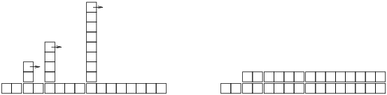
El trabajo extra de rehashear aparece como una secuencia de torres cada vez más altas cuyo espacio entre ellas es cada vez mayor. Ahora si derribas las torres, repartiendo el costo de cambiar de tamaño sobre todos los añadidos, puedes ver gráficamente que el costo total después de n añadidos es 2n − 2.
Una característica importante de este algoritmo es que, cuando cambiamos el tamaño del HashTable, este crece de manera geométrica, es decir, multiplicamos el tamaño por una constante. Si aumentas el tamaño de manera aritmética —añadiendo un número fijo cada vez— el tiempo promedio por cada add es lineal.
Puedes descargar mi implementación de HashMap en http://thinkpython.com/code/Map.py, pero recuerda que no hay razón para utilizarla: si quieres un mapa, solo utiliza un diccionario de Python.
B.5 Glosario
- análisis de algoritmos:
- Una manera de comparar algoritmos en términos de su tiempo de ejecución y/o requerimientos de espacio.
- modelo de máquina:
- Una representación simplificada de un computador utilizada para describir algoritmos.
- peor de los casos:
- La entrada que hace que un algoritmo dado se ejecute de la manera más lenta (o requiera el mayor espacio).
- término principal:
- En un polinomio, el término con el exponente más alto.
- punto de cruce:
- El tamaño de un problema donde dos algoritmos requieren el mismo tiempo de ejecución o espacio.
- orden de crecimiento:
- Un conjunto de funciones que crecen todas de una manera considerada equivalente para propósitos del análisis de algoritmos. Por ejemplo, todas las funciones que crecen linealmente pertenecen al mismo orden de crecimiento.
- notación O grande:
- Notación para representar un orden de crecimiento; por ejemplo, O(n) representa el conjunto de funciones que crecen linealmente.
- lineal:
- Un algoritmo cuyo tiempo de ejecución es proporcional al tamaño del problema, al menos para tamaños de problema grandes.
- cuadrático:
- Un algoritmo cuyo tiempo de ejecución es proporcional a n2, donde n es la medida del tamaño del problema.
- búsqueda:
- El problema de localizar un elemento de una colección (como una lista o diccionario) o determinar que este no está presente.
- tabla hash:
- Una estructura de datos que representa una colección de pares clave-valor y realiza una búsqueda en tiempo constante.
- 1
- Pero si tienes una pregunta como esta en una entrevista, pienso que una mejor respuesta es, “La manera más rápida de ordenar un millón de enteros es utilizar cualquier función de ordenamiento que sea proporcionada por el lenguaje que estoy utilizando. Su rendimiento es suficientemente bueno para la gran mayoría de las aplicaciones, pero si resulta que mi aplicación fue muy lenta, utilizaría un analizador de rendimiento para ver dónde fue utilizado el tiempo. Si pareciera que un algoritmo de ordenamiento más rápido tendría un efecto importante en el rendimiento, entonces buscaría una buena implementación del ordenamiento radix.”
Index
|
|
Contribute
If you would like to make a contribution to support my books, you can use the button below and pay with PayPal. Thank you!
Are you using one of our books in a class?
We'd like to know about it. Please consider filling out this short survey.